10双盘
跏趺坐修习
双盘的优势
双盘才能解脱
圆圆柔柔摘月光
2024-02-11 21:52
：
师父，我来跟您说声我好高兴，您终于回来了，我们好多人都在期待您，终于盼到您了。还有个小小的问题，只念阿弥陀佛，不想打坐了可以吗？行也阿弥陀佛，坐也阿弥陀佛，听音乐也听成阿弥陀佛，念头里都是阿弥陀佛，但是各种原因熬腿实在很为难，可不可以不用熬？
Taiguanglin
圆圆柔柔摘月光，问双盘太难了，要放弃……，这个是你的自由，这个我没法说。但是你问我的态度呢，在我的意念里，我只要认为一个事该做，就没有放弃这一说，就一直做呗。就像小孩子开始学走路一样，爬起来，跌倒，再爬起来，再跌倒，这没什么大不了的。那小孩子根本就不会认为这有多痛苦，他可能很享受这个过程，起来再跌倒，起来走两步，然后跌倒，再起来，再走三步，再跌倒，这有什么大不了的事情，你就做呗。
而且我向来认为，哪怕一件事情，这辈子我都看不到最后的结果，但是我认为这个事情是一定要做的，那我会做。有可能中间失败啊，那就算失败了，我也要知道我离成功有多远的地方倒下了。明白我的意思吧？这次失败可能下一次就成了我的很好的经验，也有可能从失败的地方就能站起来，我要知道我离成功有多远的地方倒下，你能理解我的意思吧？好吧，你努力吧，还能怎么办，多努力。
尤其是在家修行的人，在家修行，说实话，你要说福报少吧，那的确是大不到哪里去。那在家修行的人，如果你每天发愿修行两个小时，可能你真的能挤出来两个小时。但是如果你说这两个小时太累了，不想修了，放弃了，你千万不要以为这两个小时你能用来娱乐，还做点别的事情。我可以很肯定的告诉你，会有其他更多的事情往你身上扑。而且这些事情往往会带来更多的烦恼。
你知道我的意思吧？那可能这两个小时的修行，也是在佛菩萨的加持下，给你抽出来这么点时间。你只要一放弃，这人世间的这些恶心事情，还带着更多的烦恼，往你身上扑，到时候你就觉得，哎呀，还是修行最好。这十年来可能有些人应该有过这样的感觉吧？
鱼鱼老人
14-02-2024
请tai师父谅解，我这两天一向您提问心里就堵的厉害，特别的烦躁，能感觉到别人情绪的那位师兄说她胃都开始抽筋了，向tai师父忏悔。
因为我想快点入初禅，如果能不熬腿当然就不想熬腿，因为看不见熬腿的希望，一直会有不断的事情和情绪不能及时化解的话就会让自己堵住，如果真的要熬腿通筋脉不堵住可能这辈子入定希望都很渺茫。
这边就没有强调必须双盘通筋脉，也没有强调必须要打坐多久才能入定，而是打坐专注力到了，不松不紧，气脉顺畅，方法正确大量的练习还要忏悔消业培福就可以入禅定，就算单盘散盘也能入定，当然双盘更好，加上我认可这边的禅定境界，所以就在练习这边的方法。
两边都是我很尊敬的师父，但您们的观点不统一（只针对入禅定这一点 其他的观点基本都是相通的）我想知道到底哪里出了问题。
现在就好像我站在一个分水岭，不是选择这边就是选择那边，有点烦，如果能搞清楚并能统一观点的话，这样就最好了。
Taiguanglin
鱼鱼老人，我从十年前就看到你了，你这个名字挺有个性。而且那个时候我看你是大学生吧，在宿舍里住着，和几个人一起住，跟舍友们一起住，你还要修行，还要出来跑步，我知道。哎，这个孩子挺好的啊，根器很好，应该有进步吧，你未来应该有成就吧。然后再往下看你写的内容就知道，这个孩子有问题呀。
怎么这么多事儿呢？可以准确的是贡高我慢心很强，认为自己很了不起，凡事都得自己来试一试。别人明明告诉你这个事儿这样做是不行的，会给你带来更不好的影响，那你一定要做，凡事你都得试一遍，你看看你十年都怎么过来的啊？是不是把别人说不行的修行方法你都试了一遍，全部试了一遍，然后把十年最好的青春用来修行，结果呢，也就勉强两个小时吧。
你看这群里有已经50岁的老菩萨，50岁的老菩萨，已经绝经了，她用三五年的时间，已经达到两个小时，而且现在还感觉挺好的，身体感觉恢复还可以往前走。你看有些人就一门深入的做，你就不这么一门深入的做，跳来跳去，跳来跳去啊。我看你把修行当做吃自助餐一样，拿着盘子进去，吃一个再换一个，吃一个再换一个，不好吃就换一个，反正100多个菜嘛，你挨个吃，然后基本上100多个都尝一遍，也就饱了，就出来了。但修行不是这样的，你毕业100个小学，你还是小学生，你得小学、中学、大学这样往前走，不是把一个方法试一下，不行再换一个方法，你看你对修行的态度。
你自己说疑情参不起来，那我叫你参思情，你又说思情参不起来。那这两个疑情思情不行的话，就只能往下跌落一个层次了吧，那就观呗，观上三根的观，一种是观阿弥陀佛或者观音菩萨，你说跟观音菩萨有缘，那你就观观音菩萨，你又说观也观不行。那上三根还有一个方法，就是耳根圆通法门，也是观音菩萨的法门，你能做吗？我想你也做不来吧。还有第三个法门是观身暖处，但是这个法门从来就没有人练过，就只有在佛经里出现过，楞严经里出现过，我就从来没见过有人练观身暖处的这种修法。你再往下跌落，就是观呼吸了，就初禅那个下三根观呼吸，你到现在还在观呼吸这个问题上来回跳。
观也行，参也行，就是因为参不起来，观不起来，所以要反复的练，反复的练，反复的练，一直练到行为止。不是说我一时之间不行，我就不观了。那你再换个方法，也不观了，一会儿就换一个。怎么说呢，你要吃饭，你得持续的吃才行吧，你吃一口觉得没饱，我就不吃了，我再过两天我再吃一口，我又没饱，我就不吃了，那能饱吗？你能饱吗。你想想看，能不能饱这样。
还有，不要把几个不同的师父比来比去，这个对你来说没有用的。你能判断一个师父高低吗？你只能判断他比你高吧，至少他比你坐的时间长，还能加持你，那你觉得他比你高，和你有缘，又在旁边可以指导你，那你就跟着他学。
任何师父一旦开始教的话，绝大部分都会说，以前你学过的东西全部作废，现在开始重新学，我教你干什么，你就得干什么，这是正常的教法。但是我现在做的是大众传法，我不会特别的收谁为徒，让他一定要听我的话，所以我劝大家这么修就好，有人听劝了，就跟着这么修，然后修的好了，就说在这里修的好。
有的人他就不听劝，然后就自己到处去试，试各种不同的方法。那位师太也说，她也放下了一段，又试了其他方法，然后觉得还是按照正常的方法，按我说的方法，慢慢的练，这样比较好。
你现在已经用十年时间试了各种方法，都已经30岁了吧。那现在开始，那就一门深入的练，你愿意修那个师父教你的方法，你就跟他修。你愿意修我教的方法，这个念佛法门四件套，出声念佛，默声念佛，然后是观阿弥陀佛，然后思念阿弥陀佛，就这个四步修法，一个一个往上练，要不你就去练他的方法，这样可以了吧。
阿难乎
2024-02-16 19:25
4.师父，今天有人说，不双盘也可明心见性，是这样吗？
Taiguanglin
不双盘也可明心见性，这个明心见性是怎么解释，怎么解释得看什么人吧。如果说你成佛了才算明心见性的话，那不双盘就成不了佛的。如果说明心见性是理悟的，我知道了人有不生不灭的自性，我也知道自性中长出来的妄想分别执着，叫心，这个心是可以明掉的，这么解释的话，理悟也能做到，那就不需要双盘也行，你只要这么相信就可以了吧。
明心见性，刚才说的，明是个动词，把外面长出来的妄想分别执着给灭掉的意思，明就是那么个意思。明和无明相对，无明就是妄想分别执着，明就是没有妄想分别执着，这么理解。如果你这么理悟的话，这个理悟也算明心见性的话，那他说的也对，反正我对这些文字游戏不感兴趣的。
如君
2024-02-22 06:32
顶礼师父！我平时不打坐的时候，看书读经都是坐在沙发上，类似于散盘那样，两小腿平行不交叉，坐好几个小时。
请教，长时间这样坐会不会有问题呢？比如因为气不通会怎么样等
Taiguanglin
如君，散盘坐的再长时间也没有用，不能打通经脉，而且说不定还出现其他问题。前面有人问我单盘时间长了，又是出了问题。所以到了你能坐两个小时的时候，就要试着双盘，往双盘努力，一开始可能10分钟，20分钟，那也得坚持，慢慢来。散盘没有用的，基本上没有用，一开始只能是拿来静心的一种坐法，不能算是一个完整的修行方式。
子谦
2024-03-12
师父好，据说散盘可以打通筋脉，但是我认为不可能或者说可能性很小，请问师父，散盘到底能否打通筋脉？ 否则我们熬腿的意义何在？
Taiguanglin
子谦，打通经脉原则上是双盘才行，但是也有些人有特例，他身体底子非常好，所以单盘也可能做到打通。但是你就算是打通了，你要再想往初禅走，最后还得是双盘。因为初禅四个小时，单盘下要坚持4个小时，有点难。因为他身体有点倾斜的情况下，这气不是全通的。你打通了，现在是全通了，但是你要做到坐忘的状态是不行的，所以最好还得双盘。
changtj678
2024-06-18 21:03
Tai师好。1、我现在不到五十岁，平时工作，身体健康，但是双盘不了，请教Tai师如何修行？
Taiguanglin
Changtj678，双盘不了，那就先开胯、练呼吸，然后减肥，这几个做到后，从单盘开始慢慢练，一般三个月、半年就可以盘上，不要着急，一开始都那样。
深蓝999
2024-8-16
顶礼Tai师父_x0001_！看到关于双盘的问题，弟子一直也有此方面的疑问要请教，本人已年过五旬，也请了《坐禅1》与问答录，已近三年，收益匪浅，在此之前，也喜静坐与冥想之类有十年时间左右，但因二十四岁时出意外导致右大腿粉碎性骨折，康复后，年龄渐长，慢慢出现双腿不等长，走路没什么大问题，快速奔跑就不太利索，并且大腿柔软性不够，一直无法盘腿。因伤过，也没如何去刻意压腿开胯之类，打坐时都是采用金刚跪坐式，即双脚跟稍微分开一点，两脚大拇指微微相触，然后屁股偏外侧坐在后脚跟上，多年来都是这样，能坐上一二个钟头，有一次进入过较深的层次（如师父所说是佛菩萨让你精进修行的信号），几年前看到问题录中所说双盘是唯一打通经脉的方法，心中就黯然。能双盘真是天大的福气，自己只能念佛磕头练呼吸了，今天又看到此问题，就顺便问一下师父：无法双盘，就打不通经脉，也就代表不能进入深层次的禅定，连初禅的门都被关上了，只能是发大愿布施做功德念经念佛之类，这样能得到解脱吗？能去到哪个层次的天界？
Taiguanglin
深蓝999，现在受伤的时间已经过了二十多年了，那样的话，你可以尝试双盘，我觉得你也可以试一试的。从单盘开始，不要一下子双盘，也可以从散盘开始，散盘单盘双盘怎么个姿势，网上都可以搜得到，你就试着开始一点一点慢慢努力，因为骨头靠自己是没有办法完全康复的，比如说一个人胳膊断了，后来接上了也愈合了，等死了埋到地里，过几年再挖出来的话，骨头又断的，本来断的地方还会断，因为后天的这个修复它是有限度的，但是打坐双盘的状态下是可以百分之百修复过来的。
所以你有问题的话反而更适合，这些问题的话，我觉得更应该精进的去往这个方向努力，发大愿之后做功德回向，然后希望佛菩萨帮你治，然后继续做功德，同时坚持往这个方向努力才是正确的心态，你不要觉得自己有了伤之后就不能坐了。世界上没有什么不能做，做不到的事情，那个慧可，人家没有一个胳膊的人他都可以打坐的，慧可是断臂求法嘛，他没了一只胳膊，按理说没有一只胳膊的话，气就不能形成循环，一条胳膊气得通过那里，但是他没有胳膊照样可以成为二祖，慧可是二祖吧从达摩开始。
所以你先把心态改变好，也有一些感应方面的事例，有人很胖，所以他都盘不了腿，但是他诚意到了，就梦见弥勒菩萨教他怎么打坐，弥勒菩萨打坐的方式连散盘都不算，你看寺院里大肚子弥勒佛他是怎么坐的。他是一只膝盖是翘起来的，他连散盘都不算，但是他在梦里就学到弥勒菩萨教他这个姿势，然后这个胖人就按照那个姿势坐了之后也进入了禅定状态。所以说当你发现自力不行的时候，还有他力，你的诚意到了，佛菩萨还可以靠这些方式来推你一把，也可以让你就像你体验过的较深层次的也可以做得到的。
还有我讲法是按照普通的标准来讲的，因为我现在是大众传法，面对很多人几千几万人在讲，所以以普通人的标准来说，不能讲这些个例特例，你因为看到不能双盘就不能打通经脉了，就觉得很气馁了，就彻底放弃了，这就有点过了。因为从讲法的这个角度来说，只要从口中说出来，那就是一种执着，一种偏见，那肯定是偏见的。
虽然我尽量往这边也讲一点，那边也讲一点，多讲一点，各个方向多讲一点，但是一旦讲出来，那就是一种认知，而不是同时占有多种认知的。所以说无法双盘就不打通经脉，理论上的确这样，但只有双盘情况下，身体才气才能形成一个循环。
但还有很多特殊情况，也有佛菩萨加持等因素，还有最不行，不还有一个往生的这个方法嘛，往生是不需要禅定功夫的，理论上是也不需要的。就是你念佛念到很精进了，你所说的那个较深的层次，体验过那个层次，哪怕到那个程度也够了，然后做功德，把这个不够的部分就全给补上，用功德补上也可以往生。
所以不要贸然的放弃。最烦的人就是我觉得这个也不行，那个也不行，因为我知道身边就有这样的人，叫他练腹式呼吸他觉得不行，肚子鼓不起来，以前做过手术不能做了，叫他磕头他说膝盖疼，以前做过手术，磕也磕不了头，叫他念佛，他就好像反正干什么都不行，那你怎么办？那你还能怎么办？这个佛也说了，哪怕七旬老人他只要愿意走，佛都可以帮他渡河，背过他渡河，就怕是自己彻底放弃了，就瘫在那里，连走都不肯走，那就佛也没有办法。佛也度不了所有人。
佛只能帮助那些自助的人，所以你不要轻易的认为，因为我曾经受过伤，就以为以后就不行了。我感觉你受伤的不是大腿，而是脑子，因为你的意识层面上认为你已经受伤了，你只要认为这只是个消业而已，你消了这段业，我未来就修行更可以进一步了，你这么想的话那是不是心态就变了啊。
因为我们修行人都是这样的，修到一定程度会必然会出现业障，然后虽然不能说完全没有恐惧或者想退却的感受，但是一发现有业障就想到，只要熬过这个业障，未来的境界还会提升，有这样的念头的话就可以勇往直前了，有业障就承受就可以了。
咪了个喵xxx
2024-08-18 12:56
顶礼师父！
1、请问一定要双盘打坐才能进入禅定吗？
2、是否有其他的方式或者姿势也能进入禅定？
Taiguanglin
最后一个问题，咪了个喵，这是112楼，双盘才能入定吗？如果你已经练到了能入定的程度，那以后可能是站着也可以入定，但是你没有练到这个程度的情况下，你想练到入定的程度，那必须双盘。
如果你是身体有残缺的人，那另说。如果你是正常的人，那肯定是双盘的，除非你受过重伤有点不行啊，那还可以另说，只要是身体健全，没有什么太大缺陷的人，都需要双盘才行。
是不是有其他方式或者姿势也能进入禅定？有的话早就有人教了，因为没有才没有人教嘛。
如果是很小的时候，十几岁就开始修行的人，他本来身体还没有彻底堵，那有可能靠单盘也能入定。这种人都是靠前世修行带过来的，前世已经有过很长时间的修行，所以这辈子下来很早就开始入道，这样的话也有可能，但是单盘这个腿一边高一边低，胯骨也会一边高一边低，所以没有办法长时间坚持。
你要入禅定的话，以初禅为标准，至少也得打坐四个小时吧，你单盘的情况下，硬是勉强打坐四个小时，气也不能形成完整的循环，所以很难，如果更长时间的话，单盘坚持不了的。我从来没看过单盘能坚持八个小时的人，看上去很舒服不怎么疼，但是到了一定程度，这个胯骨稍微弯曲一点的这个状态，会逐渐变得越来越疼，最后坐不下去了。
AuntSally (瑛)
2024-11-13
顶礼师父！今请问：
1、是不是只要能双盘上，就能促成人体气血循环？
Taiguanglin
下一个问题，是不是只要能双盘上就能促成人体气血循环？双盘单盘理论上都可以，但是想彻底打通全身经脉，普通人来说还是双盘才行的。
光影
2024-12-14
2、之前也学习过打坐，很多教打坐的说身体舒服就行，不用双盘，身体舒服就可以绕过身体慢慢身空，是不是不双盘只能达到一定入静地步，再往上就不好修了。
Taiguanglin
第二个问题，身体舒服就可以绕过身体慢慢身空。身体舒服到什么程度你才能绕过？是不是完全没有感觉才算彻底的绕过身体了？如果你想让身体彻底没有感觉，就必须双盘，单盘是做不到那个程度的。单盘以为入静了，但这个入静只是粗浅的，和禅定还是很遥远的。
dlfu
2025-2-13
1、很多打坐的人可能不双盘，但是身上气感很多，而且还会打开天眼，打坐因为不疼，比较舒服，但是是不是这些都意义不大，不双盘这些功能，舒服，气感没意义是吧？
Taiguanglin
dlfu，不双盘的情况下打开天眼，不痛，比较舒服……，意义都是自己赋予的，自己觉得有用那就有用，自己觉得没有意义那就没有意义。所以这种问题，怎么看呢，你想彻底打通全身经脉就必须双盘，单盘情况下就算有气感，那也打通不了全身经脉。
有些人的确一直在单盘，以前也讲过了，单盘骨盆会往一处稍微倾斜，这样的情况下是没有办法彻底入定的。如果你靠双盘已经练成了入定的境界之后，有时候单盘也可以试着去入定，也可以进入。但是普通人，初学，从一开始修行的话，没有办法用单盘来直接入定的。
当然这个过程当中，身体还是会有一些修复，单盘也比不盘要好一些，所以就会有一些气感。但是这个并不是究竟的方法，只能算是一种过程而已。
大胡子老道
2025-03-11 19:23
师父吉祥！
1、之前师父说过，有的没练过双盘，但身体特别好的人，一直散盘也可以入初禅。这样的人，是否因为身体内脏本身就特别健康，如果他双盘的话，四个小时内也不会疼，只是他没练双盘而已。
Taiguanglin
大胡子老道，有些人的确底子很好，小时候练过或者上辈子就已经练的人，有些人甚至在不需要入定的情况，也能用一些神通。
但是我们不能拿这些人当做标准来给大家讲法，我们是按照大部分人来讲。普通正常的人至少要四个小时才能入定，而且你要四个小时内身体不动才行，能忘掉身体的存在感，这个时候才能入定。一般人是达不到的，所以需要练。
你说这样的人他四个小时会不会痛？这个不知道。我到目前为止也就见过一个人，他是靠单盘能入定的，按照他的说法，他是从小在家里爸爸带着一起练。他单盘也是来回换，不是一直盘一条腿。但是他坐禅的时间一般不到四个小时。
根据他的说法，他从十几岁就可以入定了，所以基本也没有谈过恋爱。因为能入定之后，就对消耗能量的事他都反感。所以从我们的视角看，他反而是很自我的人，因为他不希望任何事情来打扰他，就愿意静静的待着。这样的人也是解脱不了的，因为按照我们的理论，没有大菩提心，不去度人的话，你光靠自己是解脱不了的。
Cocoo
2025-3-14
师父好 ，请问打坐一定要双盘腿吗？散盘可以吗？
Taiguanglin
请问打坐一定要双盘腿吗？你想你修行的目的是什么？你是要解脱呢，还是想进入初禅、二禅等更高的境界禅定，那就双盘。
你只想坐一坐，西方说的灵修，所谓的冥想，想心静一下，散盘也可以。但是下面这位朋友也说了，没有丝毫作用。能真正单盘长时间的人，在双盘之后再回过头来看那个单盘，就发现单盘只是为双盘打基础而已。
单盘为何不行
摩尼宝珠Lotus
2024-02-18 10:46
顶礼TAI师，我是慕名而来的，先介绍一下，末学19岁皈依，吃素15年，断淫10年单盘打坐持咒近三年几乎未间断过，后来出现身体容易怕风怕冷，月经周期缩短，20天来一次，本来吃素又吃得少，例假频繁，气血两虚，脾虚无力疲于应付，这个情况是打坐不正确引起的吗？我应该如何才能调好例假的问题？后来因为例假兼头痛的问题而停止了打坐，心中忧愁，看了师父开示又准备开始重新打坐，又担心例假频繁的问题，请师父指点，感激不尽！！！
Taiguanglin
摩尼宝珠，我说过单盘不能打通全身经脉，也形成不了气的循环，所以一定要双盘。你要单盘只是用来坐个静心的状态，坐个半个小时、一个小时可以，但是你要长期打坐那必须是双盘，往双盘再努力。双盘才能形成气的循环，不漏气。所以身体能够保持那种健康的状态，只要不是坐的姿势不对的，都能保持这样的状况。
打坐磕头念佛
2024-03-03 12:51
师父，我单盘观阿弥陀佛，思阿弥陀佛状态就很好，腿坐很久也不疼。练双盘，拉伸，瑜伽，拉筋，动来动去，练来练去，反而单盘都坐不上半小时。我在想，要不我就不管单盘双盘了，就观阿弥陀佛，那样单盘还能坐久一点。
我想问一下师父，是继续观阿弥陀佛思阿弥陀佛重要？还是练双盘熬腿重要？
Taiguanglin
打坐磕头念佛，这个你随意，你觉得练双盘很烦，暂时就不想念，那也可以，到时候，你啥时候念着念着倒觉得，想进一步修行，想再进一步，想把脑子里妄想、烦恼再减少一下的时候，就发现不修双盘是不行的。你现在单盘一般一个小时还可以，再过两个小时三个小时，是打通不了全身经脉的，反而会往哪个方向倾斜，骨头反而会被倾斜的地方压住，后来就有点变疼，身体会往一侧倾斜，最后还是得双盘。
长风
2024-12-9
师父好！弟子长时间右腿在上单盘，导致脊柱似乎有点变形，是否有办法纠正？长时间一种姿势单盘是否会影响健康？
Taiguanglin
长风，长时间单盘导致脊柱变形，既然你知道是什么原因，那就改变这个原因就可以。适合双盘，人都是要双盘的，单盘是没有办法打通全身经脉的。而且单盘的确会两侧高低不一样，如果你想长时间单盘的话，最好是两个腿换着来。所以你自己看看，要不是每天换着腿来，要么是直接来双盘，最好的方法是双盘。
依一
2025-1-17
2、对学佛悟道也很精进的师兄，她们打坐只单盘，而且例举了很多大师说女人双盘如何不好，比如会子宫脱落、血崩等，说是女人的生理与男人不同，我是不相信她们的说法，坚持双盘，但也说服不了她们。那些大师的说法是从哪里来的呢？
Taiguanglin
第二个问题，只是单盘，女性不能双盘这个问题，那些大师的说法是从哪里来的，我也不知道，假大师多的去。
以前那个“轮子功”，不知道现在还有没有人熟悉。轮子功的说法是：男的是一种盘，女的是一种盘。就是莲花座和降魔座只能盘一种。男的我不知道是哪一种。他们就是说男的要么是莲花座，要么是降魔座，就是盘一种，女的就盘另一种，还不能换。他们就是这么说的，而且那么练的。
所以我看到的那些人练了很长时间，也突破不了两个小时，也就一个小时，也就在那徘徊，觉得挺好的。但相比普通人而言，完全不打坐的人相比，你只要每天一个姿势盘一个小时那也行了，那也会感到健康肯定有点了。
但是你看这样的错误的谬论，错误的说法，到处都有人传呢，所以这样的大师从哪里来的？都可以说是附佛外道也好，就是“未证言证”的那些假大师们。
双盘的准备
开胯(蝴蝶式/青蛙趴)
虔诚的行者
2024-08-16 08:39
2、不双盘时，练习金刚跪坐，可以提升双盘时间吗？
Taiguanglin
不双盘时，练习金刚跪坐，可以提升双盘时间吗？双盘时间和金刚跪坐没有关系，但是金刚跪坐可以让身体稍微柔软一些，多少有点帮助，但谈不上有多大的帮助，你还不如直接练双盘。
范晓龙
2024-9-12
第二个问题：我在平躺后双脚相对，膝盖放不平，而我对象很轻易地就可以放平，她的胯部一看就是能打开的，我是否也需要先练习把胯打开，才能双盘两小时不疼呢，开胯和双盘疼痛是不是有直接关系呢？
Taiguanglin
第二个问题，双脚相对，就是膝盖翘起来的呗，开胯的动作以前也教过了，你可以先练练啊。坐姿上双盘之后，两个膝盖都要贴到地上，不要一边儿翘起来，翘起来的话说明你这个胯还没开好。
但是一开始都是这样的，打着打着就慢慢下去了。开胯动作，像青蛙趴似的动作或者蝴蝶式的动作，都是为了快速地开胯，前期都有用，但是到后期，就差那么一点点的时候，这些动作也没有什么太大的作用，还不如自己坚持打坐，然后慢慢打开，只有坚持，凡事都会好的。我看不出你有什么其他特别的问题，都只是在正常的修行过程中会出现的问题而已。
Fun09
2025-03-12 18:59
师父，请问目前只能中低盘，做不了高盘，很想做到却做不到，腿髋太僵硬了，怎么办啊？
Taiguanglin
Fun09，中低盘，做不了高盘。腿盘上去都有好几年的过程，你不要想着一下子马上就能做到。以前也讲过各种瑜伽动作，像青蛙趴、蝴蝶式，这个也做一做；还有你的修为，你的修为越高，你脑子里的妄想就越少，身体就越柔软。现在你身体很僵硬，说明妄想也多。
从念咒开始，正常的修行，不要着急一下子做成什么样。尤其是在盘不了的时候硬掰上去的话，有可能会把骨头的某一处抵上，那有可能会受伤，所以正常的修行就可以了。
修行是个漫长的事，是一辈子的事。不要想着一两个月或者几天之内非要盘到什么程度，这是不切实际的，追求快速的人反而走不长。
减肥/健身
共渡
2024-3-14
我平时有健身的习惯，浑身是肌肉块，我想问师父这影响打坐吗？会不会导致筋脉不好打通呀？不过我现在健身频率少了很多，一般都改为打坐了，用不用把健身停了呀，师父？还有我本人不胖比较壮，腿上肌肉多，就比较粗，很不好瘦下来，这对打坐影响大吗？
Taiguanglin
共渡，的确健身大腿太粗的话，就有点盘不上，所以我们不太建议疯狂练肌肉的那种健身方式,尤其是腹肌，腹肌是向外打开的，疯狂练肌肉的那种练法，腹肌会往里挤压内脏，块越大，挤压的程度越大，所以还得向前凸起来，打开腹肌，让里边的内脏有更大的空间。还有大腿要稍微细一点，所以我个人是不建议去健身房一直做那种撸铁，把很重的东西抬起来练大腿肌肉的，这个没必要。能正常的大磕头就行，不需要练那些，以后就少练些吧。
Elaine
2024-3-15
师父昨天说腿细才好打坐，请问怎样尽快让大小腿变细，方便双盘吗？ 磕头对瘦腿有帮助吗
Taiguanglin
Elaine，你想怎么腿细？一个是磕头，一个是少吃点呗，少吃点，然后磕头，还有不要去健身房特别练腿，没有必要，我是不建议做这种健身房练腿的那种事，你就正常的磕头就行。不需要太粗，就正常情况这都能盘上，女的比男的更容易盘，因为腿细点，磕头加上打坐，然后少吃点就行，还有练腹式呼吸。
一念
2024-3-20
师父之前说过磕头其中一个作用就是练腹肌，这样呼吸更有力。您又说过少练肌肉包括腹肌，太大了不好，这有点矛盾啊。那我平时练练仰卧起坐，卷腹可以吗？
Taiguanglin
一念，练腹式呼吸，是让腹肌往前打开。你去健身房里练腹肌，那是把肌肉往里长开。你不练腹式呼吸，只是单纯地练腹肌，那个腹肌变得很大很厚，它会往里长。往里长会压迫到内脏，反而对血液循环没有好处，我说的是这个意思。
雪中送炭.
2025-1-14
顶礼Tai师！请问我健身练肌肉和打坐修行吃素这些起冲突吗？
Taiguanglin
雪中送炭，健身练肌肉和打坐修行吃素这些起冲突吗？按理说不起冲突。但是你练肌肉，尤其腿的肌肉，大腿太粗的话，打坐有点不方便，还是适度吧。
不过一般正常的运动，是不可能做到那种粗到没法打坐的程度。你看马拉松、田径赛的那些运动，腿虽然比常人粗一点，但是还没到那种很夸张的地步，像健美操运动员这样就不行了。
所以你尝试一下，以自己打坐舒服为标准来练吧。和打坐、修行、吃素是完全没有什么冲突的，有些人吃素照样可以健身。
动功(藏地五式/晃海/瑜伽)
毛塵水
2024-02-16 17:54
頂禮泰師父
再問一下晃海，因為曾經有師兄提倡過。但在師父你的語錄之中。從沒看到過。想聽師父的看法。
Taiguanglin
毛塵水，晃海，坐着晃来晃去的，开胯这些动作，就是为了打通经脉，这是道家的修法吧。做瑜伽动作也行，这主要是在上坐之前，盘腿盘不上的时候做的，基本是一种方便法吧。我现在基本不讲这些，我现在就默认大家都能双盘，不行就勉强单盘，看10年前的书多试试，最终目的是能盘上就可以了，别管前面的这些。
遗忘的风景100
2024-02-16 12:19
tai师父，我想请问一下练藏地五式（书上说能打开脉轮），八部金刚功这些对初期修行帮助大吗？
Taiguanglin
遗忘的风景100，其他的任何动功你都可以试试，我不反对。我是最简单的，直接用五体投地一直磕到现在的，我到现在还在磕头呢，这个没有什么特别的规矩。有些人就说，磕头啊，打坐啊进步很慢，然后去学道家的什么功夫，什么练气的方法之后，感应来的非常快，那他就修那个呗。至少起码把基本的佛理明白之后，先把身体搞起来之后再来修佛也行，没有什么太大问题，不要局限在那种门派之类的分别之心好吧。
喵喵呜呜222
2024-02-15 22:21
顶礼Tai师！
1、请问去找瑜伽老师学习劈叉开髋是否对双盘时长的增加有帮助？
Taiguanglin
喵喵呜呜222，瑜伽老师有劈叉动作，你可以去学，只要能做到，达到目的就行啊。
zhuxiaofang202
2024-02-20 18:37
顶礼师父！我莲花坐的时候右腿不能落地，而且降魔坐的时候，也是左右不平衡，右膝盖也是低点，需要垫一下才平衡坐正。师父，这是什么原因，怎么解决？
Taiguanglin
zhuxiaofang 202，你就是膝盖抬起来了呗！双盘的时候，一边的膝盖抬起来不能落地呗！你去网上看视频，看那些练瑜伽的人，怎么开胯，你照着做。慢慢练，别着急，练得太急了，有可能伤到自己。
双盘的姿势
腿脚
烟火0805
2024-02-13 16:10
师傅我这盘腿可以不，练了快四年了。
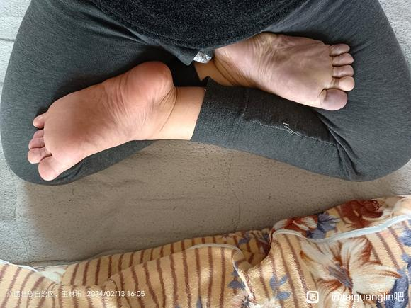
Taiguanglin
烟火0805，不是看盘腿的姿势对不对的问题，你能盘多长时间，这个是问题。你要说姿势的话，这个盘腿的确腿是粗了，你要这么盘的话，脚脖子这弯曲的地方过一会儿就会疼的。所以最好是让腿瘦一点儿，让脚再往上一点儿，能顶到腹股沟那儿。
虔诚的行者
2024-02-15 10:49
Tai师父，有的师兄说双盘打坐需要把跨和髋先打开否则伤膝盖，打开的标准是两个脚心都朝上，我降魔坐和莲花座里面的脚心都可以向上，两个脚跟都可以顶到小腹，但是外面的脚脚心不能完全向上如图，这样还是没完全打开吗？这样长时间双盘比如2小时以上，会伤膝盖吗？

Taiguanglin
虔诚的行者，这个从外相上看是对的。但是我得先说明，所有的正法的修行都是在佛菩萨的加持下进行的。细微的变化或者疼痛的感觉呢，你得先想象到这是佛菩萨的加持下进行，不是你一个人在努力，明白吧。如果你一个人在努力，像前面的那个伤到骨头，然后就很难恢复了。你得先想到这一点，然后就修行间多做点儿功德，然后觉得哪里不对的时候，相信佛菩萨会指点你，这才是正确的想法。你不要随便去找这个人问，他告诉你这样的方法，又去找那个人问，他又告诉你不一样的方法，你自己就矛盾冲突在里边。
那一旦开始盘起来之后呢，怎么办呢？慢慢儿找个适合自己的感觉。其中膝盖的感觉是和腿气不通的感觉不一样，你得理解这一点，气不通的感觉是屁股疼，还有大腿疼。膝盖的骨头疼的话，你这盘错了，像前面的人一样，膝盖不是拿气来通的，你要盘对了，他就不应该疼，盘错了就会疼，然后就开始伤膝盖。如果气不通的情况下，疼的是屁股或者大腿，还有脚脖子这儿也会有点儿疼，但是脚脖子这都还可以吧，这个是很容易冲开的。就是屁股和从屁股开始到大腿，离膝盖上边儿这一段，最酸麻胀痛的地方，只要把这个打通了，就算打通了，好吧。
觉莲
2024-02-17 15:51
听了之前师父答疑，盘腿时脚踝处要尽量往腹股沟靠。今早双盘开始时是脚没放那么上（附图1），脚踝处90分钟后开始疼，然后试着将脚踝完全放上大腿根（附图2），就不怎么疼了。平时最后那几十分钟真是痛得难熬。是不是之前盘得太散导致的？但我看佛像盘得都很散啊。
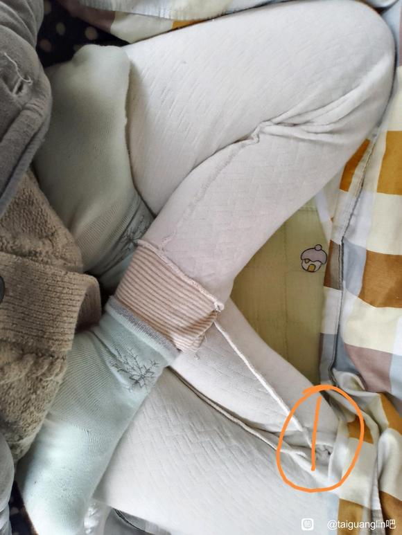
Taiguanglin
觉莲，盘腿是要把脚往腹股沟上，往上放，尽量往上放。如果你的腿够细，像印度一些苦行僧，骨瘦如柴的苦行僧，脚直接可以出溜到大腿之外，这样就更不疼了。但是一般人做不到的，那主要是以膝盖不疼为标准。如果膝盖疼，你盘错了，膝盖疼是慢慢的疼起来的，随着时间推移，慢慢慢慢。如果是修复骨头的那种疼，是疼的非常快，到了时间点就一下子，没有那种慢慢疼的感觉，而是一下子非常疼，不管是膝盖疼还是髋关节疼，都是起来的速度非常快，前面还坐的好好的，心态很平稳，突然就开始疼的很厉害。
果慧
2024-02-22 19:02
顶礼太师父！祝您六时吉祥！因为之前一直没有遇到靠谱的人，所以也没敢练习双盘，怕走火入魔。前阵子也有试过双盘，能盘上，但是感觉脚腕有点疼，也没有继续学。今天又重新试了一下，比上次强了一些耶，可能是这几天学了群里的练腿，估计有一点用。忽略我的脏脚，都是臭皮囊，身外之物，没那么必要在意。感觉腿还有点粗，将近100斤，还得再减一减，那就是说我最近再练一练的话，应该是可以正式开始双盘了，但也坚持不了太多时间。不过我不会放弃，开心耶！感恩遇见师父！
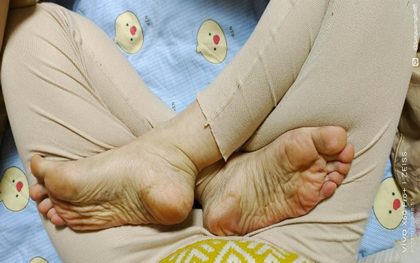
Taiguanglin
果慧，减肥是必要的，腿得细点。脚踝得贴到腹股沟，你脚踝是贴到了中间小弟弟这儿，这还不够，往里贴到腹股沟，就是另一侧腿的腹股沟这边，再往里贴点，否则这个状态是坐不久的，因为可能膝盖疼，要么膝盖疼，要么脚脖子的筋给拉得时间长了，脚脖子的筋也会疼。
行者20230202
2024-02-24 09:09
师父，您说双盘时因为膝盖疼而下座就是姿势不对，麻烦您看下我的双盘姿势对不对啊？我是尽力把脚往大腿根部放，感觉只能放到这种程度了，再放就很难受。还有我的右膝盖如果爬山运动量太大就有点儿疼，可能有点儿受伤了，所以我想通过双盘来慢慢修复。我现在还只能盘40分钟左右降魔坐，下座后主要是脚脖子疼。
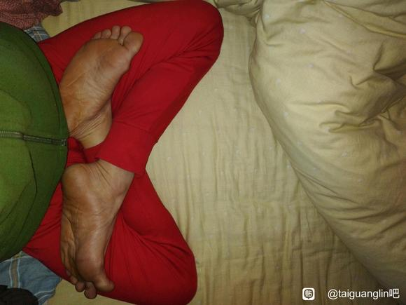
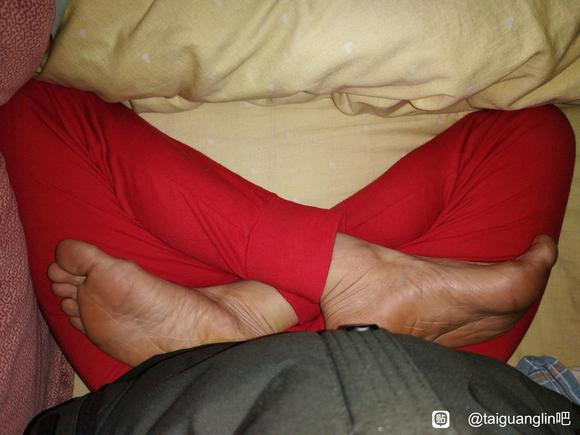
Taiguanglin
行者20230202：尽量往上盘，这就对了。如果是脚脖子疼，说明你还没有尽量往上盘。脚脖子疼，你把脚尖一直能出溜到大腿外，这样就脚脖子就不疼了，这样反而更好。
先拜众生再拜佛
2024-02-24 08:19
末学学习双盘一年多，降魔坐在右脚跟靠近腹股沟的情况下，若拼命把脚掌超出大腿(图2)，会因为屁股很痛而下座，若不要超出大腿太多(图1) ，能坚持的时间久一点，但会因为脚脖子疼痛难忍而下座。 一年多来本以为可以按照图1坚持、继续突破两小时，但近来答疑听到应该要屁股大腿疼为主才是正确，想请问是不是以图2姿势坚持才对？ (为摆拍才穿裤子)
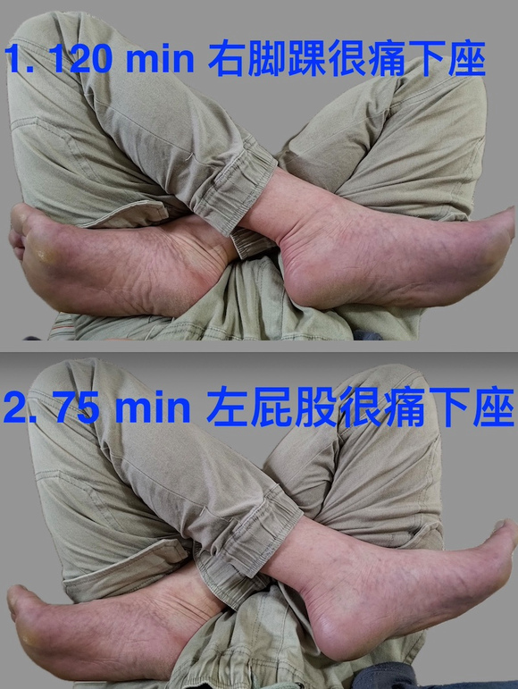
Taiguanglin
先拜众生再拜佛：这个图2（ 75分钟）的是正确的，左屁股很疼下座才是正常的。前面你说脚踝疼，是脚踝、脚背的筋给压着撑开了，你就按照第二个做就可以了。
涛涛涛说
2024-02-29 11:53
太师，为什么腿盘上过一会就会不对称啊？
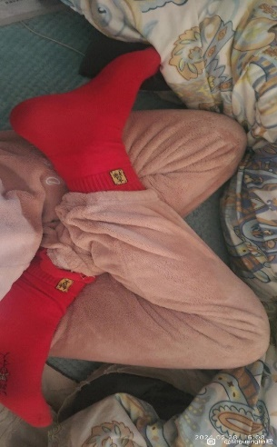
Taiguanglin
涛涛涛说，不对称没有关系。一般男性比女性腿粗，而且硬，你想做到对称更难，所以不用管那个。只要像你这样能脚指尖能出大腿外基本上就已经可以了，不需要追求什么非常漂亮的那种双盘。不要照着佛像学，佛像是为了好看那么画，那么雕的，不要照着佛像学。
妙觉本成
2024-03-04 07:07
阿弥陀佛！师父 ！您前面开示了膝盖疼是脚往后拉，我现在是这样盘的，盘完松腿时候左边膝盖还是疼那么几十秒。请问师父 是姿势还需要调整吗？
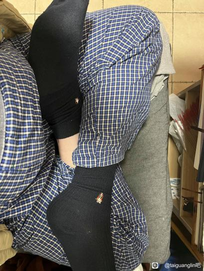
Taiguanglin
妙觉本成，姿势是对的，感觉有点腿粗，有点腿胖。你最好还是减点肥，磕头减肥。腿细一点就能盘上，而且不疼。腿粗的话膝盖真的有点疼。
炎
2024-03-12
顶礼太师父，请问：1、已经可以熬2-3h了，如果熬腿时一动不动，而且盘得紧些，比如裹起腿来像个正方形，这样打通筋脉效果更好，是吗？
Taiguanglin
炎，腿脚后跟抵到腹股沟、大腿根部这个是知道的吧，然后脚趾头能出到大腿外边是最好。
SNZYLG
2024-3-18
师父，1、双盘双脚伸出大腿外侧多一些盘的紧一些，是不是比盘的松的打通筋脉更快？
Taiguanglin
SNZYLG，盘的紧一点，就可以不伤到膝盖或者胯骨的骨关节的骨头。盘的松会拉到脚踝的脚背的筋，还有膝盖也有可能受伤，所以还是盘得紧一点好。
三日空
2024-3-20
2、以前答疑说屁股痛是对的，想确认下双盘时我的大腿和地面贴合的部分连着屁股那段比较痛，这个是对的姿势吗？顶礼师父！
Taiguanglin
对，你说的姿势是对的。双盘是大腿和地面贴合的部分，连着屁股的那儿比较痛。
先拜众生再拜佛
2024-3-22
请问师父，长短脚的人打坐有什么要注意的吗？
Taiguanglin
先拜众生再拜佛，长短腿打坐应该是没有问题的，正常可以打坐的，还有磕大头矫正脊椎是对的。你长短腿是受过伤，还是先天性的？对走路都有影响吗？正常情况下也可以磕头的。
唐伟
2024-3-28
弟子目前采用的双盘是吉祥座，降魔座有长短腿问题痛的厉害，还有机会矫正吗？
Taiguanglin
双盘吉祥座，降魔座？你就坚持到疼得不行了，不能再坚持，换腿就可以了。
一开始都很疼，不管是长短腿，正常人也疼。一个正常的，腿都一样长的人也疼得厉害。只要坚持到疼得不能再坚持了，那就起来活动一下，然后换个腿再坐一坐。一开始都这么起步的。
磕头、练呼吸要一起来，还有饮食要调节一下，最好不吃肉。
观照0620
2024-03-29 13:09
顶礼师父！今请问：
1、我已年过半百，得遇《坐禅》后断续练习打坐已逾五月，目前降魔坐最多30分钟，右脚踝处的痛感有所减轻，但我的右膝盖内侧会痛，这是否正常还是有所损伤？
2、如果暂时不适合双盘，我图中的ABC三种坐式从优到劣排列顺序是怎样的？
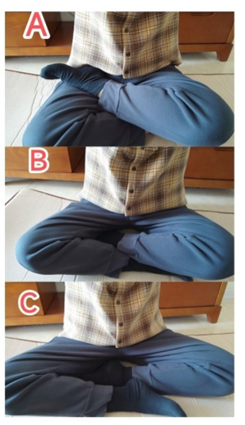
Taiguanglin
观照，我说过，这个脚后跟儿尽量要抵到腹股沟，下边腿。你现在A是单盘，同样是把下边的腿尽量往里放。还有放到什么位置呢？放到不是大腿的下边儿，下边儿腿是放到大腿内侧，贴到大腿内侧就可以了。还有上边的腿，尽量放到腹股沟处，脚心朝上，两个腿都是，尽量是往脚心朝上，这种单盘就可以。
还有第二种B，这种就盘腿而坐的，就不叫盘——单盘或双盘。
C属于散盘，C叫散盘。
一开始，实在是单盘都盘不上的话，就可以C，然后A，然后是双盘。
喝啰怛那哆啰夜
2024-03-29
顶礼师父！弟子降魔坐一小时的状态很不稳定，是对髋关节旋转的理解有问题，群视频反复看了，还是存疑，请师父指点。
1、一定要脚心朝天吗?
2、降魔坐的右腿架上去之后，右大腿和右小腿都要外旋吗?外旋的作用是什么？叩谢师父！
Taiguanglin
喝啰怛那哆啰夜，不是脚心朝不朝天的问题，就是你把脚后跟抵到腹股沟上，脚心自然往上了，不一定全部往上，起码是一半以上斜面往上的。然后脚趾头能出到外边就可以，出不了的话，脚脖子处的筋会抻的有点难受，过一段时间就会疼，所以筋拉开有点疼。你腿不要太粗，细到一定程度，脚趾头就能出到大腿外侧，那就不会疼了。
主要是往里盘，尽量往里盘，脚后跟抵到腹股沟自己的肚子上。还有，哪有什么旋转不旋转的问题。
毛尘水
2024-4-22
顶礼师父！请问，依师父所指示，双盘尽量深入，脚趾贴至大腿根部都做得到，同时师父你说脚趾要伸出，过了两边大腿之外的深盘最好，可是问题出现在其中一膝关节会升离地面，这样的话，是髋关节没有练好吗？深盘时双膝要求同时触地才算合格吗？谢谢师父！
Taiguanglin
毛尘水，盘好之后一个膝盖会抬起来，一开始都这样。你一定要把膝盖放下来的话，可以去练一些瑜伽的动作。我个人认为，如果你打坐的时候膝盖或者胯关节已经不疼的话，就没必要刻意地再去练瑜伽动作，你就这么坚持一段时间，身体放松了，整个关节也都松下来了，自然会下去的，这个是正常现象。
逍遥梦见沧海
2024-06-08 23:19
2、自己降魔坐两个膝盖可以着地，莲花坐为什么会右膝盖翘起呢？
Taiguanglin
那就是莲花坐的那一边身体还没有通，不通的同时筋没有拉开，所以会翘起来，坚持一段时间自己会下去的。
虔诚的行者
2024-06-20 16:55
顶礼Tai师！
双盘姿势高盘，坚持的时间短，疼感强。中盘和低盘盘的时间长，疼感弱。如果为了以后能盘四小时以上养成好习惯，尽早切换成哪种方式盘比较好？
Taiguanglin
虔诚的行者，双盘是慢慢上去的，并不能一下子直接达到完美的姿势，这有点难，大部分人都是一点一点上去。还要减肥，腿细一点就更容易上去了，身体还要柔软，筋要拉开，脑子里妄想少的话，身体更容易放松。这都有个修行过程，慢慢来，不能一下子硬拖上去。膝盖弯不过去的时候，你硬拖上去，弯不了的地方两个骨头抵得太近，磨的地方或者神经会压住，有可能会受伤，所以慢慢来，在你能承受的范围内慢慢往上拉就行。
三日空
2024-06-20 16:24
顶礼师父！
1、降魔坐时，按师父指导把右脚拉到大腿根部的话膝盖翘得很高，左腿再压上去膝盖就很痛。若把右脚放在大腿中部，膝盖能落地不太痛，但是脚踝痛，我想着脚踝痛比膝盖痛好一些，所以现在都只把脚放在腿中部而不是根部，但时间不稳定，有时能半个多小时，但有时候十几分钟就痛的不行，请问师父这种姿势行不行，还是说要忍痛尽量拉到大腿根部？
Taiguanglin
三日空，普遍来说把脚后跟抵到大腿根部是最好的，但是每个人身体情况也不一样。有些人能长时间坐，他就是把腿放到大腿的中间部位，也能长时间坐，也可以坐四五个小时，这对他来说已经不影响。但是前期为了尽量不伤膝盖的前提下打坐，所以有这个要求，只不过每个人的状况都不一样。你可以坐的话，只要是双盘，脚在哪个位置不是很重要，先把双盘的姿势维持住，看看能坚持多久，觉得膝盖疼的话，再一点点调整，这样就行了。
容
2024-7-16
师父吉祥！
1、我双盘很勉强，就是别人说的浅双盘，一只脚很难拉倒另一只大腿上，这样会不会有什么不好的影响？
Taiguanglin
容，双盘都是这么慢慢来的，不要想着一下子就直接盘的非常标准，都是有这个过程的。十年前的书里也讲过一些瑜伽动作，怎么把胯打开，把筋拉开，这个都有，你去看看。也可以网上找，现在网络上有很多视频平台，那里都有一些教瑜伽的，你看看怎么拉伸胯的筋，看看就行。
三日空
2024-08-13 18:50
顶礼师父！！！
1、之前我双盘脚只到大腿中部，现在能盘到大腿根部了，但在中部时可以盘最多六十分钟，到根部只能三十分钟，请问师父我是继续盘在浅点的位置，还是得盘深一点，重新从三十分钟开始练呢？
Taiguanglin
三日空，双盘盘深了到大腿根部有三十分钟，中部是六十分钟，我的建议是在正确的姿势下努力，先把姿势做对了，然后三十分钟开始练也可以的。只要你稍微减肥一点，腿瘦一点，这个还是能做到的，这个并不难，稍微努力一下就可以了。
在正确的姿势下可以长时间的盘，尤其是到后期越是有用。如果是有偏差的盘腿位置时间长了，可能会某个地方开始疼起来，到时候再想改的话有点难，六十分钟内倒感觉不到，到可能两个小时三个小时以后就慢慢会感觉到某些地方有点疼，那个时候想改就有点难了，所以我是希望能用三十分钟的那个先盘。
虔诚的行者
2024-08-16 08:39
顶礼太师，
1、双盘时气的8字循环经过两个小腿交叉处，我是垫上毛巾来减少双盘时两小腿交叉处硌的疼痛，这样会阻碍气的8字循环吗？
Taiguanglin
然后下边我看到还有一个问题，双盘，8字循环，垫个东西正常，一般，如果不穿裤子的情况下，只是穿着短裤打坐的话，最好垫个毛巾，因为皮肤直接接触到会出汗，黏黏糊糊的，有点不舒服，所以拿个毛巾垫一下，这个很正常。
咪了个喵xxx
2024-08-18 12:56
3、双盘的姿势是否会对膝关节有不好的影响呢？还望师父指教，多谢！
Taiguanglin
还有双盘姿势会对膝关节有不好的影响吗？这得看你怎么坐了，你姿势对的话不会有影响，如果肯定有影响的话，所有人，可以说没有什么人能靠双盘坚持那么长时间了。因为没有影响，而且越来越好，只要你姿势对了，膝关节受损的人都可以修复过来，四个小时的话，包括软骨都可以修复，所以才会坚持打坐嘛。
猪猪侠小兔子
2024-09-11
07：58
Tai师父您好：我双盘时候总有一个腿不能落地怎么办？顶礼Tai师父！
Taiguanglin
猪猪侠小兔子，Tai师父你好，我双盘时总有一个腿不能落地怎么办？一开始都那样，就开胯这个动作，有瑜伽动作，十年前的书上也写过，蝴蝶式，还有像青蛙一样趴着，你打坐前先练一练，然后慢慢来，不要着急，这个下去可能需要好几个月或者几年时间。
有些人看上去坐很长时间，但还是下不去的，也有些人只能屁股上垫高一点，腿就看上去下去了，但实际上屁股垫高就坐不长的。
现在所能做的就是坚持打坐，在坐之前先做点开胯，柔韧度上的那些动作，瑜伽动作，做一些就够了。
2024/9/14问题丢失，以下仅回答
Taiguanglin
加减乘除，你说的开始垂腿静坐六十到九十分钟，这个是坐在椅子上吗？正常的坐着，然后双手放到两个膝盖上，是这样坐的吗？一般是建议老年人盘不了腿的人才做的，你要是能盘的话，从单盘开始练也可以。
你要是单盘能坐六十分钟，那就双盘改个二十分钟三十分钟这样坚持，每天打坐坚持就可以了。你觉得有气感的话，静坐状态有气感的话，可能打坐的时候一开始不会有，但是很快就可以过去那个阶段，然后应该能更快的进入状态，最终还是双盘。
四十七岁还不算年纪大，所以现在开始练单盘、双盘这样慢慢来，十年之内，五六十岁之前运气好的话，欲界定是肯定能超过的，六十岁之前你哪怕每天坚持九十分钟，就如你所说六十到九十分钟，每天坚持九十分钟先打坐，然后再稍微加点时间，两个小时还是可以做得到的。
还有发菩提心度众生，希望往生极乐世界，我很赞叹你，发菩提心很不容易的，有菩提心的话，佛菩萨的加持就更快更有效，所以你修行方面更快的进步。
还有条件允许的话，多放生，做点好事攒功德，功德也是必要的，这都是往生的保险。别等到了死的时候才发现功德不够，平时多做点就好了。不要嫌花钱多，一开始你可以拿出很小的一部分来做，坚持三年五年，每个月放生两次，初一十五，一次放个十块二十块，一顿饭的钱也可以，这样坚持下来，三年五年过去福报就上来了。
AuntSally (瑛)
2024-11-13
2、高盘与低盘，对于促成气血循环有何不同效果？
Taiguanglin
高盘与低盘对于促进血液循环有何不同效果？你这个高和低是怎么分的？是不是把脚抵到腹股沟，使劲往里抵，这个叫高，你是这么看的吗？那我教的应该把脚后跟贴到腹股沟，这样才是正确的坐姿。
如果只放在中间或者前面，如果你觉得没有问题，身体坐着很舒服，这都好。但是有些人是膝盖会变疼的，因为这样把脚放到腿的中间部位，这个腿会压迫到膝盖的关节处，有可能会这样，尤其是腿粗的人，所以要尽量往上放。
树懒0
2024-12-09 15:23
顶礼Tai师！
1、看佛像还有虚云老和尚的双盘姿势，都是低盘，中低双盘情况下，里面那只脚的脚踝，也能坚持十多个小时不疼吗？
是否中低盘，里面那只脚的脚踝因为受力变形，必然坐的时间不会长？
Taiguanglin
树懒0，双盘的姿势不要看佛像，佛像是艺术品，它不是专门针对真人真实的修行打坐姿势来说的。虚云老和尚，人家首先是已经打通的状态下，就不需要考虑那么严格，哪怕单盘他都可以入定。
树懒0
2024-12-09 15:23
2、双盘高盘，半个脚伸出大腿外，里面脚踝确实不疼了，但膝盖会疼是什么原因？
Taiguanglin
还有低盘、中盘、高盘这些，最容易达到的原因是腿瘦。主要是瘦，先瘦的话容易达到。如果是瘦的时候已经打通了，那稍微胖一点也能坐下来。但是一般情况下，你要彻底打通的话，最好是减肥，瘦的话坐姿更容易维持，而且更容易做到准确的姿势。
至于脚踝，因为受力变形，坐的时间不会长。如果腿瘦的话，你在中低盘的时候它也不会扯到，主要是因为现在大家都吃的好，都胖，所以脚踝处容易受到拉扯，所以尽量要求高盘，高盘就更容易坐了。
但是如果你腿粗的话，这样高盘，大腿和小腿折叠的程度很大，这样的话撑开前面的膝盖，所以膝盖会疼。如果你腿细的话，这样折叠也不至于疼，所以如果你想高盘，还想不疼的话，最好还是减肥，让腿细一点就好了。
锋
2024-12-12
顶礼Tai师！双盘到两小时左右，里面的脚脖子很疼没通，继续这样熬坚持不住了。我如果把外面的腿慢慢放下来，里面的腿和脚脖子保持原姿势不动，直到打通不疼。这样练是否可以更快的打通脚脖子，打通后一直保持双盘也不再疼？
Taiguanglin
双盘的时候里面的这个脚脖子很痛，这个筋没有拉开是很痛的。然后呢，你想把外面的腿先放下，那就变成单盘了，或者散盘了，这样的话打通不了，这个脚脖子也不会拉伸。它痛了，痛的时候才会再一点一点拉开来，如果它不痛的话，它就不会拉伸的，那就一直保持在那个状态，所以你就打通不了全身经脉，单盘是打通不了全身经脉的。准确的说，脚脖子不是打通不打通，而是你脚脖子的筋没有拉开而已。
如果气通过去了，可能一下就不痛了，那也算是一种打通吧，但是主要还是看筋。你的年纪越小，身体越柔软，可能就没有这个问题。就是因为现在都年纪大了才开始打坐，所以这个筋没有拉开情况下要硬拉，所以这样。
不过我建议还是你坚持双盘坐姿，痛就忍一忍，忍到不能忍就算了，然后就起来该干嘛干嘛，一天能坐两座，痛到无法坚持的程度，坐两座最好了。
共渡
2024-12-12
1、师父，双盘的时候感觉屁股左右不对称，一高一低的感觉，尤其是后边垫上坐垫后感觉很明显，这是因为姿势还不够标准吧？因为盘的时候只有一个膝盖可以触地，这正常吗？盘完一个小时膝盖不疼，只有屁股和小腿很疼很堵的感觉。
Taiguanglin
共渡，一开始打坐，大部分人都是一边膝盖是翘起来的，它筋没有化开的话，就是这个胯骨都比较紧张，所以膝盖会翘起来。膝盖翘起来的话，骨盆会扭曲，骨盆扭曲的话，就一边屁股会疼，然后小腿也会疼，这个很正常。你只要每天坚持打坐，身体放松了，那自然都会下来，都会好的，你现在只打坐一个小时，怎么疼都没有关系，剩下的时间你不打坐的话，它都会恢复过来的，这不用管。
我觉得你也没有必要刻意的，为了把这个翘起来的膝盖往下，让它贴地而坐，什么过度的其他的这些行为。你就正常的打坐，每天两座，坐到坚持到不能坚持为止，这样就可以了。最好是每天都能延长几分钟或者几十秒也好，这样一点一点延长，让身体能适应这种状态，这就可以了。
飞虎队1
2024-12-14 17:06
2、师父，腿长的人是否比腿短的人双盘更容易？更不容易受伤？腿长膝盖脚踝弯折度都小一些。
Taiguanglin
第二个问题，腿长的人是否比腿短的人双盘更不容易受伤，腿长膝盖脚踝弯折度都小一些，也有这样的说法。但是最主要的还是你身体的柔软程度，还有就是小腿，小腿稍微细一点，一般适合长时间打坐的人小腿都是比较细的。
如果像足球运动员一样，小腿很粗，盘起来就有点累，有些人是先天肌肉发达，小腿很粗，还有骨头也是。练武的人说有单骨双骨这样的说法，手臂的骨头，还有脚脖子，脚背的骨头，有些人是天生就粗的，粗的人更适合练武，按照练武的人说法是那样的。
像成龙说他自己的是双骨，但是李小龙是单骨，应该是更细的那种骨头。修行的话骨头细的人更适合修行，每个人业不一样。
休养生息1
2025-01-14 20:03
顶礼师父，可以保持双盘低盘长时间，是否也可以打通全身经脉？然后入定？
双盘高盘和低盘，对身体获得的益处有什么区别？
是否是打通的时间方面或打通的深度方面不同？
Taiguanglin
休养生息1，双盘低盘长时间，是否也可以打通全身经脉？这个可以的，也可以入定，有些人就是靠低盘来的。
我为什么说高盘？因为很多人都说脚脖子拉开之后，会一直抻着，他筋没有彻底打开的情况下，过一段时间还是很疼的。所以双盘高盘，脚趾头出到外边的话，脚脖子筋就不会抻到，所以它不疼。但是如果身体比较胖的话，一旦高盘，膝盖的关节又会拉开，这个也会疼。
这两种都有一定的好处和坏处，你要找到最适合自己的方式。如果胖的话，盘得高呢，脚脖子不疼，但是膝盖有可能疼。如果盘的低呢，脚脖子会抻开，会疼，但是膝盖不疼——在这两个里一定要选一个的话，最好是这个。膝盖更重要一些，膝盖疼是因为骨头抵得有问题，所以长时间的话可以受损的。
脚脖子是筋，不是骨头。你的妄念减少了，它也可以拉伸。平时多做一些拉伸的运动也可以拉伸。筋只要拉伸，拉开了就不疼了，这是筋的问题，不是骨头的问题。但是膝盖是骨头的问题，所以先以膝盖为主，你怎么盘，膝盖不疼就可以，膝盖疼的话要适当往下低一点。
打通的时间，每个人情况不一样。有些人说低盘可以坐很长时间，好像没啥问题，但是改了高盘之后，好像酸麻胀痛又来了，又感觉没有彻底通一样，每个人状态都不一样，也有这样说法的人。
休养生息1
2025-01-15 16:59
师父好，我比较特殊，低盘可以双盘接近四个小时脚脖子不疼，其他地方也不怎么疼，以为达到了打通全身筋脉的标准。
但是我高盘髋关节和膝盖都疼，只能盘一百多分钟两个小时都到不了，是否还没打通全身筋脉？
这是什么原因？后面需要切换到高盘吗？
Taiguanglin
休养生息1，如果你问是否打通全身经脉了，双盘只要能达到两个小时，应该差不多打通了。但是你要说和四个小时对标的，是不遗精。如果你低盘四个小时不遗精，而且身体很舒服，达到快感受不到的境界，这也是修的对的，所以不需要改。
但是你每天能打坐低盘四个小时，还是在照样遗精，而且时间很长在这个方面没什么进步，那你觉得这个姿势是不能让你再往前进步的，应该改成高盘，你自己判断一下吧。
琬恩
2025-1-15
师父，我无法双盘怎么办，膝盖不好。
Taiguanglin
琬恩，无法双盘怎么办？膝盖不好，不能双盘的话从单盘开始，也可以从散盘开始，也可以从静坐开始。静坐就坐在椅子上也可以，不需要一定要盘。修行都是这样，从不可能开始，一点一点练起来的。所以不要想着一次，尤其是年纪越大的人腿僵的越严重，越难双盘，所以慢慢来，从单盘、散盘开始吧。
锋
2025-1-17
师父吉祥，
1，我双盘外面的脚根拿到靠近腹部后，两腿交叉处疼，我发现把外面的脚放到大腿中间的小腿肚子上，两腿交叉处就不疼了，这样是否也算双盘，同样获得双盘的效果？
Taiguanglin
锋，盘腿的问题，这个你随意，你只要坐的舒服就行。我让大家盘的高，是因为脚脖子拉得比较疼，如果盘的低的话脚脖子会非常疼，盘得高的话就不那么疼了。尤其是腿细的人，脚趾头冲到大腿外边的时候，就基本不怎么疼了。
至于盘得低一点，放在大腿中间这个位置行不行？那肯定行。网上看宣化上人、其他一些修行人的照片，已经得道的，公认的已经得道的那些人的照片，也不是盘得很高的，反而盘得就是中间一点吧，大腿中间位置，这样也行，就看你怎么找这个位置吧。
但是我是建议在高的位置上，如果维持的话，身体也通得更快一些，除非你是腿粗的，盘得高，难以折叠到那个程度，那没办法。
哆啦爱梦的百宝箱
2025-02-11 12:30
2、单盘右脚在上可以坐得住，换左脚腿就会翘起来，现在靠手硬压压住但是很疼，靠念佛号硬撑。长期这样压，会不会伤到半月板？以前搞过三年多体育，膝盖受过小伤。
Taiguanglin
还有单盘，你不要用手去压它。你就正常坐着，翘起来也没有关系，就坐着，时间长了慢慢就下去了。你往下压反而更容易伤到身体。
道法自然00
2025-02-13 19:19
2、中盘或低盘是否有让踝关节不过度拉伸疼痛的方法？
Taiguanglin
但是你高盘，把脚趾头伸到大腿外侧的话，拉伸的程度明显下降，就不至于那么严重了。比中盘低盘更好的是高盘，就看每个人的程度了。有些人中盘能盘长时间，但是一高盘的话就盘不了那么长时间。
偶米大
2025-02-14 16:59
顶礼师父!双盘两三个小时，为啥还无法劈叉到底？这两者有啥联系？
Taiguanglin
偶米大，双盘两三个小时，为啥还无法劈叉？这两者有啥关系？劈叉和双盘是没啥关系的。双盘是开胯，骨关节这边，而你要劈叉的话是裆中间的筋要拉开，就是裆部的筋，这两个是不一样的筋。
所以双盘两三个小时也不一定会劈叉，这个很正常。还有你干嘛要劈叉，你是学舞蹈的吗？不是的话没有必要追求这种事。
葉二萌
2025-2-14
感恩师父_x0001_，弟子看完《坐禅》后第一次双盘就盘了四十五分钟，第二次就六十分钟。几天没有盘，现在反而盘不了这么长时间了。前面盘得长，是因为佛菩萨加持的缘故吗？还是因为熬腿熬多了，所以现在需要修复？弟子平躺休息的时候，也会把腿散盘起来，请示这样熬腿行不行？
Taiguanglin
葉二萌，我还是不建议躺着练，躺着练对身体不太好。尤其是你说的这种，双盘的姿势下躺着，不太好。
刚开始直接有比较好的感应，一下子打坐六十分钟这些，我觉得还是佛菩萨加持，他让你先体验一下那种好的状态，然后记住这个大方向之后，往这个方向努力，就这个意思吧。
一少而空
2025-02-17 11:52
顶礼师父！
请问降魔坐左腿的作用是什么？下面是我想想的答案，请指正。
A.压住右大腿根部，可是因为下面有右小腿垫着，导致左脚压下去的压力不够大啊。_x000B_ B.压住右腿，给右腿加力，让右腿可以有力地压左大腿，进而打通身体右侧。_x000B_ C.配合右腿锁定身体，让气的运行闭环。_x000B_ 作礼！
Taiguanglin
一少而空，降魔坐左腿的作用是什么？咱们不看什么压住大腿怎么怎么样，这都是姿势的问题。这个姿势给人带来的最大好处就是，让身体的气形成循环，而不是向外漏，这个才是最重要的关键。
手结三昧印也好；哪怕是两个手放到膝盖，食指和大拇指贴在一起，这样也能锁住一些气，虽然比三昧印要少；两个小腿交叉贴在一起，这里是气的循环的节点。这个很重要。
单盘没有办法形成这样的节点，气的通的就不那么顺畅，还有骨盆往一侧倾斜，所以也不能坐久。但是双盘可以气形成一个完整的循环，手和腿都可以形成一个完整的闭环。这样在内部循环之后，身体就会产生很大的恢复能力，最后恢复完了就可以进入入静的状态。
我们都是这么看的，不是拿大腿非要压住，压住之后怎么样，不是这么看的。
金刚葫芦娃1
2025-03-11 19:26
顶礼Tai师！
看抖音和尚打坐是高盘，盘上后用布把腿包起来，两膝和胯平行，呈现长方形，这是比较标准的双盘吗？
Taiguanglin
金刚葫芦娃1，高盘的问题，你说拿布包那样的姿势算是标准的双盘。为什么包着？因为有些人盘腿的时候怕冷，膝盖稍微有点风他就觉得冷，所以一开始是建议包着的，等你的气都运转的差不多了，就不那么冷了。一旦进入禅定状态的时候，感受不到那种冷热的感觉。一般的室内温度，或者天气好的时候外边的温度，是不会有什么太大影响，一开始就习惯包着的。
换腿
月无尘
2024-02-20 16:29
还有一个问题，想问一下我现在双盘只能连续盘大概5分钟，但是休息一会儿再盘可以再盘5分钟，我现在念佛的时候同时盘腿，但是由于腿疼会经常需要换腿，换腿的时候念佛就会被打扰，就会生起很多杂念，请教Tai师我是应该在念佛的时候专门选择舒服的姿势，让自己能够专心念佛，再另外抽时间练盘腿，还是像现在这样边念佛边盘腿就行，等逐渐进步，念佛自然会更安稳？
Taiguanglin
月无尘啊，我都说了，不要着急，慢慢来啊。你打坐五分钟才不到，修复身体从何谈起？先慢慢念经、运动，慢慢把胯骨打开，然后一点一点盘上，慢慢来，不要着急。
凯风自南
2024-03-02 18:34
太师父好！近几天才接触到太师讲法，想请太师指导改进下。末学32岁以前有很多恶习，以前没听过太师法，接触过元音老人的法，万行大和尚事迹，有点喜欢奇迹神通才打坐（现在知道一点，法不求神通）。接触佛学又想出轮回，素食2年。现在双盘能忍痛到2小时，1个半小时就痛，是否还这样练双盘熬腿？坐中主要念佛，思维散乱。
20岁前怕黑怕鬼，以前背过大悲咒，现在梦里能念大悲咒，梦里大悲咒克服过几次恐惧现在不怕（持咒时间不长，背会了就懈怠了）。没有练过呼吸，磕大头，也没放过生，现在我还要练腹式呼吸吗？双盘一直都是一个姿势，太师以前说双腿倒换着练，是否还要练另一个姿势？现在工作需要上夜班12小时，是否会有影响？工资还行，出去了可能挣不到啥钱，顶礼太师！
Taiguanglin
凯风自南，首先双盘是要换着练的。你一边已经快两个小时，另一边就得重新练起来，不能一直练（一边）。而且你一边也是上不去的，另一边不通的话，一边也上不去，得换着练。
能打坐两个小时的人，基本上应该是已经练成了腹式呼吸吧，也不需要特别刻意地练。我看你时间挺紧张的，要练腹式呼吸的话，看看在工作时间能不能练。不然还是双盘，换个腿，换个姿势来练。
如果你觉得这种上夜班的工作不好，那你还是先积福报，先放生、布施，然后求佛菩萨给你换个好一点的工作。
随缘了shi
2024-03-16 19:23
请教大士，两条腿打坐时间是一定要大致平衡么？比如莲花坐可以N小时不痛也要练另一条腿么？
Taiguanglin
随缘了shi，两条腿都得练，至少你欲界定是一条腿可以进的，欲界定还行。因为欲界定都不能算定，就是入静，身体的存在感还在。但是你要入初禅的话，就得要两条腿都练好了，才能进入身体消失的状态，感觉不到的那种状态，坐忘的状态。这是必须的，不是靠一时的方便法就能过去的，至少初禅是没有跳过去的可能性。因为身体要彻底变成那种没有淫欲的身体，不一样的身体，男的百日筑基，女的月经消失都得有。
tcy
2024-3-18
2、目前能双盘60到90分钟，在120分钟稳定之前是否只练降魔坐就可以了？
Taiguanglin
双盘是要换着腿坐的，不能一个腿一直坐，60分钟90分钟那就应该换另一条腿，一条腿一直坐，有可能你120分钟一直达不到。
馬浚川
2024-3-27
再请教下双盘，看之前说有气感换腿，气感是指开始酸胀痛吗？现在双盘大概半小时，不知道是不是就这样坚持，还是回到单盘再练练？现在每天早上磕头半小时左右，晚上练呼吸，开胯，双盘。谢谢。
Taiguanglin
还有双盘的问题，我是不建议经常换腿的。你先把一个腿坐半个小时，然后坚持不了之后才再换，不是有气感去换腿，不是这样，坚持不了的时候再换。你说酸麻胀痛根本就不是气感，气是清爽的，有那种完全通的感觉，一下子很舒爽的感觉。酸麻胀痛不是气感，是不通的，不通才有酸麻胀痛，所以坚持到你坚持不下去了，那就换腿再坚持一下，再做到坚持不了，大概一边都是半小时的话，一般通常只有一个小时到一个小时10分钟20分钟打坐，这样就可以了，不需要退回到单盘。
山摇娜
2024-3-28
打坐只能莲花座，观呼吸。降魔坐腿盘不上去。是不是就先盯莲花座坐，直到坐到两个小时再去练降魔坐。
Taiguanglin
还有打坐，你要是两个腿不能换的话，一条腿也是很难达到两个小时的，还得换着来。你先去b站看那些个开胯的视频，都能盘上去的。能盘上去就放松一下，然后慢慢就上去了，多练练就行。先开胯，瑜伽动作都练好了，肯定能上去的。
最好是两个换着来，每天早晨是一种坐，晚上是一种坐；或者今天是一种坐，明天是另一种坐，这样换着来是最好的。
云坤99
2024-05-07 01:02
师父，我现在只降魔坐，莲花坐右腿好像短一截似的，膝盖是翘的，而且小腿骨头隔的下面骨头很疼，我就不想盘那边。还能感觉到从腰开始，身体右侧和左侧不一样，似乎一边软一边硬，一直都这样。就翘着膝盖盘吗？能不能等降魔坐两个小时了再说？
Taiguanglin
2024-5-20
云坤，打坐前先练一些瑜伽动作，把开胯的动作练一练。还有磕头是很重要的，年纪大的人，尤其是骨头有点歪的、偏的这些都可以用磕大头来慢慢掰回来，打坐就可以舒服一些。开胯这个动作是需要练的。
能不能等降魔坐两个小时后再说？我的建议是每天换着来。早晨降魔坐，那晚上就莲花坐，这样换着来最好。别想着一边都打通完了，再换另一边，这个有时候需要的时间更长。
一首落花情
25-05-2024
1、师父，打坐时莲花坐比降魔坐舒服，可以只练莲花坐到两小时，再回过头来练降魔坐嘛？
Taiguanglin
一首落花情，哪一个坐不下去就更应该坐哪一个！你莲花坐能坐两个小时，但是降魔坐不下去，那说明降魔坐那边是不通的，而莲花座这边两个小时以上也是不容易再增长的，所以需要把降魔坐给练好，哪个不通哪个更难就坐哪个，这样才是正确的修行方法。
馬浚川
17-06-2024
1、师父，请教一下双盘和饮食。这几个月学下来，现在降魔坐能坚持到一个小时，看你的其它答复中说要换着腿坐，那就每天换一条腿这样盘？因为之前你还说过先降魔坐盘到两小时打通脾胃再换腿，所以有点不太明白。
Taiguanglin
馬浚川，我一开始说先练降魔坐两个小时，打通了再换莲花坐两个小时，这个也行。换腿坐也行，也可以先坐莲花坐，都无所谓的。但是我是建议先打通胃消化系统，这样身体更容易修复，所以先练降魔坐，但是一般人很难先练到两个小时，这个有点困难。所以你能练到一个小时的时候，就换个腿再坐莲花坐，也可以降魔坐半小时，再换莲花坐半小时，两边一起往上增加时间。
并不是到了半个小时马上换腿再坐半个小时，而是每次尽量坐到你的最长时间，晚上或者第二天再换个坐。就看你自己的选择了，并没有什么明确规定必须坐到两个小时降魔坐，然后再换腿，没有这么严格要求，你可以平时就换着腿来。
Muma吉利
2024-12-09 13:52
顶礼师父！
右边后脑勺和右边的鼻子里边连着太阳穴的位置，显然感觉不通，有压迫感。左边部分倒是没什么感觉。师父，目前这样是照常莲花、降魔换着来坐好，还是多坐降魔让右边通？
Taiguanglin
Muma吉利，人的左脑管身体右侧，右脑管身体左侧，所以这得反着来，右脑不通的话应该是莲花座，右脑和身体躯干的左侧是连通的，所以要打通左侧应该是莲花座，降魔座是打通右侧是吧？
a修心
2025-2-12
Tai师父您好！降魔坐近期能打坐到三个小时，从两小时开始屁股尖两侧酸疼一直到三个小时。我以前念咒念佛坐到两个小时，两个小时以上有疼痛感只好翻手机或者听音乐听小说转移注意力，不能静下心来念佛。更无法思佛。我是不是应该降魔坐先别往三个小时打。保持两个小时，等莲花坐达到了两个小时之后再向三个小时前进。
1、我是否先坚持每天打坐到三个小时屁股不疼了再研究思佛，因为疼痛心不静。我有点担心自己年龄大了，已经七十岁了，气血不足。三个小时打坐稳定到不疼估计需要花几年时间。太师父我莲花坐才能坐一个多小时，我现在降魔坐三小时。怎么办？不对称。
Taiguanglin
a修心，打坐最好是两边轮着来，两边的时间差不多，这样才好。
如果你一边儿通了，另一边儿不通的话，就会停留在那个地方，没有办法再往前走，那个通的地方也没有办法再更长时间坚持了，所以你现在一边是三小时，一边是一个小时，最好是以后短的地方多坐一些，先把那个通到两个小时以上，然后两边都两个小时以上之后，再往上三个小时努力好不好？最好是这样的。不要一直坐一边，一直坐一边，一边通了另一边不通，对身体也不是很好的。
腰腹/上身/背脊/手印
虔诚的行者
2024-02-18 20:54
Tai师父，双盘保持盘腿不变的情况下，上身全程做前后大拜等伸展运动2小时，对比保持双盘姿势上身不动2小时，哪种方法效果更好？
Taiguanglin
虔诚的行者啊，打坐的时候就静静的坐着吧，别动来动去的，实在坐不了了你可以看个手机，看个电视，再坚持一会。
虔诚的行者
2024-02-20 12:06
太师父，我感觉双盘情况下上身前后大拜，腿的疼痛会减轻些，比坐着不动盘的时间更长，如果还没达到2小时 ，为了盘的时间更长，保持双盘然后前后大拜可以吗？是否有什么问题？
Taiguanglin
虔诚的行者，双盘不要动就可以了，要是疼的话就起来走动走动，再重新盘上。你盘不上、盘不了多长时间，不光是身体问题，还有意识的问题，意识层面上妄想太多，身体就僵硬。你平时念咒多，文字妄想少了，身体就变得柔软了，注意力也少了，身体僵硬紧张的程度就会不断减少，放松柔软了，那个时候盘的时间可以更长了。不是说你动来动去就可以盘的时间更长，也有可能是业障的问题。这些综合考虑，吃的多了也盘不了多长时间。你不要非要坚持两个小时，一开始不要这样逼自己，有可能会伤到身体的。
云坤99
2024-05-05 02:50
1、打坐时肚子应该是放松还是紧的？打坐时自然呼吸，发现腹部是紧的，如果放松肚子腹式呼吸，呼气就得用力，而且腰会弯。
Taiguanglin
2024-5-20
云坤，在打坐之前就要先练好腹式呼吸，我建议最好这样。你想光靠打坐让身体慢慢地练成腹式呼吸，这个时间非常长，浪费很长时间，所以建议之前先练好腹式呼吸，然后放松呼吸，再练打坐。
也可以分开来，每天拿出一定的时间，早晨先站着练腹式呼吸，或者白天有空就练，然后晚上再打坐。都有一个过程，不用着急。
空空无我
17-06-2024
长时间打坐背部可以稍微靠着点墙吗？
Taiguanglin
空空无我，可以的。你的长时间是多长时间？一般坚持不到两个小时之前，为了多坐一段时间，靠个墙没有什么问题。超过两个小时之后打坐的话，最好不要靠任何东西，就板板正正坐着，身体可以塌一点没有关系，但是靠的话，往后倾斜的状态反而不容易让气形成完整的循环，所以两个小时以内是可以的。
李健
21-06-2024
顶礼Tai师！我初学打坐，现在单盘一小时多。常听闻打坐的诀窍要“推开尾闾，使背脊自然正直，并掌握身体的重心，相当于使任督二脉相交的下鹊桥”，请教太师这是初学就要注意的，还是自然而然的形成的。
Taiguanglin
李健，可以单盘一小时，双盘十分钟二十分钟应该可以吧？先往这个方向努力，先把姿势找对，理论还是次要的。有些时候对初学来说，能把双盘盘住，坚持十分钟二十分钟到一个小时两个小时这样往上一点一点叠加时间，这才重要。
初学主要是腿的功夫，把腿盘上。身体它一开始肯定会塌，但是你平时多磕头，练好腹式呼吸的话，身体气足，它就会自己板正起来，自己挺直。如果气不足的话身体会塌，所以还是先把腿盘上，然后练腹式呼吸和磕头。
临春登台
2024-07-06 15:21
Tai师好！盘坐时命门处腰椎会凸起，小垫子搞高也会有点，只要把胸挺起才没有，但会有胸闷的感觉，如果是垂腿坐姿，腰则是直的。此种情况不知是否正常。
Taiguanglin
临春登台，按理说打坐就应该挺起胸，按你说的来说，应该还没到腰间盘突出的程度。挺起胸膛之后，胸闷的感觉是因为你筋膜还没有扩张开来，所以平时多磕头和练呼吸，把腹肌打开，然后筋膜都放松都扩张开来，这样就没有这样向下扯的感觉，就没有胸闷的感觉了。
平时还得多运动，多练腹式呼吸，先把这个做好，然后再打坐。打坐不行的话，先坚持半个小时左右，然后往一个小时方向一点点努力就可以。不要过度的着急，得慢慢来。
三日空
2024-07-16 19:06
顶礼师父！！！
1、打坐身体总往后倒，屁股垫了垫子还是后倒，而且感觉越专注越后倒，请问师父，怎么办啊？
Taiguanglin
三日空，打坐的时候身体往后倒。那你可以靠墙坐嘛，你现在先坐足了时间就可以，不需要非要身体板直啊，要一下子达到身体的标准状态，这个不太可能的。
所以垫屁股也行，靠墙，在背后最好垫个厚一点的东西，别让凉气透进身体，然后就靠墙坐着，一开始都这么练的。你去禅堂看，有些人是朝中间坐的，有些人是朝墙坐的，有些人是靠柱子坐的，这都很正常。哪怕你已经发心修行了，这就可以了，也不可能一下子就非要要求什么标准状态，这不可能的。
潮起又潮落
2024-7-17
顶礼Tai师父 想问下，打坐的时候，尾椎骨需要稍微抬起来吗？感觉抬起来，容易发热出汗，但是得作意保持，不然十多分钟就塌下去了感觉。如果不翘起来，重心好像落到尾椎骨上，打坐两小时不费力，但是好像不咋发热。
Taiguanglin
潮起又潮落，我建议你不要追求什么打坐发热的状态，你就正常打坐就行，只要身体不塌，哪怕是重心会落到尾椎骨这里，你可以随便拿个东西稍微垫高一下就可以。一般初学是这么建议的，我不知道你打坐多长时间，一般初学是可以背后屁股这儿稍微垫高一下，可以打坐一个小时到一个半小时，这个阶段的人是可以这么坐的，这样可以让身体坐的比较板直。
逍遥梦见沧海
2024-08-09 09:19
4、降魔座的时候右手在上很舒服，吉祥座难道不应该左手在上吗，不然放在两个脚后跟中间很别扭……？
Taiguanglin
这个手印的问题，三昧印都是右手上放上的，没有说左手放上的，但是对一个初学来说，不管左手上还是右手上都无所谓，因为你坚持不了那么长时间，也没有什么影响，而且我到现在从来没听说过，左手上或者右手上带来不好的影响的说法。手只要扣在一起，叠在一起的话，气就会通起来的。所以右手上左手上，我并不是那么很肯定的说左手上是错的，你愿意怎么放就怎么放，前期都没什么关系。
呆瓜
2024-9-10
2、打坐时手一定要结三昧印吗？手能放膝盖上吗？
Taiguanglin
还是呆瓜，打坐时手一定要结三昧印吗？你要长时间打坐的话就结三昧印。你要是一个小时以内的话，双手放在膝盖上，然后食指和大拇指贴到一起，有这样的手印。食指和大拇指贴到一起，不是中指和大拇指，是食指和大拇指，这两个手指是手指当中消耗气最大的，所以把它贴到一起。
我们结三昧印也是因为耗气嘛，要让气形成循环，减少耗气，所以要结三昧印。把双手放在膝盖上的时候，就把这两个耗气最大的食指和大拇指贴到一起，这样放着就可以了。
muma吉利
2024-11-11 19:45
顶礼师父！
长时间打坐，除了结三昧印，可以结太极印吗？
Taiguanglin
muma吉利，长时间打坐，除了结三昧印可以结太极印吗？这个没有关系，主要是两个手碰到一起，不管是太极印也好，三昧印也好，只要两个手保持气的通畅就可以了。
如果你坐的时间足够长，四个小时到八个小时这个程度的话，可能不同的印对不同的人效果有点不一样，每个人体质不一样，有些人适合这个印，有些人适合那个印，但是在前期，四个小时以内都没有什么太大区别，你能坐下来就不错了。
所以结什么印都不重要，甚至坐不住但是还想坐，你可以拿手机一边看着，就熬腿嘛，熬腿就看手机看电视都可以，你只要坚持下来，先把腿熬通了，这就可以了。至于这些印都不重要的，好吧。
空空无我
2024-11-12
3、请问师父，打坐进入一定境界，身体感觉减轻或者消失，是不是不用在乎双盘打坐的姿势了？比如头正不正，背驼不驼，腰塌没塌？
Taiguanglin
下一个问题，请问师父，打坐进入一定境界，身体感觉减轻或者消失，是不是不用在乎双盘打坐姿势了？比如头正不正，背驼不驼……，前期是一定要看姿势的，一定要摆好姿势，这样气才能通，气通了身体才会健康，最后感觉消失。但是进入一定境界的人，他不在双盘的情况下站着都可能入定，只是一呼一吸之间的事儿，他只是想入定就能入定，这个是可以做到的。
所以到了那个境界，三禅、四禅以上的人，理论上是可以做到的。但是他也有业、个人习气这些问题，也有受环境的影响，所以有些时候，修到很高的境界之后，为了去了一段业还得下来跟人接触，这样的话境界是掉下来了，但是消完这个业再回去修的话，很快又能回到自己的状态。
是不是不用在乎双盘打坐的姿势了？那得看你到没到这个境界了，好吧。
茉辰
2025-1-16
第二个问题，我的腰椎因为劳损没有曲度，坐到四五十分钟就支撑不住，弓着背才会缓解一点，弓背呼吸也会顺一些，这样是否是错误的，应该坐直了呢？感恩师父开示。
Taiguanglin
下一个问题，每个人身体多多少少都有这样那样的问题，这个很正常。可以，弓着背舒服一点，那就这样来。等你真的全身通了，修复好了，身体自己就会扳直的，你不用担心。
你也可以找个墙根靠墙坐着，这样也行。不一定要强迫自己，现在实力不行的情况下，强迫自己一定要坐直，可能会让身体更容易受伤，也无法坚持长时间。还是顺着身体来。
dlfu
2025-2-10
师父好
1、双盘打坐必须要结定印吗，有时候胳膊累了，手放在两腿上可以吗，是不是只有定印才可以形成气的循环。
Taiguanglin
dlfu，双盘必须要结定印吗？对初学来说手印并不重要，因为你坐不了那么长时间，两个小时以内你结什么印都可以。还有一种印是，两个手放在膝盖上，食指和大拇指贴在一起，其他三指像兰花指一样张开来，也有这样的印。瑜伽动作上有这样的，这个也可以。
Fun09
2025-02-14 19:33
顶礼Tai师父，请问师父，双盘的时候结三昧印的手放脚上可以吗？背部要用力打直坐直，气机更通畅吗？
Taiguanglin
Fun09，双盘的时候结三昧印的手放脚上可以吗？也可以，只要手放在中间就可以了；但是不要放到腿外边，手向前伸直这样不行。最好是贴着自己的腹部，但是一般情况下也完全贴不了，因为有脚后跟抵在那里，所以就放在脚上或者两腿交叉的后方，肚子这边，就可以了，你怎么方便就怎么来，无所谓。
还有背部要用力打直坐直，气机更通畅吗？不是，你用力的话，身体就处在紧张的状态。你还是让身体放松，自己坐着，如果你已经练好了腹式呼吸的话，还是能撑起来的。如果没有练好的话，身体就往前塌。还有气不足，比较容易泄，泄过了可能身体又会塌。气足了自己就会坐直的，所以你不要用力坐直。或者如果你现在身体往前塌的话，你可以靠墙坐。只要坚持就行，双盘的姿势下坚持两个小时，坚持不了的，那从三十分钟开始，慢慢来。
头部/五官/呼吸
诵严
2024-02-14 14:32
tai师师父，还有一个关于舌头的问题：舌顶上颚。我从中已经受益，想听听tai师的建议，我觉得这个方法很方便，上班、睡觉、走路都可以练，极为方便。
很多年前，就开始刻意把舌头卷起来，顶上颚。开始只能坚持几分钟，舌头很硬，卷起后只能是舌尖与上颚相触。
可我觉得舌头越硬，同腿一样，越是要坚持练；我认为双盘从腿，舌顶上颚则是从头部开始，二者都是打坐。
到后来舌头终于软了，卷起后可以大面积的与上颚相触。现在觉得每一次呼吸，头部深层的筋膜与心脏及腹部能连动起来。其中的感受很特别，舌头越放松越能身体大块大块的放松。
这个方法我已经收益了，想听听tai师对舌顶上颚这个修法的一些意见。
Taiguanglin
舌抵上腭，本来就这样的，打坐就得舌上腭。但是你说的如果是把舌头卷起来堵住嗓子眼儿，这个是外道的修法，佛门就没有这样的修法。印度那些外道有这种说法，把舌头下边儿的这根筋拿刀给噶了，然后把舌头往里卷。说实话这种方法，我个人是不建议的。
首先佛教修行都是把身体舍弃为目的的，只要把身体练到不给你制造什么感觉的时候，能进入初禅了，身体的感觉消失了，这就可以了，不要在身体上用功。
你如果已经打坐可以到三个小时了，那再往上练一练，把百日筑基做到了，男人就做到百日筑基，女人就月经消失，做到了，然后加到四个小时，然后就可以入定了。然后就没事儿了，身体的事儿已经过去了，就不要在身体上执着。
三日空
2024-06-21 18:20
顶礼师父！
1、《坐禅1》中说腹式呼吸有助于打坐中深呼吸，我在坐中如果深呼吸肚子鼓很大感觉很难入静，只有呼吸微弱的时候才容易入静，请问师父打坐怎么用腹式呼吸进行深呼吸啊？
Taiguanglin
三日空，打坐一开始为了练习腹式呼吸而练，并不是把腹式呼吸当做什么目标去拼命地练，打坐之前把它练好，打坐的时候就不用去管。打坐的时候要么念佛要么观丹田，或者思佛，就不要专注地去练呼吸，一开始刚上坐的时候可能就五分钟十分钟练一下，之后就不要再练，再练注意力就有点放到别的地方去了，不是在打坐了。
明易3294959600
2024-07-15 12:35
4、中医讲呼吸息，那个屏住呼吸的时间段，身体会有哪些微妙的变化呢？疫情前我可以吸气后憋气两分钟，现在只能憋气一分钟，这个该怎么恢复呢？如何提高吐气后的憋气时间呢？
谢谢Tai师，真的感谢您。以前喜欢钻牛角尖，并且寻死觅活的我，自从学习打坐磕大头后，真的变好太多了。没有这些身体锻炼的话，我可能都没有机会留言了，磕头感谢，磕头感谢，磕头感谢。
Taiguanglin
还有屏住呼吸，这个我教大家打坐的时候不要屏住呼吸，我在十年前的书上写过屏住呼吸会有什么样的坏处，这个都说过的。
还有网上也（能）看一些张至顺道长的一些关于打坐的说法，人家是修道的，但是他也见过很多在身体上用功的人，什么按住一边的鼻子，然后吸气憋气这种做法，然后他说这种做法最后都会作死自己。所以身体有自己的调节功能，你不要去管，它就自然而然的会恢复的。打坐的时候就不要去刻意的憋气，没有这个必要，你又不是什么练游泳的游泳选手是吧。
树懒0
2024-11-15 13:29
顶礼Tai师！
如果舌头不抵住上颚，督脉的气是否还会下到任脉？
一次打坐感觉气在印堂附近聚集下不去，舌头抵住上颚后舌头就拿不下来了，像是有吸力被粘上了，如果舌头一直不抵上颚，督脉的气是不是就一直下不到任脉？
Taiguanglin
树懒0，舌抵上腭的问题，正常情况下你不用刻意去舌抵上腭，到了一定程度的话舌头会自己抵上去的，气到一定程度，它自己会上去，这样气会往下走嘛。所以你不用刻意的去这想着这个事，你一想的话它就成了妄想，打坐的时候反而造成影响，你就自然而然的坐就可以了。
你要做的话你就舌抵上腭也是轻轻的，舌头基本上贴到了上牙齿上，舌尖贴到上牙齿上，上边大门牙上，这样就算舌抵上腭了。不要学一些瑜伽派啊什么其他的一些修法，那是把舌头卷起来往后堵，有这种堵法的，为了做到这个，把舌头下边一块像筋一样的地方都用刀嘎掉的，也有这样的说法。但是我们不需要做这个的。
只要正常的把舌尖抵到大门牙的后边，这样舌头的中间部位，舌身就会抵到上面去，这样就可以了，不需要想那么多。
水天一色
2024-12-10
顶礼师父，弟子请问，我在打坐时，常不经意间发现自己的口是闭合的，但口内的上，下牙却是张开的。这样情况，在睡眠时也是如此，请教师父，这是怎么回事，该如何调整！感恩师父！
Taiguanglin
水天一色，打坐的时候，牙齿要微微的碰在一起，不要使劲咬，也不要张开，牙齿要碰到一起，这样是正常的。
第一本书里也讲过，你把注意力放到下边的话，会往下拉扯，下腭会掉下来。还有一种原因是，你下腭本来就力量不够，有点松了，也有这种可能性。所以有专门练习下腭咬合力的那种东西，你可以拿这种东西练一练，让自己咬合力强一些，让下巴肌肉强一些，然后就可以试着闭一闭。
然后打坐的时候，就不要观想丹田这种往下观想，而是心里专注地念佛，这样就可以了。还有这个不算什么大事，下腭却是张开的。这个根据你的年龄来算，如果是年纪大的人，七老八十了，这种时候气衰到一定程度的时候，睡觉的时候嘴巴都是张开的，它合不了，等你气足了，自己就会合上的。
如果你是年轻人的话，稍微修一段时间，稍微努力一下，都是可以合上的，这个不算什么大问题，也不用太过在意。如果没有给你的生活带来很大麻烦的话，根本就不去管，正常的打坐磕头念佛就够了。
小鱼自在
2025-3-15
Tai 师父：
1、 打坐时， 闭口， 舌面贴着上颌， 算舌抵上颚吗？ 还是要舌尖翘起来顶上颚才对？
Taiguanglin
小鱼自在， 打坐时闭口， 舌面贴着上腭， 算舌抵上腭吗？ 对， 就舌面贴上去， 也不用全贴， 就前面的一小段贴上去就可以了。
舌尖翘起来顶上腭？ 咱们修行是不讲究这个的。有一种修行方法是把舌头卷起来， 往后堵到喉咙里， 这种也算舌抵上腭， 但我是不主张这种修法的。
环境的准备
坐垫/竹板/绑带
zhuxiaofang202
2024-02-18 19:49
顶礼师父！我目前坐两个小时的疼痛比以前轻多了，可以忍受的痛。可是往往心烦坐不住，而且臀部一会就从垫子上滑下来，一坐要折腾多次，为什么会这样？
Taiguanglin
zhuxiaofang 202，打坐初学最好是把屁股后面稍微垫高一点，一定要用垫子的，这个必须的。你不能在硬地板上光坐，为什么？硬地板上直接坐的话，你的皮肤和硬地板直接接触，这个中间只隔着一点衣服的话，这个皮肤不能呼吸。要想长时间的坐，你屁股的皮肤必须透气。初学时为了让后背挺直，可以在屁股后面稍微垫一点。但是最终还得坐在有垫子的平地上，不是后边垫高的那种，是普通的平地上。
tcy
2024-3-18
双盘屁股底下需不需要垫高些？
Taiguanglin
还有屁股要不要垫高，正常打坐是不需要垫高的，一开始初学，身体往后塌，为了针对这个事儿才需要垫高，实际上是不需要的，等练得差不多，你能坐两个小时的话就不需要垫高，因为垫高了身体往后压的部位接触面比较少，而且压力变大，所以屁股垫的部位反而变得很疼，因为全身这都压在那个小的部位了。全身的重力要分别压到屁股和大腿，都得分摊开来，这样你坐的时候屁股不疼，你只要垫的话屁股就疼。
我在树下
2024-3-19
打坐的时候屁股需要垫高一些吗？有人说屁股要比膝盖位置高一点？有没有这个讲究？
Taiguanglin
我在树下，打坐的时候，屁股垫高，初学是可以这么做的。因为初学身体不是往后倒，就是往前塌，腰也没劲儿，还有气力也不足，他肯定这样。这个时候就垫高一下，也就半个小时或者最长一个小时，这个程度下可以这么做，但是你要到做两个小时或者更长时间的话就不能垫高。为什么？因为你垫高了，屁股和垫高的部位接触的地方是面积小的，你全身的重力都会压到面积小的那个地方，所以垫高的部位会越来越疼。
这就好比你双脚站在地上，你站在一个小木棍上那就脚底板疼一样，是这个道理吧？所以你要坐就坐在平地上，坐正常的垫子上，把全身的重力分摊到屁股和大腿所有地方，这样就没事了。
逍遥梦见沧海
2024-04-26 15:39
1、夏天打坐，手下需要压竹板吗？说是引出心火。
Taiguanglin
逍遥梦见沧海，什么压竹板这种事情我个人是不建议的。有些事情你不知道更好，不知道没有什么问题，一知道就变成问题了。说引出心火，你知道有“心火”这么个东西，你就开始想“心火”。没有的东西也会变成有，然后变成烦恼，还想对治，没有必要的。你正常打坐就行。
所以我也不教什么手印，就一个三昧印。什么腿怎么摆放，就按照正常的双盘两边换着放、换着坐，身体会自己找个最适合的姿势慢慢变的。你不用特别地、刻意地去改变什么，还有姿势、什么一些外在的道具，这些都没必要。
AuntSally (瑛)
2024-4-27
2、打坐时借助绑带来固定脚可行吗？
Taiguanglin
打坐时借助绑带来固定脚，可以是可以，但不要过度强迫自己，到一定程度就可以了，时间太长了就有可能会伤到。
逍遥梦见沧海
2024-04-27 22:46
1、夏天打坐不用竹板的话，结手印很难受，感觉皮肤都要泡破了。可以搭在两个膝盖吗？
Taiguanglin
2024-5-20
逍遥梦见沧海，你是南方人吗？夏天出汗，所以要用竹板？可以中间隔着竹板，也可以拿个薄的毛巾垫上。
归
2024-5-21
顶礼大士，请问：
1、双盘打通筋脉后，最终可以做到两腿的大转子和双膝无阻碍地平落地面；但在此之前，据说不用坐垫，因为膝盖不着地会形成杠杆，容易骨盆后倒和脊柱侧旋。请问是这样吗？
Taiguanglin
归，双盘的问题，对于初学，我们建议屁股后边稍微垫高一些，这样坐的比较舒服，身体不会垮。但是坐到一定程度，能坚持一个小时以上，膝盖能着地、屁股也平稳，就不应该坐坐垫，让整个大腿和屁股来支撑、分摊上身的重力，否则一直垫着的话，垫的地方就会越来越疼。
Elaine
25-05-2024
師父好，我每日临晨背对着床头打坐，试过背部或腰部塞个大枕头支撑一下，感觉舒服一点。不知道是否可以这样做？
Taiguanglin
Elaine，这个可以啊，前期能坐下来两个小时，已经相当不错，别说两个小时，能坚持一个小时，这已经可以了。对初学来说，一个小时已经是能坐到身体上一些慢性疾病慢慢恢复的程度，这就已经相当不错了。
腰部往后垮一个是气不足，一个可以说是你的体能或者内脏各个器官各种能量状态还没有到打坐的程度，所以还是平时多磕头，打坐并行，这样最好。
sadsads3
18-06-2024
2、坐时是否一定要加垫子？我的是一个草团，有时感觉没有垫子腿更舒服，不受压力，垫高了膝盖会感觉疼。
Taiguanglin
要不要加垫子这事，薄垫子可以，但是不要太厚的。太厚太软的，屁股躯干的地方一下沉，前面腿会有点抬起来倾斜的感觉。所以用个薄点的垫子，不用太厚的，草团也可以的。
逍遥梦见沧海
2024-08-09 09:19
5、看寺院的师父们都打绑腿，这个也有助于修行、打坐吗？
感恩师父
Taiguanglin
打绑腿也一样，你愿意绑就可以，不愿意就拉倒，这个的确有点效果，但是在寺院是为了打坐的时候不影响他人，你不能老是动来动去，或者中间坚持不了就要起来，所以很多人是打绑腿，然后坚持很长时间。
阿吉倪Bonny
2024-9-9
Tai师你好！我打坐才开始半年吧，目前熬腿一小时。有个问题，我现在坐在那种就是硬的凳子上，比如木制的，就会屁股疼，感觉左右屁股的骨头戳得疼，但是我又不瘦。有什么方法缓解吗？
Taiguanglin
还有下一个问题，阿吉倪Bonny，打坐开始半年熬腿一小时，坐个硬凳子屁股疼……，打坐建议拿个垫子来坐，不要直接坐在硬的平面上，因为屁股的皮肤也需要呼吸的，也会出汗，所以如果直接贴在那个平面上，屁股长时间坐的话，有时候会起痱子、起红痘，所以最好还是拿个垫子。寺院里夏天为了防止出汗，或者说光是为了透汗透气，也有那种草扎的垫子。
还有，也有人说硬地板上拿一个薄薄的垫子来坐，对打通身体更快，打通身体效果更好，但是我是并不建议这些的，因为我是不追求速度的人，我是追求量的人，每天打坐时间一点一点增加就行，一开始你可以找各种方便法，单盘双盘也行，拿个任何垫子，也可以靠墙坐，总之只要坚持下来，把时间堆起来，慢慢都会好的。
大鹏
2025-3-14
师父好，双盘打坐喜欢坐在比较高的垫子上，做的高上身和两膝夹角会变的大于90°，是否有坏处？比如膝盖是否容易受伤？任督气脉循环是否会受阻？是否不容易入定？
Taiguanglin
大鹏，双盘打坐喜欢坐在比较高的垫子上，如果你想长时间坐的话，就还是坐在平地上，因为你把屁股垫高的话，身体的重心会放到屁股上，是不是？身体的体重会压到屁股上，这样没有办法长时间坐。
我们打坐是要把全身的重力分散到屁股和大腿上，这样让大腿和屁股都能承受到重力的情况下，形成一个平稳的状态，就可以长时间坐。如果你把屁股垫高了，身体的重力就压到屁股上，时间过不了多久，你屁股就受不了了。这都不关膝盖的事儿，膝盖倒没事，就是屁股受不了长时间这样高的。
所以你看那些在寺院里打坐的人，他们都用一个很小的垫子，把尾巴骨稍微垫一点。他们可不把所有屁股，尤其屁股中间摸起来有一个突出的骨头，打坐的时候拿手摸一摸屁股的肉，屁股中间位置有个比较突出的骨头，这个地方是不垫到垫子上去的。垫子只能是垫到后面的位置，稍微抬高一点尾巴骨的地方，初学来说是这样舒服一点。所以一般寺院里师父们打坐也是用这个方法，但是老修行不用这种垫高的垫子，正常的平地上放的软垫子就可以了。
任督二脉气脉循环是否受阻？这个倒没什么，你只要坐的时间不长倒无所谓，只要你想长时间坐的话就坐到平地上。
是否不容易入定？如果你本来就能入定的人，不管垫不垫高都可以入定，但是你现在初学，没有练到入定的境界，你想入定的话还得坐到平地上。
衣着
念佛方能消宿业
2024-02-22 18:57
7、冬天穿的衣服裤子很厚，打坐会不会更难？
Taiguanglin
打坐就脱了裤子穿着裤衩打坐就行，我们都是那样的。在庙里当然是穿着裤子，但是在家里基本上就是穿着裤衩打坐，中间皮肤贴的地方拿个毛巾在中间隔挡一下。
念佛方能消宿业
2024-02-28 13:29
2如果打坐不方便脱鞋，师父有过这样情况吗，穿很软很薄的鞋可以吗。有无推荐。
Taiguanglin
念佛方能消宿业，你为什么打坐不方便脱鞋？你是不是有很多人一起在打坐？还有加上你有脚臭，是这么个情况吗？轻薄的鞋你在网上找吧，有，很轻薄的鞋也有。像舞蹈演员穿的那种鞋也可以，但是不穿就更好的。反正不穿是最好的，穿个袜子就可以。
避风
云
2024-3-28
师父，想知道夏天打坐熬腿能不能开空调或者风扇？
Taiguanglin
云，夏天打坐熬腿开空调，风扇？空调不直接吹到身上就行。风扇也是不直接吹到身上就可以。但是好像空调比风扇好一点，风扇还是有点冷，尤其吹到膝盖这种地方。
还有，人静下来的时候血液循环会变慢，这个时候再用冷风一打的话，有可能受凉，然后哪里会堵。所以还是能不吹最好。
陈艺平
2024-4-23
师父！夏天打坐，房子在顶楼，可以开一会空调吗？如果不可以，如何调整比较好？
Taiguanglin
陈艺平，我们不建议在打坐的时候开空调。如果太热的话，一开始可以开一会，一旦进入状态之后最好关了，空调吹着对打坐不是很好，有一定的影响，可能会得空调病之类的。
掌南飞
2024-05-24 16:54
2、夏天磕大头和打坐的时候可以开空调吗？
Taiguanglin
夏天磕大头、打坐的时候可以开空调，但是不要被风直接吹着，这样就行了。
云
22-06-2024
请问师父，我夏天打坐开窗户吹自然风，可以吗？
Taiguanglin
如果热的话可以，如果是不冷不热的天气，一吹凉风感到冷的话，最好不要直接吹风，有可能会对身体的气的运转有一定的影响，尤其会出现气血上涌的现象。一般在山里修行尽量不打开窗户，只有到夏天三伏天，外边比里边还热的状态下可以打开，否则打坐的时候尽量少打开。
海莲
2024-7-19
顶礼师父！ 平常看书或做事的时候我都会双盘练腿，但一般都是开着空调或风扇的环境，这样对身体会不会有影响，会不会进寒气，不然平常早上就只有一个小时的时间打坐，其他时间都在忙，腿功进展太慢了，请师父开示，感恩
Taiguanglin
海莲，双盘的时候开空调，但是你是平时看书做事，这样的话就没有问题。主要是你专注的打坐，闭着眼睛结三昧印，这样静静的坐的时候，吹风的话对身体不太好。因为风也是一种触觉，而且是冷暖觉，触觉和冷暖觉同时来的，所以你会被注意力分散出去。
而且静坐的时候血液循环会慢慢减速，这个时候本来就会稍微感觉到冷，但是风一吹就很容易寒气入侵，所以一般情况下，专注打坐的时候不要开空调或者风扇，或者至少不要正对着你，你对着别的方向让风转过来，那样还好一些。
采薇
2024-11-12
师父，我最近想换房，现在很多那种六恒科技住宅——恒温、恒湿、恒氧、恒风、恒洁、恒智，这种对打坐修行有没有不好的影响？
Taiguanglin
采薇，想换房，六恒的房子对打坐有没有影响？你是蛮有福报的人，这种高科技的房子都可以考虑，这挺不错。我觉得没有关系的，对打坐没有什么影响。
打坐最大的影响就是风，一般在寺院里也是，夏天有时候也是关着门打坐，如果打坐一个小时以内的话都无所谓，开着窗户受着风打坐都无所谓，但是时间长的话的确呼吸上有点受影响。
还有受风，身体的皮肤都有点受影响。不是因为风的温度高低的问题，而是受风让皮肤在某些层面上会产生一种紧张感，受风了它就有紧张感，因为它也是一种触觉，而且风感是全身的触觉，身体处在皮肤收紧的状态，所以想长时间打坐入深定的话，会受到影响的。
但是一旦超越了身体阶段的人，就又不受影响了。在完全初学的阶段，一个小时都坐不了，倒无所谓。超过这个时间，二个小时四个小时这个阶段的人，对身体比较敏感，这个时候就有点影响。所以你说恒温恒风，恒风是什么风？最好是没有风，没有风最好。还有氧气就是正常空气就可以了。
其他倒是无所谓，你有钱就去弄个好房子，好好修行，这对你对周围人都是好事，你也可以试一试，它既然是可以调节的，可以根据你的情况都会调节，你喜欢什么状态就可以调节成什么状态，所以我觉得应该没有什么关系的。
Zhiyu
2025-1-16
2、顶礼Tai师父，打坐是不是最好在密闭的室内，不能开窗，不能通风?
Taiguanglin
打坐是不是最好在密闭的室内，不能开窗，不能通风？看温度吧，一般正常温度下是可以的，如果是冬天，冷风的话，最好还是关着。夏天不通风的话会闷热，还是开着，这个无所谓了。只不过不要让风直接吹到自己身上，而且风变来变去，你的注意力也会跟着变，所以尽量不要让风直接吹到身上就行。
地点/朝向
念佛方能消宿业
2024-02-22 18:57
阿弥陀佛！顶礼太师！这几天平日里脑子总冒出一些问题，正好遇上这里殊胜的求法机缘！望师父慈悲不舍！问题如下↓
1、去寺院禅堂坐禅有无必要，会有更好的加持吗？您可否推荐几个禅堂，在自己房间总是懒散懈怠。
Taiguanglin
去禅堂有没有加持力？应该有点，如果那边坐禅的师父，禅堂的主持师父修为高的话，加持力更大。而且寺院的加持力主要看的是护法善神，还有佛菩萨的加持。而这些佛菩萨、护法善神追的是真正的修行人，以大菩提心修行的人。寺院里有这样的人的话，他们就会提供加持，寺院里没有这样的人，全是混吃等死的人，基本上就没有什么加持力了。
莫莫莫莫莫默
2024-04-22 15:16
可以长期去禅堂打坐吗？或者打精进禅七？像几个有名的禅堂，东北吉林您有没有推荐的？
Taiguanglin
莫莫莫莫莫默，家里环境好的话，还是在家里打坐。对在家人开放的禅堂，并不是那种专门非常专注地打坐的地方，那里反而更乱，想长期专注打坐反而会受影响，因为那边有他们自己的作息和打坐节奏。一般是打坐一个小时，最多两个小时之后，就起来转十分钟左右——转圈走走，大部分都这样。
所以要想一直坐着不起来，只能去专门教出家人的那些地方，我个人并不建议去，反而在家人更方便打坐，在家不容易受别人影响。
所以并不建议东北的哪个寺院的禅堂更好。建议的话，可能就有人带着期望，抱着希望故意跑去，可能受到的失望或者打击更大。因为去了那儿有各种人，互相之间又有攀比，看似都很专注和精进，但是有些人就是事儿多。所以还是在家修行就可以。
贴吧用户_5SVAVAS
2024-06-04 23:12
顶礼Tai师父！打坐时一定要朝东方吗？还是任何方向都行？
Taiguanglin
贴吧用户_5SVAVAS，打坐时一定要朝东方吗？任何方向都行，但是我们是求西方往生，修西方净土，修净土禅的一般是朝西打坐。
地藏菩萨叫南方化祖，修地藏法门是朝南打坐。东方净琉璃世界的药师佛，所以修药师佛法门就朝东打坐，有这么个说法。这个都不重要，怎么打坐都一样。
觉知平等
2025-1-14
Tai师父吉祥！感恩遇见师父！
1、现在城市里住宅都是高楼二十，三十层，甚至更高。请问师父在高层住宅打坐、磕头、诵经等是不是效果不及住平层房的。如果这样如何解决？
Taiguanglin
觉知平等，在高层生活，按理说人是需要接地气的。接地气就是要地面上，离地面不要太远。尤其是年纪大了气不足的老年人，如果长时间住在高楼不下来的话，会出现一些气堵的现象。所以你去找中医的话，中医会劝你白天下来到地面走动一两个小时，才能活血。所以住在高楼，如果是年轻人，每天下来活动、上班的这些人无所谓。如果是完全不下来的话，那还是有点受点影响的。
至于打坐，打坐的过程中是不受什么空间过度的影响的。我就不喜欢一些人说哪里能量场好，哪里能量场不好。如果说空气质量不好，或者噪音很大，这个倒是受影响，还有湿度和温度也有一定的影响。
除了这些基本的物理因素之外，就不谈什么能量场、气场这些说法。只要你修为够高，你在哪里，哪里的气场就好，这么想就可以了。所以住在高层，二三十层，正常的打坐磕头是没有问题的，诵经都没有问题的，平房，如果你那个地方更安静的话，效果说不定更好。
S N Z Y L G
2025-1-18
Tai师父好！
1、万行法师等高僧打坐为什么要在山洞里，在有阳光空气清新，温度适宜干爽的地方，不是更舒服更容易入静吗？山洞阴冷潮湿，阴气还很重。是否修到一定功夫后，在阴气重的地方如山洞和坟地打坐，可以吸收阴气转化为自己体内的阳气，让自己的阳气更足功力提高是这样吗？
Taiguanglin
S N Z Y L G，为什么要在山洞里打坐？有一种说法，是真实修行的人们说的啊，但凡人为创造出来的东西，都凝结了人的一种劳动或者意念，可以说是意念。我做一个东西出来，那里边已经有了我的劳动，心念已经放到这里边去了，所以我做完之后不再管它，但是它还可以看作是我的一种能量。
我不喜欢讲能量，但是某种角度来说，就像东西存有什么香味，一直留存，这种状态一样。这个东西一直保留其他人的一些信息，或者他的意愿，或者能量，可以这么解释，你这么理解就可以了。
山洞是个纯自然的地方，那里留存的东西比较少，所以受干扰就少。如果你在一个人工造的地方，它造得很美好，对普通人来说看上去很好，但是一旦入定的时候，他多多少少会看到一些，创造这个东西过程中，众生们所付出的一些劳动的过程，他们的心念等等，这些信息会进来的。这个时候有些地方就有点繁杂，看上去很清净，做得很好，但是制作过程中，工匠们、工人们、包工头之间还有矛盾，互相吵来吵去，还有一些未结的帐什么的，甚至工作期间还有人死了等等，这些不好的信息，会留存在这个地方，导致你在打坐的时候会接收到这些东西，这样受影响。
所以就找一个非人工造的、完全纯自然的地方，那里只有自然的水、石头，还有小生命们。这些小生命处在畜生道，就是简单的愚痴的状态，它没有那么多心思。
有这样的影响，所以一些人们就愿意找个清净的、纯自然的地方去修行，这是主要的原因。这和什么阴气转化阳气没有什么关系。只要你的修为到了一定境界，身体是可以抵御外部的一些环境变化的，大部分环境变化都可以抵御的。但是阳光下暴晒不太好，因为你在身体适应之前暴晒会把身体的水分都给晒走，这样不太好。所以我们不建议在阳光下修行，你看佛活着的时候也是在树下修行，最后在树下证悟。树还很大，能盖的面积还不少，就在比较凉爽的地方修行的。
随遇而安
2025-2-12
师父好！打坐不能面朝北方向吗？
Taiguanglin
随遇而安，打坐不能面朝北方吗？这个随意啊，任何方向都可以，只不过通常来说我们是坐北朝南。还有像《观无量寿经》里写的那些观法，很多是朝西的，因为西方极乐世界，我们都说是西方的，所以就面朝西修行。
我觉得方位这个问题，对凡夫来说根本没有关注的必要，你就正常打坐就可以了，不管哪个方向都一样。
罗利照
2025-3-10
请问师父，金字塔是有很大能量吗，在里面打坐有加持吗？
Taiguanglin
罗利照，金字塔是有很大能量吗？打坐有加持吗？我不知道啊，我也没去过，所以不好说。从修行的角度，我们是不谈能量这个东西的；你的心在哪里都能静下来，那就是好的道场；你心静不下来，在哪里都一样。
以前也讲过什么是加持力，尤其是现实里，通常人们说到哪里打坐就很有状态这些，最容易解释的就是山上氧气充足，你打坐的时候比城市里要进入状态快一些，人们就以为那里有很大能量。
还有就是里边有大修行的寺院，那里都是有护法神的；这种情况下，就不容易受到外界干扰，尤其是那些非人的干扰，很容易清静下来。那样的地方按照大家的说法，就是有能量的地方。
释慈伟
2025-03-13 18:15
顶礼师父，弟子想问
1、在打坐的房间上香，闻到飘过来的香，这个对打坐有影响吗？
Taiguanglin
释慈伟，打坐的时候房间上香，看什么香了，这个香如果是好的，也不说是好香不好香，就看人，这个人对香的敏感程度，香气对你没有太大的刺激，让你感到舒适最好。如果香是有点刺激性的，那就不太好，那就不要点了。还有，最好还是用点好香，有些香原料来路不明，可能闻多了不太好，这种就不要点了。
干扰
花弄月
2024-9-12
2、外面在修地铁，经常有突然的声响，带耳塞打坐也可以吧？
Taiguanglin
还有这个外面在修地铁，经常有突然的声响，戴耳塞可以……，戴耳塞，如果你打坐两个小时以内，一个多小时左右的话那没有问题。如果时间太长的话，耳朵里塞东西会变疼，它会逐渐逐渐开始疼起来，它毕竟是硬塞到里边，撑着耳朵的嘛。所以你要短时间就没有问题，长时间的话就别戴了。但是声音太大了，都影响你打坐的话，那就戴着吧，不过一般修地铁，那晚上是不修的吧，一般到夜里他们也得下班吧，夜里打坐就行了。
茉辰
2024-12-10
阿弥陀佛，师父好.
1、打坐的时候猫咪总是蹲在前面，趴在我腿上，对我和它有什么影响吗…感恩师父
Taiguanglin
茉辰，打坐的时候猫咪总是蹲在前面，趴在我腿上……，你最好还是别让它趴在你身上，离你稍微有点距离，这是最好的，贴到身上就不太好，打坐会受影响的。因为人的气循环到一定程度之后，也会和外界产生一种链接，也会在身体之外产生气场。猫可能是喜欢你的气场就来蹭，但是猫作为畜生道的动物，它的不好的气也会影响到你，所以最好还是稍微离它远一点。
日出东方66
2025-01-14
师父好，打坐入静过程中，难免会听到楼上或隔壁突然发出的响声，住城市避免不了，有时突然比较大，感觉会打乱气运行，变得心慌害怕，如何能从自身方面降低对身体的坏影响？
Taiguanglin
日出东方66，打坐的时候容易受打扰，这都是很正常的现象，谁都一样，不管你去多么安静的地方，这个世界没有绝对安静的地方。哪怕是去山上打坐，山上也有很多声音，树啊、风啊、虫子啊，各种声音都有，夜里睡觉的时候还有老鼠在活动，这个都很正常。
正确的观念是：你认为你的意识覆盖虚空，你有这样的观念的话，这些所有的声音都是在你自性当中产生的。虽然不是你自己造作的，是外部造的，但是它都像你身体里的感觉一样，你这里痒、那里痒。
比如你腿痒，这个腿痒不是你自己造成的吧，你没有想让它痒，但是它自己痒了，那怎么办呢？你也不能说因为腿痒了就非常烦躁了吧？正常人应该是想办法让它不痒，挠一挠什么的，但是如果你当下没有办法动手去干的时候，还能怎么办？就忍一忍。而且你认为它是你身体的一部分，也不是什么大病，痒一痒，一会儿过去了就没事了，有这样的观念的话就不会去关注它。
所以在自性层面上，全世界所有的一切动静都是在你自性里产生，这样理解、这样看的话，就没有什么特别大的打扰。除非是有人来碰你了，碰到身体，那有点受影响。一般声音大一点，大到某个分贝、某个程度，有点影响到……，这个都不好说，每个人对声音的判断都不一样，有些人声音大了，他也没什么。
像喜欢蹦迪的人们，那里边声音大得……，正常情况下，像我这样的人是有点难以忍受的。但是也差不多吧，有些人他就喜欢那样。
如果你到了那种状态，可以专注于某一点的话，哪怕是到了蹦迪的那种环境里，声音很大，但是你可以专注地念佛或者专注思情的时候，这些外部的声音都可以忽略掉。
所以我建议你的方法，第一个是观念上，你认为这些外部嘈杂的所有的刺激性的信息，都是在你自性里产生的，有这样的观念。然后专注于某一点，就是把注意力放到某一处，这样专注一下，就可以忽略掉一些声音，你可以试一试。
还有，最好还是找个安静的地方，如果实在找不了的话，也可以试着拿个东西堵一下耳朵。不要拿那种塞耳朵里的，那种不太好，拿个比较大的，整个盖住耳朵的那种，也可以试一试。但这都是短暂的方法，修到一定程度的话，一般程度的声音是不会受到影响的。
S N Z Y L G
2025-3-10
Tai师父好， 初禅定中，受到外界意想不到的突然巨响吓到，体内气机会不受控制，条件反射式的紊乱，这种情况是心乱了导致？还是神经条件反射导致？ 是否可以通过增强禅定专一守心功夫，此种情况气机也一直不乱？也就是说是否可以心不动，气不乱。是否只有修到耳根灭，才能不被外界巨响影响而气机紊乱出定？ 初禅定或深静中，是否有方法不被外界突然巨响影响？
Taiguanglin
S N Z Y L G，所谓的气乱就是因为你的注意力突然升起，注意力就会产生引力，正常气的运转给牵扯到一处，这叫气乱了。所以你的注意力不升起，那就不会乱；听到了，但是我不注意、不起情绪、也不专注的集中注意力听，气就不会乱的，应该是往这个方向努力。
所以初学还是建议找个清静的地方打坐；等你修到一定程度，一般的声音你听见了，但是不会对此产生过多的反应的时候，就无所谓了；也可以进任何地方打坐，去菜市场也可以打坐。
还有修到耳根灭就可以不被外界紊乱。如果你是受外界紊乱的人，那你也没有办法修到耳根灭的境界，耳根灭了，就不会受到外界紊乱了。你得先把注意力散乱、受外界紊乱的这个状态压制住，或者把散乱的注意力给灭得差不多了，之后才能进入耳根灭的状态。前面有这样经常被打乱的状态很正常，要么你去找一个安静的地方打坐，要么晚上，大家都休息的时候，晚点打坐或者凌晨打坐。
所以我们都是建议凌晨打坐，早晨起来意志力也好，精神状态也好，全身也刚刚睡醒，身体比较舒展的状态，这个时候打坐就更容易。
初禅定或深静中是否有办法不被外界突然巨响影响，最好的方法就是在情绪上用功；把注意力暂时熄灭，哪怕有，你也不要去注意它；所以你要说有什么方法的话，那只能是这个方法。
在参思情或者参疑情上多用功。你也不能打坐的时候拿个东西堵耳朵，这样是入不了静的；有东西在身体里堵着，你别看正常情况下堵耳朵好像没什么不舒服的感觉；但是身体要入静的时候，全身那些稍微不好的地方感觉都会放大起来。耳朵里堵东西也是这样的，同样也能感觉到不舒服。
所以我们是不建议在身体上拿任何东西堵。你既不能堵，也不能找个清静地方打坐的话，还是找个清静的时间吧，安静的时间段打坐就可以了。
打坐的时间
吉时忌时
宁缺岁岁平安
2024-02-21 13:48
Tai师您好，不好意思，又来提一些比较低端的问题，打扰了。
1、之前你书中让在家人凌晨4点起来打坐，这个选4点是有什么特定的考量嘛，是考虑子午流注还是别的原因？
2、如果确定凌晨4点或者5点多起来，有时候就会很疲倦，所以想问下您，这个是需要晚上保持多长时间睡眠，大概晚上几点睡觉合适？
3、如果早起来是很疲倦，可以继续坚持扛着打坐嘛？ 另外如果初学者4点或者5点多起来打坐了半个小时到一个小时，可以再回去睡个回笼觉嘛？
问题比较低级，希望泰师您见谅。
Taiguanglin
宁缺岁岁平安，为什么早晨修行？因为早晨空腹方便，身体刚睡过，起来比较放松。还有，主要是人的意志力也是有限的，白天是靠意志力支撑的。你上班干的苦哈哈的，回来之后这个意识力基本上就消耗殆尽了，就想在沙发上躺着看电视，然后迷迷糊糊的睡觉。你就想这样，很少有人在下班回来之后还能精进修行。所以说，你要学习、打坐、修行，哪怕是学习人间的知识，考个证什么的，最好是早晨学习，意志力饱满的时候先学习，然后白天出去工作，晚上意志力还有剩余的话去学习。你自己考虑吧。
富贵行者
2024-03-15 14:23
顶礼师父！1、白天没时间打坐习定，晚上十一点打坐习定一小时，会不会影响身体健康，有说十一点一定要睡觉，打坐能代替睡觉起码功夫要到好像一禅还是二禅的，晚上打坐后会比较清醒，一时半会睡不着，那还能晚上打坐吗？
Taiguanglin
富贵行者，一般我们建议是凌晨打坐。在家人凌晨，早晨四点、五点起来坐一两个小时，因为每个人的意志力也是有上限的，白天工作完了回来，基本上意志力都消耗殆尽了，晚上就想好好休息，打坐读书念经有点累。所以一般建议从凌晨开始，凌晨先修行，然后再出去活动。当然你晚上能坐的话那也行，没有关系的。
贴吧用户_5SVAVAS
2024-03-29 11:04
顶礼Tai师父！吃过饭之后能立即打坐吗？我试过一次，好像也没什么问题吧。但有些人说不好，究竟好不好，请师父开示！
Taiguanglin
吃饭后立即打坐不好，前面十年前书上都讲过的，立即打坐的话，刚吃完饭胃需要蠕动，但是你打坐横膈膜就会向下压这个胃，所以胃的蠕动会受阻，时间长了，经常这样的话胃就不会蠕动了，然后就会消化不良，就会出现其他问题。
阳阳
2024-11-12
Tai师父好！气流经十二经脉对应不同的时辰，遵循子午流注运行，比如早上三点到五点，是气通过手太阴肺经巡行路线，如果这个时间段起来双盘，是否气就不走肺经了？也就是说双盘是否会让气不再遵循子午流注运行？长时间打破子午流注气脉运行规律，会对身体有害吗？
Taiguanglin
阳阳，子午流运行，身体的经脉运行……，我们佛门修行是不讲气的，不讲气也不讲能量。佛说了，正确的观是以幻修幻，把身体认为是幻觉，想像出来的，假的，不光是身体，我们这个物质世界——器世界，包括虚空全是假的，你用这样的观念来修行。
不要想着身体是真实存在的，里面还有个气运转，还对应到外边的什么地球磁场，子午流的，南北极的磁场运转，这是没必要的。你要这么想的话，你就一直停留在身体层面，突破不了身体的境界。你要放下这个身体，就想像身体是假的，虚幻的，它只是给你带来不好的痛苦的感觉的报身。
和其他众生互动之后产生了业，从而影响你自己，还有自己的习气，这样业和习气混合起来产生这样的一个报身。它不是真实存在，它是虚幻的，所以你要跳过这个，灭自己意识层面上的文字妄想、注意力，往这个方向努力就可以了，不要管气的问题。
你越是关注这个问题，气感会随着身体的感觉越来越强烈，而且你还想着用注意力去引导它，这就更麻烦了。你不要注意力的话，它自己就运转起来了，我们都不关心这个问题，你越是关注，这个问题就越严重，你只要双盘姿势对了，不管什么时间段，白天晚上都可以。
通常我们建议，想长时间修行的话，晚上打坐更好一些。因为毕竟人体几十年这样习气下来，不光几十年，可能上辈子习气都这么积聚下来的，结果就是人在白天身体更活跃一些，想静下来的话晚上更静，这个肯定是有点关系的，所以晚上打坐更好，比白天更适合。因为白天按照那种说法叫阳气上升，心开始浮躁起来，要动起来，晚上就静了，晚上适合打坐，晚上有时间的话多晚上打坐，这样就可以了。
不要关注气怎么样这个问题。如果你非要对这个很在意的话，你就照着他们说的，面向南背朝北打坐就可以了，然后房间你要面向门的方位，最好门也在南边，这样面向门，后边有墙，这样比较适合。
Ella
2024-11-12
2、最近睡觉总是在凌晨一点多会醒来，是不是这个时间相应器官有问题，如果醒来就直接去打坐，这样是否对修复相应脏器更有帮助呢？目前双盘水平（降魔60-90分钟，莲花60-70分钟），感谢师父解惑！
Taiguanglin
还有凌晨起来打坐，这个也很正常，我以前也有过一段时间，到了那个时间点身体就会自己醒来，突然间脑子一下子清醒，非常的清醒，一下子，好像睡觉和清醒这两种状态切换得非常彻底，都没有中间模糊的那种过渡的状态，突然一下就醒了，然后就睡不着了，那就起来打坐。
这个对脏器帮助啊，我是从来不关心身体的，从一开始修行，应该也就两三年左右，身体有过调整一次之后，基本就不怎么关注身体了，越是关注身体越突破不了身体的障碍，我是这么认为的。
当然佛法都是这么告诉你的，不要过度的关注身体，所以时间也是这样的，你不管是白天打坐，晚上打坐，你只要能适应，觉得身体舒服那就可以了。
云
2024-11-12
顶礼师父！弟子每天早晚两坐，下午是五点左右开始打坐，坐了两小时下坐后，觉得还可以继续，就接着继续坐一小时。我发觉这样会睡不着觉。有时候睡不着就再起来坐一小时。这样一个晚上没休息，第二天非常疲劳。有没有什么办法在晚上精进用功后能够不影响睡眠呢？
Taiguanglin
云，晚上打坐之后就睡不着，第二天又疲劳，你改变一下打坐的时间，晚上十一点到两三点，这四五个小时最好是睡觉，然后再起来打坐，这样就没有那种醒的情况了。
要么你如果是半夜打坐的话，打完坐之后凌晨再睡一两个小时，只需要睡一两个小时，进入那么一下下睡眠的状态，三四点的时候，躺着睡一下，睡一两个小时，五点之后起来，那一天就没啥事，一天都很精神了。睡觉可以说有一种是你自己的状态，你的心理感应，今天我没睡好，第二天会疲劳，也有这种状态。
还有你的身体还没有调节到完全适应打坐和睡觉的切换的那种能力，也有可能这样。所以我的建议是，你如果一定要半夜打坐的话，睡不着起来就要打坐的话，凌晨三四点钟的时候就要试着睡一下，之前你打坐了，那三四点的时候一定要躺下睡一睡，只要睡一个小时就起来，差不多了，白天就没啥事了，好吧。
宇小白
2025-1-15
师父您好，请教一个在打坐，练呼吸，磕大头中遇到的一个问题。我习惯饭后练功，请问饭后多久可以开始练呼吸，多久可以磕大头，多久可以打坐？这个方面有没有什么禁忌。顶礼师父，求师父解答。
Taiguanglin
宇小白，在第一本书里讲过了，饭后至少过两个小时再打坐。磕大头虽然不是很剧烈的运动，但最好还是等饭下去了，两个小时以上再开始做。不要太着急，磕大头最好是两三个小时，三个小时左右，然后再做吧。
Zhiyu
2025-3-11
顶礼Tai师父！请问从健康的角度来讲，行房结束后多久才能开始打坐？如果出于恭敬心的话，又应该多久后开始打坐或修行好呢？
Taiguanglin
Zhiyu，健康角度来讲，行房结束后多久才能开始打坐？这个你随意，你身体恢复了就可以打坐了。
如果是已经可以打坐两三个小时的人，一般射一次，我就说男人，射一次之后可能好几天，两三天甚至是四五天。如果年纪大的话，可能更长时间，打坐的时候身体就不太爽。就是像不通的时候，屁股开始、大腿都疼，有这种痛感会产生。这个没有办法，要么你就不射。
什么时候才能开始打坐？当下就可以坐的，无所谓，这个没什么。
出于恭敬心的话，又应该多久后才开始打坐或者修行？佛菩萨都不关心你的恭敬心的问题。所以你不用从他们的立场上看，这个无所谓，你什么时候想坐就可以坐。真正的修行是不分场合和时间的，你愿意坐就坐，这就可以了。
经期孕期产后练习
ming
2024-3-22
顶礼师父！请问修行中万一意外怀孕了，念咒、念经、观佛、站桩、打坐、腹式呼吸、磕头等修行法门是否可以照常呢？有什么需要注意的地方？可有什么侧重点？以便后期可以继续修行。感谢师父！
Taiguanglin
Ming，意外怀孕了还要继续修行。修行本身是没有问题的，但是你问意外怀孕是什么意思，想不要，还是要啊？当然在我的立场上我只能劝你要了，你要不要还是你自己决定吧，你问的不是这个问题吧？
能不能继续修行这个问题？在怀孕状态下还是不要打坐，其它的可以。站桩也是，不要扎马步那种，其它的可以。磕头也是，最好悠着点啊，不是大磕头，怀孕状态下不要往下砸身体，说不定砸坏了。
月月
2024-4-22
师父，我是女同学，请问在要孩子期间可以双盘打坐吗？会对怀上的机率有影响吗？目前双盘一小时以内。怀孕期间可以练呼吸、双盘打坐吗？谢谢师父！
Taiguanglin
月月，期间可以练呼吸打坐吗？前期是可以的——在肚子鼓起来之前，等鼓起来之后最好还是不要了。尤其是练呼吸有点过猛的话，往下压可能对孩子不利。打坐还好一点，打坐是全身一起放松，但是练呼吸是专注地往下压，横膈膜往下压，有可能对孩子有影响。
醒
18-06-2024
Tai师父好！我刚生完孩子，想知道顺产之后多久可以开始打坐？
Taiguanglin
至少身体要修复，医院里一般都说两个月以上，我们修行的话起码是四个月以上，该回拢的肌肉基本都得回拢之后才可以打坐，否则肌肉松弛可能导致有问题。
如善
2025-1-16
2、我现在打坐就念佛号，观的是情绪或者念头，没有特意去观丹田了。我上次经期就正常打坐，没有什么特别不舒服，就是没什么气感，我经期打坐会有什么不好的隐患吗？
Taiguanglin
经期打坐，我们一般建议，经期那几天就不要打坐。因为有可能会出现月经量变多的情况，量多了等于是泄的气、泄的能量更多，所以一般是不建议的。但是每个人情况都不一样，有些人就没事，你觉得自己没事就可以继续打坐，你觉得有事就还是停，先休息三天，应该没有什么大问题的。
🍀🍀✨
2025-2-14
请问师父，女人月经期间能双盘打坐吗
Taiguanglin
下一个问题，女人月经期间能双盘打坐吗？理论上是可以，但是我是不建议的。因为也就三四天时间，打坐有可能让月经量增加；对女人来说，月经量增加，等同于消耗气增加，后面要恢复可能需要更长时间，所以还是不建议双盘打坐。
煜啟
2025-3-12
师父，我在没怀孕前每天坚持一坐双盘两小时 ，现在怀孕快两个月了，每天一坐在一个半小时左右，自身觉得打坐很好，不想放弃打坐，每次哪里有不舒服，打完坐身体就很舒服轻松自在了 ，所以有点离不开打坐了。请问师父在身体允许的情况下，还可以每天坚持打坐一个小时到一个半小时吗？谢谢师父，感恩！
Taiguanglin
煜啟，可以的，怀孕期间如果你打坐不是感觉到很不舒服的话，就应该可以打坐，可以的。这个很正常，没什么大不了的。
还有你的孩子也有孩子的命运，他正常该出生的命，那你靠打坐，是不能影响到他的正常命运，这个不用担心。不用想着可能打坐了，就对肚子里的孩子有什么影响，反而你这种静的状态在意识层面上对他的影响是更好的。
间断坐与连续坐
饭碗的无奈
2024-02-22 19:53
还有每天坐两次30分钟，和一次打坐1小时效果一样吗？
Taiguanglin
饭碗的无奈，打坐分两次还是一次？还是一次吧，十年前的那本书里说得很清楚。50分钟以后，55分钟以后，后面的那5、6分钟，10分钟的效果比前面50分钟还要好，对身体的修复作用更强。所以还是尽量一次坐更长时间。
果慧
2024-03-09 16:40
最近看到同修很精进双盘，结果膝盖受伤了。我最近开始双盘第三次莲花座就二十多分钟，我也有点担心，怕精进过度膝盖受伤，那我每天多次双盘，时间累计达到二十多分钟或者一个多小时等等，是否跟盘一次的效果一样呢？这种每天多次累计时间的双盘是否也能打通筋脉呢？
Taiguanglin
果慧，每次二十分钟、每次二十分钟这样累积，分多次的话是不能打通经脉的。当然我今天看这边前面还有人说单盘有打通经脉，说是有基础之类的，我不知道。
反正我是劝正规的修法，我不考虑什么个人的体质问题，就是说正规的修法是双盘，要打通的话基本两个小时坚持就可以打通。
还有你怕膝盖受伤，就是你的姿势必须对了，我前面讲过，把脚后跟往大腿根部，脚后跟往大腿根部顶住，然后脚趾头能出到大腿的外侧的话就基本可以了。这样的话不会受伤的，除非你腿太粗，应该不是太胖的人吧，应该没问题的。
佳菲猫666
2024-07-16 20:01
2、看贴吧有的师兄发帖子可以从早上坐十个小时到晚上，那么他如果中途让别人帮忙背到厕所大小便，会不会把今天打坐过程中产生的真气泄掉，今天的功课白费了？
Taiguanglin
还有坐十个小时，中间大小便。中间可以起来走几分钟，上个厕所，再回来继续坐。虽然效果会稍微降低一点，但是没太大影响。因为在禅房也是每隔两个小时，或者三个小时会起来走几圈再继续打坐，这个很正常。但有些人已经到了不想起、不用起来的程度，那就可以继续坐着。
他说十个小时不上厕所，我猜应该是不用上厕所，就那么一直待着的，不需要中间起来。如果中间起来的话，肯定是很短时间的，马上上完就回来继续坐，要不然就谈不上真气泄掉这样的说法。
我们打坐，佛门修行是不谈气的，只是让你坐到身体的感觉消失，这就对了。那前提就是把身体全部修复完。身体修复的过程中会有气感，有些人气感强烈，有些人没什么特别气感，这个时候才谈气。所以在佛教的修行当中，你还停留在身体感觉，这个不能说完全没有入门吧，但是只是一只脚还在门外的程度。
所以在身体上用功都是很下道的，也不能说修行方法吧，反正就是境界很低的时候那么谈的。到了后面就尽量不谈身体了，也就没什么身体的感觉。二禅、三禅都是没有身体感觉的，到了初禅入定的时候，就已经开始身体的感觉基本消失了，所以真气这些我们是不谈的。
我在树下
2024-08-13 15:07
2、听了昨天关于打坐中途活动一会的答疑，我的理解是这样的：莲花坐和降魔坐的功能是打通左右不同的两个人体经络大循环。打坐一个小时后，下来走路转圈几分钟，这个同一个循环的气还没完全中断，此时继续同一个姿势打坐，打通经络的作用是可以续接上去的，而不是又从零开始。那么一天之中，每次打坐一两个小时，然后休息走路一会，然后继续同一个姿势打坐，是不是就可以快速的打通其中一侧的经脉了。这算不算是一个小窍门。
Taiguanglin
我在树下，下边这段说的对，大部分人都是这么修来的，尤其是寺院都是这样的，因为寺院里有安居修禅、禅七或者那种专门修禅的时间段，那个时候也会有很多新人来学习的，不可能所有人都是一坐四个小时五个小时一直坐到吃饭时间，大部分人都是做不到的，因为只有少数几个人能做到那个程度，所以大部分人都是会起来走动走动，然后继续打坐，再走动走动继续打坐，这样上午可以坐三、四座，有些人只起来活动一次之后继续坐着，这样下午到比较晚一点，饭都消化差不多了，再来继续打坐。
这个中间段隔的时间长，下午饭消化完了开始打坐，通常是三点左右开始正经打坐，三点之前是该休息休息，睡觉也可以。但是出家人的戒律是出家人是不能白天躺着睡觉的，只能是坐着休息，当然现在对这些戒律也不是要求的很严，所以回自己的房间躺着睡一会也没人说什么。睡完了从下午三点左右开始一直打坐，到晚上十点，这七个小时是可以连续打坐的，到十点之后也有通宵打坐的人，但是一般都是十点之后有些地方会清场，都让该回去都回去。
因为也有些人在夜里熬通宵打坐之后出了问题，就被送去医院了，也有这样的事例发生过，所以对打坐的人底子、他们身体状况，不是非常了解的情况下，该休息的时候还是让你回去休息的。
也就是说从下午三点开始到十点这七个小时，不吃晚饭的中间休过两三次或者四次，然后继续打坐，这样的确可以加速你的打通经脉速度，的确有帮助的。
中间休息尽量不要超过十分钟，最多也就上个厕所那么长时间还不受影响，如果超过十分钟再到超过半个小时的话这个影响比较大，所以尽量在十分钟以内转一圈，然后继续回来打坐，这样最好。尤其是脑子里的妄想，也是有相继性的。你不打妄想一段时间之后，十分钟后再回来还能很快进入状态，但是半个小时后再回来想进入状态，又会费很长时间。你这个也是可以的，大部分都是这么修来的，按你的想法做就可以了。
S N Z Y L G
2024-9-13
Tai师父好，
1、一天之内坐一座十小时，和一天之内坐三座三小时： 1）哪种方式更难？ 2）对打通一侧哪种方式效果更好？ 3）对身体的修复升级哪种方式效果更好？
Taiguanglin
S N Z Y L G，一天内一坐十小时和一天内三坐，坐三小时，哪种方式更难？当然是连坐十小时更难了，连坐的话打通的效果是更好的。不过普通人很难连坐的，因为中间要撒尿，还有拉屎，饿了吃点东西什么的，通常都是坐两个小时左右，然后起来该排尿的都排完了，再坐的话可以坐的时间长一些。
但是没有必要，你一开始初学就没有必要这样硬撑着，你能坚持就好，坚持不了的话就不要硬撑着，因为情绪会起来的，你不要以为十小时你随便就能坐得了。
有淫欲的话，四个小时内必然会起淫欲，八个小时内必然会生起各种幻觉，有可能初禅到二禅的时候那边会出幻觉的，所以说你想一天一坐十小时，这个想法倒是好，但是不需要这么强迫自己。
dwjsxwll
2025-01-15 13:19
Tai师父好！师父在《坐禅1》说到，尽量坐到一小时以上，因为最后五分钟的修复作用大过之前的五十五分钟。弟子的情况是仍然在熬腿，双盘降魔座每每熬到四十五分钟左右就疼痛难忍，不得不松开，舒张按摩两，三分钟后继续双盘降魔座，又可以坚持三十分钟左右。我这样是不是就算中断了，不能得到“最后五分钟”的修复作用？ 如果中间只是松开几秒钟调整一次盘坐姿态，也算中断了吗？
Taiguanglin
dwjsxwll，打坐的时候中间松开了，三分钟后继续，对身体起的作用，身体进入双盘的状态不会马上会退回来的，五分钟十分钟内还是可以的。所以在寺院里都是这样，坐一个小时、两个小时后起来走动五分钟左右，这个没有问题。
但是你当下就四十五分钟是比较短的，所以你中间活动三分钟，再继续坚持三十分钟，这样也行，不是不行。但是四十五分钟就稍微每天坚持增加一分钟，三十秒也好，这样一点一点增加就可以了。咱们不要求一下子就达到一个小时，这也是需要几年功夫的，一般人都是需要好几年才能坐到一个小时的。
Zhiyu
2025-1-16
顶礼Tai师父！打坐是至少要连续不断三十分钟才能有一点的作用吗？
Taiguanglin
Zhiyu，打坐是至少连续不断三十分钟才能有一点作用吗？对于初学来说，你只要坐到你无法坚持的程度，实在疼得不能再坚持了，那就已经有进步了，哪怕十分钟也一样，本来五分钟都坚持不了的人，硬是撑住了十分钟，那也算坚持了。
下一次打坐的时候可能比前面就舒服一点，只要下一次打坐的时候比上一次舒服了，能坐的时间更长，上一次打坐就已经有了作用了。不能说是没到三十分钟就完全没有作用，我们不能这么说。
还有以前讲过，打坐要达到一个小时。后面五分钟，那个时间段的身体变化，会比前面五十五分钟还要好，所以尽量往这个方向努力。
光影
2025-1-16
顶礼师父！如果暂时达不到三小时，然后按照您说的，到了两小时，然后按摩活动五分钟内再上盘一小时，这样达到三小时，可以达到直接双盘三小时那种二次升级身体的效果吗。
Taiguanglin
光影，打坐两个小时后活动五分钟再坐一个小时，你想做到那种三个小时后的修复状态的话，那五分钟后你得坐一个小时以上，一个小时半，九十分钟，甚至是两个小时，这样就可以了。
毕竟这五分钟还是会让身体状态，稍微倒退，所以后面还得多加点时间，但是五分钟十分钟之内是不可能完全回到不打坐的那种状态，所以后边只要稍微加点时间还是能达到的。一开始也可以这么练。
西莲子
2025-03-15 15:17
师父好！ 在熬腿阶段， 会在熬过二小时左右， 以后疼痛就过劲儿了， 以后就是一阵一阵平缓的疼， 有时还会完全不疼， 腿和身体也热起来汗乎乎的。 心跳加快， 有点激动， 心法上就静不下来， 都靠看手机打发时间， 可以坚持十个、 八个小时。 请问师父这样长坐对打通经脉有益吗？ 还是每天多坐几次三小时， 多次反复去通过腿疼的峰值才更正确？
Taiguanglin
西莲子， 可以坚持十个、 八个小时， 那你最长坐过几个小时呢？可以这么坐。 有些人为了快速打通经脉， 就是硬撑着， 把自己腿绑上，然后硬坚持十七、 八个小时， 就这么一直痛苦的状态下也是憋着， 他心肯定是静不下来的。 但是他就为了把腿彻底打通， 所以就用这种比较不常规的方法， 也有些人靠这个方法来打通的。
因为只要全身气一通， 只要通过一次， 下一次速度就更快一些，更容易通。 然后多通几次之后， 可能一两个月或者三个月后， 身体就顺畅了。当然用这种硬憋的方式来通的， 可能后面你憋不下去的时候，就长时间不打坐了， 那有可能就又会开始堵。
我是反对这种短期内很疯狂地练， 这样容易崩断， 以前也说了，循序渐进是最好的。但是如果你可以这么坐的话， 光是为了打通经脉，不管什么心法的问题， 就先把身体给打通了， 以这个目标一次坚持十个小时， 这也可以。
还有， 每天多坐几次三小时， 多次反复去通过腿疼的峰值才更正确？ 如果单从身体修复的状态来看的话， 一次坚持十个小时比分三次三个小时要强得多， 你自己看着办。
进阶时间表
加布
2024-02-20 12:49
2、每次禅修提升时间的节点如何界定的（按照tai师要求不伤筋骨）什么状态可以提升打坐时间？
感恩师父赐教，我在书里面没看到明确表达。
Taiguanglin
然后，时间一般在50分钟到一个小时，这段时间有一个坎儿，就有点儿疼。只要通过这个坎以后，就到了90分钟以后，开始修复骨头的时候又有一次疼。髋关节，骨关节啊，这些软骨有疼的地方，然后，到三个小时还有一次坎。如果你是初学，基本上到这里可能要十年的功夫吧。
虔诚的行者
2024-02-25 11:05
太师父好，未来无法预知，只能珍惜现在，因此想提前问下师父，双盘打通各大关键穴位需要花的大概时间，作为后面很长一段时间修行的参考，比如通开跨大概多长时间？通开尾闾大概要多长时间？再往上一直打通督脉，任脉，中脉等形成完整循环，感谢太师父。
Taiguanglin
虔诚的行者：你修行不用以这种方式定目标，你就定每天的量，我每天打坐多长时间，至少有一次是要坐到极限——自己实在坚持不了的程度，这样就可以了。还有磕头念佛，戒行、善行、修行都得跟上。千万不要说你要多长时间内、哪个时间节点之前要做到、要修到什么程度，这是给自己自寻烦恼的。
就像这边有一位年轻女孩，她给自己定个几百座内要达到初禅，她要达不到怎么办？是不是又给自己增加了新的烦恼？而且（几百座）时间又快到了、自己没有什么明显精进的时候，自己又开始焦虑，又开始增加新的烦恼。所以说你不要以这种方式来给自己定目标，什么这辈子一定要成为阿罗汉，那你这辈子苦了，肯定成不了的。你这辈子一定要进入四禅，你也够呛。所以说你要定，就定个“我每天打坐多长时间，能坚持多久，能坚持（到）极限”就可以了。
海莲
2024-3-16
我身边有一些修行的师兄，他们在共修的时候基本上是一天都在打坐，平均2个小时一坐，2个小时下座了就走走再回来继续下一坐，一天只睡两三个小时。师父对这个这种修行方法怎么看？
Taiguanglin
这个每天两个小时打坐，再休息两个小时，再两个小时打坐，这个在寺院里安居都是这样的。所谓的安居就是一个禅期一百天，每天基本上都是打坐，有些人连休息都不休息，就是吃完饭就打坐。就是一种冲刺般的修行方式，冲刺啊，短时间内提高一个境界。
理论上想要短时间内提高一些境界，但是未必都是啊。每一个安居一百天下来啊，人的确是有所进步，但是不一定一个安居就能怎么样。所以，如果一个出家人想出来做点活动啊，咱们都要求起码做十个安居，一百天一个、一年两次，十个安居就五年时间。至少有打坐五年功夫之后，才有点像个出家人的样子吧，修行人的样子。
无名皈依
2024-03-23 13:58
2、双盘到一定程度会感觉任脉督脉气流通畅、会发呆会无记坐、会翻种子会出幻像、会通中脉会头顶三脉汇聚、会斩赤龙或马阴藏象…..不知这些现象的先后次序如何？还是根据各人业力随机出现？
Taiguanglin
你说发呆无记空，这基本在欲界定到初禅之间会出现的。还有翻种子习气也是。还有斩赤龙，马阴藏相，这是基本到了二禅才会出现。马阴藏相是二禅的时候基本稳定下来，但是斩赤龙是前面讲过的，初禅之前三个小时到四个小时之间会出现梦遗消失、月经消失，然后才会出现三花聚顶、三气归元这种说法，然后就会进入初禅，这是正确的顺序。而且你在意识层面上淫欲也得灭干净了，你身体到了，但是意识层面上还有淫欲，是进不了的。
这是根据个人业力随机出现？不是的。身体层面上的变化它是有明确的顺序的，但是业是每个人都不一样，每个人可能遇到的业障都不一样。大概率你要进入初禅之前都会有业障，身体层面上要承受的那些病痛，大概率90%以上都得承受完了才能进入初禅，因为初禅是感受不到身体存在的。
修行年龄
虔诚的行者
2024-03-02 11:37
太师父好！有个疑问，8岁左右男童，基本都是未破童子身，还不懂也没有淫欲，妄想少，身体柔软，身体也没很多积累毒素垃圾。
双盘修行的话理论应该容易就达到4个小时以上比较高的修行境界？但为什么实际小孩子无论出家还是在家，也很少有修出来的呢？
Taiguanglin
虔诚的行者，修行必须是成年人，小孩子不行的。小孩子可以修，但是身体不能达到那种初禅的境界，小孩子是达不到的，就算坐四个小时也达不到。
因为这是人生理上决定的。你想蝌蚪能成为青蛙的那种状态吗？它能做青蛙的姿势吗？做不了吧。一样的，蝌蚪生不出青蛙的卵，肯定是吧？只有到了青蛙才能产卵。那一样，要修行进入初禅的状态，必须是成年人，经过了第二性征之后的成年人才可以。
童贞出道是有说法的。首先佛是不支持童贞出道的，你要弄明白这一点，但是佛不能把这种话说出来。其实你把佛经基本上都略过一遍的话，就知道佛经里一千二百五十五人当中，佛的弟子当中，只有罗睺罗，佛的儿子，他是有名有姓的童贞出道的人，其他人基本上都没有提过，没有谁是童贞出道。有可能我看得不够仔细，反正在我看的时候，就没有发现某某人是童贞出道，这么明确地告诉你的。
为什么童贞出道并不是很好的事？因为有些事情，你必须得经历过。你谈恋爱也好，性经验也好，都得有。否则你在后来修行当中，一旦遇到业障，比如异性的业障，一旦出现以后，你很难挡住的，也谈不上是业障，如果是本身带来的业障，根本躲都躲不掉。
但是有些就是诱惑，你在外面行走，多多少少肯定能看见异性吧。有些异性就喜欢你，一定要跟你套热乎，你怎么办呢？所以说有些事情吧，你必须得经过。因为我也见过不少童真出道的，尤其是东南亚的那些和尚，有很多就是小孩子，十五岁以下，七八岁就出家的，他们对待女性的眼神我都能看得出来的。
但是佛为什么不能把这个直接说出来，直接说我们僧团不允许童贞出道？一旦从佛的口中说出来，那就又变成另一回事了。佛是宗教领袖嘛，按照我们的说法，有领袖效应。政治领袖有领袖效应，宗教领袖也有领袖效应。一旦从他口中说出来的话，下边的人会不断放大，放大，放大，然后变成一种极端化，而且变成金科玉律般的规矩来演变。
所以说，什么时候出家每个人都有因缘的。你不能说，直接把人给堵在“小孩子都不行”。如果佛又说童贞出道是好事，又变成另一种情况。很多人都想童贞出道，都往这个方向努力，那又不是好事吧。所以佛既不赞叹，也不反对，他保持中立，一直这种表态，但实际上并不是同意的，这么解释就可以吧。
万金（Gem）
2024-3-18
请教师父：家里小孩，男孩15岁，平时有听到一点我学习师父讲法这些，之前也给他讲过一点坐禅里的小故事，教过他练腹式呼吸这些，对佛法感兴趣，自己也会拿零花钱随喜放生。最近他提出中考结束后想看坐禅和问答录，不知道他这个年龄合适看不，能够看明白么（性格简单，情商比同龄小孩还幼稚一些）？如果可以看，中考结束后暑假可以开始教他打坐磕大头吗？
Taiguanglin
万金，十五岁的孩子，他自己想看就可以给他看，不用管，他自己愿意看就可以给他，但是不要强迫他去看。
打坐磕头，他愿意学就可以教的，不愿意学也就不要太强迫了，至少在15岁第二次性征还没有完整过了，这个时候打坐未必是什么好事，所以先过了这一个阶段，怎么也得十六七岁、十八岁，接近这个时候，不知道现在男孩子早熟怎么样，反正过了第二性征才开始打坐。
术后病后打坐
空空
2024-3-16
师父肠道手术后多久可以打坐，双盘对伤口有影响吗？
Taiguanglin
空空，一般开膛破肚的手术至少也得半年。因为要练腹式呼吸，打坐就得练腹式呼吸，所以你开膛破肚之后强行练腹式呼吸的话，对伤口或者内脏都不太好，至少要半年休息。
但是，你想把它彻底修复的话，最后还得双盘。能打坐两个小时以上的话，那些伤口内在的一点破损都可以修复过来。否则，看你外在的感觉是不疼了，也好像修复完了，但是等老了还会疼，真的，等老了还会疼。有些人就是下雨天会疼，这些伤口，都一样的。
如善
2024-3-18
弟子罪孽深重，做过流产、剖腹产、胆囊切除、左甲状腺切除术，开始念经打坐后，精神状态身体方面慢慢变好了。请问，做了这么多手术，打了麻药，对打坐通经脉，有多大影响呢？会不会要更长的时间。我现在打坐一年多了，可以坐一个小时多一点。
Taiguanglin
如善，做过手术之类的。在原则上你只要脑子没问题，脊椎没问题就可以打坐。理论上是这样的。哪怕少一个肾也能打坐。但是一开始肯定是会比正常人需要更多的练习，因为后边是靠气来撑的。这个气是无形的物质，并不是身体的内脏。所以理论上你身上的这些个病不影响打坐的。
Skywatch
2024-03-22
太师父，这段时间感冒了，无精打采的，打坐坐不下去，请问身体不舒服是不是可以把禅定先放一放，还是说打坐有助于恢复身体呢?
Taiguanglin
Skywatch，感冒了，无精打采，坐不住。可以啊，我也是，这个新冠，我都得了两次。第一次发现真的坐不下去，腰真的非常地疼，从来就没有想过会那么疼。所以两个星期都没打坐，就那么躺着看会儿电视，这么熬过来的。
河清海晏
2024-4-24
剖腹产后两个月,母乳喂养,能开始练呼吸、磕大头和打坐了吗？自己抱着孩子听师父的讲法，讲法的内容会储存到孩子的阿赖耶识里吗？
Taiguanglin
河清海晏，剖腹产后两个月可以打坐，磕大头、练呼吸稍微缓一缓。正常打坐，但是别坐到不舒服的程度。先磕个小头看看，有没有不舒服的情况。练呼吸也不要使劲地练，先看看身体能不能承受。
我们这边医生说剖腹产生过孩子的人再想生孩子，再剖腹产要等三年，因为割开的（部位）需要三年才能基本恢复。
所以练呼吸、磕大头、打坐这些事都要悠着来。正常打坐是可以的，毕竟打坐是静静地坐着，但是磕大头和练呼吸会牵扯到伤口。看自己的身体情况慢慢来，不要太着急。
如善
2024-5-21
2、每天凌晨三点多起来打坐，诵经，睡眠质量本来就很差，凌晨睡觉也梦多，还不如起来打坐，像我这种情况会影响身体吗，比如肝火旺，肺火旺。本人本来脾胃就很差，时常胃疼，拉肚子，不能多吃。最近几个月因为打坐了，身体还更好了，食欲也上来了，可是不能多吃，不然胃疼。胆囊因为息肉问题也切除了，所以会担心。感恩师父！
Taiguanglin
胆囊切除是可以正常打坐的，感觉你说的这些问题都只是一个过程，你自己也说身体越来越好，这就可以了。
每个人身体状况都不一样，有些人障碍多，需要更长一点的时间来修行，同时也需要更多的功德来支撑。功德很重要的，能造功德或者福德都行，放生也好，去寺院里做功德也好，然后回向求佛菩萨给你更好的环境，或者让身体更快速的恢复，这都可以求的。然后坚持每天的修行量，不该吃的就不要吃，晚上尽量少吃，这个没什么的，好好努力就行。
莫尘
21-06-2024
顶礼Tai师，我胆囊切除了的，在对此我在打坐中应该注意什么问题呢？
Taiguanglin
莫尘，胆囊切除了，这个对打坐没什么影响，你只要不关注它，你不要想着我没有胆囊会不会有问题，你有这样的想法会有问题，你只要放弃这个想法，认为身体只是一个皮囊、一件衣服，这个衣服掉了一个扣子，照样披在身上，没有问题吧？没有扣子的衣服照样可以穿，你这样想就可以。所以你不要去想那么多复杂的问题。
你只要专注地打坐，专注往观佛思佛这个方向努力，不要在身体上用功，或被这个观念所困扰。
小净意1415
2024-7-17
师父好想问下您说过刨腹产可能对修行有点影响，还是啥？那这个乳腺结节手术会有影响吗？做了好几次手术了都。
Taiguanglin
小静1415，剖腹产是有一定影响的，需要一段时间的修行，专门的练腹式呼吸、磕头，这些都练好了才有可能恢复，它比没有做剖腹产的人更累一些，这是肯定的。
至于乳腺结节不受影响，参禅最大的影响是在大脑或者脊椎，大脑和脊椎这两个地方动手的话可能大概率修不了。其他地方哪怕是什么内脏切了，像胰腺切了脾切了这个都不是很受影响的，除非你是专门的把这个事想得太重了，就有点影想，不这样的话大概也没什么问题。至于剖腹产还是会受影响的，先把冤亲债主怎么超度，前面都说了先做这个，然后每天磕头打坐正常修行。
阿白
2024-7-17
顶礼师父，我剖腹产两次了，身体不太好，这辈子还能打坐修行成功吗？
Taiguanglin
还有阿白，剖腹产两次，前面也说过了，身体的确受影响，肯定的，但是你只能是继续练了，你不练可能就像下边说的一样，不练身体会更差，所以正常练腹式呼吸，磕头，打坐，这些都练就可以了。
海莲
2024-9-13
师父吉祥！
1、弟子练双盘陆陆续续也有三年多了，平常坐一个多小时是可以坚持的，前段时间闪到腰了去看医生，医生说我生理曲度变直压迫神经容易造成腰间盘突出，说我不能双盘，后面我只能改为单盘，师父我应该怎么做好？
Taiguanglin
海莲，闪到腰去看医生，医生说我生理曲度，骨头位置不对……，骨头位置哪里变了，这个基本全靠磕头，五体投地，大礼拜就差不多了，然后打坐，但是大礼拜要太多了的话，你就得打坐两个小时左右来修复身体，尤其是膝盖。
当然看年龄，年轻的时候，你二十岁的时候连磕一千个都没有什么，但是如果你到了五、六十岁，连磕五、六百个，四百个、五百个的话膝盖就会开始有点受损，但是你可以打坐两个小时，一天一次，打坐两个小时的话就把一天的损耗给修复回来，所以就没有问题，但是你现在双盘不了。
慈英慧海18679730365
2024-11-13
Tai师父，曾经中过风，就是大脑血栓栓塞了的，能否通过坐禅打通血栓。（现在身体活动没出现障碍）
Taiguanglin
慈英慧海，曾经中过风，大脑血栓栓塞了，能否通过坐禅打坐？理论上是可行的，但前提是你得先瘦下来，少吃，稍微运动一下，先想办法瘦下来。因为胖的人一开始打坐的话，脑子会更快充血，胖的人都是这样的，脑子会充血，还有练好腹式呼吸，这个是必须的，先瘦下来，练好腹式呼吸再打坐。
如果是正常人的话，哪怕胖一点，前面没有得过病的话，正常的脑子充血也没有关系，过一段时间然后再磕头再化解就可以了。但是你曾经有过病，所以可能这个病灶还没有彻底消除掉，在这种情况下你再大脑里增加负担，有可能会让病复发，所以先想办法减肥。
如果已经是瘦的那还好，那就先练好腹式呼吸，然后再打坐，磕头适当的做一下，适当的在头不胀的情况下，从几十个开始慢慢慢慢做，不要一下子来很多。还有就是觉得危险的话，就每次做功课前都求佛菩萨加持，佛菩萨加持的前提条件是先做功德，先做好事，该布施布施，该放生放生，然后求佛菩萨加持，这样来就可以了。
慧
2024-11-15
顶礼Tai师！ 弟子六十（岁），有高血压和心脏病，晚上睡眠质量也很差。双盘过程中是否血压会更高，心脏负荷会更大，我这种情况能双盘吗？ 如果能双盘，除了开始双盘，其他方面有什么好方法可以一起做改善身体状态？
Taiguanglin
慧，高血压的问题，一个是要控制好饮食，不要吃肉，不要吃太多油腻的，还要晚上尽量少吃，然后稍微动一下，减肥。
一开始可能磕头太难的话，你可以稍微出去走快点，晚上晚饭不吃的情况下出去走快点，在肚子饿的情况下坚持走一走，能减一下肥，血压就下来了。
还有就是，脑子里妄想太多，身体紧缩，所以也会血压升高。所以还要练腹式呼吸，高血压只要你练成腹式呼吸的话，基本上都没有了。一般人都这样，哪怕是饮食方面还是有点问题，但是只要能练成腹式呼吸，这个自然而然就解决了。
所以我建议你先控制好饮食，然后多走动走动，运动一下，减减肥，还有就是拿出时间来专门练习一下腹式呼吸，只要腹式呼吸练成了，打坐的时候就不会出现高血压那个不好的症状，好不好？
月乔
2024-11-16
顶礼Tai师父！请问师父，我有一个同事想跟我学打坐和磕头，但是她年轻的时候打球经常体育锻炼，导致目前两侧膝关节半月板撕裂伤，膝关节弯曲很困难，这种情况如何处理比较好？打坐磕头同事可以参与吗？
Taiguanglin
月乔，膝盖受伤的应该是从打坐开始，哪怕是单盘也行，先试着打坐，然后磕头，先从小磕头开始，不要直接来大磕头，先从小磕头开始，慢慢来，不要着急。
还有不要吃肉，吃肉的话骨头修复几乎不太可能的，你要彻底骨头修复的话，至少也得不吃肉，因为骨头都是一个半小时以后到两个小时或者更长时间才开始出现骨头修复的过程。
但是你吃肉的话能坚持一个小时就不错了，再往上加到两个小时，吃肉情况下要打坐两个小时很困难，除非你有什么先天性的优势，毕竟我们要承认每个人个体的参数不一样，但是大部分情况下吃肉的人很难坐到两个小时的。
所以先戒肉，然后适当的磕头和打坐，在自己能承受的范围内循序渐进就可以了。
小净意1415
2025-1-13
师父做乳腺结节手术，或者切全乳，会对修行打坐有什么影响吗？
Taiguanglin
小净意1415，乳腺结节手术或者切全乳对修行打坐有影响吗？理论上讲，只要不动脑子和脊椎，打坐是没有问题的。但是我们尽量不建议做手术或者切掉身体的某个部位，因为它不管看上去多没用，它都是有用的，阑尾也好，扁桃体也好。
我妈年轻时候做了扁桃体手术，后来她一辈子都是口干舌燥，就是嘴里唾液分泌的少。我妈说她年轻时候，扁桃体发炎，动不动就做手术切了扁桃体。但扁桃体留着它也是有用的，它不可能一点用都没有。所以这个乳腺，乳房这么大器官，你说切就切，我觉得这个要三思而后行。
一般癌症什么的，该有的业还会来，你切了还会来。像卵巢囊肿，子宫肌瘤这些，很多人切了很多遍，做了很多次手术，过了一两年，又会长出来。这是你的业障，这个业还没消完，就算切了也没用，还会长的。
所以我的建议是，不知道你的病情严重到什么程度，不切就有什么更大的风险就不好说了，医生决定的。我的建议是，尽量带着这种病痛坚持打坐、磕头、念佛，坚持做，然后多积点福回向。它自己慢慢好了，那就真好了。如果实在是没有办法的话，你再咨询医生吧。我的建议就是尽量保守治疗，不要轻易动手术。
河南夜餐食
2025-1-18
顶礼师父！建议滑膜炎怎样打坐？
Taiguanglin
河南夜餐食，建议滑膜炎怎样打坐？滑膜炎，膝盖吗？如果是膝盖的毛病的话，先从单盘开始，单盘看能不能坐一个小时。从半个小时开始一点一点增加，还有单盘的时候，生病的地方也会发热或者稍微更疼一点儿，这很正常。
坚持一段时间看看，坚持一个星期、两个星期看看，不要使劲儿的掰腿，单盘是不需要使劲儿掰腿的。你网上找一下单盘的姿势，先从单盘开始。还有做腹式呼吸，不管是健不健康，哪里有病都先练，这个是肯定要做的。然后控制饮食，运动要稍微节制一点。
青夕
2025-2-13
顶礼师父。我低双盘勉强两个小时，因为上个月参加了一次集中禅修，可能每天的打坐时间一下过长了，到后期打坐时左腿特别疼，然后去医院检查拍片有点腰突，医生说不是很严重，但建议是让我别再盘腿了。我目前是每天都做矫正运动，磕头保持一天三百多个，但打坐功夫不想断，想问下在这期间内，是否可以先以坐在椅子上的姿势打坐？感恩师父
Taiguanglin
青夕，腰突要不要继续打坐，我觉得可以。轻微的腰突也可以找个沙发往后靠着这么打坐，不是坐在沙发上打坐，是坐在地板上，但是后背靠在沙发边上，这样往后抵着，稍微向后躺那么一丢丢，这样靠着打坐就可以了。
因为身体也会矫正，你只要每次打坐超过两个小时的话，骨头的位置也会慢慢调整。还有辅助磕头，练呼吸，这些都做到，它自己都会调整的。所以不用担心，这是轻微的，不需要担心。我觉得，并不是因为你打坐时间过长了才导致那个的，本来就有，只是一开始没有觉得痛，所以就不知道而已。
极乐是我家
2025-03-12 09:52
4、以前经常跑去韩国整容，用硅胶垫鼻子还取自己肋软骨挪到鼻子上，一直身体也都好好的，但是您开示，以后在定中身体不对的地方会出问题，请问像这种情况会影响我修行入定吗？我现在一心修行回极乐，什么都不能档我的路，所以有点担心。
Taiguanglin
整容的事儿，我以前也讲过，里边塞东西的话，打坐的时候会很容易感知到。不打坐的时候没什么感觉，但是打坐到一定程度的话，身体内塞的东西都会有感觉，会有些不舒服，有些人是入不了定的。
但是你说的这些地方应该没太大的问题，因为主要是看脑子和脊椎，脑子和脊椎是最关键的地方，其他地方，你对佛法的认知足够的话，你就知道这个身体是虚幻的。像二祖慧可，他为了求法自断一臂，但是他也可以入定，也可以达到更高境界。按理说没有一臂，这个气就没有办法形成循环，但是照样可以。
所以你把心里的疙瘩放下，就可以进去了，你这么想就可以了。而且我看你说的这些没有那么严重，没有动到脊椎、头，应该没事的。
我在树下
2025-3-13
现在社会很多人，或男或女会选择结扎手术。请师父开示男性结扎和女性结扎后，对身体和修行的影响。
Taiguanglin
我在树下，男女的结扎手术，对于初学来说是有影响的。一开始打坐的人，你身体留个疤也好，以前受过伤，后来都康复的地方，像骨头断了，后来都接上了，自己都复原了、合上了，但是打坐的时候都会疼起来。结扎手术同样是，所以对初学来说是有影响的。
不过你的修为已经到了初禅甚至二禅，已经超越了身体的痛处，这就不一样了。对身体不那么执着的情况下，身体有点痛处，他也不受影响。不过一般到了初禅以上的人，也不去做结扎手术，是吧？
如果是你问自己的事的话，我建议还是不要做。
上坐下坐与收功
我会回到家的
2024-02-17 22:31
感恩师父！我打坐快结束时，会用3分钟的时间收功，控制呼吸，观想气体从头顶和双脚流向丹田，然后会感觉双手立刻就变得僵直，这是怎么回事？
Taiguanglin
收功这个事吧，道家是要求收功的。佛家有的要求，有的是没有要求的。反正你起来之前，哪怕你不进行收功，只是你坐着刷几分钟手机，他也可以自动的收功。不是你非要搞个什么形式之类的。
手僵直之后对生活有影响吗？应该没有吧，那就不是什么事呗。
链接爱
2024-3-28
1、双盘上座前，座中，下座前，下座后要做什么？师父能不能帮我们顺一遍。比如最近提到禅定进入的时候是呼气后呼吸暂停的时候，不要刻意拉长呼吸时间，一个多小时以后可以不再垫高屁股等等，对我就有纠正，感觉总有重要的细节还不了解。
Taiguanglin
链接爱，上座前、座中、下座前、下座后要做什么？上座前活动一下，胳膊腿伸展一下。
坐中就不要动了，静静地待着，一直坐到实在疼得不行了，或者心里升起不好的情绪，烦躁得不行，实在坚持不了的时候就起来。
起来，不是马上起来，你至少睁开眼睛，坐着身体再稍微动一下，五分钟、十分钟的。哪怕你睁开眼睛打个妄想，再坚持坐个五分钟、十分钟，气就顺了，然后再起来。不要马上起来，一下起来有可能气不顺，然后就哪里疼。
起来之后当然还是活动活动。打坐也没有那么刻意程序化的，每个人自己的身体情况都不一样。
清净
2024-4-23
盘腿有时候因为太痛，只是深呼吸几次，或者干脆马上放下了，没有按您说的下坐前收功5分钟，长期下去会有什么影响吗？
Taiguanglin
盘腿时因为太痛，只是深呼吸几次就干脆放下，这很正常。到了很疼的时候就已经收功了。因为疼的时候就会起妄想，气的运转也会开始受阻，所以这就算是收功了，不用再管别的。不是马上起来，而是把双盘的腿放下来，变成单盘或者散盘再坐一会，这样就可以。
S N Z Y L G
21-06-2024
Tai太师父好！
1、双盘结束后切换成单盘，可以起到浅层修复疏通的作用吗？双盘结束后是切单盘修复疏通一会好，还是放松后直接下坐好？
Taiguanglin
S N Z Y L G，双盘结束后换成单盘有作用吗？你是已经要结束了，最后几分钟要单盘，这个无所谓，你坐也可以。双盘坚持几分钟之后观丹田把气引下去或者玩玩手机，这样身体稍微活动一下，但腿没有松开，坐个几分钟再起来就可以了。
如果你问这个问题是因为双盘结束你还可以坚持单盘半个小时以上，甚至一个小时的话，我建议你再换个腿双盘，继续双盘更好，没必要在单盘上浪费时间。对已经能双盘的人来说单盘都是浪费时间。
空空无我
2024-9-10
师父，能介绍一下自己的打坐流程吗？上座前有没有热身活动？下坐后有没有缓解活动？
脖子、肩膀肌肉劳损，肌肉僵硬酸痛，打坐时间一到九十分钟肩膀就会酸麻，后面打坐注意力就被肩膀吸引。师父，有没有好办法缓解肌肉僵硬酸痛？打坐能不能修复肌肉劳损呢？
Taiguanglin
空空无我，上座前要不要热身活动，如果你是初学的话，最好做一些拉伸的活动。下座前也是，提前十分钟，先睁开眼，双盘的情况下睁开眼睛，双盘的情况下拉拉上身，把手臂伸展开来，然后也有那种下压气的动作。像电影里，发功的时候，发功完了，双手往下一压这种动作，也可以做做。不管你有没有气，也可以这样想象着，把气收回到丹田，这样想象着把气从上边往下引到丹田这样，然后把双手一压，这个动作也可以做。
我个人是已经不做这些上前准备、下前准备了，因为身体已经够柔软了，够放松了，放松到一定程度的话，就想坐就坐，想起来就起来，也没有什么环节那些问题。但是初学的时候，我是建议至少在起来之前十分钟，你可以做刚才教的动作啊，或者拿个手机看看，只要不要马上起来，马上起来的话，可能脑袋会疼。
有些人就是这样，所以起来的时候等十分钟，先双盘坐着刷个手机十分钟，然后再起来，慢慢活动一下就可以了。上座之前就拉拉身体，拉拉身，腿啊，胯啊，拉伸一下，就可以了。
还是空空无我，肩膀肌肉劳损，你打坐的时候，如果是四肢的哪里疼的话，你就把注意力放到那里，仔细的感受那个痛，仔细的感受。
因为你把注意力放到那里了，血液就会流动过去，更多更快的修复。然后观察到一定程度，你会发现痛感会一点一点减少的，这是真的，你不要以为这是玄幻小说之类的，你真的把注意力放到那个特别痛的地方，一直观察它，一直观察它，它会慢慢慢慢地缓解这个痛楚的，你可以试试。
光影
2025-1-13
顶礼师父
1、请问师父双盘打坐后如何收功，道家好像需要下压气到丹田收回。还有如果有时候双盘两小时的最后半小时看手机然后结束打坐，这样还需要收功吗？
Taiguanglin
光影，打坐后收功，你就按照道家的这个方式做就可以了。你觉得有必要就做。因为有些人，并不是所有人，有些人打坐到一定程度，突然起来就头疼。
我也有过一段时间，没有预先准备的，突然有人叫我，就突然起来跑去干，之后就头疼很长时间。所以后来起来之前，就会有十分钟左右，没有明确什么收功行为，我是看看手机，看看信息，看看书，双盘坐着，十分钟做点别的事，然后再起来，这样就没事了。
所以你说的双盘两个小时，最后半小时看手机，这样也可以的，这样也算收功了。主要就是打坐的状态和平时的状态，切换不能太快，就是慢慢来，就这个意思吧。
坐前中后饮食坐卧
偶米大
2024-07-15 09:55
1、顶礼师父！关于早晨打坐，中途可以喝水吗，还是打坐前先喝水？
Taiguanglin
偶米大，早晨起来最好什么都不要喝，我打坐是早晨起来一直到中午什么都不吃的，这是最合适的，因为我在禅房里待过很多年，一般也有人吃东西，但是据我观察，不吃东西的人普遍修为比吃东西的人要高得多，吃得越少，修为越高，尤其是空腹时间越长的人，中午吃一顿，第二天中午吃一顿，这中间是可能下午会喝点水，晚上可能多多少少喝一点水，其他基本什么都不吃的，一般专注打坐的人，这样反而更好。
你想吃东西了，你觉得渴的话可以喝，反正你也没有到那个境界，你觉得非常渴说明身体需要水，可以喝，但是你要往少吃少喝的方向努力，我是这个意思。
肝胆相照1914
2024-08-15 21:55
顶礼Tai师！请问：本人白天工作不累，但下班前会有一个小时的体力活，会出些汗，回家后如果加上磕头就会有些吃不消了，我可以洗完澡直接打坐吗？现在最多九十分钟，我打算冲到一百二十分钟就暂时不在增加了，那活性氧会不会影响身体呢？前几年换过滑膜炎，至今没有再犯，最近没有打坐，天太热了出汗，开空调害怕受风，打算过一阵继续，但发现上厕所起来后蹲过几分钟以后，膝盖的背面就是内测转弯处，加上小腿肚子会酸溜溜的，使不上劲，有些难受，这是怎么回事呢？如果打坐只到两个小时，会不会慢慢修复呢？
Taiguanglin
肝胆相照，修行的时间根据自己的情况来安排就可以，但我们建议是早晨时间最好，人意志力也最强的时候，意志力也是会慢慢消耗的，等晚上下班之后就想那么躺着，看看电视休息一下，不想再打坐，磕头，这很正常。所以尽量早晨打坐或者磕头，早晨四五点起来坐个两个小时，然后出门，这是最好的。晚上尽量少吃点，然后打坐。
你说滑膜炎这个，里边软骨的问题也是，一般九十分钟以后到一百二十分钟再更长时间的话都会修复的。而且修复的时候你就能感觉到很疼，你会在打坐的时候明显感到它非常的疼，疼得有点忍不住的程度。
细嗅蔷薇
2024-11-11
顶礼Tai师，弟子请问寅时打坐后能否睡回笼觉？近几日寅时坐后睡回笼觉，心如锤鼓，又似浪涌潮摆，不知是何原因？请师慈悲开示。
Taiguanglin
细嗅蔷薇，正常的修行人是不建议睡回笼觉的，我们叫一觉觉，一觉睡醒了，这一天就不再睡了，我们一般在寺院里修行都是追求这个的，白天，午饭后困了也可以稍微靠墙打坐，这样眯一会儿，但是不躺着睡觉，我们都是往这个方向努力的。你说睡回笼觉的时候，身体有不适的感觉，我觉得你就不睡觉就可以了。
因为打坐的时候，可以说身体放松之后机能已经开启了，身体开始运作了，和睡眠状态不一样，但是你现在又想回去睡，让身体又回到那种状态，那就不太适应，所以会有不太好的感觉，不睡就可以了。
好了，下一个问题。
灵
2024-11-12
顶礼师父，师父好！问题一：弟子每天早晨没食欲，经常早晨不吃饭，但是一到下午下了班，又感觉特别饿，吃多了，又影响打坐，好矛盾，又控制不住自己，有什么方法能调整呢
Taiguanglin
灵，早晨没食欲，如果你修行到一定程度，早晨不吃饭没有关系。还有晚上特别想吃，有一种可能性是冤亲债主，鬼道众生他们是晚上活跃的，有可能这种情况，也有可能完全是你的习气问题。
以前在寺院里见过那些食欲比较重的师父，晚上想打坐，他晚饭还不想落下，所以后来有一个办法就是，喝水或者果汁之类的，水果也行，葡萄、西瓜之类的，吃个水饱，然后去打坐，坐一两个小时，然后撒泡尿，而且坐完了一两个小时之后饿的感觉就不会出现的。
你活动的情况下会饿，一旦打坐过了那个阶段，可能一个小时两个小时后就不觉得饿了，所以先喝个水饱，然后去打坐，一两个小时后去撒个尿，然后再打坐，就没啥问题了，就一晚上都不饿了，你试试看。当然对于在家人来说，晚上吃完饭就一直打坐，这个看你的作息，你有没有这样的环境，就看你情况吧。
龙华莲池会上人
2024-11-12
最近接触了隐仙族，她们让我晚上不要打坐和持咒，适合喝喝茶无想状态，说晚上属于第四维空间的，让我早上喝老红糖水，晚上喝艾草茶和艾草泡澡，说我杂气太多，要用天然艾草补气。说实话双盘十几年，我感觉不到气
Taiguanglin
龙华莲池会上人，你说你双盘十几年，但是应该不是学佛的吧，如果你学佛十几年的话，就不会被这种说法给动摇了，什么喝茶，这个对身体的确是有点好处，但是对修行和解脱有帮助吗？对身体有帮助，但是解脱或者往生，有直接帮助吗？应该没有，只是让身体舒服一些而已。
如果你是正常的学佛的人，尤其是修大乘，以普度众生为目标的人，这种想让你在身体上用功的，吃这个，吃那个，如果你身体的确有病，或者哪里不舒服了，需要补一补，这个倒无所谓，该吃就吃。
但是你都修行十几年，本来就没啥感觉，身体都挺好的，感觉不到气，长时间双盘都已经感觉不到气了，说明已经很好了。这个时候还有人来告诉你，你应该吃这个吃那个，正常人都会嗤之以鼻的，虽然表面上不会显露出来，但是我觉得这没啥好听的，人家都已经不在吃上用功了，还叫我吃这个吃那个，最好是啥都不吃最好，是吧。
所以你在这里也没有问什么问题。但是我建议你就不要在身体上用功，尤其是不要去听那些，除非你身体真的有问题，真的有病，除此之外最好就不要在身体上用功，也不要去学那些，他们说的什么隐仙族这样的说法。
细嗅蔷薇
2024-11-12
顶礼Tai师！弟子请问，寅时打坐后能否睡回笼觉？近几日寅时坐后睡回笼觉，心如锤鼓，又似浪涌潮摆，不知是何原因？请师慈悲开示。
Taiguanglin
下个问题，细嗅蔷薇，寅时打坐后能否睡回笼觉？可以，因为我也有一段时间这样做过，凌晨就醒来了，醒来就打坐两三个小时，之后五、六点就有点困意了，那就再躺一会儿，睡半个小时左右，不要睡长时间，睡长时间就不好，而且自己也睡不着那么，只要一入睡，过一会儿就起来，然后一天就很精神了。
如果这个时间不睡的话，那一天就一直都处在一种想睡又睡不着的那种困顿的状态，有一段时间会这样。每个人修行都会经历一些阶段，有些人会经历，有些人不会经历，我是经历过这种阶段的。所以你说心如锤鼓又似浪涌，这个感觉我倒是没这么强烈，但是凌晨起来打坐之后，一整天都会困。
所以我就打完坐，五、六点钟再躺一会，当然寺院里是不让躺的，寺院里不能这样，就是在以前去寺院之前，在家里的时候有过一段时间这样，等身体一旦适应了某个境界之后，就完全没有这个问题了。
所以我建议你，可以睡回笼觉，完全按照你的需求来办，这个不影响你的正常修行，你觉得睡回笼觉舒服一点那就睡，但是最终的目的还是不睡，这样想就可以了。
你说的心如锤鼓又似浪潮，这是你打坐的时候进入了一定的静的状态，很静的状态，这个时候心脏的跳动都会变缓慢，但是你躺着睡，睡的状态比你打坐的状态还是浮躁的，这说明你打坐的时候身体状态已经比睡觉的时候更静一些，这样的话会出现这种状态。
如果一个完全的初学，他是打坐的时候状态也没有像睡觉的那样舒服，可能比睡觉要烦躁的多，这个时候就不会出现这种状况。所以你自己看着办吧，好吧。
今天的问题到这里回答完毕。
光影
2024-12-11
师父你好，感恩师父
1、最近双盘打坐两小时，然后这一顿饭就不吃了，或者只吃水果，最近体重减轻，这个没啥吧？还有有时候打坐到了后面时间有些疼时候饿了的话，吃一口苹果或者桂圆啥的不要紧吧，最好打坐不吃东西吧。
Taiguanglin
光影，打坐饿了可以吃点吗？吃完你就休息一段时间，吃一口苹果，你喝点水，喝一两口水，这个没问题，但是吃东西的话稍微休息一下，休半个小时，如果吃一顿饭的话，至少两个小时以上。
Zhiyu
2025-1-16
顶礼Tai师父！
1、打坐结束后是不是不能马上大小便，因为会泄气?要过多久才可以大小便?
Taiguanglin
Zhiyu，打坐结束后不能马上大小便，因为会泄气？没有这种说法。很多人都是坐到憋尿憋屎，坐到一定程度就跑着去的，这很正常。因为在寺院里打坐，还是有一定的时间规则的，你在坐的时间段就不让乱动，你起来会影响周围的人。所以有时候就憋着，然后起来就马上跑，并没有人因此而感到有什么不好的事发生，所以没有这样说法。
Zhiyu
2025-1-16
顶礼Tai师父！请问腿盘双盘的时候可以喝水吗？可以开口说话吗？
Taiguanglin
Zhiyu，双盘的时候可以喝水吗？可以开口说话吗？可以，但是肯定身体多多少少会受影响的。你要想专注的修行的话，尽量少说话，不要说话，也不要吃东西，不要喝水，静静的坐着，一动不动，静静坐着，那是正常的修行。但是你开口说话了，喝水了，也不至于对身体产生太大的影响，除非一口气说很多，或者是喝很多水。
笑一笑
2025-2-12
Tai师父，元宵节快乐！ 师父在文章中反复提到让少吃点，打坐疼痛会减轻一些，可是对于我们这种本来就很瘦的人，不要说少吃点，就是一天三顿正常吃饱（总饭量小），每天两个小时磕大头，几个小时双盘，平时都总是容易饥饿，尤其夜间饿得无法入睡，吃一点宵夜反而容易睡着。这怎么办？如何才能做到少吃不饿呢？
Taiguanglin
笑一笑，说一个瘦的人他比较饿，晚上不吃就睡不着，怎么才能做到少吃不饿？你就做到比正常的饭量稍微少吃一点，根据你的饭量为标准，不要按照其他人的饭量。你只要每天吃的比正常的、普通的量，你吃得饱饱的、好好的那个量稍微少一点就可以了。
晚上吃一点无所谓，虽然按照戒律来说晚上是不能吃的，修行人都是日中一食，晚上吃也只是喝点水之类的，不吃干的。但是对于普通人，咱们也不能按照寺院的要求来做了，所以你觉得吃点才能正常入睡，可以啊，那就吃点。不要拿这个问题过于给自己创造压力，这个没必要。因为很多人体质都不一样。
我以前上学的时候，有个同学可以连吃三、四个盒饭，而且很瘦。他家，他和他爸爸都很瘦，但是吃饭的碗都比咱们普通人要大两三倍的那种大碗来吃，像缸一样的；不是小的碗，拿那么大的来吃，而且吃的很多，但还是很瘦。这种人是天生的，肠胃有点问题，他不能正常的把里边的营养全部抽取出来，不能正常消化，所以吃的多拉的也多，但是不能吸收全部营养，所以会这样。
这种体质也需要靠一段时间的修行慢慢改变，这是能改变得了的。
身体的反应
下身反应
腿脚变色/酸麻胀痛
Followless
2024-02-22 06:54
2、弟子左脚跟有时候疼，走路就脚后跟疼（左），但是查了尿酸，偏低，没有高。是脚后跟接触地面部分疼；还有就是前两年贪吃，晚上吃晚饭（加班后不吃就饿），搞的现在肚子很大2尺9，177cm身高。最近开始晚上不吃少吃，尽量不加班早回家。
弟子总是打坐和境界没有进步（很惭愧，一直没有灭掉淫欲，梦考有时候可以控制住，有时候还是没过）
请问师父如果想提高打坐有什么办法吗，让筋不疼和脚后跟那里怎么办呢？
Taiguanglin
打坐有什么高效的，就是这么简单，就是少吃、磕头、打坐，还能怎么办？
脚后跟你去拍过片吗？有没有受过伤之类的？一般情况下打坐是不会有脚后跟疼的情况，因为你又没拿脚后跟点地，你不可能脚后跟疼，只能说是你曾经有过受伤的经历。打坐的时候身体感觉变敏感了，以前受过伤的那些地方都会疼。就算是没有受伤，要是一天跑步时间长了，脚、膝盖、筋里面的软骨，它都会有多多少少的磨损。所以打坐趁年轻，年纪越大软骨的磨损就越重，然后打坐的时候就越疼。只能这么坚持下来的。
舟行岸移
01-03-2024
弟子从去年九月接触您的书籍，照着修行，各方面都还可以，就是双盘也能到65分钟以上，可就是不管是降魔坐，还是莲花坐，都是左腿疼，不知道是怎么回事，请师父指点一下
Taiguanglin
气不通就痛，加点磕头，调解饮食，少吃点。发愿，戒行，善行，修行都做到，佛菩萨加持。
虔诚的行者
2024-03-07 11:44
太师父好，我有个长辈双盘每次只能半个小时，盘了几个月后盘腿时在外侧那只脚的脚底血管有些经脉曲张是什么原因，需要怎么调整？感谢师父！
Taiguanglin
虔诚的行者，双盘导致静脉曲张，所以说要磕头，磕头先把肌肉给练起来，就把肌肉放松一些，然后一点一点增加，不要硬上双盘。然后再撑个半个小时、两个小时。还有练腹式呼吸，就把肚子打开，让血液循环更好一些。前面十年前的书里头说得清清楚楚了，直接上双盘是有可能出现各种问题的。
法号明灯
2024-03-13 13:24
师父，半个月前打坐，体验了下沉感，好像还没到意识下沉，就是感受下沉，那会儿已经听您的开示初禅下沉感了，但是还是没稳住，兴奋了！接着第二天打坐右脚脚腕莫名其妙的伤了，到现在还上不了坐，所以只能看义理。
Taiguanglin
法号明灯，打坐不太可能伤到脚腕，你是怎么伤到了？你是碰到的还是怎么的？已经讲过很多次了，保障脚后跟使劲顶到这个腹股沟，然后让脚趾头触到外面，这样就不会伤到膝盖之类的，脚腕也没事。除非你很胖，腿粗到这脚腕的筋都给拉得很绷紧，这样就有点难。但是一般女孩子都比较身材苗条的情况下，不会伤到脚腕。但既然伤了怎么办？按照前面讲的，行善拿功德来修理这个也行。
共渡
2024-3-14
我开始练习双盘有半个月了，开始是脚踝特疼，现在慢慢转到大腿根疼，然后左脚一打坐就发麻，连着麻几个小时，左边小腿走路时也疼，走路看起来就是左腿一瘸一拐的，但是坚持每天打坐没有停，因为下坐后脚踝和膝盖这种关节没有疼，所以我就不太当回事，这没问题吧，师父？感恩Tai师，Tai师您辛苦了！
Taiguanglin
这个腿疼啊，屁股疼啊，这些都很正常，只要不是膝盖和脚踝骨头疼的话没关系。还有如果你经常练肌肉的话，可能本身骨头里边的那些软骨有一定程度的损伤。一般不打坐的情况下你是感受不到的，一旦打坐到一定程度，一个半小时以上的话，可能这些软骨的挫伤都会疼起来。所以这个时候就会出现关节疼痛，关节里边疼，软骨疼的感受。正常坚持修行好像没有问题，你说的这句话。
SNZYLG
2024-3-16
师父，我降魔坐90分钟时，交叉处的小腿骨不疼，莲花座90分钟后，左小腿和右小腿交叉处被压的特别疼，是不是我胯开的不平衡导致？
Taiguanglin
SNZYLG，小腿压的疼的话，你把腿再往上放，使劲往上放，脚后跟顶到腹股沟，往上放，脚趾头出到外边。只要往上放到一定程度，你就能找到一个不疼的位置。但是你如果胖的话一直疼，胖的话上不去的话就一直疼。所以还是减肥，减肥是重要的。多坐几次，慢慢找个最不疼的位置就行，这个没有办法，人都一样的，有些人腿粗的就一直疼。继续练，努力。
共度
2024-3-19
师父，打坐之后，左腿一直麻了好几个小时，麻完之后左腿小腿和左脚用不上力，已经过去好多天了，我现在动动左脚都费劲，几乎抬不动，脚趾头也几乎动不了，左腿走路只能大腿用力小腿和脚用不上，走着路一瘸一瘸的，膝盖和脚踝也不疼这正常吗，能恢复吗？
Taiguanglin
共度，你说的现象，是不是什么静脉曲张那些个？一直麻这么长时间，是不是什么血管里边彻底堵了还是怎么的了？要不要你去医院看看，把血管做一个什么CT还是B超，下肢的血管B超，做一遍看看，别整出病来然后再说怎么恢复正常，先走正常的医疗手段看看，该治病就治病。
还有你要打坐长时间的话，一定要练腹式呼吸的，还有磕头也得配合，你不能只管打坐，一般人没有这些前期准备就直接打坐，大概率都会出问题的。
三三
2024-3-19
师父！1、早上恢复双盘，一两年不怎么打坐了。不麻不痛1小时多点，脚底有明显热流，这种可以直接加时间到很疼受不了？
Taiguanglin
三三，双盘你就做到疼到不能坚持为止，但是不能是膝盖疼或者股骨头疼，就是屁股和大腿这边疼，还有整个小腿也是一起疼，这个都可以。
共渡
2024-3-21
师父，我前几天问过你就是左脚不能动，现在有所缓解，我也找到毛病了，就是脚勾不起来，感觉控制不了勾脚那条筋，我想问是不是因为之前腿有问题，打坐之后给它引出来了，我接下来是继续打坐来修复吗？再说说我的情况,腿上没有静脉曲张，看着很正常，然后我看网上说是可能脊椎或者腿上神经压迫了，然后治疗方法一般都是说做手术，但是我现在才二十来岁，身体素质一向很好，我觉得不是脊椎神经压迫呀，然后也在练腹式呼吸，小肚下边的肌肉可以动，顶礼师父，给您添麻烦了。
Taiguanglin
共渡，你有磕头吗？一个就是你身体本身有点问题，要么就是意识层面上你妄想太多了，不好的情绪太多，这样会让身体紧张收缩。所以腿也是，尤其是腿啊、手啊，这个末端的地方容易出现问题。
所以说多念经，还有念咒，把文字妄想灭掉一定程度，身体就会放松出来，放松一定程度之后，这种腿下边的毛病自然而然就会好起来。磕头也是放松的一个过程，动一动，血液循环加速的话，就更容易治疗这些小毛病，也是有一个过程，一次不能太多，慢慢来。
幸运草
2024-3-28
师父，每次盘腿到40分钟时，腿疼涨麻木，脚底乌紫，时间熬不过去后，抬臀后动几下，腿慢慢恢复知觉，脚底也恢复正常颜色，后期又可以继续再坐，这是因为自己气血不足，到了这个时间点这个气通不过去？还是因为腹式呼吸没练到位？我磕头也同步在练
Taiguanglin
幸运草，打坐一开始都是腿胀、麻、痛、脚底乌黑，这很正常。因为血液通得不是很顺畅，脚底发黑，一开始都这样。
所以打坐坚持到不能再坚持的时候，就起来走动一下，等痛感都消失后，换个腿再坐。修行过程是要修比较长时间的，不是你今天腿发紫，明天就一下子就没事，可能要几个月到几年的时间。慢慢来，磕头、练呼吸坚持就行。
喜乐西归子
2024-4-22
顶礼师父！如何解决双盘下坐后，腿会持续地疼，走路都受影响。需养好久疼痛才会消失。双盘功夫无法进步。
Taiguanglin
喜乐西归子，循序渐进，不要太猛。过猛的话，不光是腿痛，有可能会往头上涌血——上头，然后牙疼、鼻炎或者眼睛疼什么的。因为我也有过一段时间牙疼，所以不要过度。每天增加一点点，坚持不来了就起来，没必要太猛。
起来之后活动一下应该能恢复正常，这样就好。如果起来之后还是很痛的话，可能哪里的姿势有问题，好好看看自己的姿势。
无为心内起悲心
2024-04-26 09:37
师父，我想问一下打坐的时候腿麻了没知觉，继续熬、继续坚持，会不会有大脑一直向外面发送神经信号，但一直得不到回应，最后损伤大脑的后果和副作用？
Taiguanglin
无为心内起悲心，腿麻，你打坐多长时间？一般情况下，一两个小时内是没有什么太大问题的。尤其是初学，你硬是坚持能坐三十分钟就已经不错了。在这段时间内是没有什么问题的，你起来走走就通了。
如果你硬是坚持，就看脚底板，脚底板变紫之后继续坚持可以，但是脚底板开始变黑的时候，你还坚持就有问题，一般情况下没有人会坚持到那个程度。所以你只要坚持到腿很疼，开始麻木了，基本上也可以起来了。三十分钟以内应该是没有问题的，三十分钟到一个小时也基本没有问题。不可能有人会一直坚持到腿麻了、腿腐烂的程度吧。
云坤99
2024-05-03 11:38
3、被压住的那条腿开始是麻木，后来有丝丝热流直通脚底，好像血液流过来了？是不是通了就不会有麻木、血流的过程了？
4、压住腿的那个脚踝疼也是一直坚持就会不疼了？
我现在喜欢上打坐了。
师父，您在真的太好了，进步特别快。因为您讲经的因缘请了十三经，很欢喜很开心，希望师父讲完十三经能讲讲世主妙严品、净行品、普贤行愿品那些的。像请佛住世一样希望师父一直在，对我们帮助太大了，各个方面。
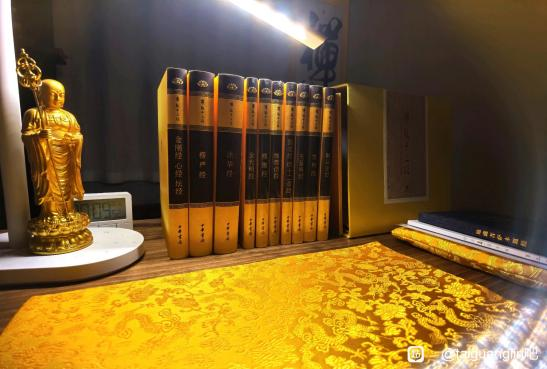
Taiguanglin
2024-5-20
第三个问题，打坐就是这样，从麻的状态突然感觉到有一股热流通过去了，然后麻的感觉就消失了，腿的知觉又回来了，这就很正常，算是打通了。但是打通一次是不够的，要想把它稳固下来，要每天坚持，坚持一段时间这个麻的状态就慢慢消失，上坐到最后都不会麻，这样才算正常。
脚踝疼是筋拉得疼，也有可能是你的这个腿，脚没有放上去，没放到正确的位置，再往上一点脚趾头能出到大腿外侧就不会痛了。
下边这段谢谢，感谢你的努力和支持。
萌萌兔
2024-5-20
3、那天突然发现右小腿有一根血管前后都是直的，中间一处绕了一个小圈像水管弯了一个圈那样，一直没注意过。盘坐后很多血管憋的很粗，这种情况双盘会有影响或者说这种情况会消失吗？
Taiguanglin
小腿有一根血管前后都直的，中间一处绕，你有没有正常打坐？腹式呼吸有没有正常练好了呢？磕头、打坐、腹式呼吸这些全做到了的话，腿里的什么静脉曲张这类问题都可以自己解决。而且一般瘦的能看出一些血管，这很正常。只要不痛就没有问题，它没有鼓出来的话应该没有关系。主要还是磕头、打坐要坚持、要并行。整个身体机能都变好了就不会有这种腿的血管曲张的问题。
sadsads3
18-06-2024
向您致以由衷的敬意！想请问以下问题：
1、右腿下左腿上坐时最久熬了两个小时，但第二天再坐腿很疼，完全坐不住，只能坐五十五分钟这样，请问这样的话需要怎么调整。左腿上右腿下时只能到五十分钟，感觉左腿完全压不下去，也就是贴住地面，请问需要在膝盖下面先垫个毛巾吗？有时坐完觉得膝盖有点那种向外拐的疼，走路也隐隐的觉得膝盖内侧面疼，遇到这种情况是否需要先暂停坐，等待不疼了再坐？感谢您。
Taiguanglin
Sadsads3，从你的这些症状当中，感觉你的坐姿好像每次都不一样，为什么有些时候能达到两个小时，有些时候五十五分钟？是不是坐姿，腿上去的角度深度每次都不一样？你最好把脚后跟抵到根部大腿根部，然后再把另一腿盘上来，只要姿势对的话膝盖不应该疼，只有屁股或者大腿整个肌肉和里边的筋疼，这才是正确的。如果骨头疼的话，那姿势有点不对。
还有就是尽量减肥，腿越细对骨头的负担越少，所以平时多磕头。打坐五十分钟这个程度，平时用磕头增加时间，用磕头来排毒、练气、练肌肉。五十分钟到两个小时这个阶段就用磕头来加速，让身体更快地进入状态。还有不要吃肉，吃肉很难达到两个小时，尤其是油性大的肉，我感觉你做的已经很不错了。
虔诚的行者
2024-06-21 19:11
2、有的人能双盘三小时到四小时，为什么不痛的时间还是只有一小时？正常应该是一半时间不疼九十分钟以上吧？
Taiguanglin
因为身体因为没有通才会痛，再坚持一段时间，慢慢全通了就不痛了。
法号明灯
2024-08-14 21:08
师父，打坐半小时后右脚先是麻，接着是没有知觉，下坐后右脚筋像是断了一样，得缓几分钟才有知觉，脚踝有疼痛感，这样坚持下去会有问题吗？
Taiguanglin
法号明灯，半个小时，脚先麻，没有知觉，脚筋像断了一样，这个很正常，半个小时内你就算再疼，起来活动活动都能缓过来，半个小时不算什么问题。如果超过两个小时三个小时这样长时间坐的时候，那姿势不对的话，可能需要改一改，但是半个小时以内哪怕是姿势不对，你的确在短时间内哪怕很疼，它还不至于对身体产生影响，那起来走走就可以了。
现在主要是把姿势坐对了，然后就坚持，坚持到不能打坐，实在坚持不下去了，那就下坐，每天这样坚持就会慢慢加长时间的。
S N Z Y L G
2024-9-12
Tai师父好，
1、很多同修师兄，双盘到两点五小时的时候，都是只有脚踝脚背极疼，其他地方都不疼，大部分人都是这样吗？ 这种情况这类人，根源是内脏肝胆没修复好的反应吗？ 如果是的话，用些针对性措施，比如按摩胆经或少吃减少肝胆负担，是否能起到双盘期间减少到两点五小时脚踝脚背的极疼，起到围魏救赵的效果？
Taiguanglin
下一个问题，S N Z Y L G，脚踝疼脚背疼，这个问题说过了。你要把脚后跟一直抵到腹股沟，尽量往里盘，这样就不会疼了，然后脚趾头能伸到大腿的外侧，这样就不会拉伸脚后背。你自己看着就知道，你脚在大腿中部这个位置的时候，你的脚后跟，脚背，脚脖子的筋是使劲拉开的，这样的话短时间内不疼，但是时间一长这个拉开的筋就有点疼。
如果你本来就柔韧度很好，从小练跳舞的，像那些芭蕾舞演员一样，脚背的筋一直拉开，都拉好了，那倒无所谓。但是年纪大的人想把脚筋拉开的话有点难度，不是那么容易的，所以它会疼。尽量把脚往里放，让脚趾头出到大腿外侧，如果太胖的话就减减肥，这样就不会那么疼了。
你说这个肝胆啊，这是通一侧，就是降魔坐要通的嘛。降魔坐会让整个消化系统和消化关联的内脏都会打通的，所以这是和坐姿，选择降魔坐还是莲花座相关的，并不是单纯的和脚后跟、脚背放的怎么样相关的，你还是先把脚往里放看看嘛。
范晓龙
2024-9-12
亲爱的师父： 跟您学习以来，自认为进步挺大，从今年二月份开始降魔坐能突破一小时，到目前每天降魔坐一小时，莲花一小时，有时一天能打四次，都是一小时。目前困惑的是每次到五十分钟都会非常疼，坚持到一小时后无法立即伸展开，需要单盘十分钟左右才能正常行走。第一个问题：目前的这个过程是不是需要很久，我坚持到现在感觉止步不前了呢，每天都在和一小时较劲，每次还都是同样的痛感。
Taiguanglin
范晓龙，你没说具体怎么个疼法？双盘一个小时疼，如果是正常的屁股疼腿疼，腿的酸麻胀痛，这属于正常现象，就是还没通嘛，所以会疼的，通了就不疼了。
如果骨头疼的话，膝盖或者脚背和脚脖子这边的筋疼，这个情况呢，你得把姿势摆对，前面已经多次说过，尽量把脚往里放，把脚顶到腹股沟，脚趾头能冲到大腿外侧，尽量往里盘，深盘，这样是正确的坐姿，盘好了就等打通了全身，就可以坐很长时间了。
如果你脚是在大腿中间的话，脚背的筋儿，脚脖子筋儿被拉扯得很严重，所以会很疼，过一段时间就会疼。如果只是屁股疼腿疼、酸麻胀痛、浑身都疼，这些都属于正常现象。如果你想快速的通过这个阶段的话，你就多磕头，吃的要清净一些，不要吃肉，晚上尽量少吃，不要吃主食。
然后你的意识层面上，妄想和身体的疼痛还是有关系的，可以说有很大的关系，你脑子里妄想越少，情绪越好，情绪越是细微的话，身体就越放松，越容易通，然后痛的程度也会明显减少。所以平时念经念咒要坚持，打坐也要坚持。
你说一天修四个小时吧，那不知道你是具体修多少个小时，只是修四个小时，但是四个小时全部打坐是这样吗？如果是这样的话，我建议你打坐两个小时，一个小时念经，一个小时磕头，这样就好了。没必要偏要坚持不行的，一天一坐，一天两座，一次坐降魔坐，一次坐莲花坐就可以了。打坐和磕头要一起来，还有念经念咒也得一起来。
实修实证
2024-11-14 19:31
2、困扰很久的一个问题如下：现在双盘能熬到两小时，但一到五十分钟左右腿脚有一个麻胀通气的过程必须睁眼双手撑地才能通过，导致入静闭眼的时间一直卡在这一小时里上不去已经一年半了，请问师父有什么方法能快一些打通这个麻胀，这是属于肌肉层面的修复吗一般需要多久？为什么我双手撑地它就快速通过，我也每次都尽量忍到不能忍再睁眼撑地！可一直就是没改善，望师父解惑！
Taiguanglin
第二个问题，腿不通气的时候双手撑地，把屁股稍微往前往后抬一抬或者怎样，这样的话会通气的感觉。这个也很正常，很多人一开始都这样过来的，屁股酸麻胀痛，它不是修复肌肉的问题，而是气，里边酸麻胀痛的应该不只是肌肉，还有里面的筋，也有一个走气的穴，穴位也疼，所以需要一段时间的，一年半都不算长，有些人一个地方可以堵好几年。
主要还得看你的饮食，作息。还有打坐的时候，如果说什么观法的话，哪里堵你就观想那里，你就把注意力放到那里感受那个痛，然后想像你的血液和气，快速的通过那里，这样观想，用意念来引导一下，这样会通得快一些。
但是最好的办法就是完全不管，你脑子越空的话，身体越放松，就越快速的修复，脑子妄想多的话，身体越紧张，越收缩，通的就越慢，这是基本的原理，就看你怎么办。
扶摇zy
2024-11-21 06:22
师父你好！我练习打坐，二十分钟脚麻手心发黑，能不能给一个练习方案。
Taiguanglin
扶摇zy，打坐的方法都已经讲了无数遍了。先是从腹式呼吸开始练起，把腹式呼吸练好，然后打坐，打坐前先磕头，打坐和磕头要轮着来，反复的来，不要一味的打坐。
二十分钟脚麻手心发黑，你应该气不那么通畅。所以先从打坐和练腹式呼吸开始，先把这两个都练好了的话，很容易能进入的。
菩提树下9
2024-12-12 13:15
师父吉祥！
我降魔坐可以坐两小时，但莲花坐只能九十分钟，原因是莲花坐无论怎么找位置，两小腿的交叉处都很紧，被压的特别疼。
降魔坐交叉处就不紧、不疼，是因为两边胯开的不一样或盆骨不正导致的吗？
两小腿交叉处已经垫了毛巾，时间长发现被压处还是发紫黑色，这类疼痛是否属于姿势不正规导致的非正常疼痛吧？
长时间保持是否会导致被压组织坏死或骨头被压出坑？
这类疼痛如果靠长时间硬忍，也能打通后不疼吗？
Taiguanglin
菩提树下，小腿压的地方会变黑，这个也是很正常的，没有关系。你只要坚持，能坚持两个小时，它自己就好了。这个胯的筋没有拉开，所以一边胯稍微高一点，所以另一边这样打坐的时候，压的中间会疼。不过坚持打坐时间长了，这个胯也会松下来，然后它就正常的坐姿下，也不会那么疼了。
它也不可能会组织压坏那个程度，一天打坐两个小时是不可能坐到那个程度的。你想坐四个小时的话，如果真是堵得厉害的话，根本坐不了四个小时，所以不用想，两个小时内肯定没有问题。
那骨头能不能被压出坑来？骨头硬还是你的筋硬啊？哪个更软哪个会先松下来吧，筋也会先抻开吧，比那个硬的骨头来说，筋会先松下来，对吧，所以不用太过担心。
肯定是，长时间打坐的话，肯定能打通的，你现在就往两个小时方向努力就可以了。平时多磕头，磕头对放松身体还是有很大帮助的。
菩提树下9
2024-12-14 19:10
顶礼Tai师，
2、打坐到两小时左右，腿脚瘀堵处正在通过的过程中，用意念放到瘀堵处使劲，会更快通过，但有时过于强烈通过去后哪里的血管会有些疼，太使劲冲是否有冲坏血管的可能？冲腿脚瘀堵，是不管它让它慢慢通，还是使劲大力通过去比较好？
Taiguanglin
下一个问题，打坐两个小时，腿脚淤堵处正在通过的感觉……，这个时候你不要想的那么强烈，就是细微的观察就行，然后想象有气流或者血液通过那里，细微的想象，不要想的太复杂太难，反而会让注意力升起的太大，身体收缩的更厉害。
你把注意力放哪里，其实血流进去的同时，那里的肌肉反而会收缩的。所以打通的时候，实际上最好的办法是念佛，干脆都不管身体，想都不去想，疼就疼，你就让它疼就可以了，然后就专注的心里念佛。这是最好的方法。
但是人一疼的话注意力都会被吸引过去，所以在这种状况下，能做到的方法就是想象气从堵的地方过去，这样想象，慢慢的想象，细微的想象就够了。
你说这样太使劲冲，是否会冲坏血管？不可能。血管也有弹性的，你怎么冲也冲不坏，而且那个堵的地方不是血管不通，你要想明白，如果血管不通的话，整个下肢脚都会变黑，如果长时间不通的话，那应该会腐烂的是吧？
但是它实际上是通的，血是流动的，只不过血流动稍微受阻一点。所以初学打坐的时候，脚底板会变黑变紫，这个正常，但是还不至于到完全堵的细胞死亡，然后身体腐烂程度。所以你不是什么硬冲把血管冲坏了，那种想法，不会有的。
JY-L
2025-2-11
师父，我吃素多年，也一直单盘念经，现在开始练双盘，发现左脚前脚掌十五分钟左右，就会冰冻发冷发紫麻痹渐渐没知觉，这种情况，请问是不理会脚，继续坚持坐下去熬到三十分钟吗？
Taiguanglin
下一个问题，双盘的问题，发现左脚前脚掌十五分钟左右就会冰冻发冷，这种现象都很正常。一开始打坐就是脚都变紫了，然后变黑了，就是因为气血不通。但并不是因为它不通，就会腐烂那么严重。
你在半个小时内是没有什么问题的，哪怕是在这种脚都黑的情况下，硬坚持两个小时。你把腿放下之后，过一段就反而变得很轻松、很舒服。因为这个时间段其实让身体在发生一些变化，让你尽量打通堵的地方，所以坚持反而是好的。
还有你的姿势要对，姿势很重要的，尽量把脚后跟抵到腹股沟，尽量抵到，贴到。然后脚趾头能出到大腿外侧，这样的话比较好。当然你身体要瘦一点，不要太胖，胖的话打坐就更累一些。
道法自然00
2025-02-13 19:19
Tai师吉祥，
1、从医学的角度，脚背长时间伸直超过九十分钟以上，会导致脚踝关节间隙拉大损伤踝关节。_x000B_ 双盘中盘或低盘，里面的脚踝关节处于这种伸直拉伸的状态会极度疼痛，这种疼痛是否是非正常疼痛？长时间保持，如超过三个小时以上，踝关节是否会出问题？
Taiguanglin
道法自然00，如果你能坐三个小时的话，关节处的问题已经早就过了，两个小时基本就过了。
还有这样超时间的拉伸，并不会直接抵到骨头上，你可以拿自己的骨头试试。你得掰到什么程度才会抵到里边的软骨，把它给伤到了，最多就是筋被拉扯，这个才是痛点。所以还没到骨头被损伤的程度，主要是膝盖骨有可能会受伤。

Taiguanglin
贴吧用户_QUDy8Na，打坐的姿势本身是对的，这个没有什么。还有你压着产生衣服印，这个很正常。脚背疼没有关系，不是关节处的骨头疼的话，其他地方疼是正常的。
你现在主要肌肉还处在紧张状态，筋也没有拉开，所以有这样的疼痛。你没有必要直接从六十分钟往一百二十分钟增加。就哪怕一个星期增加五分钟，一个月增加二十分钟，这样就可以了。不要着急。人的身体已经用了很长时间了，也有几十岁这样的，一直那么正常生活着，突然要改变一些姿势，它肯定有不好的地方。
就像有些地方的人，不是双盘，他们连盘腿坐着都难，因为从小就坐在椅子上。甚至有人说盘腿坐的人个子矮，小孩子从小这样盘腿坐，长不高，腿拉不长，所以从小坐椅子的人会长得比较高，也有这个说法。但实际上也没什么意义，也没有调查统计过的数据支持。所以盘腿这个事儿，一旦形成惯性之后，就需要很长时间把它改过来。
所以中间会有这样那样的疼的地方很正常，只要不是膝盖关节疼。最容易疼的是膝关节，这里不疼的话，其他无所谓。尤其脚脖子，这个和膝关节又不一样，这是拉伸的，所以就算是关节处稍微疼一点，只要筋拉开的话就不疼了，这个没有什么。
脚背也有过，我自己以前胖的时候就是强行打坐，它也疼，后来减肥之后逐渐就不疼了，所以这个很正常。每天坚持多坐五分钟就可以了，一个星期坚持多坐五分钟，这样也可以。
作了便放下
2025-3-13
Tai师吉祥_x0001_，请问为什么双盘时，不管是莲花坐还是降魔坐，半个小时后都是左脚发木，脚趾头动不了那种，再过二十分钟后，左边屁股下边酸胀（知道这个是正常的）。右边脚和腿从来不会，难道是左腿对应的右边身体特别不通畅？感谢Tai师。
Taiguanglin
作了便放下，不管是莲花坐还是降魔坐，半小时后都是左腿麻木，你自己都知道答案了，就是对应的右边身体不通畅，气不通。右边主要是消化器官，用来打通消化道的，右边通了以后，吃什么都容易消化。所以你还是专注地修降魔座，先把右边打通。
苏晓
2025-3-13
师父好。从去年十月份开始进群共修，一直在练习盘腿，很惭愧，基础不好，到现在也只能单盘半小时左右。有个好消息是：曾经扭伤一直没好的左脚背，在练习到第二个月时，不知不觉完全好了。目前左腿虽然只能单盘二十分钟左右，但之前散盘一分钟都是坚持不了的剧痛，这是出乎意料的恩典，感恩佛菩萨加持，感恩师父加持。
现在虽然每天练习，但我的情况不是如同师兄们告诉我说的，能每天增加一点时间，而是如果前一天时间超过三十分钟，第二天就反而到二十分钟就熬不住了，这样反反复复，我对以后能不能实现双盘心里有些没底呀，但一定会坚持下去，请师父加持，佛菩萨加持。
最近一段时间，磕大头一两百都会觉得疲累，小腿两外侧和两胯的骨缝都特别酸痛，查了一下，这些地方都是胆经的循行路线。请问师父，这说明胆经堵塞严重吗？有什么缓解的方法呢？如何在这种情况下更好练习？感恩师父开示。
Taiguanglin
苏晓，胆经堵塞。如果是胆经的话，你应该练降魔坐，就是双盘。你别说现在单盘三十分钟累，双盘也肯定累，肯定痛。但是如果你能强行盘上，那只要盘五分钟，都比单盘十分钟、二十分钟强。你只要能盘上去，坚持十个呼吸来回，对身体也会产生影响，对初学来说都有影响的。只要能盘上去，坚持那么几分钟，都有影响。
所以，你先试试向佛菩萨求，求保护，求加持之后，双盘，降魔坐开始，一天坐五分钟、十分钟开始练起来，先练着再说，这样的话会慢慢好起来的。
膝盖/脚踝/关节
ysquare66
2024-02-15 09:10
Tai师父，弟子有一问题求教。
关于脚踝，每次在双盘坐时都正常无痛觉（双盘半至一个小时），可一到下坐内脚脚踝就疼痛非常，是那种崴了脚的感觉，要10-20分钟才能缓解，两个脚都会有。请问这个主要是姿势不对脚踝需要调整或者加些保护，还是筋脉不通需要熬腿来解决？如果直接忽略继续坚持，会不会把脚踝搞伤？
我到处查阅也没看到讨论这种情况的，诚心向师父求教。顶礼！
Taiguanglin
ysquare66，脚踝痛是你的脚还没有上到位置。你要再往里，把脚后跟顶到腹股沟，如果你胖的话是到做不到的。如果你脚后跟没顶到腹股沟，就是脚放到大腿上，然后脚踝处就拉伸了，就像手用非正常的状态，往后背扭一样，脚脖子变成一个扭的状态的话，那肯定会痛的。你得先把脚脖子往里再推一推，脚踝顶到腹股沟，至少有一侧得顶到，另一侧可以有点儿距离，这个很正常，好吧。
虔诚的行者
2024-02-15 08:51
感谢Tai师父。
弟子21年底有幸接触到Tai法开始修行，1年多的时间从不能双盘到90分钟左右，然后23年一年基本都保持在这个程度感觉不容易上去了，期间尝试过做过几座100多分钟以上，然后接下来几天膝盖蹲起就会响像是受伤了，然后就不太敢过于冒进，看了一下群里报课很多师兄也都到90分钟后保持了很长时间没太大突破，每天配合磕大头300，目前身体状态磕更多的话出汗过多感觉身体会虚，请Tai师父开示如何能不受伤的情况下从90突破到120分钟，只要不受伤腿疼都是可以接受的。
Taiguanglin
虔诚的行者，下面已经有人给你回答了，打坐的时候应该疼的地方是屁股和大腿，不是膝盖，只要膝盖疼就得调整姿势，好不好。只能是屁股和大腿疼，只要膝盖一疼，就得赶紧调整，这有问题的，膝盖是不能受伤的，一旦受伤就很难修复，尤其是年纪大的人。
慧日永明
17-02-2024
2不管是单盘还是双盘，膝盖都感觉凉凉的，风嗖嗖的，裤子穿的挺厚的，然后有时候要盖很厚的毛毯或者两件，这是自己的什么毛病……
Taiguanglin
双盘膝盖凉凉，就是体寒吧，这个需要多运动，多运动血液循环快了，多运动，让寒气出去了就可以好了。
我会回到家的
2024-02-16 22:51
感恩师父！听到您对我的问题给予答复，让我万分欣喜。今天按照您的开示，我减少了饭量，丢掉一部分杂念，降魔座由75分钟延长到90分钟。在前60分钟，腿和脚不疼。但是从70分钟开始，脚腕开始剧烈的疼，大腿根也涨痛。已经分不清膝盖到底疼不疼。下座半个小时后，大腿和脚腕不疼了。我继续这样打坐，会损伤膝盖和脚腕吗？
Taiguanglin
我会回到家的，双盘姿势错了膝盖疼是慢慢的会疼起来的，这个有一段过程，只要你把脚后跟贴到腹股沟，这个程度的，至少把一边给贴到，先盘上去的腿贴到，另一边贴不到也没关系，只要这一边贴到的话，基本上不会有问题。
恩中宋
2024-02-27 22:23
Tai 师父，熬腿为什么脚踝脚面会疼？是方法不对，还是要有一个过程呢，老生常问
Taiguanglin
恩中宋，脚踝疼，下边的人已经都可以帮我回答了。尽量往大腿根、尽量往上放，脚趾头能直接出溜到大腿外侧的话就更好，这样就不疼了。一开始都有个过程的，腿很硬，筋也没打开，慢慢来。
有非有无
2024-02-28 22:54
师父，我最近刚接触打坐，双盘的时候脚踝部位特别疼，是先拉拉筋等脚踝不那么疼了再盘，还是不管疼痛继续盘，我担心这样会不会对身体造成伤害，望师傅开示
Taiguanglin
有非有无，脚踝疼，你把腿尽量往上放，脚后跟靠到腹股沟，脚后跟往大腿根部靠，然后脚指尖能出到大腿外侧，这样脚脖子处的筋就不会被拉得疼。但是如果你腿粗的话就做不到这个，所以慢慢来。
富贵行者
2024-03-06 23:12
2、双盘一个半小时后膝盖疼，散腿后很长时间还是会疼，姿势也是按照两个脚趾头能够到大腿外侧的，不知道是姿势不对还是必经阶段？
Taiguanglin
双盘一个半小时后膝盖疼，膝盖疼就是姿势不对了。双盘的姿势，脚后跟要顶到腹股沟，尽量往里顶，然后脚趾头能出到大腿外就可以了。如果是膝盖疼的话，你可以换个腿，换另一种坐法先试试，然后还是不行的话，那就得去看瑜伽动作，把胯也得开一下。你可能就是两个膝盖立起来了，一开始都那样，但是双盘一个半小时，这时候差不多也该下来了。尽量把脚往里放。
J丶
2024-3-15
请教师父，双盘降魔坐的时候膝盖一直有微微的疼痛，仔细感受像是拉扯紧绷的感觉（膝盖外侧），左腿疼一阵就好，右腿是一直痛的。下坐后也一直痛。因为疼痛不剧烈可以坚持坐下去，但是怕会伤到膝盖。而且我之前右腿膝盖因为爬山伤到过，导致剧烈运动就会痛正常情况下是没事的（磕大头也没事）。这种情况应该继续坐还是下坐合适。
Taiguanglin
J，这个双盘的姿势已经讲过很多次了，脚后跟一定要顶到腹股沟上往里顶，然后脚趾尖能出到大腿外侧就行。外边的筋拉扯的有点痛，这个是没有问题的。主要是你姿势不对的话，膝盖里边的软骨就有可会受伤，所以我们要摆好姿势，姿势很重要。我看你说的不是那种问题，坚持到一个半小时以上的话，就能感觉到腿骨头受伤的地方突然间会变得很疼，那个时候就是开始修复的过程。
随顺世缘
2024-05-15 16:46
师父您好！
1、弟子最近这几天右膝关节内侧骨缝里时常有隐隐作疼的感觉，在坐上没特别感觉到膝关节这儿疼，下坐后一直有隐疼的不舒服感！也可能在座上整个右腿、右臀部、右后尾椎到了一定时间都开始疼了所以忽略了关节这儿！我有点儿担心是不是我双盘熬腿不得法伤了膝关节？
Taiguanglin
2024-5-20
随顺是缘，修行最好从发愿开始，发愿能保证很多不好的事情都能在佛菩萨加持下熬过去，发愿很重要。
这些腿、骨头的问题，如果很痛的话，你还是先去拍个照，看看有没有毛病。有些年纪大的人关节有骨刺，自己都不知道，但是一弯曲盘腿坐的时间长，骨刺就会刺到，时间长了就会非常地痛。所以先判断这个问题，该去医院就去医院，拍个照看看。
对于打坐、修行，磕头还是非常有必要的，尤其是年纪大的人。骨头不正，脊椎、肩膀、胯骨这些都不正的情况下，要磕头把它慢慢都给掰回来。所以一天最好能坚持400个、500个大磕头，每个星期五到六次的程度。这样过个一年到三年，整个骨头都会被掰回来，身体的整个机能都会提升一个阶段，打坐才能进入更好的状态。
云坤99
2024-05-03 11:38
师父慈悲：
1、现在打坐一个小时，膝盖处图上画的那个地方隐隐疼，这不会是什么受伤吧？
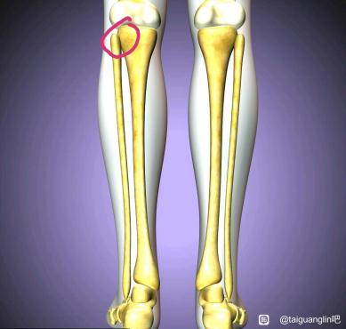
Taiguanglin
2024-5-20
云坤，如果年纪大了，我建议去医院看看有没有什么骨刺之类的，拍个片看看。如果不是的话，只是单纯的姿势不对，你打坐的时候把脚后跟尽量往上，抵到腹股沟位置，这样姿势正确的话就不会疼。如果胖的话减肥，腿细一点能折起来就不会痛的。如果你起来之后就慢慢不痛的话，那都是正常现象。
🔥💧🔥
2024-5-21
师父好，大概半个月前坐了一次降魔坐，坚持到了1个小时（平时一般能坐到40至50分钟，一般在40分钟左右双脚麻感消失，通畅），这次下坐时双腿交叉的位置搁着很痛，然后右脚脚踝至脚腕那一片皮肤上下一直麻木，到现在还有一点麻木感，以前没遇到过，不知道是不是压到了神经，望师父开示解答！
Taiguanglin
图标火水火，你说的“通气麻木，然后感觉通畅”，这很正常，是对的。“双腿交叉的位置很疼”，这是因为你腿粗，要么就是腿没有盘到位置上，尽量往上盘，让脚后跟顶到腹股沟，脚趾头能出到大腿外边，这样盘的话应该没什么问题。但是如果你比较胖，可能交叉的地方会疼一些，这个没有办法，你得先减肥。
还有皮肤麻木很正常，这属于正常的过渡过程。皮肤，筋，肌肉的疼，都属于正常现象。如果坐的时间长，骨头疼你要注意一下，该调整姿势就调整。只是皮肤、肌肉、筋这些都属于过程，只要坚持一段时间都会消失的。
还有坚持磕头，该减肥就减肥，身体太硬的话，练一些瑜伽动作。不过你现在能坐到五十分钟，一个小时，那说明还是可以的，这个筋已经该松开的地方都松开了，只要坚持下去就行。
虔诚的行者
2024-06-22 16:09
顶礼Tai师！
双盘里面的脚跟已顶到腹股沟，里面脚的脚趾都已伸出大腿外侧，120分钟内脚踝不怎么疼。但120分钟左右，里面的脚踝还是会非常疼，这时的脚踝疼只能硬忍一直熬到通之后，才能不疼吗？还有什么其他方法，能降低120分钟左右的脚踝疼痛吗？硬忍确实很难熬。感谢师父！
Taiguanglin
虔诚的行者，能坚持两个小时已经很厉害了，双盘脚踝疼属于筋没有拉开，不是气不通的状态，气不通坚持不了两个小时。
脚踝疼怎么办？胖子最好减肥，腿细一点就不那么疼了。你想用观想的方法的话，那就把注意力专注放到疼的地方，观察感受这个痛处，心里想象脚踝的筋在慢慢拉开，心里想象也有用，会慢慢拉开的。你的脑子里妄想还是比较多，妄想多的话，身体无法彻底放松，身体越放松，筋也拉开得越快，所以你往这个方向努力就行。
虔诚的行者
2024-07-19 19:28
顶礼Tai师，
1、每天双盘两小时以上持续半年多了，磕大头每天三百多个，近两年关节比如胯关节膝关节踝关节等不润滑了，蹲起或活动经常关节弹响比较厉害，十个以上的蹲起都吃力，这种现象是什么原因？怎样可以改善？
Taiguanglin
虔诚的行者，双盘两个小时，膝盖疼有响声。因为我也有过一段时间这样，磕头坚持到没有响声为止，我是这么坚持来的，但是我不建议所有人都硬撑，你如果太疼的话，可以减少一些，但是两个小时最好是增加时间，或者两个腿换着盘，两个小时以上的，你哪边疼就是在修复哪边。然后吃的要清净一些，干净一些，不要吃肉、油腻的这些都不要吃，应该是戒肉了。油腻的尽量少吃，主食也尽量少吃。
还有腹式呼吸，肯定到了才能两个小时，剩下的就是做点功德回向了，然后求佛菩萨保佑了。
共渡
2024-9-12
师父，随着降魔坐到五十分钟，右腿膝盖内侧盘坐的时候出现拉扯感、微疼，但是下坐后稍微运动运动就不疼了，以前没有这种情况，这正常吗？
Taiguanglin
共渡，师父，随着降魔坐到五十分钟，右腿膝盖内侧盘坐的时候出现拉扯感，微疼，但是下坐后稍微运动就不疼，以前……，很正常，五十分钟内出现哪里疼都很正常，然后松开之后，活动一下又恢复过来了，这个就没什么太大问题，坚持下去就可以了。刚才前面也说了，尽量把腿往里啊，脚后跟抵到腹股沟上，然后脚趾头冲到大腿外，这样就好了。
S N Z Y L G
2024-9-14
3、双盘二点五小时脚踝疼，不是脚背筋疼，是脚脖子一圈附近疼，是否需要长时间不断硬熬过去，才能二点五小时左右静中不被疼痛拉出来？
Taiguanglin
还有你说的脚背疼，不是筋被拉扯的疼。我觉得是只能熬过去了，一般两个小时以后，身体的痛都可以靠熬来改变的，一般身体出问题都是在两个小时以内的，而且越来越不好，那才是打坐有问题的。而你是已经都开始有气感了，通的感觉了，说明每一次打坐身体都在一点一点往好的方向走，那熬一熬就过去了。
如果你每一次打坐，可能一段时间内，你打坐一个月之后发现，和上一月比起来没有什么进步，反而身体更疲劳，哪里变得更疼了，整个状态都不好，那就应该改一改，看哪里有问题。如果是从一个月开始相比起来，现在的状态要比一个月好了，整体方向上对了，不用管这种短暂的疼痛，坚持一下就可以了。
只有在两个小时以内的时候，姿势不好会对身体造成伤害会持续累积，一般能坚持到两个小时以上，基本上开始发生电感，就三个小时差不多的时候开始出现的，都是因为全身开始充电，说明姿势什么的都对了，都往好的方向发展了，熬一熬就可以了。
2024/9/14 问题丢失，以下仅回答
Taiguanglin
S N Z Y L G，这是一百九十二楼，你的问题在这里重复过了，微信这边已经回答了，就是坚持熬下去就可以了。
菩提树下9
2024-12-10 18:58
顶礼Tai师，
我双盘姿势是中盘稍低一点，里面的脚趾与大腿外侧平齐，还没伸出去。
双盘外面的脚90分钟之前发木没有知觉，90分钟左右恢复知觉，觉知是气通这里了。
问题是里面的脚踝90分钟之前不疼，但90分钟左右外面的脚恢复知觉后，里面的脚踝立马开始中度疼痛但可以忍受，是否是气立马到达这里了？
而且到110分钟左右，里面的脚踝会突然特别疼，疼到难以忍受身体轻微晃动。
这种情况的脚踝疼，是姿势不对引起，还是气没通过去引起？
如果是气不通引起，超过120分钟后，理论上全身都会通完气，哪里面的脚踝气通后应该就不疼了吧？这样的理论认知是否正确？
我试过即使忍到130分钟，里面的脚踝还是特别疼，需要忍到多长时间才能通过去不疼或疼痛越来越轻？
Taiguanglin
菩提树下9，一般脚踝痛不是骨头的问题，那是筋的问题。筋不算骨头，筋是有弹性的，它就是还没有扯开，还没有拉伸，所以会痛。而且年纪越大筋越收缩，年纪越小，小孩子筋都是豁开的，所以不怎么疼。年纪大的人要修行的话，脚踝还有膝盖一边会翘起来等这些问题，都是因为筋没有豁开，筋没有拉伸。
这个就不能算作姿势不对而疼的，只能算是你的筋没拉开。但是我们靠姿势只是能改变一下，就是把脚尽量往里盘，脚趾头伸到外边的话，就不会拉扯到脚背和脚踝。还有腿细一点就更容易盘上，这只是这种外援的帮助而已。
还有筋要拉伸的话，尤其是脚背、脚踝部分的筋要拉伸的话，和你的妄想也是有很大关系的。你的妄想越少，身体就越放松，筋越容易拉伸，脑子里妄想越多，越紧张，筋就越收缩，就越不容易拉伸。所以一般筋疼，就当正常的状态来看就可以了，没有什么特别的方法。
以前在寺院，有人是拿绑带绑着腿，不让它伸开，然后疼得厉害，就那么硬坚持、硬撑着，这种方法，只能是到一个小时后，开始接近两个小时的时候，只能是硬撑着。这个时候你能坐两个小时，而且每天都有进步的话，说明姿势是对的。如果每天坐两个小时，身体越来越差，那才是姿势有问题。
我看你是既然有通的感觉了，说明姿势是对的，那就只能靠坚持了。而且你不要老是去想哪里痛，就老是去想，当然你也可以把注意力放到那里，专注地关注它，想象气通往那里，然后让它快速修复、快速化开，这么观想也是可以的。
但是最好的方法是不去管，你把注意力放到念佛念咒上，它就更容易化开了。你不去管的时候，任何事情反而更容易解决，或者说它就不是问题了，你越关注它，它就越是问题，你能理解这个意思吧？
所以你说忍到一百三十分钟还是特别疼，那你不打坐的时候它会不会自己恢复啊？是不是一直都疼？或者说你的生活会越来越不好，身体会越来越差，不是这样的话都是正常的修行过程中要承受的一些痛苦，你这么想就可以了。
需要忍到多长时间才能通过去不痛或者疼痛越来越轻？我是一般疼到极致的时候，以前是那样，反而极致的时候，硬撑到最后，最后实在是没有办法再忍的时候才放下。一般情况下，基本上都能忍得过去，忍到一定程度之后突然就感觉不痛了，一下就感觉不痛了，就忍着忍着。你说一百三十分钟就特别疼特别疼，然后再忍再忍，再忍一个小时，然后突然一下就感觉不疼了，完全不疼了，好像全身都忽然放松了，有这样的感觉。
我是建议你多努力、多坚持一下，脚踝疼是大部分人都会经历的，不是小孩子、二十岁以下的年轻人，打坐都有这样的过程。
菩提树下9
2024-12-11 18:42
顶礼师父，
感谢师父昨天对脚踝疼的开示，补充提问下。中盘脚背纵向伸直，长时间确实筋拉伸疼。
补充问题是，
1、里面的脚踝双盘过程中侧弯，是否也是引起110分钟左右时，脚踝开始剧烈疼痛的原因？这种情况和筋疼是否还有关系？
Taiguanglin
菩提树下9，还是脚踝的问题，主要是筋没有拉开而已。你不要想着侧弯还是前面从脚背开始往下弯，这个都无所谓。只要你脚筋里边的筋伸开了，是侧弯也好，前面弯也好，都可以弯得了。你去摸摸小孩子的脚，是很柔软的，他可以随便玩。所以你不要想着，怎么找个好角度不让它被拉伸，而是让自己身体适应，慢慢地放松，然后筋拉伸就好了。
你不要想着怎么盘让它不疼，你这样想的话就可能找不到合适的方式，你只要坐到一定程度，太疼了，实在坚持不了了，那下来。然后平时打坐的时候多念佛观佛思佛，朝这个方向努力，让身体更加放松。打坐前你也可以做一些拉伸运动，脚脖子也可以拉一拉，有拉伸运动，这样就可以了。
菩提树下9
2024-12-11 18:42
2、中盘里面的脚趾与大腿外侧平齐的情况下，里面的脚踝有一定侧弯角度，但不大，这种情况下如果坚持三个小时候，脚踝剧痛是否也会减轻？
Taiguanglin
还有，我不知道你试过三个小时以上打坐没有，疼到一定程度的时候，会突然间气通了之后，筋也会感觉突然间不痛了。疼到一定程度之后，会感受到那种气通的感觉，脚脖子就不痛了。所以你要往气通的方向努力。
菩提树下9
2024-12-11 18:42
3、如果里面的脚踝只要有侧弯角度长时间就会剧痛，不高盘的情况下，有方法让里面的脚踝一直保持不侧弯吗？
Taiguanglin
还有脚筋，让它更加放松，拉伸的方向努力，而不是找个什么适合的位置。就因为人们喜欢找那种不怎么疼的坐的方式，所以就双盘也放弃了，改成单盘了，什么金刚跪坐了，散盘了，往这个方向觉得怎么坐都可以，只要不疼就可以。
但实际上，这样的话打通不了全身经脉，所以还是坚持双盘。脚背疼是正常现象，只要坚持一段时间，几个月到一两年它都会慢慢化开的，随着修为上去了，脑子里妄想少的话，身体也会更加的放松，就会化开的，你不用在这个问题上过度执着，好不好。
S N Z Y L G
2025-2-10
Tai师父好，
1、姿势相同的多次双盘过程中，同一处位置如脚踝，修到某个阶段，疼感出现的时间会提前或延后，原因是什么？这方面是否可以判断是否在进步？
Taiguanglin
S N Z Y L G，双盘过程中疼痛的时间提前，这个主要是看你当天的状态，吃的，休息的，整个身体舒不舒服，有这个差别的。而且每一次稍微有点疼痛来得早啊，慢了，没有必要拿这个给自己造成心理负担。身体都是有一定的起伏的，不可能一条直线一直向上走。
今天吃了东西，就可能有点对身体造成负担，可能腿疼得快一点、厉害一点。有可能你磕头过度了，或者没有磕头，没有磕头的话，第二天可能因为气足嘛，更舒服一些。但是过两、三天之后，两、三天不磕头，身体会慢慢沉下来。所以可能不磕头的第二天打坐会更爽，但是后面越来越差劲，这也是有关系的。
所以这个就没有必要刻意地纠结，你就正常的每天打坐、磕头。吃饭也是，尽量清淡一点，这就可以了。
苏小雅
2025-2-10
Tai师父吉祥！ 师父，我上个月降魔座90分钟了。现在出现一个问题，自从上了90分，双盘降魔坐中和下坐后，左腿左侧筋拉着疼，靠近膝盖的旁边更疼，不知道是拉着筋了还是伤了膝盖了？停几天，会缓解很多，再盘又疼。就是左腿左侧一条长筋疼，靠近膝盖周围更疼。是上了90分钟后才有的情况，以前盘60-70分钟以内都还好。我感觉是从60分钟往90冲的这段时间开始慢慢疼起来的，不是一下子疼起来的，是缓慢增加的，不知道是不是伤着膝盖了？我应该怎么办，是不管它继续往前冲呢，还是退回到60分钟重新熬？还有，我磕大头和腹式呼吸没怎么做，有这方面的原因吗？望师父开示，感恩师父。
Taiguanglin
苏小雅，筋疼是正常的，筋不是骨头里边。如果是骨头问题的话，是膝盖里边儿疼，但不是里边儿疼，是外边儿，那都是筋拉扯的结果，这很正常。你只要稍微瘦一点儿，或者坚持一点时间，就缓过去了。它拉长了之后，就没什么事儿了。
但是年纪大的人，筋拉长要时间长一点，但是这个无所谓，咱们都是这么硬坚持下来的。尤其是九十分钟到一百二十分钟，这里会有一些变化。可能不只是膝盖筋疼，可能后背什么的，哪里都会疼起来，都疼一遍之后，就会升级。两个小时应该是第一次升级吧。
我建议还是磕大头、练腹式呼吸，这都是要做的。你不做这个，只是光降魔坐，理论上也可以打通，但是时间会变得很长。比你做磕大头、腹式呼吸要长不少时间，做了这个，身体会更容易打通。还有吃的也受影响，要少吃点，不要吃肉，不要吃太多油腻的东西，晚上就尽量不吃，尽量少吃，这样就可以了。
贴吧用户_58NtK16
2025-02-13 09:35
第二，弟子年轻时习惯不好造成高低肩，打坐时右边一会儿就会塌，坚持不了多久很累，左腿膝盖也比右腿疼得多，该怎么调节。
Taiguanglin
还有膝盖疼，什么肩膀疼，腿疼，这都很正常。你在这里问，看看有几个人是说不疼的，大家都说疼，大家都在疼痛当中坚持。你打坐的时候疼，疼完之后你把腿一伸开，很舒服，这就说明对了。
然后第二天疼的程度稍微比前一天会弱一些，这个进步可能会缓慢。所以要一个星期，或者两个星期，或者一个月，做个比较，比一个月前的身体你更轻松了，更健康了，打坐的时间更长了，这就算进步了。所以不要追求当下马上就有变化，几天就有什么大变，这个是不切实际的。只要坚持下去就可以，当然姿势要对。
还有每个人生活着，膝盖的磨损是必然的，随着年龄增长，运动量多，它都会慢慢磨损。而且对普通人来说，膝盖软骨的磨损是不可逆的。只有修行到打坐能超过一个半小时到两个小时，甚至三个小时这个程度的时候，这种磨损的损伤都会修复回来的，所以不用着急。当下就好好修行，好好坚持打坐就可以了。
哪怕身体一边儿塌了，都无所谓，以前我也教过，你如果向前塌的话，实在不行可以靠墙坐。如果你觉得身体一边儿塌的话，你也可以坐到角落里，墙角里。然后一边儿靠着一个什么东西，这样都可以的。只要你能保持双盘的姿势坚持，就比不双盘的状态要好，身体的修复还是会有的，所以坚持下去就可以了。
道法自然00
2025-02-14 20:34
顶礼Tai师，感恩遇到Tai师，得到专业的指导！
如果无法高盘，中盘的姿势下，有方法可以减轻一些里面脚踝两小时左右时，被拉伸的剧烈疼痛吗？_x000B_ 目前的问题是两小时左右脚踝太疼了总是坚持不下去，卡在这里已经2年多了没有进展 。_x000B_ 除了硬忍到三小时自己不疼这个方法，您和寺院专业修行的师父们，是否有能减轻一些脚踝疼痛的方法？这样可以忍更长时间。
Taiguanglin
道法自然00，无法高盘，只能中盘的姿势下，两个小时后脚踝很疼怎么办？就因为很疼才要高盘的。中盘也可以盘长时间的话也不需要高盘，就是因为太疼了，所以往上盘一点儿。你不要说这个不行，那个也不行，你就试试稍微再往上一点儿，每天稍微往上一点儿，这样努力一下好不好。
不要在中盘两个小时上努力，而是在高盘上，一点一点往上推；不要一下子直接盘到那么深，稍微往上推一点，这样一点一点上去。我以前也是那样的，并不是直接一上来就高盘，一开始都是中盘开始。
然后疼了，或者说拉伸之后，就一点一点开始往上推。没个几年，实际上打坐真的当然是按年来算的，没有个五年、十年，基本上两年内达到两个小时都已经不错了。我不知道你前面修了多长时间，两年内能达到坚持两个小时就已经相当不错了，你说能硬忍到三个小时，这已经是很厉害了。
寺院里也没什么特别大的办法，就是让你坚持；但是寺院里的师父们都是很相信佛菩萨的加持的，然后疼的话就起来经行，转几圈，然后继续来。
以前也说过了，如果你起来走动五分钟到十分钟以内，还不至于让身体完全退回到那种正常状态；还是能维持那种打坐的身体状态的，所以起来走动一下再来，也可以。还有实在过不去了，那就向佛菩萨求，拿功德来兑换，这种事佛菩萨还是能帮得上忙的，一下子给你打通的可能性也有。
我觉得还是往高盘上努力是最好的方法。你不要觉得这个不行，那个也不行，都是疼痛过来的。你看万行上师，他也说了他在山洞里修行的时候，疼的时候是怎么硬忍下来的，都是这么过来的。因为人这辈子要承受的痛苦，它也有一个总量，用这种打坐的方式来承受的话，可能未来其他一些病痛就减少了。所以就当做一种修行。忍受痛苦，也是一种修行来看待就可以了，好吧，坚持就行。
金刚葫芦娃1
2025-03-11 19:26
顶礼Tai师！
用布包上可以保护膝盖不受伤吗？除了胯没开好的原因导致伤膝盖，是否还有其他原因也会导致？
Taiguanglin
伤膝盖，一种是腹式呼吸没有练好。腹式呼吸同样影响到血液循环，腹式呼吸练好了，下肢的血液循环就好了。但是你没有练好的情况下，下肢本身就血液循环不太好，这个时候强练的话，像膝盖里的软骨这些地方，血液本身就进去的少的地方，更难以进去血液。这样就会出现炎症，就会受伤。
还有就是姿势不对会抵到软骨，这样时间长了也会磨损，也会受伤，一般都是这个原因。所以姿势对了，腹式呼吸练好，就不会受伤。
大鹏
2025-3-11
师父好，双盘里面脚脖子疼。但把上面的脚拿下来，不压下面的脚压力减小，里面的脚脖子就不太疼了。因此想到，是否可以在下面的脚脖子低下垫个弹力支撑物，分担里面的脚脖子压力，里面脚脖子是否就不会太疼了？ 这样修是否可以？
Taiguanglin
大鹏，双盘的时候脚脖子疼，可不可以垫个弹力支撑物？一般垫个毛巾就可以了。在家里不穿衣服的情况下，就穿着裤衩打坐，那就垫个毛巾，如果穿着内衣的话也不需要垫。
疼是肯定的，一开始都那么疼过来的，就是脚脖子筋没有拉开。还有你高盘一点的话疼的会少一些，就是把脚后跟抵到腹股沟，然后让脚趾头出到大腿外侧。这个时候会疼的稍微少一些，不过胖的话这个姿势很难做到，要腿瘦一些才行。
至于垫什么，你可以试试，但是这都不是长久之计，总有这么一个过程。坚持打坐就行，不要急，不要想着急于求成。

Taiguanglin
下一个问题，你的姿势是倒是挺好的，不过你想坐的更标准的话，把下边的那条腿，这样看是右腿，把脚后跟抵到腹股沟，让脚趾头出在左腿的外侧，这样是高盘，比较标准的动作。
但是一开始做不了，就像前面说的一样，你就正常的自己能承受的范围内一点一点往上努力，不要想着一下子盘得很标准，这个是不太可能的。已经做得很好了，一二十分钟也行，只要坐到坚持到难以坚持的时候就可以了。
还有膝盖内侧有点疼，这个也是因为关节的问题，应该是再减点肥，不过你也可以稍微往前送一点，也会让膝盖内侧不那么疼。不过这个和高盘的动作是相反的，也有些人是靠中盘一直维持很长时间的。
所以我是建议根据你的程度，你觉得怎么舒服就怎么来，只要保持双盘的状态，中盘和高盘都可以。以前讲高盘是因为中盘的情况下，脚背到小腿这的筋会拉扯得很严重，脚背很疼，所以高盘，高盘的话脚背就不会拉扯到了。盘到每一个位置都有不同的作用。
大鹏
2025-3-12
师父好，有没有双盘不高盘，但减少下面腿的脚脖子，被上面的腿压的下面脚脖子侧弯导致疼痛的方法？
Taiguanglin
大鹏，有没有双盘不高盘，但减少下面腿的脚脖子，被上面腿压的下面脚脖侧弯导致疼痛的方法？我大概理解了，我以前教大家高盘，把脚趾头出到大腿外侧，这样脚脖子就不会扯到，就不会痛了。
现在你又不想高盘，还不让脚脖子扯到痛，最好的办法是减肥，减到一定程度，皮包骨头那个程度那倒不需要。但是减到一定程度的话，你这个问题，就算不高盘也能做到。就看你怎么努力了，有些人腿的肌肉是天生带来的，肌肉粗，没有办法再减下去；有些人是可以减下去的，因为肥肉是可以减下去的，就看你怎么努力了。
北方有个人
2025-03-13 14:04
顶礼师父！
我每坐能坚持到一个半小时，每天能两坐，但连续一周后膝盖就逐渐疼得厉害，后几天平常走路也会疼。我害怕伤到膝盖就会不打坐，一周左右恢复到正常再开始打坐。但是就卡在这时间，没进步挺长时间了。请问师父，我是不是应该中间不休息恢复膝盖，继续坚持打坐，这样会不会把膝盖造成不可逆的伤害？顶礼师父！
Taiguanglin
北方有个人，你先把腹式呼吸练好，让下肢的血液循环变得正常。一般人没有练好腹式呼吸，下肢的血液循环不通畅，打坐的时候反而压迫到血管，导致下肢有些关节、毛细血管、血液都得不到及时的补充，会这样的。所以你先把腹式呼吸练好，然后磕头，都做好再打坐。
打坐的姿势，我前面讲过尽量高盘，把脚后跟抵到腹股沟，让脚趾头出到大腿外侧。这样的话一般不会有什么，关节也不会什么太大的问题。但是你如果是胖子的话，腿很粗，腿折叠到这个程度会拉扯到膝盖，膝盖向外拉扯，这样的话的确不太好，所以最好还是减肥。
重点什么呢？就是先把腹式呼吸练好，然后把磕头也做了，然后慢慢来，不要着急。我认为还是因为，要么是姿势，要么就是血液循环不够好的情况下，你强行这么长时间打坐。
大鹏
2025-3-15
师父好， 我就是师父说的人， 瘦但腿部肌肉发达， 腿粗减不下来的人， 想脚脖子不疼， 只能高盘了吧？ 但我高盘膝盖疼， 也天天在练青蛙趴和束脚式开胯， 但效果不大。 想膝盖不疼， 也只能继续开胯这种方法吧？ 为什么我的身体生得这么纠结， 双盘提升道路两条都艰难。
Taiguanglin
下一个问题， 腿粗， 练青蛙趴， 开胯动作都效果不太好， 怎么办？该练的还得练。 然后打坐呢， 膝盖是最重要的， 所以不能伤害到它。脚脖子痛， 这个不是因为骨头的问题， 就是你的筋的问题， 所以脚脖子是可以硬撑的。 坐时间长了， 脚脖子被扯的痛， 这不是骨头问题，就是筋拉开时候痛而已， 你可以硬撑着把这个筋给拉开。
屁股/髋胯/排泄
Followless
2024-02-22 06:54
阿弥陀佛，顶礼tai师父。弟子2有个问题请师父开示。
1、弟子皈依后食素打坐十年了，水平一直都是一天坐一两次，两三次，最长2小时，最多情况是一个多小时，就是左腿大腿一个筋和坐屁股下面有个筋在几十分钟后很疼，试着拉筋也没用。
Taiguanglin
Followless，一开始都是这么来的，而且你的疼法是正确的疼法。一开始都是屁股下面疼，你就坚持下去，慢慢熬过去，也只能这样了。主要是你想法越少，脑子里想法越少，身体越放松，还要吃的要少点，我看这个应该是胖的，越是瘦一点就更容易打坐进入状态。
晚上不要吃饭，要想晚上打坐，就晚上吃点水果就可以了，晚上就不要再吃主食之类的，吃点水果就可以。
近泉居士
2024-03-05 16:38
2、我现在每天屁特别多，一天大便两次，持续有半年多了，这是正常现象吗？
Taiguanglin
屁多、大便多，这都很正常，说明肠胃很健康。一天吃三顿饭，两次大便也正常；吃一顿饭，晚上再稍微吃一点水果蔬菜，也可能两次大便。你要想减少大便的话，少吃主食，尽量不吃，这样大便量就减少。还有主食让你屁多，地瓜、土豆这些让你屁多。但是屁多也很正常，没有毛病，这很正常的现象。
Topmenqh
2024-03-09 20:27
顶礼Tai师，万幸闻法。有千言万语，但是下笔时，又觉得您已说了很多很多，自己有很多没做到位，所以才进步缓慢。磕大头和练呼吸断断续续，主要还是打坐。第一次强行坐一小时时，下坐脸都是麻的。但是，不直接吃肉后半年，身体确实还是改变了不少，高血脂变正常。精力好了些，消化也好一些。
现在有一年多了，坐降魔坐一小时，自我觉得还是妄想多，思绪多，坐得不静，现在有些尬尴的情况，屁特别多，已经很久了，恭请您开示下。
Taiguanglin
Topmenqh，打坐屁多正常事儿，都有那个过程。如果你吃的是容易生屁的那种土豆、地瓜的话就可能更多。一般是，都有一个这个修复身体的过程，两个小时的话基本好一些，但是，不是说两个小时过了，打坐两个小时能达到的话，就没有屁那么一说的，屁是正常的，而且肯定有的，这个是你只要吃饭就肯定有，不可能没有的，所以不用把这个放心上。
我不知道
2024-03-08 23:07
请问师父，我打坐双盘只能一小时。40分钟后，下面那条腿的屁股很痛，40分钟后只能忍，我感觉是因为我左右身体不平衡导致的，怎么办呢？
Taiguanglin
打坐的时候，屁股疼、大腿疼是正常现象，你感觉是压到了哪里？压到了神经，或者压到了哪个血管，实际上也不是的，血是通的，除非你脚都黑了，那才算真的彻底不通了。脚一般，一开始都是紫色的，有点不足，但是坐着坐着，以后通了，脚也变红了，然后脚都会热起来的。
所以你只要是膝盖不疼，这个姿势坐对了，屁股疼、腿疼都正常现象。你要觉得想快点的话，你调节饮食，然后多磕头就行，练腹式呼吸也行。
妙心行
2024-3-14
师父好！弟子最近打坐一直在50分钟到60分钟徘徊，今天早上勉强坚持61分钟，还是趴桌子上20来分钟才做到。问题是，起来后发现右侧胯骨上面尖部周围所有的筋和肌肉都疼，包括小腹和腰部肌肉，现在从坐下到起来都可费劲了！师父，弟子是不是坐的时候哪里不对劲啦？感恩师父开示！
Taiguanglin
妙心行，一开始强行打坐的话，全身都痛很正常，所以说要用磕头的方式，把全身肌肉先放松一下，还有练呼吸。你一开始硬坐的话，有可能会伤到某个骨头，一般肌肉是伤不上的，肌肉疼一下就过去了，肌肉和筋疼一下它都可以很快修复的。最怕是骨头的软骨这个硬伤，软骨修复起来很慢，而且要达到一个半小时以上的时间才有可能，所以打坐的姿势还是很重要的，我看你说的没有什么太大问题。
以慈修身
2024-04-07 23:05
坐到40分钟时感觉上颚是冷的，但全身大汗流下来，今天怎么到50分钟屁股后痛坐不下来，后背肌肉一侧痛？
Taiguanglin
2024-4-22
以慈修身，打坐这里痛、那里痛，这都属于很正常的事情。只要不昏沉，起来之后过一段时间又能恢复过来，都属于正常现象。
姿势对了，膝盖、胯骨和腰就不会痛。如果姿势错了，膝盖和胯骨这里的骨关节会痛，要稍微改一下姿势。
我觉得你说的这些问题都是正常现象，因为我也有过。我有一段时间打坐的时候呼吸非常急促，像跑步似的那种急促的感觉，过一段等身体自己调过来就好了。尤其全身冒汗这些，这是好现象。
老耿
2024-5-20
太师好！我本来打坐双盘时间在90分钟左右，一个月前的一天，降魔坐坐了5个小时，第2天也没感到什么不适，但是之后只要一双盘打坐，左边的屁股那边的髋关节就疼痛难忍，根本没办法打坐，右腿再上的单盘却没有什么不适，平时的磕大头工作生活都不受任何影响，也没有什么不适，请问，我这是关节受损，还是修复筋骨，或者是业障现前？我该怎么办？
Taiguanglin
老耿，降魔坐坐了5个小时后髋关节疼，如果平时也疼的话，你最好去医院查一查，拍个片看看有什么问题。如果平时没有什么问题，磕大头都不受影响的话，你可以换另一种坐法——莲花坐。莲花坐每天坚持90分钟以上，往两个小时努力，可以起到修复作用，修复左边，右边都没有问题的。
如果你觉得是什么业障之类的问题，就多做功德回向，然后求佛菩萨帮忙。
我觉得你只要练莲花坐差不多就没什么大问题。因为这种关节突然疼痛难忍都是打坐时间长，没有循序渐进的过程，硬是长时间地打坐。所以关节那里本来不挤的地方突然挤了很长时间，产生关节里的软骨挫伤或者磨损，有可能这样你才会有这种痛苦。因为我也有过髋关节很疼的经验，都是靠打坐慢慢修复过来的。没什么太大的难题，只要坚持，先从降魔坐开始坚持吧。
偶米大
2024-08-12 11:49
顶礼师父！
本人通常在早上双盘打坐（五至七点，基本是两小时),但有时候打坐快接近一百二十分钟时，突然起了便意，无法忍住，只好下座去上厕所，这样打坐就中断了，无法达到两小时。如果只是疼痛，倒是可以硬熬到一百二十分钟。这种情况发生了很多次，请师父慈悲开示。
Taiguanglin
偶米大，打坐两个小时，然后有了便意，这个很正常，大部分人都不是早晨上厕所，然后出门去吗，这个很正常。至于你要不要继续打坐，在寺院里都是一般打坐一个小时或者两个小时之后，然后起来转圈的，转个五分钟十分钟也可以上厕所，禅房里都有这样的规定的。
当然如果你不想起来转圈的，可以一开始就进去靠墙坐，远离中间位置坐，大家都在中间转圈，可以一直坐着也可以起来转圈。它的确是受点影响，但不那么大，五分钟十分钟之内再回来继续坐的话，你这个气的运转还没有完全回到平时状态，所以还可以继续打坐。这个虽然有一点影响，但是没有那么大，可以让气继续运转的。
我个人是晚上可能磕完头洗完澡再吃点水果，基本上就到快八点了吧。然后是这个时候开始打坐，一般到了九点半到十点之前，会有便感的，应该是尿尿的感觉。
因为刚磕完头之后，喝了水啊吃了水果嘛，然后再回来就可以一直打坐到快凌晨一点、两点，有时候状态好的话就很快就到三四点了，这个是可以做到的。所以最好是打坐前先上厕所，但是打坐过程中间有的话，你上完继续回来坐没有关系，不受太大影响，虽然有那么一点，但是还可以的。就算这么打坐，你的气的运转，因为完全没有打断的话还是可以的，如果超过半小时的话就不好说了。
Tcy
2024-9-9
Tai师父好：目前双盘九十到一百二十分钟之间，一天一到两座，近一百天只有一次梦遗。最近坐中或下座后，会阴部位时有跳动。接下来在打坐过程中应该注意些什么？谢谢师父！还有，目前患有肩周炎，如果磕大头的话能否改善？
Taiguanglin
Tcy，打坐一百二十分钟，会阴部位跳动，这个很正常，每个大穴通之前有各种反应，有时候堵得闷、堵得疼、堵得痛，还有跳动这各种感觉都有，每个人都不一样。这个不用管，只要继续坚持打坐它就会通了，通了就不会再有感觉了。
如果你想彻底改变所有身体的毛病的话，这种细微的毛病，那必须加到三个小时左右，三个小时的话，基本上三个小时之后开始出现第二次升级的时候，大部分问题，几乎所有的问题都会修过来，肩周炎这种病都能修回来，连骨头断了的重新连接的那个处也可以修回来的，所以继续努力就行了，加油。
虔诚的行者
2024-09-13 11:22
顶礼Tai师，
1、最近上午总尿频可能是什么原因？即使早上不怎么喝水几分钟去一次，连续六到七次，排的差不多了就不怎么去了，下午即使总喝水，去的次数也会变少。
Taiguanglin
下一个问题，虔诚的行者，最近上午总尿频可能是什么原因？其实早上不怎么喝水，排的差不多就不怎么......下午总喝水......排尿多，人本来就多多少少有浮肿的状态，吃的咸了，还是身体细胞不够健康的时候，它就会导致浮肿，然后就开始排水。如果你正常打坐的话，有些人也会有这样的过程，就会排尿多的过程，该排的排出去后就会回归到正常，所以这个倒不需要太大的担心。
休养生息1
2025-01-13 18:20
师父好，打坐熬腿时盘的比较高，盘着腿动来动去，下坐后髋关节疼了两天还没好该如何缓解？
Taiguanglin
打坐熬腿，盘着腿动来动去，髋关节……，髋关节疼，一个是你的胯还没开，所以要先做点瑜伽动作。《坐禅1》里讲过蝴蝶动作，像青蛙一样趴着也行，还有主要是你打坐的时候要试一下。
比如说我们上厕所，以前的那种蹲坑，不是坐的马桶，是蹲着的那种坑。有时候没蹲好的话，这个髋关节蹲着越来越疼，骨头关节处越来越疼，一会就得起来。不知道大家有没有这种经历，蹲坑的人。如果你蹲的姿势对的话，可以蹲一段时间，腿麻了起来是另一回事，但是这个关节不痛。如果蹲的时候位置错的话，髋关节处就会越来越疼，这就是你蹲的位置错了，骨头压迫到了，折叠的时候位置错了。
打坐也一样，如果你胯没开的话硬打坐，有可能髋关节没有坐到正确的位置上，可能抵到里边那个软骨上了，可能就硬戳在那里，硬接触，然后要时间长了就会越来越疼。
所以你先打开胯，然后坐的时候先调整一下姿势，如果你觉得盘得高对你不是很合适的话，可以慢慢慢慢地往上盘，一般腿粗的话很难盘高的。
所以我建议大家都是先减肥，再开胯，这些前期准备都做好了再盘高。不要一下子就试图做到很完美的姿势，都得慢慢来嘛。你先试一试，从低盘开始慢慢慢慢一点往上挪，好不好。
元亨利贞
2025-1-14
问题2、请教师父，打坐说要推开尾闾，功夫到了，尾闾骨是直的。是这样吗。
Taiguanglin
下一个问题，打坐说要推开尾闾，这个是道家的说法，我们就是堆时间。我们对身体变化，虽然我讲了很多，但是佛并不是刻意地去讲这个，因为佛的目的是让你放下身体。
在我们放下身体的过程中会经历很多事情，所以我把正确的、应该经历的可能错误的觉受，这些讲出来而已。并不是让你在身体上用功，所以我们不讲尾巴骨怎么样这个问题。你只要打坐，坐到一定程度，心能静下来，这就够了，不要管尾巴骨直不直的问题，好不好。
漏丹/月事
wzkangz20
2024-03-14 09:23
Tai师父您好，请教一下关于文字妄想的问题。
我之前完全静不下来，一静下来觉得无聊就想找东西转移注意力，去刷视频、看新闻、玩游戏。但是有段时间我一边念诵圣号，一边努力把零乱的注意力收回腹部，让腹部放松，然后就有一种活在当下很清爽舒服的感觉，就觉得就这么坐着，什么事都不做就很幸福，算是接受了此时此刻当下的自己。请问这算是一种文字妄想减少的表现吗？
然后问题出现了，每当我这样把注意力拉回自身后，当晚必定梦遗，连着三天都这样，我就不敢继续了。请问Tai师父这是什么原因？
2022年接触到师父传的正法，到现在因为各种原因还没有入门，惭愧啊……
Taiguanglin
wzkangz20，把注意力放到丹田就会梦遗，那你就不要放了。频繁地遗怎么说呢？我不知道你几岁了，身体状况怎么样，频繁地遗可能是下边阀门有点松了，或者是产生的效率快，但是不可能达到一天一次的量，所以就是阀门有点松了，所以还得练。一开始打坐的时候也有一种专门修法，就是下边提肛收缩，磕头的时候也是，站起来的时候收一下，然后趴下，再站起来收一下。一开始是有需要练这个的，有些人是需要练的，要不然有可能腹肌没开的情况下硬打坐，会成痔疮。
天才樱木花路
2024-03-22 10:17
问题2：今天听师父说100天不遗精做不到，我感觉好像难度不大，20几岁的时候就有过半年才遗精一次的经历，平时也没有那个行为。最近我又有4个月没有任何出精行为了，超过100天了。
Taiguanglin
你说100天不遗精，你能做到，那我恭喜你啊！你可能是万中无一的武学奇才吧，说不定啊。但是也有可能是先天性疾病，当然我相信你是万中无一的武学奇才，二十多岁的时候能做到一年都不遗精，这个很厉害了。你是正常修行的人吗？还是有什么别的方法？你有这么好的方法应该教教别人吧。
贴吧用户_5SVAVAS
2024-03-23 14:29
顶礼Tai师父！Tai师父好！午休可以吗？如何练成不倒单？我现在能双盘2小时，感觉3小时也不是难事。就是一事苦恼，每隔一段时间就梦里漏精，多是凌晨三点，最近凌晨一点多也漏过，估计是啖精气鬼制造淫梦盗精气，或是上面人考试色心除得怎么样吧!特别是感觉初七、初八、十四、十五、二十三、二十四，这些日子容易漏，不漏一段时间后身体暖暖的，很舒服，但不漏一段时间后就会漏，比如遇到食荤肉多，过冷，过热，过疲劳等情况，就可能会漏精。非常苦恼。
听说不倒单能保证不漏精，想问下师父，我这种情况能不能强行不倒单？
Taiguanglin
还有，你得先戒肉， “杀心不除，尘不可出”，《楞严经》里的话。杀心不除，还有淫心，带着杀心或者淫心修行，那叫“煮沙欲成饭”，佛经里的说法，拿沙子要煮成米饭一样，煮再多也是热沙，佛经里这么说的。
所以先戒肉，然后打坐时间慢慢加长到三个小时，一般超过三个小时、三个半小时，基本都会出现百日筑基的过程。然后淫欲还得消失，还有身体发生变化就不会再遗精了。
不倒单，至少你的修为要稳定到二禅，二禅就八个小时，这个时候才能不倒单。在二禅没到的情况下，只是晚上要专门打坐，大概率白天的疲劳度也高。如果你白天不工作，也是修行的，那可以，有可能晚上继续打坐。但是一般情况下是稳定在二禅之后，就可以白天有所活动，晚上可以靠打坐不睡觉就可以恢复过来的。
还有午休可以吗？可以，反正白天吃完饭，中午吃完饭，稍微休息一下很正常。
萌萌兔
2024-5-20
1、不好意思问的问题。五一前了，调养身体后继续练双盘，一百多天，那天没有什么情绪吧，但是突然起要漏的感觉，要往外涌很发慌，念诵圣号肚子舒服起来，当时想不可避免漏就漏吧。睡觉后没有那种梦但是自己往外涌，憋不住就任其流出来了，能想起来咒但是觉得应该没作用。当时有个想法：或许起来打坐一会儿可以避免，这个想法不知道对错。
Taiguanglin
萌萌兔，你打坐能坐多长时间？想做到不漏的话，至少要达到三个小时以上。每天坚持双盘三个小时以上，最好能达到四个小时，身体彻底发生第二次改变之后才能不漏。否则你做不到炼精化气，炼精做到了，但是化气没有做到，精满了肯定会漏的。哪怕你没有淫欲的情况下没有做梦，睡觉时候自然会流出去的，所以这个属于正常现象，你不用管。最后你现在能做的就是把打坐时间逐渐延长，三个小时往四个小时上靠，让身体发生第二次改变就行。
红英
18-06-2024
顶礼尊敬的师父 ！
师父，您说通过打坐会把月经周期慢慢拉长，可是我打坐三年零四个月了，还老是提前。一年能来十四次，以前来的时候，我也不舍得耽误打坐，就是把腿盘的松一点，也能双盘一个小时，一直到今年过年时，有一次早上双盘以后，流血特别厉害，当时挺害怕的，后来就不敢双盘了，最多单盘或者散盘。
师父，我坚持打坐，比我小两岁的亲妹妹她不打坐，但是月经次次往后推好几天，我却次次提前五六天，为什么我还不能让月经期变长呢？我都快到更年期了。师父，我打坐卡在一个多小时一年多没有进步了。能1个小时手脚不动，手动腰动腿不动能坐到一个半小时，这段时间感觉打坐总是塌腰，挺起来也撑不了多长时间，就又塌了，有时候还腰疼。
师父，我现在尽量去多念咒，努力去减少念咒时起妄想，愿行，戒行，善行，修行，照着师父说的去做，是不是能够帮助我早点能坐到两个多小时，打通经脉。师父，我始终没做到没吃晚饭，只是少吃了，我早上中午吃饭感觉吃饱了，但是撑不到饭点就又感觉有点饿，师父，是不是我必须把晩饭戒掉，可是我又感觉没力气，我要怎么做才是最好的？感恩师父。
Taiguanglin
红英，女性打坐会月经期延长，按照正常通俗的标准来说，是三个小时以上身体发生变化的过程当中出现的。你现在一个小时，连两个小时都没到，那还没有到那个程度，起码把稳定两个小时的欲界定先练好，然后看看月经能不能减少量和延长时间。在那之前反而身体会变得健康一点，健康的结果就是量可能会稍微变多，所以还没到那个程度，继续打坐嘛。
腰塌是气虚的问题，你先把腹式呼吸练好，然后磕头。快到更年期，那就是五十岁左右，没到五十岁还是五十岁以上？那应该还能磕一两百个头，健康的话一两百个头没有问题吧？大磕头不行，那一般的磕头也可以，十分钟磕108个，那半个小时就能磕300个。先动起来，然后练好呼吸，该减肥减肥，这样的话身体稍微调节好了，气足了腰就能撑起来了。
莫尘
2024-7-16
顶礼Tai师！
我现在打坐在九十到一百二十分钟间。我有两个难题，一是便后遗精，严重的时候几乎每天有一次，吃了中药好像没有了，但停药又会遗，我吃了好几个月的药了，感觉一直吃下去怕不妥，我该怎么办呢？
Taiguanglin
然后是遗精的问题。你要彻底不想遗精的话，打坐要超过三个小时才行。有些人一直处在两个小时，他就会一直遗精。好几年一直每天就打坐两个小时左右，或者一天两坐，每坐都是两个小时，这样的话他只能做到炼精。炼精就是精液的产生速度会提高，但是不能化气，他不能把这个精转化为能量存到身体里，所以必须超过三个小时。身体经过第二次升级之后，才能做到炼精化气，然后慢慢遗精会消失的。所以你现在两个小时是不可能做到的。
以前大部分修行人，几乎所有人都有这个过程，会有一段时间做到了炼精，但是化气没有做到，所以会频繁遗经。甚至有时候白天他也会一直流一点点东西。因为我也有过一段时间这样的过程，白天正常情况下也会流一点。你看万行上师，他的修行过程，他也说了，他也有那么一段时间，就是白天也会自己流出来。
所以现在的建议是你先磕头，然后打坐尽量坚持，把磕头、打坐两个一起来，练呼吸的话也得好好练。感觉你呼吸都没有练好，如果练好了，氧气充足的话，全身发冷是应该不会有的。总的来说还是身体不够好，好好练就行。目前就不要硬撑着，非要每次要达到一百二十分钟，先把动功练好就好了。
偶米大
2024-11-11 06:51
顶礼师父！
如何看待“忍精不射”，每次表面上看起来好像不漏，实际上会对身体产生什么问题吗？
Taiguanglin
偶米大，忍精不射……，男性的话，满了它自己会流出来的，忍着也没用，除非你是打坐把它都给化掉了，都给吸收掉了，炼精化气做到了，那就可以不用射了。但是你光忍是没有用的，肯定会自己出来的，某一刻会出来的，所以它也不会对身体产生影响，至少它是饱满的状态的话，人精气神比较足。
哪怕不是修行的人，只要精满的话，就叫精满气足神旺，这在正常人当中都算是最有精神的那种状态。所以不用担心对身体有影响。
阿扎扎扎呸 2025-01-13 13
27
Tai师父您好。
想问关于持戒不漏精的问题，除了通过减少饮食等方式缩小jj达到不漏精，还有其他方式么，书中缩小jj可以不漏精我没有体会过，不过在天气特别冷的时候出门冻了一圈回来一看，这个jj确实缩的特别小，一层一层叠起来，在室内温暖的时候又会伸展成普通大小，再结合冬泳的人身体都很健康精力充沛，末学有个联想，可能受冻对抗冷的感觉会对持戒有所帮助，不知是否有道理。
Taiguanglin
阿扎扎扎呸，不漏精不是单靠饮食，身体变化之后可以慢慢改过来。不漏精是你每天打坐时间足够的话，就可以做到炼精化气了，那就不漏精了。不是靠不吃东西或者控制饮食之后就不漏精了，你控制饮食照样漏。你只要打坐的时间不达标的话，就肯定会漏。所以你每天打坐至少四个小时，这个也不是什么绝对的数字。
一般情况下，大部分人，如果能修到初禅，能每天坚持打坐四个小时左右的话，身体就会在这四个小时内把精都给化掉，所以就不漏精了。不是你靠饮食方面来把精的产量减少，不是这么一回事，而是产量多了，身体把它化掉，转化成能量存到身体里，是这样的。
这个东西缩小并不是冻了或者身体的物理性变化，而是一种气，气充满到一定程度，丹田也会产生一种引力，所以说丹田气海嘛。它可以产生一种凝聚力，然后它就会把这个东西往里收，慢慢收进去，并不是冻了就缩进去，不是热胀冷缩那么一回事。
Dlfu
2025-2-14
2、已经没有漏一百多天了，期间双盘两小时每天，偶尔也有欲望，打坐就好了转化了，是不是双盘的时候精就会一部分化气了目前。
Taiguanglin
每天打坐两个小时是没有办法完全做到化气的，还是会漏，到了一定程度可能还会漏。你只要把打坐时间加到三个小时，身体有了第二次改变升级的感受之后，就不会再漏了。但是两个小时内也会把一部分给化掉，或者你淫欲少的话，漏的频率还是会减少的。
芙蓉
2025-2-15
顶礼Tai师， 隔了十五天昨晚又梦遗了，然后右肾就有些疼，早上打坐右肾也有点疼，是正常的吗？
Taiguanglin
芙蓉，又梦遗了，梦遗之后肯定状态会掉下去。你是肾疼，我以前也是，遗了之后我是左侧的屁股和腿疼，就像气没有打通的那种疼法，然后过两天又好了，这正常。你只要打坐达到三个小时，身体再进行一次升级之后就不再遗了，就没事了。
上身反应
头脸牙痛麻/失眠/气上顶
性命双修所看一切都美
2024-02-19 13:12
太师您好！我最近有个修行问题困扰我。我前两年每天一坐双盘两个小时挺好，不上火。从今年我开始增加打坐时间早双盘降魔坐一坐两个小时过十分钟或三十分钟不等。下午到晚上莲花坐一坐一个多少时，开始上火，肝火旺盛，阴虚火旺。每晚肝胆经运行时间会醒。吃过中药，药停会再上火。又去针灸，一个星期内不会上火还有深度睡眠。过了一个星期又开始上火，不影响打坐，打坐时还挺精神。饮食上每天两顿饭，基本吃素（还吃鸡蛋呢）。
我觉得和修行有关，和饮食无关，找不到起因。我有胆结石和高血脂其他没有。望师父指导为盼，谢谢！
Taiguanglin
性命双修，如果你不认为这是冤亲债主的问题，肝火旺盛，那我觉得是你吃的太多了，你应该年纪不小了吧。我看你说吃两顿饭，还有吃鸡蛋。你现在时间应该是往四个小时、三个多小时，往初禅靠的。你要初禅的话，就得日中一食，中午只吃一顿饭。而且最好不要吃主食，米面等主食不要吃，就吃蔬菜水果豆腐这些就可以了啊。然后晚饭稍微吃一点儿蔬菜水果，但是能不吃就不吃啊，水可以喝。什么叫肝火旺盛？就是你肝这个机器用的太多了，你已经不需要那么多能量了，你应该是中老年人了吧。
一个女性比正常男性消耗的代谢量低，你到了老年，代谢量又低，修行了脑子里妄想又少了，这个代谢量又变得更低。你吃两顿饭，我觉得已经很多了。就吃一顿饭啊，晚上就稍微吃点儿水果。
我不知道你磕不磕头啊？如果感觉可以的话，就稍磕点儿，就正常的磕头不是五体投地，一开始磕那个有点儿难度大，但是你能一次坐两个小时的话，就算磕五体投地，身体也能恢复过来。就稍微磕一点儿，慢慢啊，从50个、100个开始，从普通的头开始，然后晚上少吃点儿啊，把多余的能量给消耗掉，用磕头消耗掉，自己把握这个度——什么状态下打坐最舒服？就用这个标准。
如意20220701
2024-02-28 19:27
师父，晚上好，弟子是22年知道师父您的。当时努力修了2个月，在双盘65分钟的时候很头晕就害怕停止了。拜忏，一直有继续，腹式呼吸也有练习，这两天又重新开始双盘。可是到30分钟以后，就会有一股气顶上来，特别难受，强忍后就会又吐又拉的。师父，我这种情况该咋办。
Taiguanglin
如意2022，身体处在非常紧张收缩的状态下，强打坐的话，就可能出现这种往上吐，气上顶的感觉。可以先慢慢磕头，从50个开始，就算不是五体投地的大磕头，先普通的磕头也可以，慢慢磕。然后，一开始躺着练腹式呼吸。本来站着练最好的，但是，你想让整个身体都放松的话，也可以躺着练，练着练着有可能就睡着了。这个事情不能勉强的快速来，慢慢让身体放松，也可以去看一些瑜伽动作，瑜伽教程也可以看看。
掌南飞
2024-03-14 03:18
我还想问问您，就是我之前一直按照您说的方法练腹式呼吸、磕大头，但是打坐没打多少，机缘巧合在不是打坐的情况下热流绕着我的任督二脉转了一圈，之后的日子里它就一直在发热转圈（我没控制，是自然而然的），转了有两三年吧，在一次吉祥卧睡觉的时候突然感觉它不随着任督二脉转了，开始进入中脉直达头顶了，头顶胀胀的，什么要出去了的感觉，我在另一本书上看到头顶的能量储蓄到一定程度就会开顶，会冲出去，可我在十年前您的书里没有翻到这部分内容，我不明白开顶和您说的三花聚顶是一个东西吗？我害怕开顶冲出去的是您说的阴神，所以不知道该怎么办了，如果练到出去了身体会不会被其他无形众生乘机占有了呢？对了，很感谢观音菩萨，也感谢您，17年我一直求观音菩萨帮我介绍个传正法的人带我修行，然后就在网上刷到了您，真的很感谢！
Taiguanglin
掌南飞，先发愿，正常地发愿，有个愿佛菩萨的帮助才能到，要不然就是瞎练，如果出去了有可能有点危险，有愿就不一样。然后戒行、善行、修行都做到了，有大愿的话，佛菩萨就会基本上有个保护，所以也不用太担心。正常地打坐来修行，不是躺着的，正常地双盘打坐，然后参思情，抓住一个情绪走。
如果说你这是没有靠修行，而纯是身体状况太好了这样的情况，反而是你的心态境界没到的情况下，身体先达到那个程度的话，反而不太好，有可能会走偏。所以还是先把修心的部分做好。
掌南飞
2024-03-15 09:28
我现在不仅躺着感觉气从中脉进入头顶，坐着也会，双盘也会这样，气往上顶头被充的涨涨的，感觉要顶出去了，只要我肚子里食物少身体放松腹式呼吸身体就会自然而然出现这样的情况，只是双盘和吉祥卧这种感觉会更明显，请问我这是修偏了吗，我都有点不敢打坐了，我不想阴神出体
Taiguanglin
掌南飞，你现在双盘多长时间？你打坐的时候观丹田就可以把气引下来。还有主要是气要冲出去的感觉，主要是你的注意力还在外面，注意力一直在外面乱逛的情况下，这个气就会跟着注意力跑，所以有可能要冲出去的感觉。
所以你平时也是观丹田，平时心里默念佛或者观丹田，最好心里默念佛。还有能够启用这个思情，能够升起思情的话就参思情，这样把注意力拉回来，拉回到自己身上，或者让自己注意力变得越来细微，越来越细微，这样气就不会往外跑了。
最后还是得求佛菩萨的保护，所以还得发愿，这才是最重要的。
慧 光
2024-3-20
师父，常有比较强的气感上头，容易引起前额部分胀、麻、痒，又不大会观丹田把这像是气感的东西引导下来…不是有个舌抵上颚“鹊桥”之说？可舌抵上颚是不是有可能在呼、吸之间…呼出的二氧化碳或吸进的氧气、空气等，都要先经过头顶、再下来到身体、再扩散到四肢，像似这样来回的循环顺序，可能对大脑产生影响吗？也不知道表达清晰没有…请师父慈悲开示，感恩师父！
Taiguanglin
慧光，头上有气感，为什么你观不了丹田？你试着多练练就可以了。没有什么不可能的，任何方法都练练，都可以。一开始不行，慢慢练着练着就行了，哪有什么不大会的。就像小孩走路一样，一开始不会，多摔倒几下不就能走起来了吗？
你说的这个鹊桥，呼吸是用鼻子呼的，不是往头顶去的，用鼻子走气管、走肺。气是可以下到丹田的，呼吸不会对大脑产生影响。下边腹部没打开的情况下，打坐有可能上头，就这么个关系，并不是呼吸直接上头影响大脑的意思。
圆融
2024-5-23
1、顶礼Tai师父：平常打坐一小时～两小时，发现左边头用手摸木木的感觉，右边头脑正常，不知道为什么。
Taiguanglin
圆融，平常打坐一小时两小时，发现左边头用手摸木木的感觉……，就是麻的感觉呗，血液循环不太好的时候有一种麻的感觉。但是这种头皮麻麻的感觉很正常，不需要管，只要不是疼到影响生活，大部分问题忍一忍都会过去。越不想，它过去的越快，越是把注意力放到那里，脑子充血，会变得更慢。身体上细微的变化不用管，这是正常现象。
虔诚的行者
2024-06-14 12:03
顶礼Tai师父！
前几天莲花三十分钟左右，气还在头上没通过去时，突然小孩捣乱，就开口说话制止，并且情绪波动了，然后就气血上涌头出汗了。
目前降魔和莲花接近两小时，督脉和任脉之前就已打通过。 这种情况会引起脑血管堵塞，或毛细血管破裂，或损伤到大脑的呼吸或视觉系统等严重后果吗？
最近状态：打坐期间头不疼，但头胀的时间比以前长，下坐起来后身体沉重，以前下坐起来身体轻快。
晚上睡觉有时胸闷呼吸不畅，身体沉重，白天有时也这样，但白天大多数时间正常。平时不打坐时，右侧太阳穴到右脑门发际线附近的一些血管，有时发胀稍微有点疼，右手和右脚有时轻微发麻。磕大头前五十个身体落地时稍有些头疼，五十个以后就不痛了。目前状态是否是出偏了，怎样能够对治？感谢太师父！
Taiguanglin
虔诚的行者，你说的这种状况还谈不上出偏的程度。大部分情况下，只要你能做到平时都可以在情绪上思佛，身体自然都会化开，那种不好的堵的地方都是因为身体紧张，你只要专注地用情绪来思佛，跳过身体，身体反而会很容易放松，堵的全都化开。你要是一直在身体上用功，反而更容易造成身体堵。
目前你都能坐两个小时，那应该往思佛上努力。实在不行可以先观佛，但是一观佛也是会往头顶、头上用功，所以头上会气血上涌，会有那么一点点地上涌，所以还是以思佛为主，先向这个方向努力吧。
敏
2024-7-17
顶礼Tai师父，想问下，降魔坐四十分钟过后，麻劲上升到全身到脸部，手麻到无法结手印，伸不开，只要下坐很快就恢复，请问这正常吗，应该如何调整，现在的情况是晚饭不食，不食肉类，面食相对多，每天有骑车，跳绳或者磕头，腹式呼吸平时都有在进行
Taiguanglin
敏，打坐只要头上不昏沉或者头上出问题的话你可以坚持，其他一切身体的痛楚可以坚持，尽量坚持到不能再坚持为止，四十分钟还是太短了。
还有盘腿姿势要对，前面已经多次讲过了，脚后跟要抵到腹股沟尽量往上盘往里盘，这样不会伤到膝盖，如果是膝盖疼这种骨头疼的话，最好应该调整一下，其他的是屁股疼什么麻，这些都是正常现象。麻的手动不了，那也只是暂时的，因为手大概率是不麻的，应该都是腿麻，你为什么会手麻？说明可能血液循环有点阻吧，但没有关系，可以坚持，你后面每天骑车跳绳，你就专注的磕头就行，布施。
虔诚的行者
2024-08-15 11:22
顶礼Tai师，
双盘超过两小时后，感觉身体越来越涨，一百四十后头涨的嗡嗡的，感觉像是血压增高导致的现象，双盘两小时后随着时间增加，血压会越来越高吗？如果头部血压越来越高，会有把眼睛或大脑脆弱部分的毛细血管涨破的风险吗？
Taiguanglin
虔诚的行者，能坐到两个小时的话，一百四十分钟基本上气是通了一回的，已经第一步，是通的，如果一百四十分钟内，你不觉得腿疼腰疼酸麻胀痛，这些没有的话，是已经通了一次的。
那一百四十分钟后为什么头胀？这个已经不再是那种气血的问题，而是气的流通到你第二次通之前的头顶上没有打开穴，没有冲过来，百会穴没有打开，这个打开不是像开天窗那个往上打开，而是打通，应该算是打通，打通了气就可以往下引下来。
所以你现在做法应该是观想胸口，把注意力放到胸口，把气从头顶往下引，在身体开始发胀之前就已经开始把注意力放到胸口上，先做到这一点，你打坐时候试试看，专注的观想胸口或者观情绪，观情绪是最好的方法，观情绪会让身体更快地打通各大穴位，但是一般人做不来，一般人是都不知道情绪从哪里升起的。
如果你能做到参思情或参疑情的话，是能让气更快的下来，但是做不到的情况下，就把注意力放到胸口，把气从上面引下来，想象着你的气从头顶往下走，然后进入到小腹，这样形成一个循环，你这么想象就可以了。
还有打坐是不会让血压上升的，而是让血压下降的。
觉知平等
2024-11-14
Tai师父吉祥！
1、打坐时头顶有头上有气感（平时静下来也有），此时我是继续念佛还是观丹田把气引下来？
Taiguanglin
觉知平等，打坐的时候头顶上有气感……，如果气感越来越强烈，你感觉头胀的话就观丹田，把它引下来，除非你可以继续念佛，而且念佛也是往思佛方向努力，不是完全靠念阿弥陀佛四个字，这是文字妄想，这是最低级的。然后尽量往思念上，从膻中这里升起思念的情绪试一试，这才是一个正确的方向。
贤心
2024-11-16
顶礼Tai师父！我今年六十二岁了，已经超过师父说的二十岁至六十岁以内的坐禅年龄。因为超龄了且根器愚钝，遇到师父的妙法又晚（10月1日才得到法宝《坐禅一》），所以我修得比较冒进比较急，莲花坐从六十分钟增加到九十分钟，降魔坐从六十分钟增加一个小时（师父放心，增加的时间都在我能够忍得住的范围内），现在的问题是增加了量以后头顶上痛，开始几天只是在打坐中头顶微痛（我没观头部，我都观不来头部，我是努力观丹田，就是心里想着小肚子那块地方），后来就下坐后也头顶痛，搞得我整天都受头顶痛的困扰。我也天天念《地藏经》，我也在佛像前忏悔了，我也发了菩提心，也求佛菩萨加持，并以我所做的功课求佛菩萨帮我调解头痛的因果，好像不顶事，周末去放生的时候遇到一位师姐帮我刮痧，头部经过几次刮痧头顶痛的现象缓解了大半，又可以正常打坐了，求问师父：在双盘尚未打通筋脉之前，用刮痧的方法把头顶打通了会不会有什么不好的问题出现？ 再啰嗦问师父：双盘熬腿疼时拿着经书或者手机诵《地藏经》，结不了手印，那个气流是否就循环不了啊？ 祈求师父慈悲开示！
Taiguanglin
贤心，双盘熬腿时，诵经不要出声念，一出声气就倒流了，就不能形成正常的流动,可以嘴唇动声带不动的这样念，呼吸也不要刻意的控制，正常的呼吸就可以了。
还有你说头顶痛的问题，过度过猛的快速打坐的话，就会气顶到头顶上，你也没有办法把它快速的引下来，观丹田或者参思情，这两个办法中参思情是更好的方法。如果你能参起来的这是最好的，参不起来的话那就观丹田。
至于刮痧这种外缘如果能起效果的话，那是好事。但是它并不是究竟的能一直帮你打通经脉的，所以你还是平时多念佛思佛，平时就做着。要快速打通经脉，不光是要打坐的时间来做，平时就尽量思佛，而且注意力尽量放到心口上，你现在头顶胀的话注意力就放到心口上，然后思念佛，观察思念的情绪，这就可以了。
一般这种事你只要做法得体、如法的话，也就是你看，来的也就一两个月，去的也是一两个月内能打通的。
还有吃的要尽量干净，晚上不要吃东西，晚上尽量少吃东西，主食不要吃，吃点水果蔬菜就可以了，然后打坐。晚上打坐更方便一些。
至于哪里各种堵的人，堵的人更适合晚上打坐，因为晚上身体更更容易静下来，堵的更容易化解。所以说初学我们建议是晚上和凌晨打坐，白天该忙的事还得忙着。
千湍盈泰
2025-3-13
师父，不好意思，多问一个问题。头骨里，大概天眼的位置，感觉好像有个小骨头，一般早起床都嘎吱嘎吱地响，有时头里有雷声，这个状况一般要持续多久呢？现在已经快一年了（没有不舒服，很清爽）。
Taiguanglin
千湍盈泰，你脑子里有什么东西响，这种很正常。以前也讲过了，修到一定程度的话会刺激到一些神经，让你有一些感受，耳朵里有雷声什么的。坐着闭目的时候眼睛里也有光芒，这个很正常，这个没有什么。只要正常地坚持修行，你不要执着于这些，你想看的话反而更麻烦。
你觉得这些是好的现象，有这样的现象才是修为高的表现——你有这样的认知的话反而更麻烦了。这一切你能听得见的、看得见的都是假象，都是要超越的，都是要舍弃的东西。所以不要管这些，要专注地修行就行。
眼耳鼻喉舌/口臭/口水/鼻涕/眼泪
青鸾鲲
2024-02-11 17:51
顶礼TAI师，师父新年好！我是从2022年11月份接触到师父的坐禅开示，然后开始断断续续静坐，可以30-40分钟，我一直有一个问题，从小时候就发现我其实有话但就是说不出来，哪怕别人明明问我，我知道就是说不出，好像总是抗拒，但好像又没啥具体事，不知道为啥，然后静坐一段时间后就喉咙堵，嗳气吐不完，请师父慈悲开示。
Taiguanglin
打坐的时候像喉咙堵啊、嘴巴干啊，这些都是正常现象，你只要坚持一段时间就过去了。你要是把注意力放在那个地方，总想着要让喉咙不堵，这反而更堵。你就放开，让他就那么一直在着，你把注意力放到别的地方，去念佛或者念咒就行，好吧。
allisonhy2009
2024-02-22 14:37
5、打坐：我在二十多岁的时候，第一次电脑上看禅七开示观音耳根圆通法门，大概打坐了几次，耳朵听不到外界声音，听到自己心脏声很响。有一次打坐突然听到一声雷声超级巨响劈下来，把我吓坏了，睁眼一看，外面太阳高挂，问室友根本没有打雷，之后我就不敢再打坐了，我一直也找不到师父问，那次雷声到底是咋回事啊？我以后打坐继续走观音耳根圆通法门会不会学的快些？现在再打坐什么现象都没有了，是不是年纪大身体差了？
Taiguanglin
打坐的时候听到巨大的声响，这是正常事。因为打坐可能刺激到你的耳根、耳朵神经，你不要往稀奇古怪的地方去想。打坐的时候身体放松，血管扩张，血液多了，毛细血管扩张之后会刺激到原来有些堵的耳朵或者眼睛的神经，所以眼前会出现光，耳朵也突然出现声音，这都属于正常现象，你不用管。
性命双修所看一切都美
2024-03-07 09:22
太师父您好！我有一个佛友双盘打坐两个小时。从小吃素。最近出现打坐时耳边总是出现自已以前喜欢唱的歌曲，还有念过的经文。怎么回事如何消除。
Taiguanglin
性命双修所看一切，十年前写过的书里，六根残像一般都会出现的，两个小时，虽然不是很长，还没到入定的程度——三四个小时开始入定。还没到入定的程度，但是静下来的时候会有这种耳朵里出现声音，念过的经文。我建议不用管就可以，不用管，你越是想管它，你越是专注地去想，注意力放到那的话，可能会持续的时间更长。
你要不就心里念佛，简单的佛号一直念着。或者观佛、参思情这些选一个法门，用另一个法门把它代替掉，这个慢慢过一段时间就没有问题，都会过去的。
虔诚的行者
2024-04-22 12:34
顶礼Tai师！请教下Tai师，您双盘入定后会吞咽口水吗？我双盘入静几分钟后口水就满了，不吞咽会影响注意力，吞咽就动了，不能专心修入静法门，望太师父开示。
Taiguanglin
虔诚的行者，吞口水是正常现象，人人都有一段时间会这样。你越是把注意力放到口水上，口水就越多。你不用管这个，正常地观想阿弥陀佛，或者思念阿弥陀佛，口水满了就吞一下，这样正常修行，不管它反而很快，不知不觉间就过去了。越是专注这个事，就越对你造成困扰。
七生
2024-5-20
5、另外帮我母亲问一下，她打坐坚持了十年了，坐的时间也很久，但是这一两年坐到三十分钟的时候鼻涕水就一直流，就打坐不下去了，这种情况有什么办法解决吗？
感恩师父的解答，阿弥陀佛！
Taiguanglin
你母亲打坐坚持十年，每次打坐多长时间？流鼻涕也是通脉的，任督二脉通的时候会出现的一种现象。每个人都不一样，有些人甚至是流眼泪，这个很正常。它会刺激到头脑的会流鼻涕的某个神经，开始修复之后就会流鼻涕。
而且修行到一定境界之后——初禅、二禅的时候，流鼻涕会变成一种常态。初禅、二禅开始，因为流鼻涕会把外边吸进来的不好的灰尘给排出去，所以平时稍微流一点反而是正常的，是一种好事。如果鼻子一直是干的，不好的灰尘就会一直吸到支气管到肺，这反而是不好的。所以坚持打坐就好。
S N Z Y L G
20-06-2024
2、最近刚下坐时左耳膜一直咚咚敲鼓，持续十多分钟恢复，是没有收功，气血没归丹田上涌导致的吗？
Taiguanglin
双盘坚持到两个小时的程度，大部分问题，比较常见的慢性疾病都会自己好，所以不要着急。如果你觉得是不是没有收功，气血归丹田这些没有做到，那可以每次双盘结束前，坚持不下去时就拿个手机看五分钟十分钟，心里也观想一下，这样就可以了。
木恩达卡
21-06-2024
顶礼师父
1、有一天我打坐的时候突然出现一个声音，当时大脑轰一下感觉那个声音来自我的自性。这种体验是六根残像吗？
Taiguanglin
木恩达卡，打坐的时候出现这种现象很正常，脑子里会有爆炸般的声音，也有可能突然听见一些音声，也有可能你亲密的人、牵挂的人的声音突然出现。
我也有过这个经验，回家之后有一段时间我母亲经常生病，我打坐的时候就会突然听到我妈叫我的声音，我起来去看，她还在睡觉，有过几次之后我就知道可能我牵挂的有点重了。
所以有一种是你打坐过程中脑子里神经被激活了，产生一些反应，就有声音。有的时候是你牵挂的，或者说你想的比较多事情反映出来。
铠茵
22-06-2024
请问一下师父，平时左耳有轻微耳鸣，打坐的时候左耳耳鸣会加重是什么原因？谢谢！
Taiguanglin
铠茵，耳鸣有多种原因，我以前学到的是，耳鸣通常和肾相关，肾不好会耳鸣。尤其打坐的时候耳鸣，是因为你的心静下来了，感官变得比较敏锐。心静下来之后脑子里妄想减少，六根变得更加敏锐，以前看的没那么看重的东西，在打坐的时候感觉会变得更重，所以耳鸣会加重。
这个没有什么太大的问题，因为有耳鸣的人很多，但它不影响修行，甚至一些不那么严重的耳鸣可以拿来修耳根圆通法门。
虔诚的行者
2024-07-12 15:43
1、顶礼Tai师，目前打坐和平时都能自动舌抵上颚，但吸力不是很大，之前通过双盘督脉和任脉已通过一次。但有的师兄吸力很大，有舌头吸进嗓子的感觉。请问师父，舌抵上颚的吸力，会随着筋脉的畅通程度和修为的提高，变得越来越大吗？
双盘打坐期间前五十分钟气还在头上没过去时，口水很多，如果这时吞咽有时被呛到，一个小时以上，气从头上过去后再吞咽口水就不会被呛到。气还在头上时，口水满了，是一直忍到气从头上过去后再吞咽？还是只要满了就吞咽呢？
Taiguanglin
虔诚的行者，我不知道你打坐多长时间了，你下边说五十分钟也就一个小时多，你就不要管什么口水呀气呀这些，要么你就专注的观想，要不就专注的思念，就这两个就可以了。只要超过一个小时的话，身体已经是开始往好的方向走了，这样就够了。
你别老想着什么我要不要咽口水还是气在哪里，一想这些恢复的就越慢，你干脆不想的话身体恢复的越快，越是对身体不着相不执着的话，身体恢复的速度越快，哪里稍微疼一点，你就想着这里为什么会疼，这么一想，感觉到了哪里哪里就变得更疼。所以什么舌抵、咽口水这些问题，你就顺其自然让身体自己来解决就可以了。
虔诚的行者，你就先观丹田吧，一直观着丹田先修一段时间，双盘打坐要能超过九十分钟开始，再选择观法。观丹田和观想阿弥陀佛不是一样的，观丹田是把注意力放到身体的某个部位，观想是想象你前面站着一个阿弥陀佛，就是脑子里画画，这两个是不一样的。
根据你的描述，你还是先观丹田，把气快速的引过去。身体还没到那个程度的情况下，可能气过去得很慢，五十分钟都（不会）。如果你过去了，坐十分钟马上就会过去那个状态。目前只能先以观丹田的方式开始吧。
S N Z Y L G
15-07-2024
2、双盘上坐舌抵上颚后，舌头尖会发麻，舌头尖上面的气泡像是在爆炸，就像小时候吃跳跳糖一样的感觉，是什么原因？
Taiguanglin
还有舌头上的感觉像爆炸一样，十年前的书上说过了，不是你的舌头上什么感觉，而是打坐的时候会修复脑部的一些神经元，它被修复的时候会感觉是像舌头或者身体其他地方，或者耳朵上有什么爆炸的声音，眼前会一闪一亮那种感觉，但都只是在视神经耳朵神经这些个反映到大脑上的神经元的地方会通的时候，大脑细胞修复的时候，会出现这种刺激性的感觉，这个很正常，不用管。
S N Z Y L G
2024-7-16
Tai师父好，
1、打坐入静后或平时放松时，右眼眼皮上面的血管总跳，跳了半个月了，是什么原因？
Taiguanglin
S N Z Y L G，十年前的书里已经说过了，打坐的时候会有很多身体上的细微的变化。眼皮跳也是，身体突然震一下也是，哪个地方一直颤抖、肌肉在跳动，这都是正常的现象，不用管，也不用问什么原因。书里也写得差不多了，都是什么神经啊、肌肉啊，修复的过程中产生的自然反应而已。
S N Z Y L G
2024-7-20
Tai师父好，
1、最近我每天早上五点起床后十多分钟会自己流泪，上坐后基本不会流泪，可能是什么原因？
Taiguanglin
S N Z Y L G，每天打坐的话，身体恢复过程中也会有一些变化，流泪这种事也有，更多的时候是未来可能出现的眼疾，现在提前受报的过程，我更相信是这个过程。因为这种事我也见过，寺院里有这样的人，就是修到一定程度他就开始流泪，而且流的还不是普通的泪，有点带脓的有臭味的，他觉得应该是未来可能会出现什么眼病的那种恶报，提前受报了。我觉得如果不影响你正常生活的话，都算是一种好事。
Momo
2024-9-13
请问师父如果老看到紫色的光是哪个脏腑出现问题呢，需要处理或者注意什么吗？还是就不管它不在乎它，以后继续坚持打坐就可以了呢？
Taiguanglin
Momo，老看到紫色的光……，你打坐吗？如果你坚持打坐的话，出现这样的现象，可能是你眼压升高，然后出现的。这种在医学上叫青光眼，眼压升高，就是打坐血液上头了，上头就脑充血，眼睛也会充血，然后就压力升高，就会出现这种现象，所以如果你打坐的话，应该是观丹田，往下观，把气给引下来，这样就可以了。
这和其他脏腑没啥关系，眼睛是和肝相关的，但是肝有病的话眼睛会变黄，黄疸那种病，肝有病的话眼睛会变黄，而且视力会下降，你只是看到紫色的光，如果是初期的话，还不至于上医院看，先打坐的时候观丹田，这样就行了。
虔诚的行者
2024-09-13 11:22
2、这两天打坐期间，左耳膜总咚咚响，隔两秒响一下，可能是什么原因？
Taiguanglin
还有这两天打坐期间，左耳膜总咚咚响，隔两秒响一下……，你打坐多长时间了，是不是上头了什么的？这个气往头上顶的时候有可能会出现，眼睛有可能，耳朵也有可能，都会出现这种情况，你就观丹田就行了，然后正常磕头。
还有回过头来说撒尿的问题，肾在升级的某些阶段也会出现这种情况，肾要变好的话，它也会要排毒。肾本来就是个排毒器官，但是它里边儿排不了太干净，所以会老化。
按理说，按照现在医学来说，要是所有细胞它排毒百分之百的排出去的话就不会老化，但是它排不出去，多多少少会留点，然后慢慢会积累，然后就老化，所以他在身体不喝水的情况下也会排多次尿的话，它可能是在修复过程，很多人都有经历过这样的过程的。
无畏236
2024-09-14
12：18
Tai师父吉祥，
双盘打坐前先漱口，然后上坐，坐中还会感觉口很苦，最近半个月都是这样，是在修复哪里？还是上火导致？_x000B_
Taiguanglin
无畏236，双盘打坐前先漱口，然后上坐，坐中还会感觉很苦……，嘴里苦，一般是和肝胆有点儿关系，都会，修复的过程，每个人反应都不一样，也有人嘴里苦的，也有是涩的，唾沫口水是有点儿酸的，也有这样的人。所以这个没必要太在意，你就正常打坐坚持就可以了。如果你觉得是肝的问题的话，就先练降魔坐，把消化系统都打通了，这个就过去了。
Celine
2024-11-14
Tai师父，六时吉祥！ 昨天下午打坐（莲花座单盘）五十五分钟，到最后开始分泌甘甜的唾液，这种反应一直持续着，从下座到现在还是有，坐一会就有很多唾液。看网络文章上说，这是因为打通了督脉？ 请太师慈悲开示。
Taiguanglin
Celine，打坐到一定程度之后，嘴里不断的分泌口水，这个是正常现象，这说明的确打通了。你说的督脉，前面的脉，但是呢不是完全没有打通，督脉从上到下有几个大穴，一个一个要打开，嘴上唾液多只需要到喉轮，喉咙这里，喉咙到膻中这一条线，从额头到这边打通了的话，嘴里就会出现口水很多。但是还不能算是把督脉全给打通了，督脉要一直到会阴穴，这算是全部打通了，没有到那里就不算，但是只要上面打通的话，同样会出现这种唾液多的现象。
道妙 法尔
2024-11-16
顶礼Tai师父
问题1、一安静下来耳鸣就出现，最开始是打坐时候安静下来，现在是心里稍微安静，就耳鸣；不怎么为此烦躁，倒也不太容易更深入的安定，请问是咋回事，怎么办？
Taiguanglin
道妙 法尔，打坐的时候耳朵有声音，倒也不太容易更深入的安定。你身体好吗？是不是肾虚那些问题，本来就身体不太好，所以有耳鸣。如果身体不好，该补的还得补。
还有坚持打坐，一般打坐到一定程度耳鸣的问题都会好的，还有手淫什么的，总之泄的太多的话也会出现耳鸣。所以你打坐的时候耳鸣，有些时候，不那么严重的情况下，它还是有帮助的，你专注的听，那也算是一种耳根圆通法门的入手的方法。
所以你现在打坐的时候，如果不是念佛的话，就专注地听那个声音，而且把注意力放到脑袋里边就可以了，到大脑里边，两个耳朵中间的位置。
采薇
2024-12-9
师父，我前段时间老是有气冲左边鼻腔的感觉，打坐的时候感觉左边鼻腔连着喉咙的地方好像打开了，总是有鼻涕淌到喉咙里，吐出来发现是黄色的。最近没有气冲鼻腔的感觉了，但是时不时还是有鼻涕流到喉咙里，有时候是黄色，特别是早上莲花坐结束以后。最近还特别容易上火。然后我最近用您以前问答录里讲的天台宗入门观法以后，流到喉咙的鼻涕就不怎么黄了。但是我以前不流鼻涕的，也很少有鼻涕倒流的情况，就小时候有鼻炎。这是哪儿出了问题吗？
Taiguanglin
采薇，流鼻涕是正常的事情，绝大部分人，不是一般少数的，而是大部分人，修到一定境界都会流鼻涕，而且是很长时间地流。空气凉了也会流，吃饭的时候也会流，因为流鼻涕可以排出一些不好的东西，而且这个不好的东西不是业力带来的那种，是正常空气里不好的东西会进入身体，然后它就会主动地排出去，所以流鼻涕是好事。我们是这样认为的。
我也是有时候会流鼻涕，到了空气不太好的地方，它自己就会流鼻涕，把不好的东西都排出去，这是正常的防御机制，所以你不要对流鼻涕有什么不好的想法。
尤其是你说你小时候有鼻炎，那就是有一定的业，修行到了一定程度，业障要消之前肯定有这样的变化的，会有不好的东西一直排，排一段时间，最后慢慢的会好起来的。
Ella
2024-12-13
2.、最近打坐发生了两次这情况了，就是入静中，感觉到气正快速运转着呢，突然听到响声，比如门震动一下发生响声，然后会突然被吓到，明显感觉到高速运转的气，一下子全乱了，不见了，跟着就不是特别舒服，此时该怎么办呢？谢谢师父解惑，感恩的。
Taiguanglin
第二个问题，打坐的时候，突然会听到有震动震响，耳朵里会有声音，这个我以前也讲过，不一定是外界真的有了声音，而是你打坐到一定境界会刺激到你耳朵的听觉神经上，然后就会出现幻听，这都是幻觉，然后就把自己给吓到了。如果这样被吓出来的话，最好是休息一段时间，把心情平复一下，该吃吃，该睡睡，然后再起来重新打坐，这样就可以了。
VajraPadme
2025-01-14 12:37
顶礼Tai师！今天请教打坐中经常听到巨大声音的问题。因为我持大悲咒和观音圣号很多年了，之前使用数息法一直不能入定，所以想试试观音菩萨耳根圆通法，有一天晚上八点多时，我坐着（单盘还不能双盘）有十分钟吧，开始昏沉散乱，突然一个炸雷，非常响！我吓一跳，以为发生了什么事情，我走出自己的房间，看到客厅里我爸妈坐在沙发上，一个刷手机一个看电视……我问他们有没有听到打雷的声音？我爸妈莫名其妙的说这孩子怎么了，深秋的季节怎么会打雷，可是当时我的耳边还留有被雷震到的感觉……第二天我又如是打坐，也是十分钟左右又开始昏沉散乱（真的很惭愧，我打坐的专注力超不过十分钟）突然，我又听到金属摔到地上的声音，很大声！震的耳朵嗡嗡响，就像一个不锈钢盆摔到瓷砖地上的声音，我立马跳了起来，出去看看我父母是不是在厨房里搞什么，但是他们和昨天一样看手机和电视，我心里很忐忑，想着是不是打坐走火入魔了，但也没太往心里去，接下来的几天都没有再打坐了。
过了一周时间吧，我想着再试试耳根圆通法，又是在几分钟后我散乱时，突然耳边有庙里敲打金属法器的声音，又是很大声很响亮，我被震的耳边嗡嗡响…于是我向观音菩萨求问（以前有俗事求过菩萨，她都让我如愿了，还梦到过菩萨传授过我咒语），第二天就在网上见到Tai师父的教法，我一接触就如饥似渴不能停止，三天读完《坐禅1》，于是我按师父说的参思情打坐，感受很好，膻中穴那里酥酥麻麻痒痒的像过电一样，但是在走神起妄想时又听到击打金属的声音了，还是很大声把我“惊醒”，知道自己参思情又走神了…我每晚睡觉是躺在床上念观音圣号入睡的，有时候也会被击打金属声惊醒，知道要昏睡了，就赶紧持起圣号，直到完全入睡……
请问师父，这个声音怎么回事？你要说它是我的“幻觉”吧，它每次都是有回声的，尾音拖的很久，感觉实实在在的存在过，要说它是真的声音吧，只有我自己能听到，我父母听不到。我自己猜想可能进入初禅就没了吧，可是我自知今生好像也入不了初禅，我的业障太多了，只能参思情往生极乐世界再修了，请问师父这个声音是好是坏，还是说不要管它，就是一门心思参思情？
Taiguanglin
VajraPadme，打坐的时候有声音，《坐禅1》里也说过了，这是幻觉，是神经开始修复的时候，也会刺激到一些听觉神经，会出现一些声音。也可能是你过往的一些经历，《坐禅1》里说是五根残像，就是你听音乐听了很长时间之后，感觉这个声音长在耳朵里，一直在轻轻的响，很多人也有这样的经历吧。都是幻觉，没必要过度的在意。
而且有这种幻觉，说明打坐对你有影响，让你的身体在发生变化。如果完全没有什么反应，反而是说明修行没有境界，所以有点感觉倒挺好。但是你不要追求或者恐惧这个状态，有这样的声音的时候，你不要过度的产生不好的情绪，这也是有问题的。
我建议还是继续打坐，正常打坐就可以了。一门心思参思情就对了，有声音就有声音，只要不影响到你的正常生活，你说的一般都是在打坐昏昏沉沉的时候才会有。以前也讲过，打坐昏沉是脑子在受损，长时间昏沉的话是不好的，可能是你的脑神经受到影响，才有这样的声音。也可能是帮助你，让你清醒的一种状态，一种提醒，你往好了想。你也说了，观音菩萨曾提醒过你，那就心里求观音菩萨加持你，让你更快的进入状态。只要你正确的认知，正面的认知一切的事情都是往好的方向走，你这样想就可以了。
茉辰
2025-1-16
顶礼师父！请问，打坐耳边一直出现持续的嘤…的声音，感觉声音笼罩了后脑勺和头部，此时默念阿弥陀佛，又听到声音，就感觉心无法专注，跳来跳去很忙，是否应该持续默念佛号，还是专注于耳朵中间的声音，不念佛号呢？
Taiguanglin
茉辰，修行应该选择比较普及的法，耳根圆通也算是一个法门。你可以听，把注意力放到两个耳朵中间大脑里的位置听，这个也可以，也可以一边一直念佛，或者观佛，或者思佛都可以。
当然你要选一个，不能两个都跳来跳去，这样的话更不能进步了。所以如果你觉得这个声音的确让你没法专注，你就专注地听声音就可以了。你专注于声音的话，那就没有什么跳来跳去的事。
芙蓉
2025-2-11
师父吉祥， 最近闭眼双盘九十分钟左右，双眼自己会流眼泪，量是可以流到嘴唇那么多，可能是什么原因导致的？_x000B_
Taiguanglin
下一个问题，最近闭眼双盘九十分钟，双眼自己会流眼泪，量是可以流到嘴唇那么多，可能是什么原因导致的？流眼泪也好，流鼻涕也好，能流出来的，说明都是里边一些不好的东西，在向外排，这个很正常。如果不是你的情绪带来的，你突然激动了流眼泪，这个不算。只是正常的流眼泪，这都是一种身体的修复过程。
有些人是眼睛会流，不是眼泪，而是像脓水一样，那种浓稠的东西也会出来的。但是经过一段时间之后，就会慢慢好的。有可能还会疼一点，这都是消业的过程，还有修复身体的过程。也可以看作是，可能你未来会有一些眼疾提前发作，这么想就对了。
a修心
2025-2-12
2、我三个小时下坐后感觉眼睛太阳穴发胀。是否刷手机用眼多造成的？有什么办法解决。
Taiguanglin
下一个问题，你说眼睛太阳穴发胀，这种都是因为你一边通一边不通，气转的时候到某些地方会淤堵，所以会出现这种情况。所以还是换着来，轮着来。
水天一色
2025-3-13
顶礼师父，我每天打坐，特别没事放松时（不打坐），就会自发地打哈欠，流眼水（多），还有鼻涕（少），这眼泪与平时不同，这眼泪在脸上干时，有白印子，有结晶的感觉。十分钟后，人轻松些。听师父曾讲，这可能是有附体的表现，但我不冷，不知这是什么状况？感恩。
Taiguanglin
水天一色，你说你流眼泪、鼻涕、打哈欠之后就有一种轻松感，这就说明是一种排毒的症状，或者你身体的一些不好的东西往外排，排完之后就舒畅了，这么看就可以了，也没必要把所有的事都和冤亲债主联系起来。
一般来说，身上附体的人他容易打哈欠，这个是真的。像那些出马仙们，请灵体附体的时候，过来的时候都是打哈欠，还一边抽烟。但是正常人，如果是有身上有冤亲债主，他也会有不该困的时候特别困，然后不停地打哈欠，这种症状也有。不过你的这个症状就应该不是，我是这么看的。
呼吸/脖子
月无尘
2024-02-20 16:29
顶礼Tai师！我有两个问题，关于呼吸和经文选择。
呼吸：我是去年底10月接触到您的书的，我从前年接触佛法开始诵经念佛，由于经常每天出声至少2小时甚至更长，念佛时也用追顶念佛（念得快，出气多），然后导致我在去年10月爆发了疑似胸骨塌陷（看了您书中的开示我才判断可能是这个原因，全网没有第二个人提到这个情况）的状况，因为我过去有发作过哮喘，我当时的状况和哮喘很像：胸闷、吸不上来气、吸不满气、身体后倾或躺下呼吸极度困难、晚上只能侧躺勉强缓解。
后来我通过一段时间里狂练腹式呼吸，并且转移注意力不去想这个问题，到现在不再有明显的吸不上气的情况，但我似乎在呼吸上留下了后遗症：打坐安静下来后明显感到膻中穴的位置有堵塞的感觉，呼吸感到很沉重（不是呼吸的声音粗重，只是感觉一口气提起来好像很重，像是从水井里打满水提上来那种重的感觉），而且侧卧睡觉时如果大口吸气，会感受到胸腔骨骼里有一声咔哒的声音，像是由于骨骼扩张引起的。另外，我的呼吸系统一直不好，有时候会发作哮喘（很少，但在特殊情况下会发作），以及有鼻炎（学佛修行后有极大好转）。不知道目前我这个呼吸上的问题要怎么高效解决，是否坚持大拜+练呼吸就可以改善？有无其他建议的练习？向Tai师请求开示。
Taiguanglin
月无尘，先从放松身体的瑜伽动作开始学吧！去B站看瑜伽动作怎么盘腿，盘腿之前怎么拉伸，怎么做准备动作，这些开始慢慢学，不要着急啊。不行的话，从慢跑开始也行，磕头也行，先让身体动起来，把肌肉一定程度上练起来才行。
加布
2024-02-20 12:49
顶礼tai师父！
两点问题：
1、后颈部有点胀痛（按照tai师父要求平顺呼吸）请问如何区分是在打通障碍还是呼吸问题？
Taiguanglin
加布，我不知道你打坐了多长时间。如果哪个地方感觉气不通，你就把注意力放到丹田，哪怕是后颈部也可以，颈部不要抬头太高，也不要低头太低，感觉在舒服的那个位置，然后把注意力放到丹田，这就可以了。
Skywatch
2024-03-16 15:55
我在打坐的时候为了保持腹式呼吸，肚子和后腰那块地方会不自觉地用力（因为总是想把肚子尽可能地往外顶），这样导致我每一次呼吸都很累，坐了十几分钟后腰就酸痛没法继续，是我的方法不对吗？我现在腹式呼吸感觉并没有比胸式呼吸多吸入氧气，正确的腹式呼吸是腹部中间往外顶的感觉，还是整个肚子均匀地外扩？
Taiguanglin
Skywatch，下边已经有人回答你了。打坐的时候就不要练腹式呼吸，打坐的时候放松、放松再放松。前面已经多次讲过，就简单的思佛，思佛不行就观佛，观佛不行就念佛，就这么简单的。不要再把注意力放到什么练呼吸，什么观丹田，这些尽量能不做就不做。
SNZYLG
2024-3-16
师父，以前打坐全程身体很紧腹式呼吸幅度很小，今天打坐到100分钟感觉身体有被融化松弛的感觉，感觉腹式呼吸幅度自己变大，然后可以连接到会阴处，脑门清凉但上身和头轻微出汗，膝盖和胯特别热，这是突然打通了某处的原因吗？
Taiguanglin
SNZYLG，你说的感应都是很好的感应，不是感应，算是感觉，身体上的感觉。能坐到90、100分钟开始，这个骨头软骨之类的会一点点修复，所以不只是热，可能应该疼才是正确的。膝盖和胯骨这边，如果年纪大的话，这些磨损严重的人都会，一开始都会很疼，然后就慢慢热起来，然后就疼的感觉会压下来，但第二天又会疼，然后就慢慢压下。不过我看你说的觉得是好的现象，继续努力。
小云
2024-3-29
顶礼师父，我现在打坐呼吸绵长，能感受气疏通经络的过程，就是吸气自然变的很长，呼气短一些，不知这样对不对？师父说呼气之后有个不呼不吸的时候，这个停止呼吸的时间是不是要刻意的拉长？
Taiguanglin
小云，呼吸这个，你不要刻意地去管呼吸，也不要控制，就正常地呼吸。一开始打坐呼吸都会变得急促，然后坐到一定程度之后，呼吸会慢慢平稳下来，然后拉长，拉长的时间主要是呼出气之后，吸气呼气中间的时间，那个时间会逐渐拉长，入定也是在这个时间段会进去的。
这个都不是需要刻意地练习的，不是刻意地控制。呼吸最好不要管，观都别观，你正常念佛、观佛、思佛就可以了。
我要灭我
2024-08-13 10:31
2、打坐时出现呼吸很困难，燥热。
Taiguanglin
呼吸困难燥热，这都是很正常的现象，一个是你腹式呼吸没有练全，所以前期都有这样的现象。
虔诚的行者
2024-09-10 12:23
顶礼Tai师!
双盘过程中，感觉一百分钟左右呼吸变得通畅，幅度会变大。
但一百二十分钟以后呼吸变得越来越微弱，呼吸幅度变小，这种现象正常吗？
是呼吸没练好的原因吗？
如果呼吸没练好，一百二十分以上再强加时间，是否会因为活性氧的原因腐蚀身体？
Taiguanglin
虔诚的行者，呼吸变得通畅，然后就会越来越细微，这个很正常，本来就是这样的。到后面呼吸会变得越来越细越来越细，时间间隔也越来越长，这样才是正常的。
还有，呼吸变细微的时候，身体会跟着一起变得更加舒服，更加松弛、放松，这样就对了。呼吸变细微，如果是觉得细微之后脑供氧不足，开始昏沉，哪里开始酸痛，这个就有问题。但是一般能坚持一百二十分钟之后，这样呼吸变得细微，这属于正常现象。
不会什么活性氧，腐蚀身体，再说了一百二十分钟，还没有到活性氧腐蚀的那种程度，一般能够坚持一百二十分钟身体不痛的话，身体已经基本上步入正轨了，打坐已经步入正轨了，不需要考虑其他的问题。
心*语
2024-11-15
顶礼Tai师父！弟子打坐半小时后颈椎部位和头就有压力感好像气行到那里上不去的感觉，加上头还不由自主的晃，有时候喉咙呼吸都不畅发出打呼声，请问师父这个现象正常的吧？好几个月了，是不是时间长了会好起来？ 谢谢师父！
Taiguanglin
心*语，打坐的时候颈部和头有压力感，而且是半个小时，你这好几个月一直处在半个小时状态吗？没有往上增加时间，都是这样半个小时，几个月在半个小时有点进步太慢了。然后就吃的要清净一些，不要吃肉，晚上尽量少吃。
还有你说喉咙呼吸都不畅这个问题，我的建议是出声念佛。在寺院里叫高声念佛，或者叫念经念咒，你出声来念，至少一天一个小时出声来念，这样练着练着就小腹肌肉也练到了。
像那些歌手们，他们都是用腹部来唱歌的，唱歌的时候要喊出声音都是靠腹肌丹田这使劲上来的，你先把这个练好的话，从丹田这里开始到呼吸道都会通畅起来，这样的话打坐的时候气会很容易下来。
所以你先找个地方，或者每天稍微出点声音念念经或者念个咒试试看，然后磕头要坚持住，磕头的话更容易快速的打通，好吧。
Tai贤心8055
2024-12-12 16:40
顶礼Tai师父！双盘打坐一个小时之后呼吸开始加快，然后就越来越快，到最后半小时完全是喘粗气了。师父好像说过打坐中不要动来动去，要保持身心安静，象我这样的动感十足要怎么对治啊？
祈求师父慈悲开示！
Taiguanglin
Tai贤心8055，打坐过了一个小时，呼吸会加快，会喘气。这个很正常，在身体修复的过程中，都会有这样的过程。当然每个人不一样，我也有过，一段时间就呼吸非常粗、非常快，然后过了那个阶段，整个心肺都好起来之后就没事了。
还有，打坐的时候身体动来动去，这是人有好动的习气。这个以前也讲过，多磕头，自己就好了，这个是需要时间的。人动来动去已经多少年了，不光是这辈子，无数个前世都在动来动去。所以你现在想突然把身体静下来不动，这个习气就发作，就算不去刻意的控制，身体不受控制的也会动来动去。这个很正常，就正常的打坐、磕头、念佛就够了。
实修实证
2025-01-17 19:02
顶礼师父！问题1、有时在打坐心越来越静的时候，会有呼吸不顺畅胸闷憋气的感觉，自己练的不是观呼吸，但一这样就会不自觉的关注呼吸，师父这是哪里没打通吗？已经练成腹式呼吸，平常没事，就是打坐静下来后会这样。
就是打坐静下来后会这样。
Taiguanglin
实修实证，第一个问题，静坐的时候会有呼吸不顺畅，胸闷憋气的感觉，你没说你坐了多长时间，一个小时以内有这样的情况是正常的，这都是修复的过程，坐过去了就好了。
以前我也有过，有一段时间，坐到差不多的时候就会开始大喘气，有点呼吸困难似的喘，等坚持几个月之后自己就好了，这都是一个过程。所以没必要太担心，两个小时以内，身体上有各种情况都很正常，熬过去就可以了。
S N Z Y L G
2025-2-12
师父好，
1、双盘入静坐到两个多小时后有段时间，呼吸细微到鼻子感觉不到呼吸，腹部和胸也没感觉到起伏，但没有窒息感，是什么原因？是否身体其他部位也辅助呼吸了？
Taiguanglin
S N Z Y L G，双盘入静到两个小时后，有段时间呼吸细微到鼻子感觉不到呼吸，腹部和胸部也没感觉到起伏，但没有窒息感是什么原因？这个很正常。不光是呼吸，连身体的感受都会越来越弱越来越弱，最后感觉不到身体的存在，然后就会进入我们所说的坐忘的境界。
Tai贤心8055
2025-03-10 18:10
问题3、现在双盘一上座腿虽然不疼，但是呼吸反而困难，本想享受一下腿不疼时的安逸，可是我非得深呼吸，大口大口地喘粗气才能维持，要等到腿开始疼起来的时候，呼吸才能平复一些，祈问师父这是什么原因？
Taiguanglin
第三个问题，打坐的时候，如果你强制性的深呼吸，那就错了。你应该正常心里念佛，是这样的，不要管呼吸。
但是身体会有这么一个阶段，呼吸变得急促，或者呼吸有点很累，有这样的过程，这是必然的。绝大部分人都有这么一个过程，但时间不太会长；一般坚持几个月，就大喘气，全身出汗；有这样的过程，过了这个阶段就会平复下来。
这也是一种身体修复的过程，所以不用着急，也不用刻意地去控制呼吸。你要想控制呼吸的话问题就更大了。所以你就专注地念佛、观佛、思佛，往这个方向努力。
手臂/手/肩膀
小猫咪柴
2024-02-29 10:02
顶礼太师父！我以前能够降魔坐打一个小时左右，甚至冲击了100多分。以前身体有这种湿气，后来发现左边的肩膀疼痛难忍。这是不是降魔做的时候把病气都给逼到了左边？右边这边的经络相对是循还通顺的？
意识到这个问题以后我就改为莲花座了。但是似乎肩膀痛仍旧没有改善，晚上睡觉也痛。师父该怎样改善这个呢？
Taiguanglin
小猫咪柴，打坐的时候哪个地方疼，你就往哪个地方继续坐，疼的地方让它继续疼，然后慢慢就通了。然后磕头可以加速一点，平时多磕头，然后疼的地方化开得就会快一点，气通得快一点。如果长时间不通的话，你修的是正确的法门，有正确的发心，戒行、善行、修行都到了，也有可能佛菩萨帮你点一下就直接给你打通了。因为我有过这种经历啊，不止一次，所以我还是更相信佛菩萨的帮助，比自己的拼搏努力，人家帮助更来得直接一些。
慧 光
2024-3-23
打坐时，对接的两个大拇指会有点发胀，又有点力量对接着的感觉，我自己又没有发力，我也没有高血压，这是为什么啊？
Taiguanglin
还有大拇指会发胀，这个很正常，不用管。
云坤99
2024-05-03 11:38
2、有时候觉得腿还可以坚持，是肩膀很累，累得要坐不住了，是怎么回事？
Taiguanglin
2024-5-20
肩膀累这些主要是不通，不通的情况下怎么办？一个是坚持，一个是磕头，还有一个如果非要快速（解决）的话，发个愿求佛菩萨帮忙，然后去做功德——放生、印经这些都可以。
会立
2024-8-12
师父！三昧印大拇指轻轻相碰，时间久了我觉得大拇指顶的疼，我可以两个大拇指不接触，间隔一厘米行吗？效果能一样吗？
Taiguanglin
会立，这个大拇指碰在一起有点痛，你就专注于意识层面上的某一个事儿吧，要么专注地观佛，要么专注地思佛，不要去感受这个身体，身体只要摆好架势就可以了。因为你去感受身体，才能感知到身体，尤其这个大拇指还疼，这都不是屁股疼，什么大腿疼，酸麻胀痛这个事儿，而是大拇指疼。那你稍微顶的轻一点，你说间隔一点，这个我不建议，因为我们所学的都是要大拇指碰在一起才行，我们是这么学的。
所以我也不知道大拇指间隔一段有什么效果，但是呢，如果你只是打坐一两个小时的话，这个大拇指都不碰在一起，双掌平摊在你的膝盖上也有这个姿势的，这么做也可以，这没有什么影响。
只有修行到了三个小时四个小时，这样往后边修的时候气要循环，所以要双手要抓在一起的。所以到了那个程度的话，这个手印的姿势要有一点要求，之前一两个小时之内没什么要求，你愿意大拇指不碰那就不碰，那试试看就行了。
阳阳城AA
2024-08-13 06:10
顶礼Tai师父！
弟子学佛十年，素食十年，两年前开始跟随太师父的坐禅学习打坐，进步很慢，但坚持不退。近半年来，手指抽筋越来越严重，医院查不出原因，也不缺钙，不知是什么原因，请师父指点
Taiguanglin
阳阳城AA，你说素食十年，你做到什么程度呢？素食也是有进阶的，先一开始戒肉，然后戒蛋奶，然后是戒晚饭的主食，戒早饭的主食，戒了主食之后，拿蔬菜水果对付一下就行。然后再到中午戒主食，然后戒蛋白质，蛋白质不能说全戒，但是蛋白质吃多了，对身体的各种元素的吸收有影响的，然后是少吃盐，这个也都有过程。
每一个进步都需要半年到一年左右的让身体适应的时间。你修十年了，我不知道你这个素食做到什么程度，如果你主食吃多了，照样会引起这种现象，米面还有蛋白质豆腐之类的，吃多了都会引发你那种现象。所以你先好好看看你的菜单，每天饮食菜谱，里边有没有高蛋白的一直在坚持吃的，这些能少吃就少吃。
还有油脂也要少吃，因为我以前在中国学，一些寺院菜里面油太多了，那里有些人还挺胖的，认为不吃肉的人就应该多吃点油什么油腻的，就故意放很多油，这个对打坐是有影响的，打坐要尽量吃得清淡一些。
手指抽筋是属于身体的某种微量元素或者维他命缺乏的那种症状，是因为你吃了一些身体不适合吸收的那些东西，阻碍了那些微量元素的吸收，我猜是这样的，不考虑冤亲债主的话，全看身体的话，我猜是这样的。
奔跑的蜗牛6
2024-11-10 19:23
顶礼Tai师父。
最近早上五点左右还在睡眠中，被手臂上心包经的曲泽穴疼醒，有时能感觉到气脉通过曲泽穴到达手指，有时就一直停在曲泽穴过不去一直疼痛，是什么原因？如何对治？
猜测是否是气脉遵循子午流注，睡眠中自动疏通经络导致？
哪为什么年轻时没感觉，现在四十多岁睡眠中气脉疏通经络穴位开始疼痛，这也是不正常的吧？
Taiguanglin
奔跑的蜗牛，睡觉的时候手臂上的某个穴位疼，因为气不通，一直停在曲泽穴过不去，一直疼痛。你可以试试睡觉的时候双手结太极印，睡觉的时候这个手印更适合，三昧印，睡觉的时候自己就松开了。但是太极印睡觉的时候是可以扣住自己的，然后放在小腹上，你这样试试看，这样睡觉后可能睡着睡着自己就放开了。
有时候会管用的，这样一直扣着睡，因为两个手臂的气要互通才行，你要全身通的话，两个手臂要互通。但是过了这个阶段之后，可以说主要是走任督二脉，手臂的气通了就可以了。
还有一个办法，是我们出家人们练的，木鱼，尤其是韩国的那边练的。那个木鱼拿起来敲的，不是那种放在桌上很大的，是小的，拿着敲的，要拿起来，手上拿着敲。这种木鱼你要是能拿着一直敲，敲它一个小时，一心不乱地敲一个小时，别说什么一心，你的心态怎么样，你光是把这个小木鱼一直拿着，站着一个小时这样敲木鱼，这个手臂就通了。
一开始都这样的，一开始都很痛的，手臂痛、麻，而且这个小木鱼看上去很轻，但是让你拿着一个小时这样敲，那它沉得像石头一样，但是气通了，就可以。手这样拿着敲一个小时，这也是加速通手臂的方法，你可以试试，在网上买一个那种木鱼，可能那个适合拿在手里敲的木鱼在网上都买不到，因为国内都是那种放在桌上敲的，这个没有用，要拿起来敲的是只能在韩国那边看看有没有卖的。
还有就是睡觉，刚才说的两手扣住，这样试试看看吧。还有就是平时要多打坐，平时打坐的时候要结三昧印，平时多打坐，它只要通了一切都过去了。
每个人都有痛的地方，只是痛的地方不一样而已。人人都有，你这种手臂痛的人并不多，大部分都是下肢痛，还有后背、胸口这些痛。手臂痛的人还真不是很多，但是这个反而比身体内部痛应该是更轻的吧，四肢算是外围，身体里边痛才是麻烦，很麻烦的，要想打通的话需要更长时间。好了，下一个问题。
肠胃/腰腹/胸背/心脏
万金2024
2024-02-15 16:25
顶礼师父！顶礼观音菩萨！[合十][合十][合十]
有两个问题请师父赐教：
第一个：打坐坐的比较静时，出现过感觉到心跳漏跳一下的情况。不知道是正常现象，还是自己身体素质不好造成的？
Taiguanglin
打坐有时候心跳会加快，有时候心跳会慢，甚至有时候中间会有停顿的感觉，这都正常的感觉，没有什么。
DS林中草
2024-02-14 21:06
师父吉祥，本来打坐可以双盘两三个小时，由于胃动力不足一到晚上就涨气返酸，特别是晚上历害，打坐坐也坐不住，不是腿痛，我真是硕，白天还好没问题，但我只有晚上用睡觉的时间打坐，我想问师父我真的没希望吗
Taiguanglin
DS林中草，先练降魔坐，先打通胃部，然后再打通另一边儿。晚上打坐不要吃饭，凌晨打坐也不要吃饭，空腹打坐，两三个小时都能坐下来，怎么到现在才会胀呢？你要胀的话，一个小时前就得胀了，现在是双盘两三个小时开始肚子胀，这很正常吗？我看一点不正常。但是我见过说肚子胀的人，他是贡高我慢心太强了，觉得自己很厉害，整天很膨胀，所以连肚子也在膨胀，你把心态调整好就可以好了。
西安一弛
2024-02-18 10:32
。
师父，打坐时会一直打嗝，很长时间了，如何处理？感恩！
Taiguanglin
西安一弛，打坐打嗝是你的腹部还没有打开，腹式呼吸还没有练到家，你强行打坐的话，就有可能会出现。但是这也是个过程，你打坐和磕头都一起来，腹式呼吸也慢慢来，脑子里妄想越多，这个身体越紧张，这个打嗝也会持久。
而且你越是想这个事，你越不想打嗝的话，越把注意力放到那，越容易打嗝，所以你干脆把这个想法抛开。你观想阿弥陀佛也行、思念阿弥陀佛也行，主要还是先把呼吸给练好，在尽量保护好自己的状态下，能磕头就磕头。
秉烛星晖
2024-02-19 16:47
顶礼师父。我有个疑惑，一个月前好多次，下巴连接喉咙这里抖动一会儿滚出来好多气的感觉，嘴巴大张，感觉气有长有圆 ，出来的时候不能呼吸。一次实在憋不住了截住了一段，有异味，剩下的一小截第二天才出去。那些东西出去后觉得神清气爽。
1、这是附体的东西吗还是纯粹病态？
Taiguanglin
打坐也好，磕头也好，会把体内的一些浊气、不太好的给排出去，打个嗝儿，打个喷嚏就出去，这个是正常现象。它不一定都是附体的。附体出去的时候很猛烈的，不是那么简单的。大部分这么简单出去的，都是体内憋的那种浊气，不能说是附体的。
一缕思情化纤绳
2024-02-23 06:45
顶礼师父！
问题如下一：我经常感觉自己左侧胁下闷胀不适，降魔坐现在可以到接近两个小时，但是好像对这个闷胀缓解不了多少，后来改为莲花坐，可以坐60分钟，但好像缓解也不是很明显，请问师父是否继续坚持莲花坐这个闷胀可消失？或者我该如何做，会更好一些？
Taiguanglin
一缕思情化纤绳，你现在就坐莲花座，哪边堵就坐哪边，然后坐60分感觉堵，那就多坐。堵也不一定是靠自己能化开，我自己有过多次经历，在哪里堵一段时间之后，梦见菩萨给点一下，然后就通了。也不是一下子通，后面这几天内慢慢就化开，自己就通了，也有这样的经验。所以说你能不能得到佛菩萨加持，对身体的这种改善还是有很大的帮助的，全靠自己是有点难。但是也不是不行，因为道家那边很多人都是全靠自己在修行的。
無生
2024-02-25
近一年来，每天坐3、4坐，坐的时间30到50分钟左右。主要是清洗脉轮。大半年下来，只觉得心脏病越来越严重，大年三十眩晕症犯了爬不起来，坚持了三年的功课都断了，能想起来的就只有阿弥陀佛四个字！人生病苦、老苦以至，只能专念佛号（以前对咒非常感兴趣，还学梵文）
Taiguanglin
无生：你看过十年前的那本书没有？先练腹式呼吸，该练的都得练上，磕头也得赶上，你别一下子就上座，（你的状况）是什么都没有提前准备就开始直接打坐，然后出现这种问题的。你也没说具体情况，我也不知道。
摩尼宝珠Lotus
2024-03-07 09:38
顶礼师父！我从小就食欲比一般人差，不爱吃东西，吃也比别人量少。我发现自己一打坐就更不爱吃饭，虽然现在只有双盘四十分钟，之前单盘2小时的时候也是，整天都不饿，这个状态对吗？不过我没有磕头，基本没怎么运动，只打坐和腹式呼吸，再拉筋可以吗还是一定要磕头，做大的运动。
修得好的人像师父也吃得少，但是我这种不爱吃，不饿，是对的吗，谢谢师父！
Taiguanglin
摩尼宝珠，就按你的方法来，先打坐，腹式呼吸先做。如果觉得打坐，放松身体的过程不那么顺利，那就磕头。不是非一定要磕头，但是我个人是建议你磕个头，而且磕头是对你的我执有一定的影响的。就是贡高我慢心这个会减少不少，愿意磕下头的人都是放下自己我执的人，一般人还不愿意磕头，真的，所以这个我认为是有必要的。
吃多少东西是根据你的身体情况来判断，你不吃也不饿，那不是饿不饿的问题，而是你的体能能不能坚持，就你打坐的时候身体能不能挺直，气不足的话身体会往前塌，往前倒，还有练腹式呼吸的时候也是练一会就累，如果这样的话，气不足的话就吃点，气足就可以不吃。
Topmenqh
2024-03-09 20:27
还有打坐四十分钟左右时，突然胸口特别紧，可能一分钟不到吧，就没有了，也恭请开示。
Taiguanglin
“还有打坐40分钟左右时，突然胸口特别紧……”，就是气到了哪个地方，哪里堵的话，这个也是坚持打坐，会慢慢化开的。还有你妄想多，现在说明是文字妄想多的话，思绪太多，这些是念咒念经还不够，多念这些。
慧 光
2024-3-23
师父，曾有很长一段时间不敢打坐，因为如果每天打坐，胸口以上，脖子以下就紧巴巴的，一打坐那个区域就发紧，有拉扯筋膜的强感。有人建议我，用背去撞大树，我自己也用手拍打那个区域，还有人说这可能是禅病，可我双盘也还没冲上90分钟，但是，只要不打坐，这些感觉慢慢就缓解了，最近在您的开示中才了解到，气到哪儿，哪儿不通就发紧。我是这种情况吗？本来我也觉得膻中那儿有不通畅的感觉。 打坐时，对接的两个大拇指会有点发胀，又有点力量对接着的感觉，我自己又没有发力，我也没有高血压，这是为什么啊？
Taiguanglin
慧光，打坐胸口堵的感觉，时间长的话，那就观丹田，观丹田观一段时间就能把气给引下来，这个通了就好了。
任何修行你感觉到靠自己的力量打不过、打不通的话，那就发个愿，然后求佛菩萨帮忙。发愿就普度众生，多做好事，多做功德，然后求佛菩萨帮忙，人家可能一下子就给你打通了。
我们现在是讲他力胜过自力，他力远远胜过自力。就像佛说的一样，哪怕是八十岁的老人，他只要想走，佛可以背他过河去彼岸，但是就怕有人不愿意走。所以说你只要肯修行，人家加持力就可以到，就看你有没有满足这个条件而已。
小猫弥弥弥
2024-05-05 17:02
熬腿75分钟到80分钟的时候气血上涌，感觉气血在胸口那边过不去，心脏跳的速度贼快，人都快晕倒了。这个是怎么回事情啊？怎样改进？
Taiguanglin
2024-5-20
小猫弥弥弥，你打坐70分钟、85分钟胸口那边过不去，心跳加快，这个很正常。有时候有些人是呼吸变得非常急促，有些人心跳加快，都有这么一个过程。这个时候觉得气血上涌的话，你就观丹田坚持。不是腿疼得无法忍受的话，只要坚持一下就能过去，都有这么一个过程的，不用担心。还有打坐吃得要少，磕头很重要，坚持磕头。
薛祖宜
2024-5-23
师父，观察了五至六天，右背痛应该是横隔膜紧做成，因为我刻意下降横隔膜走路时不痛，是找医生还是等待自然康复呢？
Taiguanglin
薛祖宜，横膈膜这个问题。你正常磕头和打坐吗？如果正常磕头打坐就不需要刻意去管，因为横膈膜的下降也有个过程，而且身体一开始都处在肌肉紧张的状态下，就会有痛的感觉。
所以慢慢来，不需要刻意去改变什么，就正常打坐磕头。你不去关注这些问题的话，反而更容易放松，更容易得到改善，你越是关注那个地方，那个地方反而会越痛，就不要去关注了，除非是你打坐的时候，可以关注一下痛的地方。
S N Z Y L G
20-06-2024
Tai师父好。
1、最近双盘三十（分钟）左右，吸气时能感觉到心脏和附近动脉的跳动，呼气和呼完气的停顿好像感觉不到。我一直在参情绪，吸气时注意力总被这种心脏附近跳动吸引过去，下坐和以前没这现象，请问师父这是怎么原因？需要怎么解决？
Taiguanglin
S N Z Y L G，参思情感觉身体不舒服，这个一开始都是很正常的事情，哪有什么解决方法？就是坚持。现在你只能坐三十分钟，身体有很多毛病会显示出来的，等你慢慢加时间到两个小时的时候，这些问题基本都会消失。
非
20-06-2024
师父吉祥，最近打坐提思情时，膻中穴一块会憋闷甚至轻微的刺痛，但我感觉自己情绪也不是很强烈。另外当我集中注意力观佛时，头皮会有麻酥酥的感觉。导致我思佛观佛都不能深入，请问身体为何会有这样的反应？我本身是颈椎不好，外加胆囊息肉，这两种病跟上述的反应是否有关系。
Taiguanglin
参思情的时候身体会放松，这个放松的程度比修其它法门要快，因为你把意识放到了思念上，其他不管，身体自然而然地放松开来，骨头回到自己的位置。所以我建议你还是先思佛，尽量思佛看看，坚持不了就往后退一步观佛，基本上这就可以了。
身体为什么会有这样的反应？因为不够放松嘛，这个不能说是冤亲债主，就是你的习气，身体已经带来的那些习气，还有病灶，所以才有这样的状况吧。
如善
2024-7-19
顶礼Tai师父 弟子最近几天生活中出现了胸闷，胸口承重的感觉。想问一下师父，是否和打坐激发了身体的隐患有关。以前我就会心脏不太舒服，心脏偶尔会颤动一俩下，后来打坐了，反而慢慢好了。现在是打坐时90分钟左右，背部气感很强，胸腔很紧，呼吸会变粗，吸气还好，一呼气，就有种气机乱窜的感觉。颈部，后脑勺都紧紧的麻麻的。现在就是出现了胸口不舒服的现象。弟子想听听师父的意见 感恩师父。
Taiguanglin
如善，打坐过程中哪里堵哪里会疼，这个是必然的现象，我会长则会有几个月的时间，就一直打坐的时候气到那里就堵着，然后再疼疼，一直疼一段时间，然后我会过去的，总该会有过去的。
如果你着急的话，那就去做功德，然后求佛菩萨加持，我以前也说过，我自己也是在堵的地方堵了一段时间之后，在梦里观音菩萨碰一下，然后就好了，第二天开始就效果很好，打坐的效果很好，很快就通了，也有这样的经验。所以我就建议你先做功德，然后求佛菩萨或者说硬撑下去坚持，反正身体往好的方向发展的话，就继续努力就可以了。
内道者
2024-08-09 10:02
师父，昨天去盲人按摩店里面按摩，因为肩颈太疼了。按摩师说我腰肌劳损，久坐，所以腰肌劳损，酸胀痛，然后肩颈头也是一定程度的疼痛。我每日都练习打坐，双盘，我是什么原因，哪里没有训练好，导致的这个问题？
Taiguanglin
内道者，你练习打坐双盘，然后腰肌劳损酸胀痛是正常的，但是一般打坐是坐不到腰肌劳损的程度，打坐是会让身体越来越放松的，所以不可能劳损。如果你打坐劳损了，那肯定是哪里出问题了，你坐的姿势不对，或者你在上班的时候一直坐椅子，是那个原因，而不是打坐的原因。
如果你一天打坐两个小时，哪怕是一个小时，分两次来打坐，坚持坐到身体处到稍微比普通人要放松的情况下，腰肌劳损这个事不太可能出现。所以你就按下边说的加点动功磕头，然后坚持打坐，还有念经念咒，还有腹式呼吸练好没有，呼吸很重要的，先把呼吸练好，然后磕头打坐，这样就可以了。
乐回净土
2024-08-09 09:55
师父，目前降魔坐能坚持坐到一百分钟，但是坐的过程中以及最后十多分钟，会出现胸口、䐺中穴那一片塌着呼吸受阻、喘不上气来的感觉，特别是在快下坐前那几分钟时比较强烈，盼师父慈悲解答原因和对治方法？
Taiguanglin
乐回净土，打坐到一定程度，气通到哪里，哪个地方没有通，哪个穴位不通，那里就会痛起来的。所以你一百分钟的膻中痛，那说明你的这个穴位不通，那怎么办呢？一种是坚持打坐，痛的时候硬忍，坚持硬冲过去，大部分都会选择这个方法的。
还有一种方法是用动功来加速，用磕头或者站桩之类的方法，还有中间膻中这边堵了下不去的话，你可以用观丹田的方式把它用意念往下引，这个也是可以的，但是不能一直用观丹田的修法，这个坏处我也前面已经都说过了，你可以一开始通这个穴位的时候先用一用，以后再说吧，然后过去了就不用再修那种观丹田的法门了。
西人
2024-8-16
顶礼Tai师父！弟子这六年以来结双盘，在坐中，或是下坐前后常出现打嗝的现相。先是急、挤、紧、促、短、重后来变缓、松、舒、长、轻。平时坐下有时也打。请问师父这是为什么？到什么时候打坐不打嗝了呢？再一次顶礼师父！
Taiguanglin
西人，打嗝，从医学层面上讲，咱们打坐的时候会把横膈膜往下压，它改变这个位置的时候会有一些反弹现象，所以会打嗝，这是医学解释。从修行人的解释来看，就是气不通。从我们中间膻中到下丹田，肚脐下边这个位置，这个部位没有通的话，它会打嗝，它要是一下通了就过去了，就不会再打嗝了。甚至平时都不像普通人一样会打嗝，打嗝基本上，也不敢说从此完全不打嗝，不敢这么肯定的说，但是打嗝的现象会比普通人少很多，所以坚持打坐就行。
潮起又潮落~
2024-11-10 13:11
2、弟子现在打坐，前一个小时，自然腹式呼吸，但是到了一个半小时左右，呼吸时感觉肚脐下面的肉不好调动，肚子有些僵硬感，连续站着一个半小时以上，肚子也会感觉到肌肉酸痛，弟子需要加强腹式呼吸练习还是增加磕头数。现在弟子是每天一百五十个磕头，早上双盘两个半小时左右，练习腹式呼吸二十分钟。
Taiguanglin
还有打坐的时候僵硬感什么……，磕头打坐一起来，你磕头一百五十个，哎呀，这个是刚刚开始而已，身体刚刚发热，至少磕半个小时，两圈，一百零八磕一圈，十五分钟内差不多能磕完，你磕的慢的话二十分钟，两圈三十分钟以上，这样的话就会出一身汗，出了汗才算是有效果。你磕一百五十个才刚刚热起来，还没怎么出汗就结束了。
你现在多少岁了？如果年轻的话，我建议你一天磕满一个小时吧。三、四圈左右，然后再往上一点点加，而且你磕完之后身体的顺畅感会让你觉得两天不磕就不舒服，所以还是经常磕比较好，增加一点量，然后腹式呼吸就不用特意地再练了。
然后主要就打坐，早上双盘两个半小时左右……，哎呀，你磕头这么少，呼吸不是很顺畅的情况下，能打坐两个半小时，那也是不错了。你要是磕头能每天坚持五六百个的话，很容易达到三个小时，因为三个小时也是一个坎，能把身体打通的一个坎儿，第二次变化的坎儿，身体的变化会在三个小时左右开始出现。
洛迦
2024-11-11
我去医院检查脊柱侧弯好几节，再加上腰肌劳损，打坐腰疼的实在厉害，目前按医生建议调理侧弯，请问还能继续打坐吗？
Taiguanglin
洛迦，脊椎弯可以靠磕头来慢慢都给调好，但是如果你疼的非常厉害的话，最好先听医生的，先用医生的方法来试试，如果不行的话，然后可以先磕头，磕大头不行的话，先磕正常的普通的小头开始。
还有一切的修行都是在佛菩萨加持下做的，所以你要靠修行来修身体的话，先在佛菩萨面前发愿，你打算怎么修，未来修好了怎么样，要做什么功德，有了这些愿之后再去修，然后求佛菩萨加持，这样就应该都没有啥问题了。
我看你说的腰肌劳损，肌肉问题并不是什么大问题，肌肉修复得很快的，只要能坚持打坐两个小时肌肉都能修复。脊椎侧弯，你只要每天坚持，早晚磕五十个头一百个头慢慢开始，慢慢练，坚持三个月它都能给掰过来的。
除非你这骨头彻底断了或者彻底突出来了，必须用物理力量把它给按进去，这样的另说，这你得找医生来办，其他的正常的你都能正常走路了，正常睡觉了，躺着睡觉，这个程度的脊椎侧弯还是可以用磕头改变过来的。好吧。
智云
2024-11-11
顶礼Tai师父，现在双盘一天二次，一次一百多分钟，磕大头一百多个。一个月前双盘打坐入静过程中，气还在头上时，突然听到外面异响受惊吓，感觉到气从头上被吓进入到心脏里了，然后晚上左侧卧睡梦中被心脏剧烈跳动弄醒，平躺后缓解。
但后面每次饭后平躺，就感觉与地面接触的尾闾和后脑动脉一蹦一蹦的跳动，早上呼吸不畅类似心悸，心肌缺血的症状，经常半夜三点多就醒，失眠多梦。以前没有这样现象。这种现象是不小心把气吓到心脏里修坏了吗？怎样能调回来？感谢Tai师父！
Taiguanglin
下一个问题，智云，所以说打坐要找个清静的地方，不要突然间会容易吓到的地方，对人体来说吓是气会向上翻涌，应该是气头从头顶往下走，从身体前面是应该是往下走的，但是一旦惊吓的话，从膻中开始气会往上涌，这样会卡在中间的。
所以你说的心跳这种状态，你要治的话，打坐的时候你要观想丹田，然后想象气都汇聚到那里，从膻中这边的气，会慢慢地随着呼吸都聚到了丹田里，这样观想。每天坚持，坚持一段时间它就会下去了，那就没事了。还有一百分钟有点少了，你想让观想真的把气引导下去的话，坚持两个小时以上到两个半小时、三个小时，往这个方向努力，尽量长时间静下心来观想的时候呢，气就会顺下去了，好吧。
茉辰
2024-11-14
1、师父您好，看了您的书开始练习双盘，降魔座二十五到三十分钟的时候觉得胸腔缺氧，无法支撑身体正直，请问这是因为呼吸不深吗？另外平时静息心率比较快有八九十，但是正常一分钟呼吸次数是十三，这是什么情况呢，我应该着重练习呼吸吗？
Taiguanglin
茉辰，你就继续打坐、磕头、念佛就可以了，尤其是腹式呼吸这个一定要练好，腹式呼吸，你只要把呼吸的习惯全部调转过来，以后行住坐卧间全部都用腹式呼吸，一旦习惯了后面就好了。
有了这样的呼吸的话，你心率也好，呼吸次数也好，都会去正常的进化，没什么大不了的。所以你先把呼吸练好，如果你当下目前在平时不能腹式呼吸的话，只是在打坐的时候做，坐一段时间之后开始腹式呼吸这是不够的，一定要做到平时全部都在用腹式呼吸，这个需要一段时间练习的。
茉辰
2024-11-14
2、吃素十年，最近一个月有每天大礼拜二百左右，之前零散参加过止观禅修，但最近开始每天打坐。 有一次打坐身体感受都很微弱，只感受到心脏在不受控地跳动，好难受啊，原来身体是恒时这么痛苦的，只是平时感觉不到吗？感恩师父开示
Taiguanglin
下一个问题。心脏好难受，是身体恒时这么痛苦的，只是平时感觉不到……，的确是，有身体就是痛苦，身体的每一个感觉，哪怕不是疼那种感觉，只是碰触一下这种感觉，从菩萨境界里看全部都是痛，因为有执着就是痛苦，这一切全部都是因执着和合而成的世界，只要有执着就有痛苦。
Tai贤心
2024-12-9
顶礼Tai师父！我降魔坐熬两个小时除了腿疼以外，身体后背、肩膀、胸部任何反应都没有，可是莲花坐只能熬一个半小时，右后背痛还时不时鼓气泡，特别是右边胸肋骨靠近肩胛骨处疼痛，疼了十多天了，这个疼影响到我磕大头了（原来每天三百，现在勉强磕几十个） ，师父您说降魔坐是修复右侧筋脉的，为什么我刚好是相反的呢？好像师父没有说胸部筋膜要修复？我这个右边胸肋骨痛是怎么回事呢？
Taiguanglin
Tai贤心，打坐的话身体的每一个大穴估计都会疼一下，大部分人都这样。尤其是年纪越大的人，大穴经脉堵的越厉害，而且毕竟是年纪大，不好的生活习惯下活的时间更长，所以打通的时候更难，比年轻人需要更长的时间，所以每个大穴都会疼一下，这个很正常。
你说后背的右侧疼，我以前好像也讲过，就是肩胛骨下边有一个穴，始终通不了，我是也很长时间，两边同时一起疼的，后来是梦见观音菩萨之后好了，帮你碰一下，然后就好了。
所以你要是身体长时间不通，打坐要是两个月三个月都不通的话，你最好还是请佛菩萨加持，做点功德，请他帮一下就可以通了，当然也可以全靠自己硬通下去，这个也可以。
因为身体不通，它不能算是一种纯粹的业障，不是冤亲债主带来的，是你身体本身长时间在不正确的习气下生活，吃的啊、饮食啊、睡眠啊，心态情绪也不太好，这种状态下生活的结果就是身体全身都不通，只能靠时间来慢慢推。
这个疼是很正常的，不需要特别的做什么。上面说想用特别的方式来快速通，这样反而更不太好。每天坚持正常的打坐，只要坐到不能再坚持的时候就可以了。然后有条件的话做点功德，回向给你的冤亲债主们，还有求佛菩萨加持一下就好了，好吧。
如善
2025-1-16
顶礼师父！
1、请问师父，打坐上了两个小时就会慢慢激活丹田吗？弟子上个月底上了两个小时，最近几次打坐发现小腹会发热了，刚开始发现感觉主要是肚皮连接着腰，形成一个环。今早是集中在肚脐下这个位置，这也是以前剖腹产刀疤的位置，往胃部方向这一片，同时脊柱上也有一条热感往上走，这怎么有俩条线往上走呢？这是在修复身体呢，还是丹田开始激活了？如果近期我又来月经了，这个丹田会不会白激活了，又得等经期过后再来重新激活？
Taiguanglin
如善，打坐每个人感觉都不一样，有剖腹产的女性，伤疤都得修复。伤疤看似愈合了，但是打坐的话你就发现它还是会有点疼，所以还得再修复一次，你有这样的感觉是对的。
至于月经来了，会不会白激活，不能说是白激活，而是月经会让你泄气，泄气之后还得再补气，再打坐来补完气，气足了再接着修复，只能这么说了。不能说是完全激活的又白费了，没有这样说法。只要坚持修行了，每次月经来的时间会越来越延长，月经的量也会减少，这样就对了。
如如
2025-2-12
师父，我现在打坐双盘可以硬撑到1h，但是现在又出现背部易酸痛的情况。我十年前坐月子背部有受寒凉，和那时身体受到创伤有关吗？如何更快疗愈？请师父指点
Taiguanglin
如如，身体寒凉或者酸痛，这个靠磕头就可以治疗的，我不知道你磕不磕头。每天磕头至少磕到出汗为止，至少半个小时，两圈一百零八个，也可以磕三圈。这样出一身汗，基本上你说的这种寒凉都会慢慢排出去，坚持几个月就好了。
恒河沙丫
2025-03-12 14:38
4、有关呼吸：以前睡觉是用嘴，现在醒来，嘴是闭着的，真是开心。常态下练习保持胸腔以下是打开（就是鼓起）的状态，吸进去用力，左胸下面经常有声音，就像青蛙肚子一样，一响一响的，我的分析是里面气体太多，因为打坐时先是打嗝，后是放屁，我的分析是否正确？为何我体内有这么多废气？
Taiguanglin
下一个问题，一开始练腹式呼吸之后，以前里边不用的肌肉、内脏的位置，都会开始变化，所以会有响声，这个很正常，没什么大不了的。还有，吃的东西也有可能会造成响声，所以晚上打坐的话尽量少吃点。还有，打坐的确会让废气排出去，不管是从上排，打嗝的排还是放屁的排，都很正常，都有这么个过程。
光影
2025-3-13
2、打坐每天二小时很久了，最近几天胸闷感觉，应该身体已经比较通畅了，为啥这几天胸闷，是在打通经络？
Taiguanglin
第二个问题，打坐两个小时一段时间后开始出现胸闷，这个很正常，各种感觉都有。还有像前面有人说的，还会出现业障，荨麻疹，各种想象不到的病出现的也有。只是胸闷，这是正常的，身体就这样，通气的过程当中有的那种感觉而已。还有些地方会疼起来，有些穴位会疼起来，这都很正常，坚持一段时间都会过去的。
冷热出汗排毒
匿名
2024-02-14 12:22
师父，有位师兄的问题，跟剖腹产有关的。说，剖腹产之前打坐，小腹会热，但是剖腹产后，即使打坐到3小时以上，小腹仍然不热。问有什么方法可解决，影响大吗？
Taiguanglin
剖腹产后打坐三个小时小腹不热，三个小时就不应该再热了，这个热的过程已经过去了，也已经习惯了，就感觉不到热才对。
三个小时开始，不是小腹开始热，而是腰得开始热。从三个小时到四个小时之间会腰开始热，先是腰，然后慢慢的扩散，然后全身都稍微热一点儿，就那么一点点的感觉，然后就可以进入初禅。到四个小时基本就可以进初禅，就算剖腹产也能做到的，所以没必要特别在意这个剖腹产的事儿。
虔诚的行者
2024-02-16 16:47
Tai师父，近2年打坐到90分钟时，两个脚底很热，但是两个手越来越冰凉，手一凉脑门就有些微热，感觉脑门和手的冷热是强相关的，在环境冷时也会这样，但吃完饭就变为正常的脑门凉双手热了，3年前不会有这种现象。这是师父这两天说的有冤亲债主附身还是因为近2年我体质变弱导致的？恳请Tai师父开示这种现象如何调整过来，正常的话打坐手也应该微热才对。
Taiguanglin
虔诚的行者，你有磕头吗？一般磕头也行，大礼拜也行，只要有磕头的那个附加的话，一般这种事情也都会很快经过，你不用特别的在意。磕头和双盘的时间一点一点加，只要膝盖不疼，盘的动作对的话就没什么太大的问题。还有就是所有的修行，都是在佛菩萨的加持下进行，这一点你要相信，才能得到他们的正确引导，就不会为这种小事感到担忧之类的，好吧。
偶米大
2024-02-28 16:03
顶礼师父！
1、我现在打坐90分钟，在室温10度左右却无法产生身体温热感怎么回事？（如果换成20度+的室温，打坐全身会有温热感）
Taiguanglin
偶米大，打坐90分钟，你就往两个小时、三个小时努力。不要管身体的感受，什么身体温热不温热，这些已经不重要了。超过两个小时以后，往三个小时开始，基本上已经没有什么对身体方面的追求。如果你能达到三个小时的时候，身体明显会有新的变化。
这个时候开始，怎么说呢？往初禅开始努力的时候，就有第二次变化，男的有百日筑基的说法。你那个时候才算是真正的，对温度的抵抗力会大幅提高一个阶段。但是，你也不可能做到不冻死的程度，把你放进冰箱里你也不冻死，不太可能的。那种事情是电视里的事情，不用相信。
果慧
2024-03-07 18:07
我现在双盘熬腿阶段，上半身感觉一阵一阵热，包括脸也热的变微红色吧。这种热也是属于气感的一种吗？
Taiguanglin
果慧，打坐的时候应该是上边凉、头凉，头要清爽，然后是下边热，腿热，然后脚热。普通人一般脚都是凉的，有点凉，小孩子除外，年纪大了之后，血压开始上升之后就脚有点凉。但是打坐的时候可以让脚变热。一开始打坐不通血的时候脚都有点紫色，然后是慢慢打坐都通了，那脚也变红变热。现在上边热说明你这个腹式呼吸还有点没练好。
摩尼宝珠Lotus
2024-03-11 12:55
顶礼师父！帮一位师兄转贴疑问：请教了先生，自从疫情开始公园不让打太极后，开始炼打坐，从打坐中一路风景，自己都可以理解和解决。现想说说从2022年春天的某一天早起打坐，也不知坐了多长时间。感觉全身奇痒无比，双手忍不住的抓抓痒，又继续打坐。等到下坐后发现八个手指的手指甲里面全是黑黑的泥土，然后我再用指甲抠一抠两手臂，一会又能抠出很多泥土。
从此之后我就进入了天天抠泥土的行列之中，奇怪的是这泥土怎么抠也抠不完，特别是两手臂两条腿，不知怎么会有那么多泥土，而且特别奇怪的是，手臂抠出来的泥土是黑色的，大腿抠出来的是白色的。我问了很多人都没有一个能回答我，都只是说是好事是排毒吧，这我也懂但想知道更详细更具体的答案。
从前年到去年，我留意了自己，夏天特别利害，冬天量少点。去年夏天的某一天在抠手臂时，突然想应该留个样榜，不然怎么说都没人相信。发给先生看看，这是抠了一个小时的量，请先生指点迷津。感谢
这泥土到底是身体哪个器官分泌出来的呢？知道是排毒，真的很想得到泰师父的解答，但我不会贴吧。
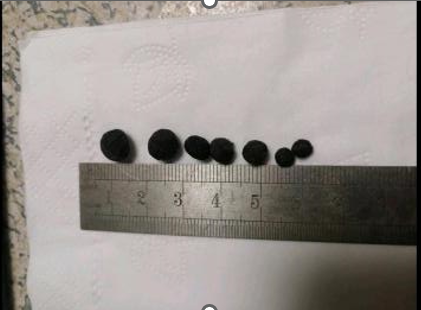
Taiguanglin
摩尼宝珠，你这个是皮肤上刮下来的吗？皮肤的话，有些人修行到一定程度之后皮肤瘙痒，像蚂蚁爬过那样的瘙痒，然后胡乱刮有可能会出现这种东西。皮肤属木，肝属木，如果是中医的理论是肝毒，可以这么说。肯定是从血液里出来，透过皮肤出来的。我是这么理解的，不知道对不对。
临春登台
2024-03-13 10:36
顶礼tai师，我曾经打坐过三年，早晚各1小时，肚子和屁股大腿越来越瘦，大冬天晚上睡觉有时会浑身发热出汗，汗黄色，酸味很重。打坐时偶尔会闻到身体有味，只要不打坐就没有上面问题，后来就停止打坐有好几年了。现在想再打坐，又担心会有上面的问题。
Taiguanglin
临春登台，你说的打坐会出现这种现象都很正常，算是一种排毒的现象，你怎么就停了呢？现在开始也行。身体有各种排毒现象，前面还有人说身上刮出很多黑泥之类的，这都很正常。每个人身体体质不一样，带出来的先天病也不一样。其实，人人都有先天性的缺陷，这肯定的，像我是先天性支气管不好，本来肾也有点不好。小时候给父母逼的，父母就喜欢喂我吃肉，小时候就吃肉也多，不爱运动，然后中学就得了肾结石，差点手术，但没手术活过来了。
慧光
2024-3-26
问题2:人家打坐的过程…身体是暖融融，而我打坐的过程身体是灼热感，这里一团，那里一团的，我这是心肾不交，水火不济吗？师父的妙方比药管用，信心在这儿了。感恩师父！
Taiguanglin
还有身体的各种感应，你只要不疼就不用管，我一直在教参思情，然后观佛，思佛不行就观佛。至于身体的感受，它只要不是让你疼得不行，尤其是膝盖这个地方，其他地方都无所谓了。就是膝盖和骨关节，如果腿摆得不对的话，可能会变成长久的损伤，所以这个要注意一下。其他的身体内部、躯干内部，哪里热哪里冷哪里有点堵的感觉，这个都很正常，反而你不去关心它，更容易通。你就参着思情，把注意力越来越减少的话，不通的地方反而更容易通了。因为注意力越减少，身体越放松，血管会扩张，循环就越好。
淡泊宁静599
2024-04-24 23:15
顶礼师父！
弟子最近这两次打坐念佛，上坐就开始后背发热，呼呼冒火的感觉，后脑勺都有汗珠流下来了，大概要十多分钟才会稳定下来，凉快一点。但一小时后下坐发现两腿的交叉的地方裤子都是湿的，想请问师父弟子这是不是身体太虚，冒虚汗呀？
Taiguanglin
淡泊宁静，打坐的时候发热和出汗，这都是很正常的事情，不需要太放在心上，只要过去了就可以了。是不是身体太虚冒虚汗？如果不是打坐的时候才虚得冒虚汗，平时也会那样，那才是真的虚。打坐的时候很多人都有那种情况，普通人初学刚开始修行，打坐的时候会有很多变化，这个很正常，不用放在心上。
薛祖宜
2024-4-25
师父，这一年多时间在盘腿方面，当然时间没有多的进步，而且减肥的效果也不大，而我想问的就是，经常在日常生活中出现的小腿发热，这一个是不是一个筋脉冲击信号？而这些信号会不会有次第的？例如什么时候疼？那儿什么时候热那儿？因为我有个出家人朋友，他告诉我他是双腿发烧到滚水一般的，他告知我后，我又不方便问啦。
Taiguanglin
薛祖宜，打坐的过程中会出现各种身体上的反应，别人说什么你听一听就可以，不要坚定地认为你也会那样。每个人身体情况不一样，所以有些人双腿发热，有些人双手发热。所以你没必要认为修行到一定程度一定会双腿或者哪里发热，这么一解释就错了，有了这种追求的话，你的修行反而无法前进。
所以肉身方面的这种感应，别人说的，你就听一听，只要你的打坐姿势、你的发心没有错，修行会持续前进的。所以你没必要特别关注什么哪里发热，哪里没有发热，里面还有什么次第这些，好好修行就行。
逍遥梦见沧海
2024-04-27 22:46
2、还有师父，夏天打坐膝盖也凉嗖嗖的，还有两个大腿也感觉有风，但是房间里没风呀，这是自己哪方面的问题？
Taiguanglin
这个凉嗖嗖的问题，是你下肢血液循环不太好才这样。我建议你多磕头，下边大腿到小腿血液循环都好了，就不会觉得凉了。但是不热的话，还是建议拿个毯子盖一盖，防止受凉，对于有些初学更重要。等修为高了，气血循环好的时候，就算冷一点也没有关系。但是刚开始的时候的确容易受风。
逍遥梦见沧海
2024-05-21 18:06
师父，为什么越打坐越怕冷怕风，在夏天密闭房间双盘，还是感觉右膝盖和右腿冷，有风。可以不管吗，还是必须要盖好腿？原因是因为自己磕头少吗？
Taiguanglin
逍遥梦见沧海，为什么打坐越来越怕冷，因为你血液循环在静下来的时候会放缓，所以你得先练腹式呼吸，然后磕头。腹式呼吸练好了，晚上打坐的时候尽量不吃，吃点水果蔬菜就行，不该吃的肉，高蛋白的尽量少吃，主食能戒就戒，特别是大米，小麦面食还可以。尽量少吃不该吃的东西，多磕头，主要是练腹式呼吸，你能练到小腹肚脐下边到小弟弟上面这一段腹肌都能动的时候，基本上你的问题都会解决的。
南山听石
2024-5-23
顶礼Tai师：昨晚莲花坐时，观地藏王菩萨像，手中的摩尼宝珠，想到法华经中讲的应该就是我们的本来心性，就用了参疑情，然后有了状态（不知是否妄念）身体由内而外的发光，膻中这块发暖发热发烫，大概一个半小时疼感难忍就听您讲解金刚经，听完后膻中这块还热，后来气海、小腹也慢慢发热，感恩菩萨加持。请问Tai师，这是开心轮的节奏吗？还是我的妄念呢？
Taiguanglin
南山听石，你是正常打坐的时候感受到烫发热的话，那就是正常的身体反应，怎么可能是妄念呢？我们不说这个轮开那个轮开这种说法，我尽量不提穴位，但是身体上中医的确有穴，道家也讲穴，我也只是拿他们的名词来用而已。你说哪里堵，哪里发烫，哪里会疼，有堵的感觉，这个很正常。
你打坐的时候把注意力放到丹田修一修，可能很快就会下去，这个气下去了就感觉很顺畅，痛的感觉消失后，身体的各种感觉都会慢慢降下来，从而进入到坐忘的状态，短时间内会忘记身体的感觉。
莫尘
2024-7-16
还有一个问题是我偶尔忍着痛熬到了两个小时，有时苦熬后下坐后全身发冷，大热天的也会冷得牙齿打颤，这是怎么回事呢，我该注意些什么？
Taiguanglin
莫尘，你正常地磕头吗？不能光是拼命打坐，还得磕头，把磕头练好了，两个一起练，这样才没有你说的全身发冷这样的事情。
发冷那肯定血液循环不好嘛。你腹肌没有全部打开，心肺功能没有达到一定程度的情况下，光是熬腿，就硬坐在那儿，血液循环受阻，所以身上这些毛细血管分布的皮肤啊，都会感到发冷。所以你还是先把磕头做起来，每天磕头量多增加一点，或者已经磕了多少多增加一点，把这个做好。
善敬
2024-7-18
顶礼Tai师！我从21年底开始双盘开始，陆续也能一个多小时了。但是我发现身上的皮肤越来越差，越来越痒，一抓一个小包出血。然后身上这种斑痕越来越多。如果双盘水平再增加上去以后，会不会斑痕消失啊？还是这种斑痕越来越多？
Taiguanglin
善敬，身上起疱疹之类的，这也是打坐过程中有些人会出现。这是体内脏器里的一些毒素，排出来之后，堆到皮肤上才有的。所以先控制好饮食，然后多磕头排汗，磕头排汗很重要的，然后坚持打坐就行。你也可以把它当做消业来看，身体的障碍，也算是一种业障。
至少斑痕它不会影响到你其它的，什么骨头这个程度的，那还算是比较轻的问题吧，只要坚持就行。斑痕过一阵子，也就是半年到一年之间的功夫而已，坚持的话会过去的。
洛迦
2024-7-20
师父好！打坐一段时间后以前受伤的地方发疼发热，这是在修复了吗？这个现象会反复，是不够精进吗？
Taiguanglin
洛迦，打坐一段时间之后，受伤的地方发疼发热，这个就正常现象了，这个以前也说过的，我也有过股骨头里边的软骨有点受损的那个经历，然后打坐到一个半小时之后突然开始疼起来，这个骨关节会疼一段时间，然后硬忍的话过一段时间就好了。但是第二天打坐还会疼，但是这个疼的程度会慢慢慢慢消减，到最后几个月之后就不再疼了，有这个过程。
虔诚的行者
2024-08-12 17:47
顶礼Tai师。
1、近期每天双盘两小时，平时感觉整个身体像是有火在烧，双手双脚也经常发热。请问师父，这种现象是向着好的方向发展，还是向不好的方向发展？
Taiguanglin
虔诚的行者，发热是对的，但是每个人感觉都不一样，大多数是发热，也有少数人是有清凉的感觉，可能他的身体本来就热的，也有那种什么五阴体质，中医上说的体质中有分几种，什么太阳体质，少阳体质，这样分的有，我也不是很清楚，但是中医看的话有好几种体质，也有些人是可以感觉到一种清凉的感觉，但大部分人都是发热的。
神经蛙
2024-8-13
打坐腿疼还好克服，身上难受就熬不了。最后经过半年多，勉强突破九十分钟了，感觉看着文章还能熬一小会儿。 最后十分钟左右会出汗（下座后身上很舒服），出汗这是气血虚的原因吗？ （各种原因最近每天磕大头或少或停，）第一次九十分钟那天，天也热，疼的哆嗦手偏白浑身都是汗。
Taiguanglin
神经蛙，打坐出汗是气在运转的时候身体会发热、会出汗这个很正常，还有就是身体需要排毒的情况下，它自己会出汗的，也有这种情况。
无畏236
2024-11-13 18:26
顶礼Tai师！
目前双盘每天一坐两小时一年多了，胳膊上和腿上，还是有牛皮癣和成片的小疙瘩，像是经络不通垃圾排不出去，从皮肤上反应出来了，怎样能对治？感恩师父！
Taiguanglin
无畏236，还是有牛皮癣，成片的小疙瘩……，打坐会出现这种情况反而是好事，说明它起效果了。是把里边不好的东西往外排，也可以说是业障发作，一般业障发作的，半年到一年差不多就可以了。
你说双盘每天一座两小时，一年多了，还是时间比较短。如果你说整个信佛的时间也不过一年的话，这个时间短，如果前面还有念经，这个基础打好了，再来业障发作的时候还是比较快的。反正这种皮肤病，用大悲水都可以试一试，做好大悲水，一半儿喝一半儿拿来洗，然后主要还得做功德，还要忏悔，这个和上边的狐臭是一个原理。
Tai贤心8055
2025-01-17 17:57
顶礼Tai师父。皮肤修复是不是要经历多次啊？几个月前双腿交叠压住的皮肤会长水泡，有时一排水泡，有时长一片水泡，非常痒，水泡抓破了也不发炎症，也不红肿，一两天就结痂好了，但是隔一个月又会长水泡，这个月是第三次出水泡了是否与我打坐腿盘得高有关呢？祈求师父慈悲开示！
Taiguanglin
Tai闲心8055，你两个腿交叠的时候是皮肤对着皮肤吗？我在家里，热的话就穿着裤衩打坐。肯定是拿个毛巾垫一下交叉的两个腿，还有脚背和大腿这里，也要拿个东西垫一下。
因为皮肤和皮肤直接长时间的贴着不太好，所以我们打坐的时候，也不直接坐在硬地板上，尽量拿个垫子。因为有垫子的话皮肤也会呼吸。你这样皮肤和皮肤直接贴在一起的话，有可能会出现一些问题。
如果是这样的话，你先拿个东西垫一下。如果你是穿着衣服，穿着裤子打坐，还有这样的状况出现，那我认为应该是什么业障的一种表现。
能坐到一定程度的话，可以说就是起茧子一样的感觉。腿也一样，皮肤也一样，虽然不会变厚，但是整个身体都会适应那个姿势，慢慢就通了，通了就没事了。主要是你的膝盖和脚踝处，还有髋关节，就是大腿和屁股，骨盆的关节，这里不疼的话就是正常的，坚持打坐就可以了，不用想的那么可怕。
如果打坐已经能达到两个小时，那你的姿势肯定是正确的，要不然是坚持不了两个小时的。如果两个小时以内的话，应该稍微调整一下。可以试一试，如果是高盘，让你有这样的状态的话，那可以找一个你适合的位置，往下挪一下看看。
锋
2025-1-17
2、双盘盘到九十多分钟后，会闻到自己身体里散发了腐浊的臭气十几分钟。是因为鼻子这时候变灵敏了，还是九十多分钟身体开始散发？如果散发是什么部位往外排的？
Taiguanglin
下一个问题，盘腿九十分钟后会闻到一些臭气，人多多少少都有这样那样的毛病，有些人是会有这种臭气排出的。前面有也有人问，他是身体里会分泌出一些黑色的东西，他抠出来，然后就捏成一个团一样的东西。身体也会向外排出这样有实体的东西，你只是排出一点臭气，这很正常。我觉得这还不是鼻子的问题，是真的身体在排出一些毒素，以气体的方式排出来的吧。
闻与所闻尽
2025-02-10 17:17
顶礼Tai师父：请问最近不知道是不是修行的原因，上火比较严重，晚上手脚发热，出汗，睡眠质量很差，白天没精神，目前还没办法双盘，请问这种情况是正常的吗，是不是继续精进比较好呢，或者有什么办法可以调理一下吗？
Taiguanglin
下一个问题，你说的这个上火比较轻，但是不能双盘，那你是单盘呢，还是完全不打坐呢？按你说的这种情况，只有练好腹式呼吸，然后磕头，每天磕半个小时到一个小时的头，然后练好腹式呼吸，不要吃肉，不要吃太油腻的东西，自然就好了。
睡眠质量很差，磕头最好是不要睡前做，睡前尽量打坐。如果初学的话，可能坐着坐着就开始昏沉或者困了，那就睡就可以了。
基本方法都是这样，我是不建议吃药，什么其他稀奇古怪的方式。你就按照正常的生活来，然后每天稍微增加一点。练习磕头啊、打坐啊，还有控制饮食，这就够了。
天蓝蓝
2025-3-10
双盘打坐超过六十分钟后身体出现调整，主要是这几个月每天几乎有一到三小时排痰，有时是打坐时排痰，有时是非打坐时间排痰，这期间又没有任何感冒，请问这是正气足了导致的身体自动清理体内湿气跟垃圾不？
Taiguanglin
天蓝蓝，你说的对，排痰很正常，有些人流鼻涕，有些人排痰，有些人甚至流泪，有些人还能咳出点黑东西来。像那些以前抽烟的人，肺里有很多黑东西，然后打坐到一定程度之后，就咳出来些不干净的东西，这都很正常。所以有这样的反应，就说明你修的对了，如果你修错了就不会有这种反应。
震动痉挛扭动
无间渊落
2024-02-14 12:46
顶礼师父，弟子又来问问题了，弟子在打坐中曾经遇到上丹田（大概是头顶百会穴的位置，具体该叫什么不确定，就姑且叫上丹田）震动、盘旋，注意力越是集中，震动频率越快、幅度越大，不打坐日常思考专注的时候也会震动。有次打坐参思情用功得当，感觉丹田处（腹部的那个）也开始震动，震动幅度非常大，大到我觉得自己整个屁股都在震动了，我网上查询过关于打坐时身体出现震动的原因，大概也能猜出一二，不过我还是以师父的说法为准，恳请师父有空回复一下。磕谢。
Taiguanglin
上丹田，注意力不要放到头顶啊，最多放到腹部丹田。但是这也是属于初禅以前的修行。你要是已经能到三个小时，就算没有入定到初禅，该放弃的时候放弃，改修成观法或者参思情，不要特别在身体上用功，这对身体都不好。然后身体各种震动，这都是很正常的事情，就是神经啊，毛细血管儿啊，在还没打开的时候，就没什么特别感觉，但是开始打开的时候就肌肉开始震动，开始恢复，这都是好事儿，所以没有什么特别关注的必要。
耀振
2024-02-16 09:03
顶礼师父，年前接触到TAI法，开始练呼吸，磕大头。腹式呼吸现在能达到每分钟10-12次。散盘，单盘开始，盘腿时身体颤抖厉害，不受控制，左右晃动时有意识控制，就会变成上下抖动，想做活塞运动。现在在单盘，盘不下去，腿翘老高了。腿太僵硬了，如何快速达到双盘？
Taiguanglin
耀振，去网上搜索瑜伽开胯的那些动作吧，都练一练，这个我在这里就不教了。十年前的书上有两个开胯的动作了，你可以练一练，别的其他门派有开胯的动作，都可以练一练，不需要特别的纠结这些问题，反正只要达到目的就可以了，不用关心中间的过程，好不好。还有变成上下抖动，这都是有的过程，这没有办法，都得经历的。
Dean_Ma
2024-02-15 20:56
Tai师父，你好。去年有缘加入进来。本人瘦高个，最近4个月腰背肌肉痉挛发作了2次，不知和静坐有没有关系？每次发作持续七八天，稍微一动腰背处就会抽紧，此时几秒钟浑身绷紧，痉挛处很痛。静坐大概早晚各30-60分钟。最近暂停了。
您之前的文章里经常提到减肥，不知对瘦人有何建议？磕头最后撒手胸腹着地也没有脂肪缓震。谢谢
Taiguanglin
Dean_Ma，身体痉挛是和紧张度相关的，你心里想法太多，妄想太多，整个身体都是紧张的、收缩的，所以会出现痉挛现象。先慢慢的磕头开始，然后慢慢打坐，放松身体，躺着也有放松的方法，也可以躺着放松。然后你说胸腹部没有脂肪减震，那你在淘宝买一个磕头的垫子，有垫子卖的，软软的，你在上面磕就可以了。好吧。
Lanlan岚
2024-03-13
请问：双盘的时候，放松到一定程度，体内会不由自主地振动，接近脉搏节奏。身体跟着晃动，前后，左右，转圈都有过。如果作意可以控制住不动，但一放松就又振动了。这是筋脉有淤堵，气在打通的过程么？继续放松不管它，是不是筋脉通了之后就不会再振了？感谢！
Taiguanglin
Lanlan岚，你就放松就可以了，继续放松让身体放松。脑子呢就尽量放空，然后你能参起思情最好，能思念阿弥陀佛这个情绪带出来，这样最好，带不出来就观，观不出来就念佛。方法非常简单，你身体尽量放松，不要刻意地把注意力放到身体的某个部位，或者想控制，尤其是控制呼吸这些，反而对身体没有什么好处。
芝麻
14-03-2024
师父，我三年前打坐40分钟的时候开始脖子扭动，后来坐5分钟脖子就开始扭动，使我静不下来。因为这个原因不打坐了。平时放松。坐凳子时单盘，简单的说就是平时也修，所以脖子依然扭动。最近一年脖子扭动时嘴也歪，我感觉是上牙膛后侧和头颅相连的筋牵动的。师父我是在修复吧？之前没磕头，只要我现在坚持磕大头，以后不会扭脖子，嘴歪吧？
Taiguanglin
芝麻，人都有好动的习气，一开始打坐身体动来动去的，这个很正常，而且自己控制不了的，所以要磕头。磕头就是为了把好动的习气都灭掉，用主动的修法来把它灭掉。脖子也动，腰也动，胳膊腿自己乱动，真的有时候自己乱动，不想动它也会动。这个也是六根残像中的一种，身体的残像，所以磕磕头就行了。
木小缘起
2024-3-15
顶级师父。平时磕头+腹式呼吸，最近降魔坐进入比较清明状态后，时不时的颤抖，有时从底部，有时是腰部左右颤抖。虽然不影响继续坐下去，但有时挺激烈的。不知道是该继续坐下去还是有什么需要注意的地方？
Taiguanglin
木小缘起，你说的颤抖，一般身体到一定程度就会放松，放松过程就会颤抖一下、抖一下，也有时候持续抖一段时间的，这都属于很正常。只要不是你感到身体痛苦了、哪里痛了，那是另一回事，一般情况下的颤抖之后又舒服了，感觉身体的存在的感觉稍微减少了一点，这样都在正确的方向发展的。好吧，加油吧！
散步的蜗牛
2024-3-15
师父：今天第二个问题。 昨天才发现，小腹肚脐周边，不定时的微微跳动，一关注就没有了，想是这个位置经络被激活了，不知道对不对，今天这个现象又没有了，请问怎么能继续激活这处？
Taiguanglin
散步的蜗牛，肌肉放松的时候都有这种跳动，不光是你小腹肚脐，脸部肌肉也会跳动的，有些时候跳眼皮，甚至跳耳朵的都有，还是跳嘴唇都有。所以这个就不用关心，你不疼就行，你过一段时间都会过去的，而且有些时候皮肤很瘙痒，有能刮出什么东西的也有，我前面看了，这种过程就不用太在意，放过去就可以了，不疼就行。
SNZLG
2024-4-22
Tai师父好！我降魔、莲花都接近120分钟，最近几天上坐40多分钟入静后，发现会阴开始高频震颤（1秒6次左右），然后扩散到臀部肌肉震颤，最后整个上身不受控制地上下运动。一直保持双盘结手印不动的姿势，上身被顶得一蹦一蹦非常剧烈，垫子都嘎吱嘎吱响。而且震动每次都是从会阴开始逐渐向上身扩散，一轮一轮地循环顶，一直顶到100多分钟稍缓和些就下坐了。想请教Tai师父，这是什么原因？这种现象是气机刚开始发动的现象吗？ 100多分钟后震动还是没停止，后面我需要怎么收功控制这种震动？目前就是观一会丹田和呼吸就强行下坐。
Taiguanglin
SNZLG，身体震动，这是正常现象，都有过的，感觉不是像你这么频繁。一秒六次震动，这个有点过了，但好像不是什么大问题。
我见过很多修行人，各种问题都有，震动就是身体本来很紧绷，慢慢化开的过程。有些人简单震一下就过去了，有些人震的时间长，这个很正常。你自己都说100分钟后稍微缓解，你就下坐了。那你要不要多坐一会儿，看看它自己会不会慢慢消失？
本来身体一直处在非常紧张的状态，尤其穴位处的气都堵着，因为肌肉紧张，所以会有一些震动的过程让自己慢慢地全部放松，然后气通了，血液也通了。不光是穴位的部分，有些时候骨骼连接的关节处也自己乱动，身体也会自己乱动，不是震动，这个都很正常。只要不是起坐之后一直痛或者一直难受，正常生活都受影响，那就都属于正常现象，不用管它。
薛祖宜
2024-4-26
师父，像我们凡夫的修持静坐等，例如昨日先祷请菩蕯加持指导今次的静坐，坐了一会儿突然间胳膊头向后拉，前胸挺起慢慢的，头部慢慢的稍微向下垂⋯⋯类似的这种矫正对我们凡夫的是好是坏呢？如何分别有进来的外来意识的是好是坏？或是这种只是自己的意识呢？
毕竟我们的修行路上应该是一世的而毕竟我们也担心在我们的目前修行路上你又一次会离开我们的一日，很多累积多年的问题，我们一下子无法一次向你发问，有些我们遇到的安然过去就过去了。
Taiguanglin
薛祖宜，打坐前先念佛，然后请菩萨加持，坐之后就有一种帮你调整身体姿态的过程，我认为这是好的。
怎么分辨外来的意识是好是坏？首先我一直都在教大家念咒——修大悲咒或者楞严咒，选一个拼命念，念到你在梦里都能念的程度，只要有不好的意识或者天魔外道进来，你自然会感受到，然后开始念咒，这是必须要做到的。你如果没有前面这念咒的功夫，后面打坐的时候有可能会受到很大的干扰。
怎么分辨呢？大部分情况下你都不需要分辨就知道对方有问题。因为天魔外道首先有淫欲，其次还带着情绪。佛菩萨是没有情绪的！佛菩萨的意识对你产生作用的时候，你会感到妄想变少了，然后心态变得平静了。而天魔外道都是欲界天以内的，所以他们既有情绪又有淫欲。
所以你只要修到没有淫欲的程度，基本什么魔王都不再能干扰你。他们来的时候你就能感受到他们的情绪，一旦感受到就马上自动念起来，这样就可以吓跑了。所以还是先把咒语念好。
我离开怎么办？我会待一段时间的，如果缘份到了也会离开，但是你只要认真修行，后面就算我不在了，也会有人持续出现指导的，这个不用担心。
SNZYLG
2024-4-27
Tai师父好，
1、现在双盘过程中关节真的也和师父开示一样也会自己动，今天坐了120分钟，过程中突然感觉后腰突然变轻了，然后由肩膀和脖颈为中心热流涌动，感觉肩膀被抓着向上提自己动，想问下师父为什么气脉经过时，我没有穴位疼痛的感觉而是震动，震动后身体轻松舒服，是全身都振完了一遍，才会开始感觉到气脉经过的穴位疼吗？
2、打坐状态下身体自己动，我是幅度比较大的，是稍微控制点好？还是完全放任不管？
Taiguanglin
SNZYLG，坐了120分钟，已经相当了不起了！在这里学习的人当中，到现在为止能坐120分钟以上的人好像并不多吧。很多人都处在刚开始的阶段，就算是学的时间长的人可能没有精进吧。至少能坐到120分就已经很不错了。
还有你说的这些都是好的现象，好的现象就没有必要管。是先震动后气脉通，还是先气脉通了再震动，每个人身体情况都不一样，很难说的。有些人从来没有震动过，有些人连气脉通的感觉都没有的情况下就已经通了，本来身体就很好的情况下，都感受不到气脉通不通的那种感觉。
所以只凭个人的感觉来说，你坐得越来越舒服，身体的感觉变得越来越轻，这就是方向对了，修得也正确。所以不用特别地再从身体感受当中去找什么对与不对的问题，只要感觉越来越轻松就好了。
还有打坐状态下，身体自己动幅度比较大，稍微控制点好吗？我认为放着比较好。你越是想控制的话，有可能你的心态就没有办法专注，所以还是不用管的最好。
如善
2024-5-21
顶礼Tai师父！
1、弟子现在每天打坐坐得腰酸，脊柱累，体力不支，腰总会要调来调去，一个小时后还是会经常抖动，更耗体力，还要加大磕头力度吗？我也没有很多时间来磕头，每天就十几分钟磕108个。
Taiguanglin
如善，修行先从发愿开始，能发大菩提心最好，次一点出离心也行。先发愿，然后开始磕头和打坐的，可以一起进行。
但是你说时间不够，那就外部环境或你的工作，使你没有时间修行，那你先做功德回向，求佛菩萨给你一个好一点的环境，让你有更多的时间来修行，这是第一步吧。然后再谈你的修行问题，每天打坐、磕头、诵经、念佛，平时工作有空就一直念着，这样最好。
Lanlan 岚
17-06-2024
师父好！ 最近双盘打坐，放松下来后身体就会不自觉地转动摇晃，转头转腰各种。一上坐只要放松到一定程度就开始，幅度由小到大，坐一小时左右就可以动那么久。感觉身体自己就像个高明的正骨医生，知道什么动作，拉伸到什么程度，可以把筋骨关节松开，浑身嘎嘎响，伸筋拔骨。以前师父有说过，打坐不自觉动是好动习气，要多磕头。这种松骨节的动，也是好动习气，要多磕头才能定下来么？感谢师父！
Taiguanglin
Lanlan 岚，如果你能放松到身体自己动的话，这就不是好动的习气。你一坐上来就一直动来动去，没法放松，没法心静，那是好动的习气，但是心静到一定程度之后身体再动，自己能感知到身体动，并且能观察到自己不受抑制地乱动，靠身体自己调节的方式来找到身体最好的位置，让身体更加放松，所以这应该没什么大问题。
最好打坐前先念几百遍佛菩萨名号，某个佛，求他们加持保护再打坐，这样就可以了，这个没什么大不了。因为这种事我以前也见过，在禅堂里打坐的时候也见过这类人，甚至有些人打坐到一定程度之后放屁非常多。甚至有些人呼吸变得非常急促，还有骨骼，肩膀自己乱动，咯咯作响，这种人也见过，这都属于很正常的现象。
定興
2024-7-18
顶礼师父！请问师父，现在打坐到四十分钟左右时，身体不自主的摇晃，有时左右摇晃，有时只是头摇晃，有时围绕尾闾转圈晃，这是咋回事呢？
Taiguanglin
定興，很多人都在问自己打坐一个小时，或者不到两个小时之间，或者不到一个小时，这个时候身体的各种感受。这个在十年前书里都说了，都是幻觉，只要不是身体往不好的方向发展，身体越来越差了，或者骨头疼了，只要不是这样的，坚持就行。
你的一切感受都是很正常的。这种摇晃的感觉，昨天也有说是有飞起来的感觉，下沉的感觉也有，各种感觉都有。而且身体不自主摇晃，是因为身体本身的好动的习气没有灭尽，所以我们需要磕头，用磕头方式把身体好动的习气给灭一定程度，就可以坐得住了。一开始人都这样，你都不控制的情况下，身体也会自己乱动，这个很正常。
铠茵
2024-11-12
顶礼师父！想问下您，平时双盘的时候身子会不由自主的晃动是什么原因？有时候晚上睡觉平躺下来的时候也会感觉有股气在调整自己的身体，肩膀和脖子有时候会随之扭动，如果垫着枕头就不会，这又是什么原因？还有，有时候思佛的时候感觉肚子也会不由自主的抽动一下两下，谢谢师父！
Taiguanglin
铠茵，打坐的时候身体慢慢的晃动，是自己在调整姿势，最适合的最好的姿势。如果是突然间抽动，这是放松到一定程度，身体抖动一下，然后就松了，也有初学是不受控制的乱动，这个是好动的习气。你说的晃动是因为身体在自己找最舒适的位置而已，这个没什么，不用管，让他自己调整就可以了。
还有，最好不要枕着枕头睡觉，躺平了睡，白天打坐的功底会继续起效果，这个气还会继续维持运转的状态，睡觉的时候也有可能会让你通气，这个很正常，所以不要枕着枕头。
还有，思佛的时候感觉肚子会不由自主的抽动一下，如果你是真的做到了思佛，思佛是可以让身体彻底放松的，比注意力放哪里都会彻底，注意力都是思佛下边的修法。如果你真的能专注到情绪上的话，身体会彻底放松，所以也会不由自主的抽动，这是很正常的。身体的每一块肌肉都是这样，普通人都是紧缩和僵直的，所以抽动一下他就放松和展开一下，所以没有关系的。
Daniel
2025-1-17
师父好，一直坚持打坐有五年了，一直很受益，感恩太师父的开示和指引。目前的感受是平时静下来，尤其是坐的时候，身体会时不时颤动一下，是那种轻微的，能感知的两大腿收缩并让上半身往上顶一下，在双盘打坐的时候，这个状况会更加明显。想请教师父，这个现象是否正常，或者有什么要留意或改正的地方？感恩师父。
Taiguanglin
Daniel，你说的情况是正常的，应该是这样的，第一本书里也讲过了，坐到一定程度身体会震动一下，动一下，弹一下之后身体会感觉更放松。然后整体的感觉会越来越少，一下就会小一点。就是感觉到的身体的觉受就会整体变少，然后身体就会越来越清净、轻，感受会越来越轻，这个是对的。
昏沉疲惫无聊
贴吧用户_0EGy1CP
2024-02-14 23:15
顶礼tai师！师父出关答疑，感激不尽，请问师父，我降魔坐60分钟左右的时候就开始一直打哈欠流眼泪，需要处理眼泪鼻涕，心就被干扰得躁动，就坐不住了，很难继续突破时间，这是怎么回事啊？这个情况困扰很久了，恳请师父解答。
Taiguanglin
贴吧用户_0EGy1CP啊，改名字吧，这个太难念了。打坐60分钟后开始打哈欠流泪，这种表现是身上有东西，有不干净的东西。你要么学念楞严咒，还是念地藏经，先找个其他的念经念咒的方法，先坚持，然后再试着慢慢打坐。
三日空
2024-02-29 16:49
1、我打坐感觉妄想比较少或者呼吸比较细微的时候，反而发现自己大腿肌肉比较紧张，当我放松大腿肌肉时，比较容易昏睡或者起妄想，请问师父这正常吗？应该是全身放松才对吧？
Taiguanglin
三日空，你能感觉到大腿肌肉紧张，这已经算是打坐开始上道了。一开始都感觉不到自己是紧张的，慢慢就感觉到肌肉是紧张的。然后是不用去想，你越想它变得更紧张，你想法一放开反而就很容易放松。
昏睡的时候就不要打坐了，你昏睡就赶紧睡觉算了。起妄想没关系，打坐的时候起妄想很正常的事情，打坐十年还在起妄想的人多的是。这属于正常现象，而且是必须要经过的。
应该全身放松，对，但放松不是“我要放松，我要放松……”这么想就能放松。你就按正常的法门，该观想，该念佛，该念咒或者参思情等正常的法门修，它就会自己慢慢放松下来的，不用管什么你自己去控制放松这个。
慈提
2024-03-01 15:34
感恩Tai师！请问Tai师，最近打坐时老打哈欠，流眼泪是什么原因呢？我该如何克服？
Taiguanglin
慈提，打哈欠，流眼泪，一个是你氧气不够，你的腹式呼吸练得还不够好，先从练腹式呼吸、磕头开始。从另一种角度看的话，打哈欠，流眼泪有点类似于有什么附体的感觉。如果往这个方向解释的话，最好先念大悲咒、地藏经之类的。先把一个咒念熟了，念多了，把这些个可能来的，外来的什么鬼魂、什么神都给吓跑了再说。
Lanlan兰岚
2024-03-08 18:09
请问师父：睡眠不足或劳累的时候双盘，刚盘上念一会儿佛号，比较放松舒服，意识就偶尔会断片，回过神来之后，能逐渐清醒并保持到下坐。有时候知道容易这样断片，还是会双盘来消除疲劳修复身体。看到师父之前开示打坐瞌睡会有副作用，想问这样的情况可以继续坐吗？平时有在坚持磕大头练呼吸的。
Taiguanglin
兰岚，打坐一开始会进入蒙的状态，好像有点入睡的状态，这样是不太好，但是如果你能缓过来就可以。因为这个状态持续了一段时间之后，才会对大脑造成不好的影响，可能是半个小时、一个小时这样长的话，你一直在这种打着瞌睡的话，就会造成影响，可能至少也是15分钟、20分钟这样开始有影响吧，你只是短暂地进入一下就出来，就没事。
而且也可以坐着睡觉，直接睡觉。有人以前在寺院里打坐，在禅房里坐着，有些人就靠墙或者靠柱子，在通宵打坐的时候，大家有不少人这样，靠墙、靠柱子，然后靠着就睡觉，坐着睡着了。能盘腿坐着睡着也行，毕竟盘腿本身就腿挺疼的，能那么长时间盘着腿挺疼。
遍虚空
2024-03-09 18:21
师父，您十年前的书上说打坐睡觉会损伤大脑，长期这样是作死的行为，但今天您回答说打坐睡觉也可以？那这个是练到什么程度后才可以呢？呼吸每天都练习，一年多了好像还没成功。
Taiguanglin
遍虚空，你把打坐瞌睡当作一个境界，来一直处在那个瞌睡的状态话，懵懵的状态，那是会伤脑子的。但是你直接睡觉，坐着睡觉，你认为你是睡觉的，那就不算打坐了。你坐的姿势，是打坐的双盘姿势，但是靠墙一倒，靠墙的这么睡觉，那是睡觉，不是打坐知道吧。
打坐是你认为你在打坐，但是进入一种懵的状态，开始瞌睡，一直半睡半醒那种状态，你把它当作一种境界来理解的话，就会受伤脑子。但是你直接睡觉了，那就坐着睡觉的状态呗。你在火车上也可以坐着睡觉的吧，在教室里趴着也可以睡觉的吧，那教室里桌子上趴着也休息一会儿，也不会脑子受伤，没事吧。
Suri
2024-03-12
请教师父，我在打坐的时候除了有腿疼的情况没有什么其它不适，但是每次下座之后都觉得元气大耗非常非常累要缓好久，是什么原因？
Taiguanglin
Suri，感觉元气大耗，这本来就气不足，然后就打坐的时候这个气用来修复身体了，然后就感觉非常累。你该吃吃，该运动该运动，还有腹式呼吸很重要的。疲乏的感觉很多都是腹式呼吸没到，氧气不足，疲乏的感觉是。一般现在这年头很少有人是营养不足的，都是氧气不足，所以你先把腹式呼吸给练足了，好不？
李磊
2024-03-13
这几天终于忙完了一些事情，然后调整到每天晚上10点半左右上床，争取在11点前睡觉，然后早上可以起来，5:45起来打坐，散盘30min，打坐默念佛号，但是心里昏沉得很，佛号数一会儿乱了就又得重新数。打坐完后，接着站桩站了一会儿20分钟左右，感觉疲乏又困得不行，又跑去睡觉了，睡得相当香（昨晚睡觉下半夜反而睡得没这么沉）。
想问下泰师：1、我打坐后这么困，是因为啥原因，需要怎么改善才行？早上打坐后困的话，可以睡觉吗？既然打坐完这么困，是不是可以晚上睡前打坐，让自己的睡眠质量提升？
Taiguanglin
李磊，打坐容易犯困，就是你呼吸没练好。犯困基本上都是呼吸没练好，氧气不足。你可以练腹式呼吸，你先练练。再有不要着急，凡事不要着急，慢慢来。像你这样散盘30分钟开始也行，然后先把腹式呼吸练起来。白天工作的时候也好，想起来就练练腹式呼吸，白天也开始练，随便找个时间练练，有空就练，就这样就行了。
如善
2024-3-14
弟子每日寅时起来打坐一个小时一点，然后诵经念咒，差不多俩小时的功课。从去年冬天开始，天气冷，完成功课后就睡回笼觉，导致现在特别喜欢白天睡大觉，只要睡回笼觉后，我就不想起床，特能睡。现在精神状态也没以前好，打坐效果也在下降。这是怎么回事啊？早上打坐后不能睡觉，是吗？
Taiguanglin
如善，犯困，喜欢犯困，一个是氧气不足，一个是体内血液里的垃圾，血液里不好的东西堆积，然后就犯困。你磕头排点汗，把血液里不好的东西排出去，精神就来了。我也是这样的，我几天不磕头的话有点困，一磕头就不那么困了，可以晚上不睡觉地打坐都可以。
小云
2024-3-14
师父，我现在每次降魔坐定闹钟2小时，腿也就是最后痛一点点，完全可以忍。但是在坐中感觉有点无聊，总希望时间能快点过去。以前在对抗疼痛时拼命熬，像打仗一样有激情，现在不疼了像没有了对手一样空虚。如何安住在这种空虚的状态下？现在没有观丹田，也观不起佛来，就那么静静地，没感觉地坐着，这种情况不正常吧？要如何改变呢？
Taiguanglin
小云，一直无聊，一直静静的没什么感觉，也不去刻意的修什么四念处、思啊、观啊。这种状态下一直坐，就不会有进步的，所以还是选择思佛开始。先思一下看看，能不能思起来，不行也强行思一下，这个是参思情，然后实在不行就选择观，再不行就念佛，总得找一个来做。你什么都不做的情况下就一直坐着，那就不会再进步了，那就停止不前。除非你可以修四念处法，直接拿分别心来观照全身，这个对现代人不是很适合的，已经很少有人能做到了。
常住真心
2024-4-24
Tai师父好！首先感谢您！
请问：
1、弟子早上睡觉起来静坐时候默念佛，一般一个半小时到两小时，但是总是刚坐十分钟、二十分钟，过会就像是睡着一样，大约前五、六十分钟；后面就是因为熬疼倒是没有那现象。请问师父怎么处理比较好？还是说坚持几年就会过去？
Taiguanglin
常住真心，打坐的时候进入睡觉一样的状态是不好的，有可能会伤到脑细胞。你觉得自己要进入那种状态就出声念佛，一会就能清醒过来。不要让自己进入睡觉一样的状态，一直保持清醒，心静下来才是正确的。
逍遥梦见沧海
2024-06-08 23:19
师父。1、双盘打坐打瞌睡昏沉，会伤脑子。那不双盘，坐着诵经念佛修行，打瞌睡会伤脑子吗？
Taiguanglin
逍遥梦见沧海，双盘时候打瞌睡会伤脑子。那个时候打坐的人自认为自己在进入境界，但实际上是瞌睡，反而会伤脑子。
但是你说的不双盘的情况下，那就是瞌睡，像上课的时候老师讲课，你也可以在下边趴着睡觉，但是你睡觉了，那和上课就已经没有关系了，就是睡觉而已。所以诵经的时候念佛修行，一睡觉了，那已经不再算是修行了，不是在念佛了，所以没有关系的，该睡就睡。
念佛的时候打瞌睡会伤脑子吗？没有关系，不会伤的。
逍遥梦见沧海
2024-06-08 23:19
3、自己双盘诵经念佛，就会有很多鼻涕，还会疯狂打呵欠。但是不说话，不张嘴就没事，这是为啥呢？
Taiguanglin
这种状况更类似于有什么东西附体了，更像那些什么出马仙，他们请神的时候会打哈欠流鼻涕那种状况，所以我还是建议你平时多念个大悲咒什么的。
还有双盘的时候不要出声诵经，不要出声念佛，双盘的时候气是旋转的，从嘴到会阴是往下走的，这么一诵经的话气得往上来，这是逆行，所以不太好。
彩虹二号
17-06-2024
顶礼Tai法师，弟子目前每天除了上班以外会使用一到两个小时学习教理，每日大拜108个，睡眠五小时。最近开始打坐，每天三十分钟左右吧，但经常出现上坐十五分钟左右就很困，困到必须睡一下，或者干脆起来不再坐，所以对自己打坐丧失了一些信心，尝试找原因：好像是上坐以后虽然努力去思佛，昏沉时候诵咒，但也经常忘记或者意识不够努力聚精会神；另外想排除一下睡眠时长问题。之前用一些时间把睡眠调整到六个小时，最近在调整至五个小时，所以想请益法师，该如何对治这个大昏沉，感恩。
Taiguanglin
彩虹二号，你说的这种昏沉状况就是氧气不足，睡眠一天五个小时，成年人不算太少了。一天大拜一百零八个比较少，也就十五分钟到二十分钟，哪怕你要做到减肥效果，起码也得磕个两圈，就是半个小时以上，一天最好能磕四圈——一个小时，最好能保证一个小时的磕头，浑身出汗，然后练好腹式呼吸，先把呼吸练好，然后磕头练好心肺功能，这样就可以减少昏沉了。
光是强行打坐来克服困昏沉，这有点难度，而且需要的时间非常长，这个过程反而有可能大脑会受到损伤，所以你还是先练腹式呼吸，先把这个练好，练到平时也做腹式呼吸的程度。
三日空
2024-06-21 18:20
2、早上我尝试四、五点起来打坐，昏沉很严重（晚上一般十二点睡），请问师父怎么分辨昏沉是属于睡眠不足还是腹式呼吸不到位啊？
感恩师父开示！
Taiguanglin
按理说你的身体已经达到了可以双盘的程度，身体进入了好的状态的话，在昏沉的时候、困的时候打坐也会变得越来越清爽，睡意会消失，这个时候你才算真正到了状态。
如果打坐的时候越来越困，说明你身体还没到那个程度，不如直接睡觉算了，先睡饱了再打坐。有些人睡饱了再打坐的时候，也会昏沉，这个昏沉就是氧气不足，身体还是有问题，所以要配合，磕头打坐两个一起来才行。
东风4500
2024-07-15 16:35
2、现在打坐久了容易昏沉，是否一直可以放音乐？
Taiguanglin
还有容易昏沉的话赶紧睡觉，不要放音乐之类的，昏沉就睡觉，睡饱了再起来。然后是打坐一般在一个小时以内昏沉，不至于对脑子产生什么太严重的影响，正常情况下都能恢复的，但是如果超过两个小时，一直处在那种昏沉的状态很长时间，那可能会脑子出问题，所以如果短时间的话不用管，如果长时间的话还是睡饱了再来，要是还是会昏沉的话，那还得多练呼吸和磕头。
容
2024-9-12
师父吉祥：感觉自己还是比较容易入静的，有时看着手机会慢慢杂念减少，进入静的状态，但是盘腿我总是盘不了多长时间就感到身体疲劳？
Taiguanglin
容，盘腿总是盘不了多久，长时间就感到身体疲劳，因为气不足，还有呼吸没练好。呼吸没练好的话，盘腿到一定程度就会开始缺氧，然后开始疲劳发困。你要是呼吸练好了，氧气充足了，脑袋就变清爽了，然后身体疲劳也应该是会恢复的。你呼吸都练好了，然后吃的干净了，不吃肉了，那打坐会让你精神，越来越清爽，然后身体疲劳会缓解放松，这样才是对的。
你说身体会疲劳，那是因为呼吸没有练好，吃的也不是那么清净吧，可能吃一些不该吃的东西，或者吃太多主食，影响身体的正常运转，也是有这个可能。
莫尘
2024-9-13
顶礼Tai师，我四十九岁，打坐七八年了，一直阻碍在九十分钟到一百二十分钟，现在有所突破，每隔一天莲花坐能熬到一百二十分，降魔九十左右。但是，我原来偶尔一百二十分钟的时候，那天精神很好，现在每隔一天能坐到一百二十了，下坐后却感觉有些疲倦，想睡，觉得气也不足。但我还是坚持，这两天稍微好了点。我要注意什么问题呢
Taiguanglin
莫尘，打坐七八年，一直阻碍在九十分钟到一百二十分钟，现在每隔一天能做到一百二十分钟，下坐后感觉有些疲倦，想睡，觉得气力不足……，你磕头吗？每天坚持磕头，然后坐一百二十（分钟），四十九岁的话，磕三、四百个是没有问题的，你先把这个数量做到，一天磕三、四百个。
然后是调节饮食，你就算不吃肉，吃的油腻的，吃的油多了，还有蛋白质太高，蛋白质太多，像豆腐这些同样也会让你瞌睡的，也会感到疲倦的。最好的饮食就是蔬菜水果。
还有主食也会让你感到疲劳的，米面吃多了，也会让你感到疲劳，想睡，所以把饮食也调好，然后每天磕头，做好量，然后正常打坐一百二十分钟，这样应该就可以了，如果不考虑冤亲债主的话，这就够了，健康人到这个程度就不错了。
偶米大
2024-11-13 15:47
顶礼师父！
1、我现在坚持每天早上五点起床打坐一次两小时，但每次五点起床依然很被动（靠闹钟提醒），就是逼着自己起床，不是身体自然醒来的状态，是不是气血不足？（平时都有磕大头的）
Taiguanglin
偶米大，早晨不能自然醒，有可能是你的身体还没到那个程度，还有一个是可能晚上你吃东西了，晚上吃东西多了，睡眠就延长，晚上吃的少，睡得就少。
还有磕头这个事不要过度，你要想晚上睡觉少的话（就）适当一点。如果磕头过度的话，气消耗太多，晚上睡眠就变长。磕头消耗的气要靠打坐补回来，但是打坐的时间不够长，磕头的次数很多的话，有可能睡眠就会很明显的拉长。
我觉得，你不要过度的强迫自己非要怎样怎样，这反而不太好，你只要每天正常的量给做到了就可以了。每天两个小时，早晨起来两个小时，晚上睡前再坐一会儿，这样就可以了。每天能磕头的，在自己年龄和身体可以承受的范围内适度的磕头，这样已经很好了。不要想着强迫自己非要怎么怎么样，这也是一种执着。然后达不到目标的时候又很懊恼，又生起更多的烦恼。你已经走得比别人快多了，所以不要过度的强迫自己。
容
2025-1-16
问师父：
打坐陷入昏沉睡眠状态是不是容易堕畜生道？
Taiguanglin
你说打坐陷入昏沉睡眠状态是不是容易堕畜生道？这种说法我是不相信的，当然也有人这么说。打坐一开始很容易昏沉，因为氧气不足，呼吸不够好的情况下氧气不足，所以坐着坐着就开始昏昏欲睡，这个很正常。所以先练腹式呼吸，把呼吸练好了就可以正常打坐了。
咱们就不管什么堕畜生道这样的说法，一个正常的学佛修行的人，有戒行、善行、修行的话，基本堕不了畜生道。尤其是不吃肉的，就没有这个果报了。
dlfu
2025-2-12
2、双盘两小时基本每天，但是现在身体也没有说每天精力充沛，没感觉有很大的转变，有时候还比较容易累，需要三小时才可以转变身体和状态吗，还是因为自己每次打坐入静不够所以身体没有的到更好的转化。
Taiguanglin
还有双盘两个小时，前期会累的，因为前期双盘期间会把大量的营养物质能量，拿去修复身体，然后就感到累。你把修复身体的过程过了之后，能量就会储存下来，然后就会变得精力充沛，都有这么一个过程。是有一段时间容易累的，都有的，不用着急。还有妄想多了也容易累。白天妄想多，也容易累的。
恒河沙丫
2025-03-12 14:38
3、这个月以来，特别能睡，晚上七个小时，白天还要睡两个小时，像是睡不醒，醒来还有很多眼屎，真是烦恼，这也是正常现象吗？不是说越打坐，睡眠时间越少的吗？
Taiguanglin
下一个问题，修到一定程度，各种业障都会翻出来，睡眠也是一个障碍，也是五盖中的一个，我们都那么说的。它也是我们累世以来积攒下的一种习气，所以修到一定程度，睡眠欲也会被翻出来，所以一直想睡，这个很正常，坚持打坐就行。
这个已经不是和你的身体状况有直接联系，就是你的执着，就是你的习气。如果和身体状况有联系的话，身体变好了睡眠就会减少。但是那种习气翻出来的，就和身体没有什么直接的联系，就是习气多了，到了该翻出来就翻出来，所以就变得很困，这个很正常。
身体气感/漏气
徐若木
2024-03-06 11:19
顶礼tai师，之前有听说练瑜伽的打坐漏气了，自己却不知道，打坐漏气是什么感觉呢？想了解下怎么尽量避免，我是一直用降魔坐，打算坐到2小时，再练莲花坐，可以这样练吗？打坐膝盖疼是姿势不对的吧，偶尔有点，我是大腿酸疼，然后降魔坐的话右脚比较麻，屁股坐久了疼，太久了后面腰无法挺直了
Taiguanglin
徐若木，打坐漏气是你把注意力放在外边，或者经常散乱的注意力乱跳，有可能漏。还有一个地方长期堵着，你不去试着快速打通，就一直堵在那里的话，有可能会漏。在一般情况下，基本上你这样子打坐两个小时做不到漏气的，你气都不足，怎么漏气？
要漏气你得先气足吧，现在是气不足的情况。因为气不足，所以你也会腰挺不直，气足了身体健康的话就能自然而然地挺直。然后膝盖疼是坐姿势有点不对，我前面教过的，把腿尽量往里放，把脚趾头能冲到大腿外头，基本就不会疼了。还有大腿酸痛，脚比较麻都是正常现象，屁股坐久了疼也是正常现象。
情空
2024-03-09 09:59
顶礼师父！有一次睡觉，因为感觉到，也“看到”额头冒白气醒来，这个像是漏气吗？感恩师父慈悲开示。
Taiguanglin
情空，睡梦见自己额头冒白气，这不算漏气，梦见都算的话，那还怎么活？再说一个人要漏气，他先得气充满，气够多了，才能开始漏。我不知道你修到什么程度，你就开始有感觉漏气。一般情况下都很少，没多少人是能漏气的，能漏气起码都是打坐两个小时左右，以后才有可能出现那种漏气现象。
麦花香158
2024-05-20 11:08
顶礼师父！自从师父重出讲法，弟子打坐进步很大。目前莲花坐可以两个半小时，腿也不大痛了。我的年纪比较大，就是担心等我老了，这种气感会越来越弱吗？已经疏通的筋脉会重新堵上吗？那样的话，现在的努力不是白费力气了？
Taiguanglin
麦花香，身体老了，气感肯定会消失，而不是气弱，你的身体习惯那种感觉之后就感受不到了。所以正常的状态就是没有气感，等通完了一段时间之后这个气感就消失，打坐的时候是没有任何感觉的。身体不痛，坚持两个小时就可以了。
你说现在莲花坐可以坐两个半小时，另一个降魔坐能坐两个半小时吗？同样都两个半小时，再往上加点，基本到三个小时的时候，身体大部分毛病都能好一点，到四个小时的时候你就不用管身体了。能修到四个小时到初禅的话，你只要一心想着往生，90%以上都能去，没有问题。所以你也不用管什么经脉堵不堵的问题。
回忆助攻
2024-06-17 16:08
Tai师父好，1、您在《坐禅1》中说丹田气海可以容纳无限的气，请问这个真气是生物电流吗？是在物质空间存在的吗？
Taiguanglin
回忆助攻，按照现代医学来说，气应该是一种细胞的运作、工作效率吧，还有氧气和营养物质、葡萄糖这些东西吸收和运作的效率。所以修行人的细胞比普通人的细胞运作效率更高，就有气感，我是这么理解的。以前讲细胞也是可以升级的，一开始气是只是在血液的流动当中感受到，到后面每一个细胞都在升级。
三日空
2024-06-20 16:24
2、降魔坐时有种激荡的感觉，从右臂通过两手传到左臂，不知道怎么形容，像水波有固定频率，但不是液体流动，到左臂消失，同时眼睛像有个探照灯从右眼照到左眼，照到的时候就比环境灯光亮，这样的感觉二十分钟来三波，请问师父这是不是所谓的气感之类的？感恩师父开示！
Taiguanglin
打坐的时候会出现各种感受，觉得打坐身体越来越差，平时越来越没有精神，这种感觉是错误的。只要打坐让你感觉身体越来越好，打坐的时候越来越舒服，这就对了。
你说的这种感觉，是细胞激活过程当中会出现的正常现象，所以不用刻意管，尤其不要追求这类感觉，你一追求反而会落入另一种执着，越是执着的话，身体会发生不好的变化。
三日空
2024-07-15 18:53
2、我现在降魔坐能40-60分钟了，但身体气感还没有之前坐20-30分钟时候强烈，请问师父，如果没有那么多身体气感，只是坐的时间加长，对身体也有修复功能吗？谢谢师父！
Taiguanglin
然后下边，坐到一定程度，身体的感觉都会消失，气感也是感觉，它也会消失，身体终归会恢复到平静，平静时候才是正常的，有气感就说明身体还没有通，还在修复过程中，所以过了一段时间之后身体就没有什么感觉了，这才是正常的，身体存在感都会消失。你目前六十分钟是感受不到那种状态的，所以你不要管这些身体什么感觉。
现在很多人问什么身体的感觉怎么怎么样，这个时候什么境界之类的。你有身体感觉，那就是有身体的境界呗，等你到了没有身体的境界就没有身体的感觉，继续坐，一直坐到没有身体感觉的时候就可以了。只要你的身体每天一直都在恢复，每天精力恢复的好，身体以前痛的地方也不痛了，这样都是往好的方向发展的话，就不要刻意的去管那些身体怎么样，好吧。
S N Z Y L G
2024-8-13
Tai师父好！
1、双盘打坐两小时左右时，感觉到全身气血在体内无障碍高速运转，上身被定在原地，整个身体不能动了，但意识非常清醒，这种现象是接近入浅定的前兆吗？
Taiguanglin
S N Z Y L G，你能感觉到体内有气在旋转，这说明身体还没有进到那种感受不到身体感觉的程度，所以离禅定是还有一段距离的。要入定，你要感受不到身体的存在，但是你这种气感都属于身体的感受，所以目前来说还是得需要一段时间，但是打通任督二脉或者说打通全身经脉，这个是已经快了。
千湍盈泰
2024-8-15
Tai师法恩清凉 ！
前几天早晨三点醒来，躺在床上，就一直有一股热流从脚底往上流，逐渐流到腰部附近时，非常舒服，好像双腿泡在温泉里， 但向上流到心脏附近时，就感到能量太大，十分不好受。 我尽量保持躺着不动，主动接受这源源不断热流。
大概持续了2-3个小时，直到我忍受不了才起床，这股热流也就停止了。（当时全身好像发烧了一样，很热。）当天感觉身体能量很足，不吃饭也不饿。 这股长达三小时，源源不断的热流，从脚流向头，是佛菩萨加持或灌顶的可能性有吗？还是说，是自身引起的拙火？
Taiguanglin
千湍盈泰，只要每天坚持打坐两坐，早晨一坐晚上一坐，这样坚持打坐的话，就算不打坐的状态下，气也会有那种类似于打坐状态一样的那种运转也会出现，慢慢慢慢的，所以有些人在不打坐的时候也会感觉到气在流动，这很正常。
当然你愿意理解为佛菩萨的加持也行，这倒无所谓，但这不是什么自身引起的拙火这些，这就是正常的气的流动。而且是热感的话，这是第一次修复，这是打坐两个小时之前的欲界定这个阶段的修复。
第二次是那种电感，很凉爽很清爽，有麻的感觉，第一次是这种热的感觉。我认为还谈不上是什么佛菩萨加持，你那么想就好，只是你的气已经运转到可以修复的程度了。
老奇了
2024-11-11 10:36
顶礼师父！
1、还是几个问题想一起请教了，麻烦师父了，去年单盘三个月把经络通了，先是任督二脉，然后连着膝盖和脚心，这是道家说的小周天和大周天吗？感觉身体是个空瓶子，气每天沿着瓶子壁内外乱窜，顶着挺难受，气啥时候能满感觉不到它流动呢，因为准备生小孩所以就没打坐了，但是养成了腹式呼吸的习惯，气经常在下丹田位置流窜，不知道窜动挤压腹部会不会导致流产？
Taiguanglin
老奇了，感到气感，气到处乱窜，实际上就是你的心太乱，心可以决定气的去向。这个练气功的人可能有感觉，他不需要刻意的做太长时间的什么闭气的工作，只要心念到了，气就到那里。所以你要练气，练打坐的话，不管是练什么，就是得先把心给守好，不要让注意力乱窜，平时心里默念佛或者观想气往丹田里聚，这样观想就没事了。
你这样脑子里想法太多，导致气乱窜，而且气乱窜的时候你还跟着气一起注意力到处乱跑，这样两个互相影响，气更不能顺畅。所以还是先好好念，念咒还是念佛，最好是简单的念佛是最好的。
悟空
2024-11-11
顶礼Tai师父，我现在感觉气很容易在额头上聚集，特别是晚上睡觉的时候，可以用意念通过任脉导引下去，但是一会又跑到眉心了，请问这种情况是什么原因呢，有没有什么办法呢？
Taiguanglin
下一个问题，悟空，你平时就练习思佛。气会跑到眉心去，是因为你脑子里妄想太多了，你练习思佛，把注意力用文字妄想再灭一个程度，从心里思念佛，从心中开始，这样脑子里妄想少了，气就不会往头上跑了，如果气一直跑的话，那就念佛吧，这样就可以了。
你主要是修为还没到那个程度，也就是注意力和文字妄想还没到那个灭的程度的时候，先把身体练好了，然后感觉到气，然后气就被自己的注意力牵来牵去，然后感到哪里不舒服啊，哪里疼啊，或者说气感怎么怎么样，如果你是按照修心的方式，先把文字妄想灭掉，再灭注意力这样的方式来的话，根本就没有什么气感的问题，哪里不通，哪里胀啊，这种问题。
所以你现在问题是先把文字妄想注意力灭掉，往这个方向努力就可以了。方法主要还是先思佛，思佛不行再观佛，再不行就念佛，就往这个方向努力。
阳阳
2024-11-13
顶礼Tai师， 师父前天答疑说过气在体内乱串，是气不足导致，要想气足，是否就需要观丹田？ 气不足时，是否不适合参思情？ 先观丹田到气充满，欲界定后，再开始参思情比较好？
顶礼Tai师， 个人感觉有时气感很强，有一大团气行走任督之间，从头下到面部，类似醍醐灌顶的感觉。 有时气走的很平缓，几乎感觉不到。 这两种情况经常交替出现。 想请问师父，影响气强烈，或者平缓，是哪些因素导致的？
Taiguanglin
阳阳，参思情，任何阶段都适合的，你只要能参得起来，哪怕是不打坐也可以的，平时也可以参，行住坐卧中都可以参的，你只要能做那就完全不用管别的了，直接参思情就可以了，平时也是，一直能参到那就最好了。
至于你说的气不足导致气乱窜，气乱窜说明气已经不是那么不足了，是你的注意力散乱。当然气也不是那种完整的，一般完全充足的时候是感觉不到气感的，气感都会消失，然后身体的感觉越来越轻，应该是这样的。但是的确有一部分原因是气不足，你可以用观丹田的方式来把它引导下去，这也是一个办法。但是和参思情相比这个是差一级的办法。
至于你说欲界定后……，可以说明你现在还没达到欲界定，就两个小时还没充足。以前也讲过，两个小时之前就不要管什么法门，你能坚持这个时间就可以了。等两个小时过后，选择某个好一点的法门，主要是适合自己的法门，还有把理论都给想通了，这就可以了。目前你只要坚持就行，气乱窜就观丹田也可以，能参起来就参起来，思情参不起来也可以参疑情，也可以观丹田，也可以观想阿弥陀佛，各种办法都行，两个小时之前各个都试一试，看看哪一个让你更快地进入状态，什么适合自己就修什么。
阳阳，气感强烈和平缓，是气通了之后就会平缓到没有感觉，气通了就这样，没有通反而会强烈一些。更没有通，完全没有气感，那是普通没打坐的人。所以你说什么意思导致的，这个通也不是那种缓慢的一点点通，而是到某个堵的地方会积蓄一段时间，然后一下子通过去，所以会强烈，强烈到一定程度，然后通了，然后就会平缓，然后舒服一段时间，又转到下一个位置，下一个穴位开始堵的时候，又开始气感会强烈起来，这样反复交替出现的，是哪里堵了才会强烈。
感觉是从上边往下走的时候，胸口堵，还是从后边往上走的时候，后背哪个穴位堵，堵的时候反而气感强烈。但是有些人都感觉不到自己太堵，因为他堵的地方不那么通的情况下，气会绕开这个地方到别的地方乱窜，这个也是一种乱窜的原因。
所以我劝大家打坐不要观气，不要管这个，它乱窜就乱窜，你就专注的思佛念佛就可以了，你越观的话它更控制不了，反而更麻烦，不观的话它自己慢慢就都给调整过来了。所以佛说如幻三昧，把身体当作幻觉来认知，这样反而更容易进入状态。
空空无我
2025-1-15
我看到好多人提问说感觉身体的气感怎么样 我现在双盘勉强达到 一百二十分钟 从来没有感觉到身体有气 气感怎么样 请问师父这正常吗？
Taiguanglin
空空无我，没有气感很正常，有气感说明你身体不好，所以开始往好的方向转变的过程当中会有气感。如果你本来身体就很好，那就没有气感，所以最终的结果是完全没有感觉，那就对了。可能你的身体本来就很好，所以就感受不到气感。
如果你能坐到三个小时以上，这个时候是会有明显的变化的。和前面两个小时还不一样，因为三个小时开始，之后的身体状态，不是先天性的直接带出来的。我们小时候，正常的小孩，身体气都是通的，气脉都通，所以一般可以看作是相当于我们成年人打坐两个小时之后，打通全身气脉、经脉之后的那种状态，小孩是本来就那样，后来就慢慢堵了，才会变成全身都堵的那种状态。
但是三个小时后，再发生一次变化的时候，这个是小孩根本达不到的，小孩只能是气脉通，但是还没有到初禅的那种境界。所以我看你还是继续往上加时间，坚持到三个小时以上看看吧。
光影
2025-1-17
1、每天两小时打坐，倒是感觉还是有些气不足，尤其是到了后四十五分钟，怎样进一步提升气，练呼吸可以提升对吧师父。
Taiguanglin
光影，每天打坐两个小时，到后面四十分钟有点气不足，那你坚持多坐一段时间就可以了。打坐三个小时、四个小时，这样往上加，就越来越气足了。两个小时并不是完全气充满的状态，两个小时只是身体当下没有病，在普通人标准里算是健康的状态，就坐着比较舒服那个程度。但是后面说你又不舒服了，气不足了，那说明你身体还需要修复，那尽量多坐，然后练腹式呼吸，磕头，这些都做就可以了。
Tai贤心8055
2025-02-10 15:15
顶礼师父。每个月都等不及师父上线答疑，因为打坐中不断有问题出现，我双盘时候的腿疼慢慢轻了很多，柔和了很多，不像刚开始那么的刺痛难忍。身体上半部左边为啥一直没动静啊？右侧身体的前胸后背都痛过几遍了，我是早晚莲花坐降魔坐交替来的，师父您说过莲花坐是修复左侧身体的，我莲花坐每天熬腿都没低于一个半小时呀，四个多月了左边为啥什么反应都没有呢？是不是要等我右边的筋脉通了之后，左边才会开始修复呢？祈求师父慈悲解答。
Taiguanglin
Tai贤心8055，修行是不需要刻意地追求身体上的感应的，它自然会来。你觉得身体不修复，那你早晚莲花座、降魔座交替坐。比如你早上坐莲花座，晚上坐降魔座。你本来是这样的，那你也可以翻过来，早上坐降魔座，晚上坐莲花座，这样也是可以。不需要一直刻意地维持某一种修行状态。
佛法的修行和其他的不一样，不知道道教的一些修法如何。但是我听“轮子功”说的是：男的就盘一种，有可能是莲花坐或者降魔坐，女的就翻过来。男的盘莲花，那女的就降魔，就只坐这一种方式，他们是这么教的。也不知道是不是那个教主那么教的，还是他们下边传的时候那么说的。咱们是翻过来的，一定要两边都打通。
还有你的身体没有感觉，坐到通了就不会有感觉。如果你的身体本来就很健康的话，本来就不会有感觉。有感觉你哪痛点，有痛点说明本来就不通，打坐的时候开始通了，所以就会疼起来。
如果本来就很通，我们都已经打通了，本来就通的话就不会有感觉的。所以你没必要刻意地追求痛不痛这个问题。而是就简单来说，每天打坐这么长时间，身体越来越好，这样就可以了。不要想着，我身体哪里必须痛过，我才会有所进步，不是这样的。
你只要能坚持这个时间，然后再往上一点一点加。时间加了，修法对，心法也对，念佛观佛思佛，这些都对的话，进步会一直有，这样就可以了。不要想着身体哪里不痛，会不会是有什么其他问题，这都没有必要，身体只是个臭皮囊而已。
尤其是我劝年纪大的修行人，更不要在身体上过度地执着。因为年纪大嘛，你把身体当作一件衣服来看，衣服旧了，早晚要换掉的。你就不要想着把这个衣服要缝缝补补，要把它补得非常好看，这没必要，到了时日自然会脱掉。
所以现下只要平时把功课做满就可以了，好不好。
紫蘇
2025-2-14
修行近两年了，近期在子时打坐时，思想达到无杂念后，突然发现中丹田有大量的气进来，能后念头自动就被跟着转至中丹田去感觉到那个大量的气体，鼻子也在那瞬间无呼吸感，能后意识主观念头起来觉得很奇怪是什么情况，能后又恢复正常了鼻子呼吸了，这种转换的时候很短，请教Tai老师这种情况正常吗？
Taiguanglin
紫蘇，你的那种感觉有些人也有，就是一种气感，而且气还不是从身体里产生的，是从外边进来，也有这样的感觉。
还有打坐的时候出现任何状况，都不要对其发生反应，就是不要升起情绪，一旦升起情绪了，可能就会退出那种状态了。
所以你说的这种感受，也是正常的，有些人有，有些人也不一定都有，不要执著于这种身体上的感受。正常打坐有什么感觉，你就以平常心来观察，这样就对了。
金刚葫芦娃1
2025-02-15 20:05
顶礼Tai师，我打坐过程中气感特别强烈，如果心境平和，督脉的气会沿着后背到达后脑，然后从面部下来，身体就很舒服。_x000B_ 如果这过程中有恐惧害怕等不好的情绪，后背就会异常发热，然后从督脉上来的气，就会在后背和整个头部，以出汗的形式散出去，就下不到任脉了，就感觉身体气亏了。_x000B_ 气行走时有不好情绪时为什么气以出汗的形式散出去？这是不是散功了？后面如何避免这种现象发生？
Taiguanglin
金刚葫芦娃1，你说气以出汗的形式散出去。正常情况下，一般人都感知不到气的流转；但是心静到一定程度的话，你能感觉到气在流动，而且是按照任督脉来走；还需要打坐一段时间来打通，才能完整的转一圈。
但是有不好的情绪升起的话，前面气就会往上升。从会阴开始，走前面的任脉的气会往上升；然后后边的气又上来，在脑袋里撞击；然后两边的气会互相消耗掉吧，所以以出汗的形式散出去。你只要不起情绪就可以了。
这个不能算是散功。你得有多大的气才算是一种散功，散功了那算大损耗了。这只是你的一种感觉而已，当下的感觉，算是身体恢复过程中的感觉。正常的已经打通了，能进入状态的时候，根本就没有任何感觉，身体感觉都消失才对。你现在还有气的感觉强烈，那说明身体的感知还在，就是还没有到初禅境界。
后面怎么避免这种现象，你就不要让情绪起来，不要让害怕恐惧这些情绪起来；要么你就思佛念佛或者参疑情，这样也行；然后把情绪控制在某一个点上，就是思情或者疑情上，控制住了就可以了。
五感及身体变化
虔诚的行者
2024-03-15 07:25
太师父好，10年前坐禅里说的筋膜舒展到头顶的变化一直没太看懂，是会修成头顶正中一个椭圆形头骨的突起？还是会在头顶形成类似鸡冠很多条比如7或8个相互并列的鸡冠竖条的皮肉突起？网上这两种图片都有，不知道哪种才是对的，请太师父开示。
Taiguanglin
虔诚的行者，就是上边像一个鸡冠一样，就中间稍微隆起一点，它也不是什么七八条相互……，就是中间一条整个开始慢慢隆起，而且这个也是等年纪大了的话就又会下去的，因为整个筋膜随着年纪大都会收缩的，这个是必然会经历的过程，不是说你50岁60岁70岁还那么壮、全身肌肉量像年轻一样，不是这样的。
人年纪大了，肌肉量会逐渐减少，筋膜也会收缩，但是你把前期修为达到的意识境界是可以保留的，对不对？除非你又开始破戒了、吃肉了、不该干的事都干了，那就不好说。但是只要保持正常的生活，按照修行那个境界达到的生活一直维持的话，年纪大了身体可以收缩，但是境界保留。
海莲
2024-3-16
请问师父只有打坐才可以改变这个色身吗？
Taiguanglin
海莲，修行能改变这个色身吗？欲界定、初禅、二禅、三禅、四禅都有一定的变化，所以说应该算是改变吧。尤其是这个男性，这个梦遗一旦消失，人的整个状态都会发生变化，变的精力充沛，而且外相也有所变化。但是想以普通人状态示人的话就要收敛，收敛一点。
流浪者月儿
2024-04-01 12:07
随着修炼，对气味很敏感，有时候迎面一个人走过来，身上那种腐味都能让我呕吐。以前南老师说，他因为受不了人身上的味道，才会选择抽烟来掩盖。我发现很多人是在这时候憋气或者离开。以前我会觉得是有钱人对穷人的一种嫌弃和鄙视，因为确实条件好的人会相对干净一些，我这算是分别心和身体的执着吧！我想知道您有这种问题吗？随着禅定和见识的进步，这种状态会消失还是转化？谢谢！
Taiguanglin
每个人修行到一定程度之后，身体的整个细胞都会活跃起来，尤其是这种感官细胞，鼻子上的嗅觉细胞，耳朵里的听觉细胞，它都有变得灵敏的过程。
但是这也是因为你的心识在外边，你的执着在外边，始终把注意力放到外边，想从外边获取更多的信息，在这个欲望的情况下，你的六根变得敏感的状态会更加放大。
如果你把注意力都放到自己身上，平时心里一直默念佛或者思念佛，不去想、关注外面的事，也不去关注外面的事、人或者外面的环境，这个问题就不是问题。你越是关注，嗅觉变得敏感之后就更容易让你产生烦恼。
所以我的建议是你把注意力放回自己身上，平时不要去关注别人的气味之类的，心里就专注于念佛或者思念佛，就什么问题都没有了。我是没有在嗅觉方面有过什么特别的感受的。
幸运^-^
2024-4-24
师父好，最近几天失眠有点严重，有什么办法可以快速入眠吗？每天1遍地藏经，1遍楞严咒，早上磕头108出汗，持续两个多月了，晚上降魔40分钟左右，十一点半躺下，但头脑清晰亢奋，睡不着是不是可以再起来打坐？第二天也没有特别困，求师父指教！
Taiguanglin
Lucky，修行到一定程度，睡眠自然会减少，没必要强迫自己一直睡觉。你不睡觉第二天精神很好，那不是平白无故地给你增加修行时间吗？这段时间你打坐、念经，做什么都好。
我也有一段时间，睡眠减少到一定程度之后，十一点之前躺下，到一点两点自己就会起来。我就再打个坐或者做点别的事情。早晨五点多可能又会困，再睡一个小时，和别人一样正常起来。所以能自己安排时间最好，没有必要把睡不着当大事，给自己造成负担或者烦恼。
慢慢~
2024-4-25
顶礼师父！请问睡眠很多怎么办啊？（子谦答：多磕头，以前也是睡眠多，后来坚持每天磕头300以上，现在精力旺盛，睡眠质量好且睡的时间少）
Taiguanglin
睡眠多怎么办？下面已经有人回答了，要多磕头。睡眠为什么多？一个是吃得多了；还有一个是体内杂质多，血液不够干净，所以疾病多；也有呼吸跟不上，氧气不足这个原因。所以吃和呼吸调好，然后磕头多出汗，让血液变得更干净，这样睡眠就会减少。还有平时白天不要想那么多事儿，白天妄想太多，也会增加晚上的睡眠时间。
摩尼宝珠Lotus
2024-05-13 11:36
阿弥陀佛，顶礼Tai师！请问师父，今年尝试双盘打坐后感觉双腿变瘦了，但是感觉胸腔变高、变厚了，是对的吗？还是哪里不对需要调整？请师父指点！感恩！
Taiguanglin
2024-5-20
摩尼宝珠Lotus，腿变细，胸腔变高，这个是正常的，本来就这样。脾胃弱就先练降魔坐，坐到两个小时，脾胃的问题基本都能解决。
嘿~米奇！
2024-5-20
师父！为啥有次打坐突然感到背后有个人坐在床边，胖胖的，他很鄙视我的样子。瞧不上我，觉得我功力很差的那种感觉。
Taiguanglin
嘿~米奇，我们周围有很多看不见的众生，所以打坐的时候静到一定程度感知力会扩展开来，能感受到一些以前看不到的众生，这很正常。他看不上你就看不上吧，只要没起什么要伤害你的心，你就不用管。
归
2024-5-21
2、有正骨师说，速成一字马和暴力拉筋开髋会导致关节过度松脱乃至半脱位。请问，长期双盘配合大拜就能保证关节兼具松活和稳固，不会出现这类瑜伽病的后遗症吧？
Taiguanglin
你只要是正常修行打坐，加上磕头，应该没有什么大问题的。姿势对了就没有问题，姿势不对可能出问题，重要的是腹式呼吸一定要先练好。
Ella
2024-5-24
请教师父，原来不修行、不打坐的时候，若连续几天晚上都晚睡的话（一般连续一周左右晚睡），接着某天晚上就会出现心脏难受，分分钟要猝死的感觉；现在修行打坐之后，晚睡也不会出现这种感受了，这是什么原理呢？感谢师父解惑！
Taiguanglin
Ella，如果你打坐真的能做到心静的状态，不需要入定，只是单纯地没有文字妄想，注意力不散乱，能做到这个程度的时候，你打坐一个小时功效相当于睡觉两三个小时。所以说你现在打坐修行了之后就比睡觉更舒服，那肯定是啦。如果连这个感觉都没有的话，谁会那么拼命打坐？
归
25-05-2024
顶礼Tai师父 请问：
1、有禅友说双盘胯会外旋外展，晚年可能掉胯之类，需要内旋内收的收胯动作。请问是这样吗？双盘坐姿正确的话，大拜就能抵消双盘的所有副作用吧？
Taiguanglin
归，双盘才是真正没有副作用的事情。只要进入状态，能正常打坐两个小时不疼，意识清明，那以后打坐反而是越来越好的，并没有什么副作用。
你认为说的那些什么双盘外旋都是胡说八道，我也认识不少老和尚，从来没见过哪个老和尚双盘，坐到晚年掉胯，从来没见过这种事情，所以别信那些。
惟念
17-06-2024
顶礼 师父好：15、16年的时候拜读过您的文章，那个时候对于我这种刚刚接触佛法，盲修瞎练的小白大有裨益，内容非常赞叹。我就按照师父书上教得，每天实证实修。健身，吃素，戒除一切杀盗淫妄语。白天站桩，晚上打坐，单盘到双盘，每日不断精进。
大概修了两个月左右，打坐的时候，慢慢的感知不到自己的身体，腿，胳膊，身体，脑袋，都感知不到了，身体不见了那种感觉，又像是和宇宙融为了一体，只有思维在虚空中的那种感觉。还有就是我最清净的时候，大脑里就会有画面，能看到未来发生的一些事情，就像电影一样。五分钟前大脑播出的景象，五分钟后现实中就会呈现出来。 这种境界持续了一段时间。
那个时候年轻二十多岁，没人指导我也担心修的走火入魔。后来工作，感情，身体都发生了一些变故，各方面影响，就没有时间和精力继续修了。我想问一下师父，当年这种境界是什么，有触到初禅门槛吗？
有一天我早上去上班，走在路上，突然我的后脑勺就像被什么东西打了一棒子一样，或者说脑袋爆炸了一样，啪的一声巨响脑瓜子还有些嗡嗡的。但是我摸摸后脑勺也没什么东西，周围也没有人，后来也没有异样的感觉或不舒适感，我也没多想。想问师父这是什么情况？
还想问一下师父，前几年我给白血病人捐献骨髓，对身体的损伤对修行会很大影响吗？不知道年龄比以前大了，还是捐献骨髓的原因，特别疲惫。我今年也在筑基中两三个月了，就是感觉进步特别慢。感恩。
Taiguanglin
惟念，你说的这种情况不知道维持了多长时间，我认为是佛菩萨加持你，短暂地体验了比你目前的修为要高的那种境界而已，可能也就几天或者一两个星期，最长也就一两个月，他不可能让你长时间维持那个状态。身体感知慢慢消失的阶段，至少也是要达到三个小时以上。
去听初禅的音频吧，那里讲过，超过三个小时的时候会有第二次身体的升级，只有你有过这个升级之后，再达到身体感觉消失，那是你的修为真正到了那个境界，以后每天练的话就可以很稳定地进入，不会有后面你说的什么各种变故又退步的情况。所以你说身体感觉消失的确是短暂地体验到了初禅的那种感觉。
还有你后脑勺感觉打了一棒，经常修行的人，每天坚持打坐修行的人，哪怕不打坐的时候也会有一种气往上涌，心开始下沉，感觉自己要入定。同时你说突然间脑子哪里通了，通了的感觉不一定都是在打坐中有，不打坐的时候也会有一种感觉，就脑子一下通了，某个地方通了，有时候脑子里有个声音，突然间炸响一般的声音会出现，这都是很正常的现象，也可以说是脑细胞在修复的过程中细胞活跃的一种表现。
捐献骨髓这种事情，我个人不建议修行人做这种损伤身体的事。
憶莲
2024-7-16
顶礼师父！弟子打坐四年了，每天早起打坐，从一个小时到现在三个小时。最近瘦的很厉害，请教师父打坐能让人消瘦吗？感恩师父
Taiguanglin
憶莲，瘦没啥问题，主要是你的精力充沛，意识清醒，意识清明，平时脑子清爽，还有精力充沛。这个精力和力气又不是一回事，精力是每天白天正常做事，还是有体能的，这样就行。而力气是拿重物，这个是另一回事。
所以你只要体能精力充沛，还有意识清明，这就算对了。还有你看那些大德高僧的照片，大部分都是消瘦的。到后面都会吃的少，打坐时间长，都会瘦下来，这对身体有好处，反而修行境界更快。
贝贝balabala
2024-08-16 01:59
顶礼大师，想问一个问题。
我在打坐的时候随着呼吸变细变慢之后，我感觉我身体有不一样的变化，那种变化之后打坐后才有，然后我好多时候都会感觉身体的一部分或者全部消失，但还有一个念头留在原位置。我查找了您对于出体的一些解释，但我感觉我这个不像出体，我昨天打坐的时候又感觉身体消失了，但心没消失，可是这个心站不住，就是感觉浮在空中，我的肚子，腿这些部位都没有了，所以这颗心是悬空的，但会让我感觉不舒服，我觉得让我感到不舒服的感觉都是不好的，我看到过很多内容关于入定的，说四禅可以感受不到身体，但伴随的应该是很大程度上的烦恼减轻，而我只有在打坐的时候没有烦恼，日常生活中我的心态虽然变好了，但我感觉情绪上没有特别大幅度的改善，所以我感觉我这个不像是入了很深的定，我昨天的时候心悬空，又站不住的时候感觉很疑惑，升起特别大的恐惧，我很想出来，可我出不来，而且还加深了这种状况，我就提示自己一切都是不真实的，念心经，结果又加深了，我睁开眼睛看到我的腿还在，可我直觉感觉我不能动，我怕出事情，而且当时最直接的身体感受就是我虽然看见腿还在，但我就是感觉是空的，我也不想动，我几乎每次呼吸变得细了之后都会有这种类似的感觉，有时候是好的感觉，但我依然无法自己完全控制出入，只能等待它自己走，有时候能控制一些，但更多的是偏向于预测它下一步会进入到什么状态，想问一下我这是什么情况，字数有点多，我怕说不清楚，麻烦您了。
Taiguanglin
贝贝balabala，你问的问题好像我在那边回答过了，身体空的感觉是对的，你不需要为此升起什么不好的情绪，那样的话会从那种状态出来的。但是我从你的表现，你目前说情绪不好，这些来看，这只是一种菩萨给你加持，让你体验一下而已。
如果你是每天坚持修行，一点一点进步之后达到这个境界的话，你不会升起情绪不好的这个问题，到这个程度情绪是有，但是不会因此感到恐惧，反而是会升起一种喜悦感，好不容易达到这个境界了，如果靠自己修行努力的话，是这样的，但是你说情绪不好，感觉是佛菩萨帮你加持一下，让你体验一下更高阶段的禅定吧。
虔诚的行者
2024-09-08 21:53
顶礼Tai师，有说双盘期间注意事项，如不能在生气，悲哀等情绪激动时进行练习，容易冲坏毛细血管，俗称走火入魔。
参思情时，刚开始练习如果不能勾起淡淡的情绪，而是突然情绪太过激动到流泪的程度，是否会对身体产生不好的影响？比如气突然上冲，冲坏头部毛细血管之类？
Taiguanglin
虔诚的行者，情绪悲哀等生气啊悲哀的，这个时候要不要练习？我觉得这个时候就应该，如果你环境可以的话，就应该打坐，然后深呼吸，这样情绪就下去了。根本不是什么冲坏毛细血管走火入魔这种事，你要想走火入魔，那也得一定程度才行。
你连情绪都控制不好，怎么可能会走火入魔呢，参思情的时候，一开始都会有点激动，激动过度的会有点，这很正常，都有这么一个阶段，所以不用在意，过一段时间，坚持一段时间就会好了，你也别想着什么身体不好的影响，我觉得你对身体太执着了，你的身体迟早会死的。
所以不用担心，就把它当做修行的一个耗材就可以了，不用特别地在意，一定要把身体怎么怎么样，身体是为了作为一个修行的法器来用，并不是守着身体一直一辈子或者永远都活着，你对身体越执着，修行进境就越慢，干脆不管身体就更容易突破境界。
气突然上冲，冲坏头部吗，你得冲多少才能冲坏脑部血管，你每天冲冲冲，坚持冲个好几个月，说不定还能冲坏，每天你都能冲吗，你肯定得找个别的办法来，怎么说呢，换一下修行方法了。
我都教过了，气血上涌了就观丹田，然后思情疑情这些在膻中上用功的，它就不会上涌了。你不要管这个身体，会一两次的打坐就把你身体给搞坏了，没有这样的事的，都是长期的错误的修法，长期的累积下来的结果才会这样，一两次是根本出不了什么问题的。
S N Z Y L G
2024-9-12
2、我发现双盘时长和身体状态有关系，是否只要有七情六欲的瘀堵或身体损伤，都会反映在双盘期间的疼痛上？ 只有身体一直保持绝对健康的程度，才能降魔、莲花一直保持四小时内不疼？
Taiguanglin
第二个问题，只有身体一直保持绝对健康的程度，才能降魔、莲花一直保持四个小时内不痛啊……。理论上是这样的，你只要身体绝对健康的话，四个小时应该不痛，哪怕坐到两个小时身体不痛，但是有身体的感觉，两个小时内是有身体感觉，这叫入静，不能说入定，只能算入静，欲界定。
这个时候也算，基本上身体的一些小毛病都已经修好了，能坐到四个小时能够入定的话，那个时候身体已经健康到感觉不到的程度，这是更高级的健康。前面你能坐两个小时，这已经不错了，这两个小时内都不痛的话，一般我们普通人认为的那些病基本都没有。好了，下一个问题。
恒河沙丫
2024-11-14 13:19
顶礼Tai师父，觉得和师父亲近，想多分享。我是从七月份中旬开始发愿半年内读一千部地藏经，在读的前期得到了地藏菩萨的加持，有些感应，得到巨大信心，八月份结缘到了Tai师父的书，“我”这个系统作了一次大升级。看完书后，开始练习双盘，刚开始时，坐着腿都盘不上，躺着盘上，然后再想办法坐起来这样盘，最多只能盘十分钟。我是女性，四十七岁了，那时认为要盘四到八个小时，这辈子也做不到。到今天为止，最多的双盘的时间是：降魔坐六十分钟，莲花坐四十七分钟。师父说，凡夫修行不要相信自己，相信佛菩萨，能坚持这么久，是佛菩萨的加持。心中满满是感激之情与信心，感恩佛菩萨给我的加持，感恩师父的善知识的指导。现在每天的安排：磕小头一百到三百个，站桩二十到三十分钟（不是每天都站桩），打坐六十到一百分钟，念大悲咒，地藏经，普门品（遍数不固定）。身体变化：站桩二十分左右尾椎向大椎有气流感觉，同时身体会抖动；打坐还没有这些感觉，打坐在二十到三十分钟会身体发热，手心和背后会出汗。
有几个问题想问师父：第一，打坐一段时间后，会有脑子不够用的感觉，不是想睡觉，好像是脑子满了，有点晕，有一次，出现呼吸 急促，需要大口喘气，就赶紧下坐了，像这样的情况是因为吸氧量不够吗？
Taiguanglin
恒河沙丫，感谢你的分享，分享的会让很多看到的人产生信心的，这也算是功德。你问的问题，打坐的时候会出现呼吸急促，脑子满的感觉……，脑子满的感觉是一开始初学的时候，应该是脑子里气胀，短期内是没有问题的，但时间长了的确不好。但是你现在一个小时那个程度，打坐一个小时到一百分钟左右，这个是无所谓的，可以坚持。
然后呼吸急促这个很正常，呼吸急促的时候会进行修复，整个心肺功能都会强化。反正大部分人打坐到一定程度会出现呼吸急促的时间段，快速的呼吸，然后过了这个之后就开始平缓下来，然后呼吸就会拉长，所以坚持一下就好了，这个很正常。
恒河沙丫
2024-11-14 13:19
第二、最近头发掉得厉害，每次梳头都会掉一小撮头发。
Taiguanglin
掉头发，你就不要往玄乎的方向想，你就认为已经年纪大了，到了该掉的时候了，是吧，你年纪也不小了，该掉的时候了。
恒河沙丫
2024-11-14 13:19
第三、上个星期我的大椎这边疼，头不能大幅度的转动，有点像落枕，但不是落枕，疼了三天不疼了，期间没有打坐与运动，现在尾椎疼，这里以前没有打坐时也会偶尔酸疼，现在是经常酸疼。第二和三都是打坐的正常反应吗？还是我的姿势有问题？
Taiguanglin
第三个问题，骨头的问题，如果骨头没有受过大的外伤伤害，一般的小毛病，打坐的时候都会慢慢修复过来，都会纠正的。身体自己就都会找到该去的位置，而且打坐到一定程度，发现你的每一个地方都会疼一次，全身都会疼一遍的，所以骨头疼一遍，这里那里一会儿疼那里疼，这个很正常，你就要坚持下去，坚持几年，三年五年下来全身就都舒坦了，全部疼过一遍之后就很舒服了，以后就不那么疼了。
好吧，坚持，加油！
S N Z Y L G
2024-11-14
Tai师父好， 最近打坐睁眼后，看远处比以前近了，至少近了接近一米，好像也更清晰了一些，是正常的吗？
Taiguanglin
S N Z Y L G，打坐睁眼后，看远处比以前近了，至少近了接近一米，好像也更清醒，是正常吗？坐到一定程度全身都有可能被修复，眼球也会被修复，有些人是视力就收回来了（视力变好了），也有些人是没啥反应的，可能他就不去关心这个事。
有些人修到一定程度，他视力就会好起来。我个人是在山上苦修的时候，视力是正常的，然后回到家之后变成近视了。因为上学的时候就是近视，后来上山之后，逐渐逐渐几年下来就变成正常了，就不戴眼镜，后来下山之后又变成近视了。我现在修行没有那么精进了，现在专注的做这个事，还要照顾老人什么的，打坐时间明显减少了。还有山上是有加持力的，你专注修行的时候，佛菩萨给你的加持力也更大，不光是自己的问题。所以视力这个问题，对身体的一些问题，我的建议是不要太把身体当回事，最终都要舍弃的。
你的视力变好了，那肯定是正常的，如果变得不好了，那才是有问题的。变得正常了，看得更清晰了。不光是视力会变得更清晰，听觉也会变得更清晰，可能有些人嗅觉也会变得更清晰，嗅觉变好之后可以闻一些人的味道，然后判断这个人有没有病、炎症这些，也见过这样的人，鼻子好到可以查看别人的病症的这种程度，这都很正常。
好吧，继续坚持打坐就好了。
1
2024-12-9
顶礼师父，感恩师父！请问师父，每天一边念俩小时《地藏经》，一边熬腿。念完之后头皮有时候发麻，还感觉肾脏在跳动或者经络跳动，还打嗝放屁。这俩小时，大部分时间一直是单盘，最多半小时是双盘状态。请问师父，这样也是在修复身体吗？看书上写的是双盘之后才开始打通身体，不知道我这样算不算？
Taiguanglin
数字1，每天念两小时《地藏经》，一边熬腿，这样也可以，身体有这样好的反应挺不错。因为对普通人来说，你哪怕是单盘，也会让身体的气比正常情况下运转的好一些，所以会有一些反应，但是你想让身体彻底打通的话，还得是双盘。
你目前这个状况对你来说有变化，这说明你的身体比之前还是有好的改善，那也算是适合你的修行方法，但是最终还得是双盘，目前算是修复身体的一个过渡阶段。
每天坚持打坐磕头念佛，不管是单盘，还是双盘，都是可以的，最后还是靠双盘来打通，所以前面的一些过程也不能说是完全不必要。有些人是直接可以双盘，有些人是没有办法直接双盘的，所以你前面有这样的过程也很好的，加油吧。
弗里德里希Z
2024-12-27 10:06
顶礼师父。
我打坐或者站桩的时候。身体内里这个部位，不太会描述具体的位置，请看图…很痒，请问是什么原因？刚开始是中间锁骨凹处下面一点的位置痒。现在是我画圈的位置里很痒。都是在皮肤里很痒....请师父开示，感恩师父。
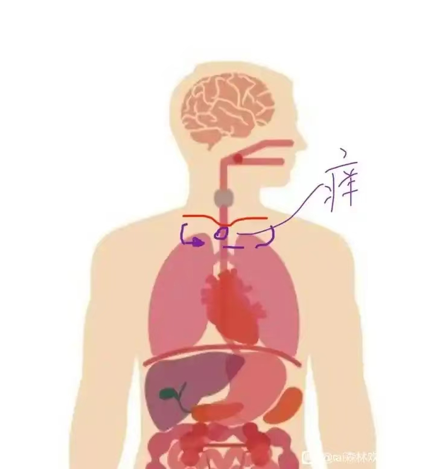
Taiguanglin
下一个问题，弗里德里希Z，打坐的时候身体痒，这是很正常的现象。如果你本来就有先天性的疾病，比如像支气管不好，我是先天性支气管本来就不好，虽然没到哮喘的程度。所以以前小时候一到冬天，就感冒咳嗽，后来打坐的时候每一次都会发作，像哮喘一样发作。就喘、咳嗽、吐痰，吐了一段痰之后才可以平静下来，然后就可以正常打坐。每次打坐都会发作，礼佛的时候也会发作，这都是先天性的缺陷带来。打坐到了一定境界之后，它就全修复好了，然后就没事了。
你说这个好像不是先天性的，而是身体的变化过程当中，逐渐改善的过程当中，有些地方会出现一些反应，多多少少都会有反应的，痒也是一种反应，疼也是一种反应。
所以我认为，这就是一种修复身体的良好的反应，所以没有必要过度地专注。你越是专注它，它的反应持续时间就更长，你不关心它，只要没有影响到你的正常生活，正常修行的话就不用管。放一段时间自己都想不起来了，这个事儿自己都不知不觉就过去了，然后身体就更舒服了。
容铭
2025-1-18
请问师父，我有痛风毛病，这两天打坐第二天犯了痛风，所以打坐会引起痛风加重吗？
Taiguanglin
容铭，我有痛风毛病，这两天打坐第二天犯了痛风，所以打坐会引起痛风加重吗？打坐不只是会让你痛风犯，而是以前感觉不疼的地方都会疼一遍。
所以你有没有这个觉悟，继续走修行的路。要么你怕的话就做一个普通人就可以了，你就念念佛。实在想学佛那就念念佛、学学理论，这样也可以。如果你想硬扛过这种苦难，这种疼痛，把身体修得更好一些，进入更高更深的禅定境界的话，那就忍一忍往前坚持。
每个人都这样的，修到一定程度就会出现各种疾病，以前想都没有想过的疾病也会出现，也有可能受外伤，我们修行人都把这当做是一个消业的过程来看，而不是因为比以前疼了我就不修了。
从佛菩萨的视角来看，如果你真有诚意、真有毅力的话，你会坚持，这种坚持的人，佛菩萨愿意帮。碰到一点困难或者有点小痛，他就马上觉得是不是修行不适合我，佛法不适合我。有些人去了寺院，说头疼，就觉得寺院不适合我，佛法不适合我修行，就放弃了，这种人佛菩萨也没有办法帮。你去寺院有各种不好的情况发生，那肯定是你的冤亲债主在作祟。你有这样正确的认知，好好修行，做功德回向，忏悔，发愿度他们，以这种正确的方式来化解，这样菩萨也可以帮你。
你说打坐了，然后不同的地方开始疼起来了，如果打坐姿势正确的情况下变得疼了，那肯定是消业的过程，肯定会更疼的，比以前不疼的时候还要疼。所以你有这个觉悟的话，你就好好修行，没有的话回去做一个普通人就行了，和周围很多人一样，该吃吃，该睡睡，痛了就吃药，大部分人都是这么过来的。所以你自己选一个路，如果你选择修行路的话，只能是强忍着过去。
dlfu
2025-2-10
2、双盘打坐这样久了会导致腿变形吗 ？
Taiguanglin
双盘打坐这样久了会导致腿变形吗？有些人会变，有些人不会变。姿势对的话是不会变的。姿势对的话腿应该是直的，不会变成什么O型腿，或者膝盖贴不到一起，不会出现这种事的，放心。
空空无我
2025-2-11
请教师父修行以后更容易失眠是什么原因呢？修行以后觉确实变少了，醒来也没有原来那么困了，但是晚上睡觉更容易失眠了，四点多才睡着，一失眠影响第二天早起打坐，整个人一天也不在状态，有时候也找不到失眠原因，失眠这也是修行牵出的业障吗？
Taiguanglin
空空无我，失眠，晚上久久睡不着……，每个人都会经历这样的阶段，因为修行的确会让睡眠减少。尤其是晚上打坐之后，会比较清醒，然后就睡不着。但是，你的修行还没有到完全可以不睡觉的程度，所以第二天还是有点疲劳，像谈不上非常疲劳。但是一整天都带着困意，其实很不爽的，所以怎么办？
我以前修行的那个阶段是，因为四点就得起来上早课，夜里正常的休息时间是九点到四点，最早刚在庙里的时候是十点到两点，就四个小时。后来宽裕了一点，九点到四点，应该有七个小时。
但是一打坐，九点开始，一打坐的话一直坐到一点，两点，三点，但是我最后一、两个小时都是躺着闭目，尽量不去想，尽量睡着。你只要闭着眼睛躺着不去想事儿，或者专注地念佛，这样的话，也能起到像睡觉一样的效果，第二天还是比较清醒的。如果你这个时间段因为睡不着，还一直在胡思乱想，一直在打妄想，这样的话第二天就比较困，我是有这样的体验的。
所以我建议你，目前状态下你四点才睡着，睡不着的时候就躺着一直念佛就行了。不要胡思乱想，一旦想事儿的话，第二天就疲劳。
S N Z Y L G
2025-2-12
2、入深静后对自己身体的细微感知变的灵敏，比如清楚的感知到现在在修复胃，但语言很难描述我是怎么知道的，但我很确定，这种感知是通过什么知道的？最终的目标身根触觉消失和深静中身体的感知更灵敏是否矛盾？
Taiguanglin
身体灵敏之后，然后整个修复完了就会消失。你只要知道这个理论，往这个方向正常修行就行，不要追求什么气感、修复的感觉。你要想追求的话，就会停留在那个境界里，没有办法再往上走。
你要知道身体的感受最后都会消失，然后就可以入定了，有这样的认知就行。我觉得你修得很好。
千湍盈泰
2025-2-12
师父法恩清凉 心清净下来，闻到檀香味的原因是哪个？1、修行人自身脏腑的味道（意味着脏腑的“物质”上起变化，这可能性小吧？） 2、护法神的味道（可为什么心静才能闻到？）3、鼻子在心静情况下产生一定“神通”，可闻到平时闻不到的味道（和天眼一个道理？） 我知道是“副产物”，不注重它，最近很少闻到了。
Taiguanglin
下一个问题，千湍盈泰，一般说修行人会有天人守护，天人来了就会有异香，这个香不是我们人间找得到的香味，有这样说法。你愿意这么想就这么想，无所谓。这种境界你不要刻意地去管，也不要去追求，追求的话你就会停留在那里，无法再往前走了，好不好。
我觉得都是好事儿，有所变化说明你的修行有进步；没有任何变化，反而修行可能就一直停留在那个境界。
茉莉
2025-2-13
Tai师父好！我23年开始打坐，也不算勤奋，有时间每天差不多坐半个小时左右。去年七月份一天感觉后背右边中间的位置，有个东西卡在那里，只后就一直伴随着。做饭的时候、躺着睡觉的时候、时不时就会出现。这段时间好点，感觉少了。每次打坐的时候，都有左半身顺畅自然，右半身干枯不畅，不光明的感觉，甚至觉得右边比左边缩小了一些。坐一段时间脖子不由的微微扭向右边。我不知道怎么回事，希望得到师父的开示_x0001_。
Taiguanglin
茉莉，身体上的那种感觉是很正常的，所有人打坐的时候，一开始都会有这样那样的感觉，你只是觉得一边有点不太对劲，是不是？这很正常，就坚持打坐磕头念佛自然会通的，通的时候也会很顺畅的。
如果是觉得长时间一直那样，一直没有通，你可以求佛菩萨加持，说不定就一下子给你弄通了，这个没什么大不了的。只要每天坚持打坐，时间慢慢增加，现在你说是半个小时左右，那每天多增加几分钟，一天一天稍微增加一点，这样不就可以了吗？
Tai贤心8055
2025-02-15 17:48
顶礼师父！降魔坐熬腿三个小时，但是两个半小时之后我觉得好像停止了修复，因为没啥反应了，只要我拍打双手、手臂、胸部，后背立刻就会鼓气发热。请问师父，下坐前的半小时可以拍打按摩上半部身体吗？对打通筋脉有没有帮助？_x000B_ 另外再问一下，熬腿超过三个小时之后反而没有什么疼痛感，如果继续坐下去会有修复作用吗？_x000B_ 祈求师父慈悲开示！
Taiguanglin
Tai贤心8055，我们打坐的目的，最后是要达到完全没有感觉的状态；不是麻木，而是身体放松健康，最后身体的感觉会慢慢消失。打坐专注的时候突然感知不到身体的存在了，这才是对的方向。你现在觉得身体没感觉了，就拍打一下，让它回到有感觉状态，这是反着来，不应该往这个方向努力。
你只要坐着三个小时，然后没什么感觉，而且你的心还是能静下来。你看上边回答的人，他们都是一个半小时，身体倒是能静下来，但是不好的情绪会发作，所以坐不下去了，烦躁的坐不下去。
你能继续静下来，没有升起那种不好的情绪，还能继续坐下来的话，那应该继续坚持，三个小时以后还是继续。我不知道你修的是什么法门，就算你是修念佛法门，那你就继续专注的念佛观佛。专注在这个点上，不要管身体，身体没有感觉是对的，不要故意碰它，没有感觉的时候说明已经基本修复的差不多了。
千湍盈泰
2025-2-15
师父法恩清凉。禅定感觉时间过的非常快，这是否有问题？心里觉得只过了十五分钟，睁眼一看表过了两三个小时，但并不是睡着了。
有时刚打完坐，感觉心脏好像被人清洗或擦拭，有点酸酸痒痒。之后心脏感觉很清爽。这个是好现象吧？
Taiguanglin
千湍盈泰，你说的对，时间过得很快，很正常。你说你能打坐四个小时，还能进入两三个小时很快过去的境界，那肉体上的感觉都是假象，反而是你情绪层面上的感觉。就是你本来不太好的情绪，隐藏着的情绪又灭了一点，所以有一种清爽感，如释重负的感觉。
善敬
2025-2-15
顶礼Tai师。睡觉前打坐，结果人就非常清醒，睡不着觉了。第二天四点钟就醒来。如果长期睡眠不足的话，会不会对心脏产生不好的影响。
Taiguanglin
善敬，是不是睡眠不足，这个是根据你白天的状态来判断的。你白天很清爽，虽然晚上只睡了三四个小时，但是白天什么事儿都没有，那就不是睡眠不足。睡眠不足是白天一直昏昏沉沉老想睡觉，这才算是睡眠不足，所以你根据这个来判断。以前也讲过了，睡觉前打坐一般是会变得越来越清醒，所以睡不着，这个很正常。
一般都是打坐到凌晨两三点再睡觉，睡到五六点，这样也算睡觉了，第二天还是很正常的过一天。
对心脏影响好不好？如果你是普通人的话，该睡觉就得睡觉。如果是修行人，你能靠打坐来代替睡觉的话，这个状态比睡觉还要好，所以不用担心这个问题。
Tai贤心8055
2025-03-10 18:10
问题2、上个月开始我把降魔坐从两小时增加到三小时以后，晚上通宵睡不着，坚持快一个月了睡眠不好依然如故没有改善，祈问师父：我是坚持熬腿三小时，不管睡眠质量，对打通筋脉快速一点？还是就熬腿两小时也是一样的效果呢？
Taiguanglin
第二个问题，晚上睡不着觉，打坐到一定程度睡眠会减少，很正常。关键是你在白天怎么样，白天要是一直昏昏沉沉，睡眠不足带来的那种精神不太好、很疲劳，这样的话你晚上还是早点儿打坐。晚上不吃饭的话，早点儿打坐，然后晚上十一点左右就睡吧。
按照道家专门打坐这些人的观点来看，最好的打坐时间是子时，也就是十一点到一点，有这么个说法，但这个是道家的说法。佛门对时间、对外边气场这些不关注的，只要你心静就可以了。
如果外边很乱的话，对初学来说心也很难静下来，这是肯定的。但是我们理论上是尽量不要去管外部的环境，自己能心静下来就好，所以不管时间上的问题。所以你觉得吧，如果晚上睡不着觉的话，晚上就早点打坐，七点打坐到九点、十点差不多了，然后收拾一下十一点睡觉，十一点、十二点就入睡，尽量好好睡，这样就好。
还有关于睡眠的想法你也得改变过来，我们很多人都对睡眠有强迫观念，好像不睡觉不行。但是你等修到一定程度之后，睡眠必然会减少，不睡觉也可以，你只要修到一定境界，差不多了就可以。基本到二禅开始，晚上可以连续打坐八个小时的时候，就不需要睡觉了，晚上打坐就可以了。
但是一般人这个想法改不过来，整天想着必须要睡觉，不睡觉就不舒服，他心里放不下这个。所以我的建议是这样的，晚上早点打坐，然后早点睡觉，十一点到十二点之间就开始睡觉。这样看看。
光影
2025-3-10
2、师父我现在血压高压一百多一点，低压七十，是不是双盘打坐后让血压比较低，在一个心率一般八十五左右，心率高低是不是跟平时的妄念有关，我感觉自己还是比较散乱，看手机玩手机比较多。
Taiguanglin
下一个问题，血压一百，低压七十，是比正常稍微低一点，但是对修行人来说也算是正常范围。心率八十五左右，妄念太多，你也没提问，感觉都在正常的数字范围，心率是稍微快一点。
按理说，如果是正常打坐到两个小时以上的话，心率就会降到六十左右或者七十以下，平时也是，打坐的时候会更少，这个是正常的。但是八十五的话就基本普通人差不多了，所以还得好好修行。
戴戴
2025-3-10
您好，师父。我去年开始百会总是感觉有根天线经常感觉气流很明显，在能量强一点的地方都会很强烈，今年七星连珠以来就更明显了，也不知道是什么情况 ？
Taiguanglin
戴戴，百汇总是感觉有根天线，经常感觉气流很明显，在能量强一点的地方都会很强烈。我们可以说，这个世界充满了各种信息，人的六根就是捕捉信息的感知能力；但是六根的感知能力是非常有限的；就像眼睛能看到的光谱是全体光谱中很少一段；耳朵能听的振动频率也有限制，太快的听不见，太弱的也听不见，都是这样的。
所以除了这六种感知能力之外，还有其他的感知能力才能感知到的一些信息，我们是感知不到的。
但是有些人灵敏到一定程度，他就会透过一些方法，能感受到我们六根之外的一些感知能力才能感受到的东西，这也是一种修行带来的，也有可能本身自己带的。因为我们修行进入禅定之后，以阳神状态来感知世界的话，这个感知是完全不一样。
你能感受到外面的气流，这也算是能感受到细微的风动吧。你说的气流如果是空气气流的话，那就是风动。空气中的流动的气体分子，你能感受到，是这个意思吧？如果不是的话，你能感受到紫外线，或者另一种感知，这都是很正常的现象，不是什么特别的现象。
所以只能说你可能是，不知道你现在怎么修行，是天生这样，还是经过修行之后这样，这只是进入禅定之前的一种表现而已。有些人有，有些人没有，有些人是在信众之间会有这种明显的，会出现一些不一样的感知能力。
有些人是已有的六根当中某一个觉知，有一个六根会变得非常灵敏。像有些人是可以闻味儿的。我周围就有人，他是练气功的，练到一定程度，鼻子变得非常灵敏，他可以靠闻气味判断别人身体上一些毛病，各种疾病，他都会靠气味来判断。
也有些人是听觉变得非常灵敏，导致晚上都睡不好觉。因为家里有好多虫子跑来跑去，他都能听得见，这对他来说反而造成不好的影响。所以对有些人是好事，有些人并不是什么好事，你自己好好判断。
但是在逻辑上是这样的，你的心静下来，然后开始进入阳神状态的那种禅定境界的时候，会出现和六根不一样的感知能力。这个很正常，所以不需要太大惊小怪。
憶莲
2025-3-10
顶礼师父。我每天早上打坐快五年了，从一小时到三个小时，每天换腿。除了早晚课，上午打太极，走步。最近发现左腿的静脉曲张鼓起来两个包，下坐活动一会儿就没了。还可以继续打坐吗？还有个问题是我不知道从什么时候开始脊柱侧弯，我该怎么办？感恩师父_x0001_。
Taiguanglin
憶莲，你现在是双盘还是单盘？单盘三个小时没有用的，到了三个小时身体就已经不是往好的方向发展了，而是开始往不好的方向发展。尤其像脊椎侧弯，还有骨盆倾斜，这些都是单盘三个小时以上就有可能会出现的事儿。所以我建议你还是双盘。
如果你现在是双盘的情况下，坚持了三个小时，还出现静脉曲张的这个问题，说明你的呼吸都没练好。还有就是打坐的时候，你的注意力还在散乱的境界，注意力没有调伏的情况下，身体还处在紧张的状态，然后就容易出现哪里淤堵。
所以你得先把注意力放到丹田，最好是思佛观佛，这是最好的方法；但是你做不到的话就先把注意力放到丹田，把气引到丹田里，这样下边这个鼓起来的东西也都会往回流，就不会再鼓包了。
肯定是要继续打坐的啊，但是要明确这个逻辑，理论和心法都要正确的情况下继续做。你说你打坐三、五年后开始脊椎侧弯，这是明显说明打坐姿势哪里有问题啊。你看我前面回答的那些问题，或者《坐禅2》《坐禅1》有关打坐姿势的问题，双盘，还有心法，这些都看一遍，看看你现在目前做的哪里不对了，错的都改过来就行了。
习气种子
淫欲
徐若木
2024-03-08 01:39
顶礼tai师，弟子有个困惑，最近打坐次数多了后，好像淫欲更重了，没有不良习惯，但是睡着了容易有些画面，睡着了遗精也没法控制，这个只能念经专注控制嘛？是不是我平常运动少了，确实打坐比运动多，平常也没法避免吃肉，工作中也是避免不了出差应酬吃饭，不过也离职了，想去那种素食餐厅上班了，不知道有没有人要，我其实对肉食也没一点兴趣，生活所迫又不得不奔波，看来还是福德太浅。
说个经历，去年找工作老是走错走到寺庙里，甚至一天遇到三次，连续几天每天这样，也可能江浙那边庙多，不过每次都没刻意去的，都是面试的地方就经过寺庙，或者导航出错就走到庙里，也挺巧，不过出家家人还无法接受的。
还有个就是有段时间半夜里很多杀人，或者求被杀的幻听，就是听到自己的声音说“杀了我吧”，有时候很苦恼，感觉自己疯了一样，不断有幻听，白天又好的
Taiguanglin
徐若木，修行到一定程度就会勾出那些习气种子，淫欲会发作的。十年前的书去看一下，我都说过了，会发作好几次的，每一次发作的时候会痛苦两三个星期，然后就过去了，那淫欲就明显减少了一段，这种事情会反复三四次的。这个是必须经历的过程，和你吃肉不吃肉都没啥关系。你控制不了的，遗精控制不了，你得到了初禅，过了百日筑基才能彻底灭掉遗精这个事儿，炼精化气做到了才会消失。去听前面“初禅”那个音频吧。
烦躁
链接爱
2024-3-26
师父！1、双盘1小时+，最近几次下坐不是因为疼，而是因为很烦，不看时间还好，一看时间就感觉坐不住了。这种是什么问题，平时应该如何有针对的解决？
Taiguanglin
链接爱，双盘一个小时，然后心烦起来，这很正常。因为人本来就有这种情绪的，你修到一定程度，这个情绪就翻出来了，烦躁得不行，然后就起来。一开始都有这个现象，人人都一样的，所以不需要（担心），你只要坚持到实在坚持不下去了，那就起来就可以了，第二天再来。没有什么特别针对的方法，就是坚持，每天坚持修行这就可以了。
我也一样，我以前也是有段时间是坐到两三个小时，四个小时开始就烦躁得不行，然后就起来走走，可能第二天再来。有时候就烦躁得有点怎么说呢，有点像抓狂的人，因为不让出去，有些时候你想起来，但是那个环境还不许你起来乱走，那基本上有点开始抓狂了。
七生
2024-5-20
4、自从22年开始修观丹田法门，好像里面的东西一下子翻滚出来，出现了和师父在十年前书说的疯狂乱想一样，师父您是不是看了一部电影之后这些妄想就消失了呀？自己也尝试过很多方法，有好一点了，但到现在时不时脑子会自己跳出来，有时都被惊到了。所以想问一下师父如何快速走出来？也两年时间了。
Taiguanglin
脑子里出现疯狂的想法都很正常。我是看了一部电影之后就自己消失了，可以说妄想也是有一个量的，到了某个时间点量都消耗完了，它就会减少，而我们念经、念咒就是加速这个妄想的过程。所以前面你有乱七八糟的妄想、淫欲、性幻想都很正常的，不需要管，正常修行就行。
我要灭我
2024-08-13 10:31
1、腿可以双盘，只是一放上去就会起情绪，很烦，那种情绪难以压制，只能单盘了。
Taiguanglin
我要灭我，打坐双盘就很烦情绪起来。你有磕头吗？每天坚持磕头做运动，可以很好的对治，前期的情绪基本都可以用磕头来对治一下。磕到全浑身出汗，半个小时以上，一个小时左右，那一天第二天到磕头为止这个时间，基本上不会有什么太大的不好情绪产生的，坚持每天这样磕，然后再打坐，这样情绪还是能压得住的。
说用磕头灭情绪有点难，彻底灭是难的，但是情绪重的人像你这种打坐就开始烦躁的人，这种人用磕头是可以一定程度上灭情绪，直到你可以打坐的，努力一下就行。
加減乘除
2024-12-12
顶礼Tai师父 ！弟子，四十七岁，男，已戒肉十年（因家人强烈反对，鸡蛋未能戒除）。去年开始，非常有幸能学习您的大乘佛法，《坐禅1》和《坐禅2》音频和书籍，一直在听看，感谢佛菩萨的指引！平时外企上班，比较忙，每周跑步两到三次，晚上回家静坐，腿部僵硬，无法双盘，目前是散盘坐姿（有时垂腿静坐，任督二脉已打通，有气感，身体在慢慢变好），大概能坐八十分钟左右。静坐时，观想或默念阿弥陀佛（思佛只能偶尔可以思一会儿），当然脑子里妄想很多，最近经常感觉坐到最后，内心开始莫名烦躁，就坐不下去了，非常想起来，烦请师父指点！
Taiguanglin
加减乘除，打坐到一定程度就开始升起这种烦躁的情绪，这个很正常，这说明你修的对了。它就是把这个潜藏的不好的情绪给勾出来，不光是情绪，还有淫欲，不好的习气，都会被勾出来的。
所以你只要按照正常的，现在目前做的这个程度继续坚持做就行，每天坚持这个修行的量，打坐的时候，烦躁的实在坚持不下去了，就停，就可以休息了，一天能坚持两座就可以，就不错了。每次都可以坚持到，不管是身体痛的无法坚持，还是心里烦躁的没法坚持，都无所谓，该停的时候停一下。然后再接着下一步打坐。
一般都是，在家人对修行的热忱程度比出家人有时候高。出家人一般觉得时间很多嘛，都出家了，肯定是到死为止，有的是时间修行，有这样的想法就不那么精进。但是有些在家人反而知道，因为时间不够，所以更加精进的修行，所以我还是很赞叹你这种坚持的劲儿的。
Fun09
2025-01-15 12:43
顶礼Tai师父，请问天天打坐熬疼到让自己大哭，情绪翻腾出来，才能感知到众生的苦，可以吗？不然平时都容易贡高我慢，感知不到众生的苦。
Taiguanglin
Fun09，打坐熬腿到哭，情绪翻腾，你是疼哭了呢，还是因为情绪，有悲心起来的哭？你看《楞严经》里也讲过，叫悲魔入体，它说是悲魔入体。如果你把这种都算作好的状态来看的话，那就错了。如果情绪翻腾那就是情绪翻腾，那就是拿出来灭一段，所以过一段时间应该回归到正常状态，不要把它当做一种好的状态来看。
情绪过于丰富的人，从我们修行的角度来说，他是比较境界低的。但是一般情况下，自己还感知不到，因为情绪都是潜藏在里边，只有遇到事情的时候才会翻腾出来。那么打坐也的确可以把一些情绪翻出来，如果你打坐的时候会这种莫名的感到悲伤，这很正常。
但是你要知道，这都是在消灭情绪的过程当中，并不是什么好事。当然是修行的过程，该经历的，那算是好事。但是情绪这个问题，它不是什么正确的，你不要认为情绪翻腾让自己大哭是什么圣解，《楞严经》里所说的圣解，这么认为是不行的。
Tai贤心8055
2025-03-10 18:10
问题4、最近半个月来打坐中会莫明其妙的出现烦躁情绪，打坐中我都是在默读《地藏经》，也没怎么打文字妄想啊，这个烦躁情绪从哪里来的呢？降服烦躁情绪真的是比熬腿疼更难多了。
Taiguanglin
打坐翻出情绪，这才算是正常的。你打坐以正常的、如法的、用正确的心法来修，才会有这样的效果。因为情绪对普通人来说是最里边的，在凡夫阶段是不可能翻出分别心这种程度，那是不太可能的。
在凡夫的阶段我们能感受到的就是情绪。前面有个阶段文字妄想很炽盛；过了之后就注意力很炽盛，就是坐着注意力老散乱，心一直跳来跳去，一会听到这个，一会想看那个，身体也想动来动去，有这么一个阶段。
然后就开始翻情绪，这是修行过程中必然要经历的；而且是正确的修行之下才有的。很多人修观法很难翻出情绪来，所以他们也感受不到情绪，就不知道情绪在哪里。很多人修了很多年，十年、二十年，打坐能达到三四个小时，但是他都不知道情绪在人的哪里，这样的人一般都是一直修观法的，在第一本书上也说过了。
你要是翻出情绪了，说明你的修行已经进入正轨了，这是对的。这个过程可能比前面的翻文字妄想、翻注意力时间要长一些。可能要几个月，甚至几年，烦躁情绪会隔一段时间出一点。有那么一两个月，翻出来之后，然后几个月或半年时间就很舒服了，好像没有情绪了，打坐的时间也会延长。
但是又过一段时间，又翻出一些。有时候是烦躁；还有一种莫名的悲伤感；还会有喜悦感；各种情绪都会翻出来。有一种幸福感、快乐感，很多人误以为这是法喜充满。
第一本书里讲过，情绪从前面的不安开始，最后羡慕嫉妒恨，一连串的情绪变化都有。中间就这么一个快乐的感觉，其实从佛菩萨的角度来看，这个快乐的感觉也是痛苦；因为它变了，就会变成痛苦，所以这个情绪也会被翻出来。所以出现各种情绪，你都不要把它当作是好的理解，这都是要你灭的东西；正确是正确，但它是要逐渐灭的——用这个认知就可以了。
实际上情绪翻出来的确比身体痛还难，因为身体痛不是意识层面的；不是意识的话，就可以靠意识用意志力来坚持，强迫自己肉身坚持坐着；但是情绪本身就是心里翻出来的。所以有一种莫名的感觉，很躁动，没有办法坐下来，都有这么个过程。你只要坚持到这个情绪出来之后，实在坚持不下去了，那就可以休息了。
不要想着一下就吃成胖子，不可能的。我觉得你的进步还是很快的，才一两年就能翻出情绪来，这很不错了，加油。
白月木小缘起
2025-3-10
阿弥陀佛，顶礼师父。感恩师父的指导，现在莲花坐终于也能顺利坐到一个多小时了。但这段时间不管是降魔坐还是莲花坐，到了一个小时后从意识下沉中的状态里突然就有种很强烈的焦躁感，心跳加速起来，各种妄想淫念什么的也都起来了。有几次是感觉身体要消失但内心很恐惧就睁开眼了。然后靠心念佛号或者《心经》的句子告诉自己这些都是虚妄的坚持一下，但觉受强烈的时候基本顶不住。
想补充一下，用的是师父说的观佛和思佛的方法，感觉很好，一开始淡淡地很容易静下来。但觉受起来后只能更用力地念佛号或者《心经》去压制，顶不住了就起坐了。师父那边有什么好的建议吗？麻烦师父了。
Taiguanglin
白月木小缘起，你已经做得很好了，修行就是这么个过程。一旦掌握好的方法，正确的方法修行，肯定会把里边不好的东西给翻出来。
刚刚回答贴吧问题的时候也说过，他是因为烦躁的情绪升起来，人家是年纪比较大的人，烦躁情绪升起来就很难坚持，比腿疼还难坚持，这个很正常，这样才算是正常的修行。
你每次发作之后呢，每天坚持的话，这个发作的强度会越来越少越来越少。这的确是在消灭的过程，所以不用担心，这已经在正确的路上了，各种不好的妄念都升起来。人家是不好的情绪升起来，你还有妄想、淫欲、恐惧的感觉，这些都是情绪之下的东西。
还得多努力，坚持就行，没有什么大不了的，修行都是这么过来的，每个人都有这样的过程。不可能一两年就马上有好的结果，这是不太可能的，加油吧。
云
2025-3-11
顶礼师父！弟子打坐到一定时间老想看时间，明明还可以熬下去，却往往提前结束打坐。怎样对治这种毛病呢？
Taiguanglin
云，打坐到一定时间老想看时间，这个也是正常现象，就是你好动的习气开始升起来了，就坐不住了。身体倒是没问题，但是你的习气，意识层面上好动的习气升起来。所以前面讲过，要调伏好动的习气的方法就是磕头，动到一定程度习气就开始减少了，然后就会坐得住了，平时多磕头就可以了。
这个过程都是比较漫长的，人毕竟活了这么长时间，别说上辈子怎么样，单是这辈子就活了几十年，一直就都在动，要么睡觉，要么不睡的情况下就一直动着。
人好动的习气非常大，没有办法，你别指望一天打坐一两个小时就把好动的习气一下子都调服了，这个是很难做到。都有一个漫长的修行过程，不用着急，你想看时间你就看。一个是磕头，一个是打坐，你可以给自己定一个时间，到了那个时间才起来，之前就坚持，咬着牙坚持，这样就可以了，看时间没有关系的。
食欲
W权
2024-4-26
2、修行后食欲变得旺盛，以前吃不下的东西也喜欢吃了，这当中除了身体修复变好的缘故，跟饿鬼道众生有关系吗？还有现在吃播盛行，是什么缘故？
Taiguanglin
修行后食欲变得旺盛，这个很正常。不光食欲会变得旺盛，淫欲也会变得旺盛，因为你身体变好了，各种欲望都会起来。
修行之后身体变好的缘故还跟饿鬼道的众生有关系，这个不好说，正常情况下应该是没有关系的。除非下边派出来的你的冤亲债主，这个饿鬼道众生有很强的食欲，影响了你的欲望，所以你也跟着一起吃。
不过你的修行到了一定程度，是可以感知到有没有冤亲债主的，哪怕是初学，一般刚开始修行不久就可能会有冤亲债主上来找，所以自己大概率还是能感受到有没有的。
现在吃播盛行是什么缘故？人有一种观察别人的欲望，有时候别人帮你做了一些事情，你就能感到满足，这也是人的一种心理。有些人是减肥的时候看不得别人吃东西，但是有些人偏偏反过来，自己不吃，但是看着别人吃就能感受一种代替的满足感，也有这种心理需求，所以吃播盛行，毕竟有人看。
但是我个人不建议花时间去做这些事情，或者花时间去看，反正看是个人自由，但是我是不建议把这个当作职业的，毕竟这是教别人不太好的事情，不是什么好事。
呵难
2024-04-27 10:22
师父您说身体修复后不单食欲，连淫欲也会旺盛吗？但弟子目前只有食欲变旺盛，淫欲几乎感觉没有，其它欲望也越来越少，这什么原因？
Taiguanglin
呵难，我说的身体修复，食欲和淫欲旺盛的这种说法，都是泛泛而谈的，只能说七八成、八九成的普通人是这样，很多个例不是按照这个来的。修行境界的提升速度也好、个人的障碍也好，都不是按照个人情况来说的。
你的这种个人情况，觉得淫欲没有那么强烈了，这就是好现象。因为淫欲在下面，然后才是食欲，如果你淫欲灭得差不多了所以淫欲不起来，那就是好事儿。
先拜众生再拜佛
23-05-2024
末学修行一年多，双盘目前在100分钟，三个月前开始把每日磕大头500列入功课后(大约一星期只休息一、两天)，体脂迅速下降，感觉身体状态跟体能又提升一个档次，需要睡眠时间更少了（谢谢师父的传法）。
日中一食跟肉边菜也一年多，平时也是自然腹式呼吸，尽管有时中午那餐吃的量甚至超过以前三餐总量也不会胖；但几个月一次跟同事聚餐吃自助餐，因为食量变大，胃的消化功能变好，又不用花钱(可报公司帐)，就拼命吃，当下觉得很过瘾，但吃完后，又想到师父说过人生总量定律，一个人一生的饮食有个总量，就觉得后悔，也后悔自己被舌根、食欲以及不用花钱的贪欲所牵着走。
师父也说过当修行到一个程度后，身体变轻，整个都清净下来，食欲自然减少，但如果修行还没到那个程度，还有没有什么方式让自己能尽量保持理智？因为明明开始修行后不吃太多也不会饥饿，却就是贪吃，今年满四十岁。
Taiguanglin
先拜众生再拜佛，食欲重，人人都这样。灭完淫欲之后，下一个灭的就是食欲。人人都有食欲，不需要给自己过多压力。像你这样吃多了后悔，然后有一段时间克制自己，又放纵一次吃很多，再后悔，再克制一段时间，都是这么过来的。不需要给自己过多的压力，以身体承受的程度，还有你心里要求自己达到什么程度，量力而行。你已经做得很好了，不需要再给自己增加更多的烦恼，已经四十岁了，按照目前这种修行，可能五十岁的时候就相当不错了。
嗡哈哈哈哈火吽帕
2024-11-13 19:10
顶礼师父
弟子感觉很久以来对食欲难以控制，一进入餐厅吃饭，尤其是自助餐厅这类性质的食堂，就很快将自己吃撑，反复多次想控制却又忍不住，感觉自己对食物的贪欲有些严重，这样靠多念佛能减少食欲吗？想达到师父当初那样一天只吃一顿饭的状态。
感恩师父开示
Taiguanglin
嗡哈哈哈哈火吽帕，食欲强烈，怎么控制？这个有可能以前是从饿鬼道来的吧。怎么控制？食欲比淫欲出现的更早，比淫欲更深，所以灭起来比淫欲要难。所以并不是你想简单的一个方法就能把食欲给灭了，这个不太可能的。
以前也讲过灭食欲的次第。先戒肉，尽量少吃主食，然后晚饭用水果代替，然后再不吃晚饭，然后不吃早饭，到最后只吃中午一顿，这个有过程，每个过程至少要半年以上，让身体适应才行。
你现在说的就是控制不了自己。在寺院里修行的时候，大家打坐的时候有些人食欲强烈，有个办法，就是吃饭前先观想。观想什么呢？观想自己喜欢吃的美味的东西，想像你把它吃进去，一边想像，一边吞咽口水，想像口水就是你想吃的、你喜欢吃的那个美味食物，然后吃完就饱了。你这样观想，想像着，然后往下吞咽，五分钟到十分钟，不一定非要打坐，快到吃饭时间了，你每次吃饭前就这样想像五分钟十分钟左右，这样静静的想像我在吃东西，然后吞口水，觉得自己要饱了。这样的话可以很大程度上压住你的那个，可以说是一种欺骗大脑，让你觉得不那么饿，然后就可以减少饭量。
你试试看，每一个方法都不是一做马上就会起效的，你得长时间的练习，可能一个月两个月这样练习，慢慢就会感觉吃饭越来越少。而且光靠想像也能让自己饱，身体并不是你想像的需要那么多的能量，实际上妄想少的话食欲很少，也都没有关系的。好了。
醉日
2024-12-11 13:59
师父，喜欢狂吃怎么解决？肉戒了没啥压力，我就是暴饮暴食。心情不好就吃，心情好也吃，吃的多这个行为，戒不掉。我主要是喜欢咀嚼。
Taiguanglin
醉日，喜欢吃，吃也是一种习气，压力大也会吃，开心了也会吃，总得吃点什么。在第二本书里讲了，吃是最初出现的贪欲，是把外边的某些东西放进自己身体里，这是种贪欲的行为。有了这个之后就有了私有资产这个说法，所以这是最底层的一种贪欲，对物质占为己有的贪欲，怎么办呢，还是多念咒吧，狂念大悲咒。
因为绝大部分人都是贪吃的，不只是你一个人，绝大部分人，真的能控制嘴的人是相对少数的，绝大部分都是贪吃的。
除了在寺院里待的那些和尚之外，我离开寺院之后见到的人，很少有人说他没有什么特别喜欢吃的东西。绝大部分人都说他喜欢吃什么东西、他讨厌吃什么东西，有喜欢、有讨厌，这种都很正常，有些时候饭桌上经常说这个好吃、那个不好吃，说实话刚出来的时候很不适应。
我们在寺院里吃饭，从来不说这个好吃不好吃，也不会有人问。哪怕不好吃，你就凑合吃就完了，大家都是这种心态。也不拿这个吃东西，当做一个事儿来看，就是为了活嘛，有人做了，那就一起吃顿饭就完了。吃完该休息休息，该做事做事，不拿吃东西当做什么太大的乐趣，或者一件很大的事情来想。
但是现实里，出来之后发现，社会上的绝大部分人都把吃饭当做很大的事，在饭桌上强调这个好吃、那个不好吃，还有什么饭桌礼仪，什么有人吃饭吧唧嘴，反正各种稀奇古怪的鸡毛蒜皮的事，在我们这些修行人看来，什么都不算的事，他们就把它当做事来说。
我觉得你喜欢狂吃这个问题，也是作为普通人来说，人人都有的问题，不要拿这个给自己太多的压力。
肉戒了没啥压力，就是暴饮暴食，那我的建议是你给自己定个量，不管是用金钱来定，还是用食物的量来定。你就给自己定个量，一天我就吃这么多，每天把这个量都算好了，做成一包一包的。就像一天吃多少药，医院里给开的小药盒一样，把一天的零食量都算好，今天就吃这些零食，为了分配合理，每天吃多少，然后再把它分成几块，上午吃多少，中午吃多少，晚上吃多少都分配好，不要上午把晚上的份都给吃了，然后晚上又忍不了，这样就不太好了。
最后还是靠你自己这种意志力来一点一点控制，把大的任务先拆解开成一些小的任务，一点一点开始做就可以了，好不好。
醉日
2024-12-14 08:43
师父，我真的想不通暴饮暴食的人，是什么因果造成的。如果说没有福气，那怎么有这么大的口福？吃这么多这么好的东西？如果说有口福，为什么这口福， 带来的是痛苦和疾病呢？还有肥胖。
我基本从小到大都暴饮暴食，暴饮暴食，都是我一个饮食习惯了。
Taiguanglin
醉日，暴饮暴食是贪念，食欲是最底层的贪念，对外界物体，外物的一种贪欲、占有欲。贪欲发展到一定程度就会变成占有欲。在饮食这个情况还是一种贪欲，想往自己身体里使劲塞东西，这种占有东西的欲望，只能靠修行来慢慢灭掉，没有短期内直接灭的方法。
你看有些人为了减少食欲，还截掉一段胃，做个手术，把胃切掉一半，然后再缝上，有这样的手术。说明这些人肯定是做了很多努力之后，发现自己的嘴都控制不了，最后想到的办法就是截去一段胃。
这个暴饮暴食不是很特殊的问题，是很多人都有的问题。尤其是有些人情绪上有波动，不管是好的波动或不好的波动，他都想去暴饮暴食。开心了就想暴饮暴食来庆祝一下，不开心了就想暴饮暴食来缓解一下，总是想用占有欲来满足一些其他地方的不足之处，这只能是靠修行来慢慢灭。
就像戒肉也要五到十年一样，你想改变暴饮暴食的习气，没个五年是不成的。每天精进打坐磕头念佛，一开始你不能控制，不能减少饮食量的话，那就多磕头来消耗掉这些能量，这样就可以了。
Fun09
2025-01-17 12:09
顶礼Tai师父，请问发现自己一天到晚都在吃上花了很多时间，不是在吃，就是在准备吃，想着吃，消化吃进去的食物，而且吃得挺多，一天吃一顿怕饿了。贪吃的习气好重呀，吃得多好像也更傻更笨反应更慢呢？
Taiguanglin
Fun09，你这里也没有提问题。吃的多那就多运动吧，你就想着吃多少量就得运动多少，你给自己算一下。如果你吃的多了，就必须得运动，一天运动多长时间，这么算你就会觉得还是少吃点比较好。
人都有好吃的习气，吃比淫欲更重，吃是淫欲之前出现的。所以吃这个习气更难戒，比淫欲还难戒，所以贪吃也很正常。只要不是病态的，达到那种肥胖的状态的话，那还可以了。
多修行的话，过个五年、十年，你的食欲也会自己下来的。前提是你得有要戒食欲的意愿，这个愿望你得有。
而且你要相信，天人是不吃东西的，虽然佛经里说天人“思食”，就脑子里想一下，就等于满足了。但从我们视角看的话，那就是不吃东西，想一下就满足，那就不能算是吃了。
Emma 葉二萌
2025-2-12
感恩师父传法_x0001_。看完师父的书之后，豁然开朗_x0001_并且已经成功外传_x0001_ 弟子从2020年中开始戒肉，中途反复过几次，现在已经不吃肉，但受限于家庭条件，还在吃锅边菜，喝点肉汤。遇到过几次梦考，最近的一次是把肉放进嘴里觉得不对劲就醒了。现在发现自己有些重口味，爱吃咸菜、辣条。请问师父，这种食欲有什么好方法灭掉吗？
Taiguanglin
Emma，你现在是戒肉的阶段，肉彻底戒了，下一个是戒淫，然后才是戒食；所以不要想着太快，在初期阶段靠吃来缓解一些压力，这很正常。
你修行到了一定程度，或者比较痛苦了，总得有一些释放的地方。靠吃来缓解压力反而是属于影响最少的，所以我觉得你爱吃重口味没什么大不了的，你目前的阶段爱吃重口味比别的事好一些。
有些人是压力大了，就要想出去蹦个迪什么的，这样反而更容易造业。你吃点咸菜，这都无所谓，我觉得没什么大不了的。
你身体上的修为到了，身体会自然告诉你你要吃什么。身体到了那个境界的话，你想吃什么，你自己脑子里会升起的。目前你的境界好像没到这个程度，就是纯靠自己习气来推动，所以靠这个来释放、缓解一些压力很正常，没有什么大不了的。
你要想彻底灭掉食欲，可能二十年修为都不够，所以慢慢来。
伤病与修复
伤病修复
旧伤/软骨修复
Yjincheng
2024-02-13 14:57
顶礼师父！弟子女，打坐两年多，降魔能撑到90分钟，腹式呼吸、磕大头、念经都在坚持做，但是身上一堆旧伤，腿上有伤，腰上有伤。左半身从小腿一直疼到颈部，时好时坏，疼到想死，不管怎样我都不会放弃修行，只是想请问师父，像我这样坚持下去会有好转吗？
哎，我的决心其实我自己很清楚，就算希望为零我也会坚持下去，至死不渝，向您提问也是图个心里安慰。
Taiguanglin
Yjincheng，各种伤，一堆旧伤，腿上有伤，腰上有伤，左半身从小腿一直疼到颈部……。后天的伤都是可以治疗的，这个没有问题，你只要打坐达到三个小时以上的时候，基本全给你治过来，没有问题，这个肯定没有问题。
先天性疾病，我先天性支气管不好，这个按理说，现在医学来说，支气管不好是治不了的，像电影里，经常一犯病的话，就拿个东西往这一喷那种。我没到那个程度，但是一到秋冬季一直感冒咳嗽，但是我就修行修行就自己就好了。有一段时间它会发作，有一段时间这个病要彻底好之前，有那么半年时间是它一直发作。怎么个发作法，就是每天打坐和礼佛的时候发作，每天那样。
这种先天性疾病，就是每天修行的时候，它肯定会发作。打坐的时候就发作，呼吸很困难，那个时候就有点难受，但是就坚持过去。最讨厌的是在礼佛唱佛的时候发作，咳嗽的时候还得硬憋着，你不能影响别人，就很痛苦的，但是经过半年这么硬憋着，之后就过去了。
任何先天性疾病，只要没把你弄到不能打坐，不能修行的程度，都可以靠修行消灭掉，没有关系的，坚持修行就可以。
首罗
2024-02-15 20:45
Tai师父好：
我去年髋关节没彻底打开，就上双盘了，日积月累硬熬把半月板搞伤了，不能双盘了，已经十个月了，请问师父有什么方法能让膝盖恢复快点嘛，就算最慢大概需要多久呢，我现在可以正常走路，我在少量吃氨糖软骨素，磕大头膝盖嘎嘣响里面的筋来回跳，我的身体底子不好，体弱多病，不过这两年好多了，基本不生病了，平时每天吃水果蔬菜地瓜柠檬水，今天吃了3个苹果4个橘子磕了点瓜子一块饼干，今天听师父音频说妄想少了打游戏会很累，我很久没打游戏了，今天玩了两个小时英雄联盟，感觉心跳比平时快一倍，真的太累了感觉饿了就吃了块饼干，不打游戏的话应该也不用吃饼干，阿弥陀佛。
Taiguanglin
首罗，打坐伤到半月板。这种半月板啊，软骨啊，一旦受伤，靠自己是基本上恢复不了的。因为人的骨头，软骨啊，只能是不断的磨损，要想恢复，至少要双盘打坐一个半小时到两个小时，到了这个程度才会开始恢复。
但是你已经受伤了，就盘不上这么长时间，那我的建议是，只能求佛菩萨，那怎么求，以前也说过啦。先做功德再求，先做功德，求的时候你也可以求佛菩萨直接把你治好，也可以求告诉你一个配方、方法怎么治，你跟他问吧，好不好。这个我也实在是，短时间内真的没办法，好吧，对不起啊。
壬寅年寅月
19-02-2024
请问各位师兄，本来莲花或者降魔坐都差不多的，左腿摔了一跤受伤之后（痊愈），莲花坐一直坐不太久，有没有什么办法打通气血瘀堵的？
Taiguanglin
膝盖受伤、别的地方受伤的，我说过，你如果用常规的治疗已经没有办法的，那只能靠什么打坐的方式修复，但是又太疼了，坚持不了那么久。那就是放生、做功德，然后再求佛菩萨，让佛菩萨帮你修。你得先做够足够的功德，你不要带什么侥幸心理，这个只能这么办了哈。
A北京居士法宝
2024-03-08 16:03
顶礼tai 师父！我是看了您十年前开示，才开始有系统性的实修。但是在打坐上，我没有按照您说的慢慢来，短时间内强行突破到90分钟。结果造成左膝盖受伤，至今还没有完全恢复正常。师父啊，除了打坐还有没有其他方法进入禅定境界？亦或是活着干、死了算，继续打坐？望师父开示！
Taiguanglin
A北京居士法宝，现在已经受伤的，你要是按照正常的医学方式，不管是中医还是西医，治疗不行的话，那最后还有一个办法，就是请佛菩萨帮忙，这个得用功德来兑换的。前面已经都讲过，先有发愿，然后再做功德，然后请佛菩萨帮你治疗。如果他们愿意出手的话，佛菩萨真出手的话，哪怕是更重的伤也有可能治过来的，所以还是得坚持修行就行。
我个人认为这种伤啊，你只要诚意到了，真的诚意到了，发愿也到了，功德也到了，都能修过来，都能治过来，哪怕是末期癌症的人也有活过来的。所以不用太在意，你就坚持去做，坚持就行。
贴吧用户_5SVAVAS
2024-03-24 16:19
顶礼太师父！问一个关于禅定修复色身的问题：前几年出过一次意外事故，右手腕被玻璃割伤，后到医院做手术，右手手指能活动但伸不直，医生说有几根肌腱和神经被玻璃割断了，很难恢复了。二三四禅能修复吗？
补充问一下：手腕被割伤，肌腱和神经受损，如果没有修复，对我下一世的身体有影响吗？下一世会不会手有残疾？
Taiguanglin
贴吧用户_5SVAVAS，“手腕被割伤，神经肌腱受损”，你要说理论上，能不能靠修行修复，肯定是可以的，理论上是可以修的，就看你能修得怎么样。
还有发愿做功德，拿功德来兑换这种无法修复的伤害，伤害需要拿功德来兑换的。因为这种伤害是你的业障业报，它是注定要带着走一生的是吧。你受了这种伤，可能正常人是一辈子都恢复不了的，这就是你这一生写进命运剧本里的业报。所以你想改变的话，就得拿大量的功德来兑换。
这种障碍能不能传到下一世？应该不会，你都受完了，它要是到下辈子还能传的话，那说明你这个业报很重，靠一世的受报还不够，还得传到下一世。但是如果你现在修行了，那大概率还是能消掉相当大的业报，下辈子还相信是一个完人吧，完整的人。
偶米大
2024-05-22 19:39
顶礼师父！左边腰肌劳损，是通过降魔坐还是磕大头修复？
Taiguanglin
偶米大，左边腰肌劳损，通过降魔坐还是磕头修复？肌肉一般只要打坐能两个小时基本都会好的，降魔坐和莲花坐要换着来，每天上午两个小时，晚上两个小时，要是没有那么长时间，一天降魔坐，第二天莲花坐这样，能坚持两个小时就往两个小时努力。这种肌肉问题只要能坚持两个小时以上，最长三个月基本都能恢复过来。
Winnie
25-05-2024
Tai师父好。最近骑车摔伤了膝盖，没伤到骨头，就说里面软组织有受伤，已经过了十几天了，都结痂了基本不痛了了，昨天试着双盘十几分钟，还好不痛。请问这样能双盘吧？一般膝盖受伤休息多久可以再次双盘，感恩师父。
Taiguanglin
Winnie，只要不是骨头受伤，都可以打坐，不需要什么特别的休息。打坐的时候，除非是屁股受伤了，刚好压到伤口坐不住，那个没办法。如果不是这种特别严重，刚好伤到打坐时候的那个部位，应该可以打坐的，没什么关系，而且打坐的时候更容易恢复。
甚至你会静静地感受到这个伤口比平时更疼，坐下来把心静下来好好感受一下，会觉得更疼，这个时候反而更快的修复，所以我还是建议你更多的打坐。
偶米大
2024-07-18 18:50
顶礼师父！
目前双盘稳定在两小时（当然是硬熬）将近三个月，磕大头平均三百个每天，左侧腰肌劳损的老毛病还没有得到改善，请师父慈悲开示。
Taiguanglin
偶米大，你现在多大年纪了，还有吃的东西怎么样？肯定是不吃肉的吧，我相信你是不吃肉的。还有主食尽量少吃，先把吃的弄的清净，弄的干净一些，多吃蔬菜水果，尽量少吃主食，不吃肉，还有油腻的东西也少吃。然后才是打坐的时间，往三个小时方向努力，这样就够了。
磕头最好是一天能坚持两个小时，三百个最多也就一个小时，可能一个小时磕的快的话，能磕四圈，四百多个。如果你年轻的话，最好能磕一个半小时到两个小时，就是六圈或者七圈，一个半小时比较好。如果你年纪太大的话，就不要太强求，也不要着急达到什么境界。
虔诚的行者
2024-07-19 19:28
2、按照之前师父开示的方法，双盘两小时的时候观想脚踝筋舒展开，减少杂念，里面的脚踝还是疼，可能我做的还是不够好，但整个脚疼时一直处于发热的状态，是否这种疼就是修复的疼，必须熬过去？一定的量修复好了之后，后面才能不疼？
Taiguanglin
还有发热的状态，发热是一种治疗的过程，有时候被打了之后会红肿一段时间，其实就是一种修复的过程，血液都会更多的流到那个地方，会慢慢修复。打坐的时候，你哪里疼观哪里，哪里疼你就把注意力先放到那里，感受那个痛楚，一点点感受的话，慢慢你会觉得疼痛感会一点一点消散，一般都是这样，也可以加速这种疼痛恢复，你的膝盖也一样。
王闯
2024-11-11
顶礼Tai师。弟子原来几年前得过一次滑膜炎。之后没有再犯。最近打坐时好像开始恢复了。四十分钟的时候膝盖内侧疼的厉害。大概十分钟会好，可是这种现象只出现两次，之后就没有了。是膝盖彻底恢复了吗。感恩太师父。
Taiguanglin
王闯，滑膜炎，就是它会疼一段时间，骨头也会啊，四十分钟的时候，膝盖内侧疼的厉害，疼着疼着过了一段时间它不疼了，然后下一次打坐的时候，时间差不多它又会疼，但是这个疼的程度比上一次会减轻一点，这样反复地练反复地练，疼的程度会越来越小越来越小，然后你想彻底的把它修复好的话，骨头至少得两个小时吧，一个半小时之后开始出现骨头彻底修复的那种变化。
如果你能打坐三个小时以上的话，炼精化气做到的话，骨头马上彻底都给改过来了，所以坚持打坐就行。磕头呢，稍微悠着点，因为骨头受伤的人，尤其是膝盖骨头受伤的话，磕头如果太猛就有点影响，所以稍微悠着点，少磕点，几十个几十个开始啊，试试看，然后再打坐，主要是放打坐上，还有腹式呼吸一定要练好。好了。
🖖
2024-11-15
师父，我先问下纵欲过度好多年，现在搞得男性功能障碍了 ，现在开始学打坐。
问题 1、膝盖有膝盖滑炎，有点积水，降魔坐勉强可以做，坚持左腿在下右腿在上一段时间打坐后，要不要换腿？膝盖会得到修复不？
Taiguanglin
名字是一个黄色的手掌，这位朋友，问的是膝盖发炎有点积水，打坐要不要换腿这个问题，我的建议是两个小时内就不要换腿，超过两个小时可以换腿，但是也没必要，一般我的建议是一座就一种腿法，不管是三个小时四个小时就一座，这一座就是降魔坐，那就降魔坐坐到结束。
然后下一座再换成莲花坐，然后再一座坐到三四个小时，坚持到最后你坚持不了的程度，这样是最合适的，尽量不要换腿。如果你实在坚持不了，想换个腿，这也没什么，对初学来说，咱们目的要求就是你能坚持多久就坚持多久，坚持不了的话做其他方法，哪怕是玩手机，看电视，能再多坐一会儿，那就多坐一会儿，这样就可以了。
你的膝盖这些问题都可以解决得了的，只要打坐能超过两个小时的都会好，什么男性功能障碍问题，也同样是两个小时以上都会好。
但是尽量不要再泄了，一泄的话，哪怕是已经修到了基本上三四个小时的人，他只要一泄的话，第二天就腿疼，腿疼好几天，两三天。根据年龄，精液生产的快的年轻人就一两天就过去了，但是年纪比较大的精液生长速度比较慢的人，他可能泄一次就需要好几天，打坐的时候会疼好几天。
已经打通的情况下，平时不泄的话就根本不疼，打坐很舒服，但是一泄的话就会疼好几天，所以说建议你修行期间就不要再泄了。自己满了溢的那无所谓，自己梦遗的无所谓，但是不要再用什么方法让它泄了，这样最好的。
观呀观自在
2024-12-14
2、Tai师父好！第二个问题，两年前已经双盘达到两个小时，腿不痛。但不幸今年夏季遭遇电梯坠落，造成背疼、腰疼。检查结果颈椎、腰椎盘突出。近五个月养伤期间没有坚持双盘两小时，只双盘一小时或者单盘一小时。最近半个月开始尝试恢复双盘两小时。降魔坐到一个小时后，左侧腰臀部开始疼，时轻时重。一直疼到两小时结束。莲花坐时腰臀不疼。同时也配合磕大头，几天后就感觉腰部肌肉比以前有力量了—我觉得是磕头的结果。问题：我目前打坐腰臀疼是在修复的那种疼？还是旧伤不能承受长时间打坐而引起的疼呢？感恩您！
Taiguanglin
下一个问题，你的腰间盘突出，你去医院拍个照看看，怎么个突出法，如果能用物理方法把它推进去，那就试一下。如果没有那么严重的话，完全可以用磕头打坐慢慢调整，每天坚持两个小时打坐就可以了。
坐的时候是很疼，主要疼的感觉怎么分辨，你坐的时候疼，然后不坐的时候慢慢又恢复过来，不疼了，而且身体整体的感觉比不打坐的时候一点一点变好，这样是正确的。
如果是坐的时候疼，下坐之后还是疼，而且每天坐，越坐越疼，这样肯定你坐姿有问题，或者说你病症已经不适合用打坐来修复了。
但是理论上说，没有病症是不能靠打坐来修复的，只不过你目前的状态，你这个状态可能是你的业等这些总体因素，总体的所有条件都加起来，可能你当前要承受这点痛苦，这就是你的业吧，所以不让你精进修行。
没办法，现在我建议你每天正常的打坐磕头，每天坚持两个小时打坐，疼一点没有关系，坚持过去就可以了，然后一定要向佛菩萨求加持，尤其是这种受伤，身体明显有了疾病这些，一定要求佛菩萨加持，以菩萨的智慧来看你的整个因果，然后用他的最直接简单的方法来教你怎么化解。
小小猫可
2025-02-17 19:15
顶礼Tai师父，请问两个问题：
1、我右侧膝关节有旧伤，打坐时间超过一小时单盘，平时或走路的时候膝关节会略疼不舒服，休息几天就好了，请问有什么办法么？坚持每天打坐用散盘么？还是休息几天再打坐？
Taiguanglin
小小猫可，单盘打坐一个小时，膝盖疼，你要真的想把骨头的问题全给修复的话，那打坐得超过一个半小时，还是双盘，单盘不行的。双盘一个半小时到两个小时，骨头也会开始修复，所以你得承受这样的痛苦。
你既然已经受伤了，就说明这是你的业，你有该承受的痛苦的量，已经摆在那里。如果你不管的话，一般关节这种地方受伤是可能一辈子的，而且晚年更严重。
你要靠打坐把它修复过来。理论上你把这个业带来的这个果报，疼痛的总量都给承受，至少有六七成得承受下来。你可以做功德、发愿等，各种方式让这个疼痛的总量稍微减少，大灾小受、提前受报这个可以做到，但是不要指望完全可以躲过这个。
所以你想靠双盘把它修复的话，有这个觉悟啊，一般打坐到一个半小时两个小时的时候，就开始疼，疼一阵之后就过去了；第二天又疼。这疼痛是很难形容的，因为骨头疼真的是很疼；略微的那种软骨挫伤，一般情况下，你都感觉不到痛的那种伤痛，已经都愈合了，感觉自己已经没事了，这种东西在打坐时候都会发作出来的。
所以你要想好，要往这个方向努力的话，就努力。可能打坐的时候很疼，尤其是双盘，必须双盘，单盘没有用。
该来的都会来，所以我还是建议双盘修行。疼的话就休一下，然后继续打坐；每天坚持坐的话，疼到没法再坐了，就松一下。我是希望你这么坚持下去的，然后多做功德、发愿，这些都可以有帮助。
脊柱/骨骼调整修复
诵严
2024-02-14 14:10
tai师父好，有一个问题想请教您：
问题：脊椎调整是修行的必经阶段吗？腰椎、胸椎、颈椎调整有什么需要注意的事项？跟双盘3、4小时的师兄也聊过，说腰椎不能挺直，稍微直一点就觉得很累，如果腰椎不直，还要坚持双盘3/4个小时，那岂不是对腰椎起不到调整作用，而恰恰是种加重了对腰椎的伤害？
您之前讲过脊椎调整，基本上是从脊椎底部至顶一节节调整，遇病则止在这个位置，通了后再往上调。
有缘看过一个高人，他也讲到“拉脊椎”，那种强度是“极力拉伸，根本静不下来”，“入初禅前还是动，脊椎拉开，就非常历害了”。-------这是那个老师讲的。
我从2017年开始脊椎开始有反应，从胯骨、尾骨、一节节往上调整。2023年底左右，双盘基本身体不会乱动了。一条脊椎的体感越来越明显，会感觉骨骼之间的生涩。
Taiguanglin
还有脊椎问题，你磕五体投地，磕大头可以把脊椎弯的都给掰正过来。然后打坐的时候，只要能坚持两个小时以上，基本上就可以掰正过来，到这里就差不多了，不要再想脊椎怎么样怎么样的。
一般三四个小时的人，脊椎不是打坐的时候特别的笔直，它有稍微一点的弯度，这样才能持续下去。你整个太笔直了，整个身体都给绷紧了，故意让身体笔直的坚持着，那反而就身体紧张起来，就入不了定。要放松放松再放松，脊椎自然的稍微弯曲一点就可以了。
莫莫莫莫莫默
2024-04-01 16:07
双盘可以治疗高低肩、驼背、颈椎病吗？
Taiguanglin
2024-4-22
莫莫莫莫莫默，双盘可以治疗高低肩、驼背、颈椎病吗？可以的。
磕大头磕到一定程度，脊椎都会挺直，高低肩都会变得正常，驼背也能有所改善。
但是都有个限度，不要为了达到什么效果而拼命增加数量，在你能承受的范围内加一点。什么叫承受范围？就是你磕完头再打坐浑身舒畅，不累，能坐得住。如果磕完头身体都塌下来，坐不住了，那说明磕过头了。
逐月AAA
2024-05-23 15:28
师父，我以前腰间盘突出、腰椎骶化，压到了神经，导致膝盖和腿疼。降魔40-50分钟，单盘和双盘膝盖都有点疼，觉得有可能是我双盘姿势不正确，也有可能是我旧伤复发，我现在不太敢双盘。请问师父，去正骨会不会好快一些，我也能给自己针灸，但听师父讲尽量自己忍过去，所以是全靠站桩磕头打坐来修复吗？骨头靠自己是不是要修复很久？
Taiguanglin
逐月AAA，骨头问题，腰间盘突出，两边不对称，骨头突出来，骨头移位等这些问题，都可以靠五体投地大磕头慢慢修复过来的。就看你磕的多不多了，因为你打坐时间不长，所以不能磕太多，要想磕太多就必须打坐时间足够长，让身体得到充分的休息和恢复。但是你做不到这个，那只能是每天一两百个，两三百个的这么磕，不要着急慢慢来就可以了。
站桩也是个办法，如果时间紧，还是主要打坐和磕头。至于正骨就看你遇到什么样的师傅了。正骨应该是纯靠物理按摩，按摩师把突出来的或者移位的骨头推回原来的位置，就看这个师傅对你有没有帮助，他懂不懂这个，说不定能很快的把它推回原来的位置，但是如果遇到那些半吊子说不定就给你捏得更不好了。
至于针灸，如果你没有痛到影响正常生活情况，我不建议做。尽量该承受的痛苦承受一下，因为痛苦在人生中也有总量，你想用任何方式承受，或者躲过去都不太可能，该承受的还得承受。如果你想有帮助，就多放生吧，放生多多少少有帮助的。
逍遥梦见沧海
2024-08-09 09:19
3、盆骨前倾怎么办，感觉打坐和磕头加重症状了，降魔坐后右腰有些酸，但吉祥座右膝盖还不能碰地。
Taiguanglin
骨盆前倾怎么办？你现在应该是初学吧，应该初学打坐坚持不了一个小时的情况下，最好是把屁股后边稍微垫高一点，这样会稍微舒服一点，这个翘起来的腿也能稍微着地一点，往下压一压，这个就不要太着急了，正常的磕头打坐就行。骨盆前倾这个问题，只要磕头坚持到一定程度，它就能掰回来，它好像不是那么严重的问题，因为骨盆后倾的也有人，这种后倾比前倾更难办，因为后倾是有点掰起来有点难，前倾是人的正常姿势下它自己也会往后，打坐正常姿势的情况下也会让它慢慢恢复的。
释慈伟
2024-08-13 16:06
尊敬的大恩师父，下午好！弟子想问：我的胳膊骨折过有6颗钉子很多年了，您昨天说这种情况可能会障碍修行，需要勇猛精进，您的意思是疼就忍着吗？感恩！
Taiguanglin
释慈伟，骨头断了，打了钉子，这个以前也讲过。骨头，哪怕是软骨磨损这种小毛病，平时你是感受不到的，正常人都是感觉不到软骨磨损的。到了老年五十岁六十岁七十岁的时候，膝盖、股骨头里边的软骨开始出问题，之前他都是感觉不到的。那肯定不是一下子变成那个状态，肯定有个磨损的过程，但是普通人感觉不到。
但是一旦打坐超过九十分钟开始往两个小时努力的时候，骨头的磨损都会显现出来，会变得非常的痛。你这个断掉的话比软骨磨损要严重的多，所以断的地方可能非常的痛，但是这个时候坚持的话，骨头哪怕是医学上不能愈合的也会愈合的。
至于六颗钉子，是金属钉子的话，你能在意识层面上不去关注它，不去想它，你就认为你是正常人的话最好。但是你一直想着那个的话，有可能你的骨头修复到一定程度之后，你有必要去把它拔掉，我不敢说的确会修到这个程度，但是骨头的确会自我修复的。
打坐两个小时以上的，从九十分钟以后开始你会大概能感觉到，然后就两个小时以上你能坚持，那个疼得非常厉害，你骨头疼得很厉害，比你想象的厉害的多，尤其是断的话可能更厉害。你要坚持过去的话，每一次疼痛的程度都会稍微少一点。这样坚持下去，把骨头都修复的话，有可能会达到需要拔出钉子的程度，那个时候就拔掉，之后再修复一次，基本就愈合了，好了，彻底好了。
皮肤/头发/五官修复
Ann_Tai
2024-02-15 09:20
打坐几年后把幼儿时长疮的印迹显现出来了，因为在面部颜色比旁边正常皮肤颜色深，看的比较明显，想请问师父，当修复完所有细胞后变深的那块是否会又变回正常肤色？感谢师父慈悲回答。
Taiguanglin
Ann_Tai，你要是真的到了修复全身之后，那就不会再在意什么正常肤色不肤色了。修复全身之后，就不想要身体了，还要什么肤色不肤色的。一开始还会考虑那些，什么先天性的，有些缺陷之类的，这很正常，可以理解。但是你要说后面修到，两个小时，四个小时，已经全身的毛病全给修好了，那还要什么身体呢，以后就没有感觉就更好了，好吧。
虔诚的行者
2024-08-15 07:33
顶礼Tai师，
看贴吧师兄说看眼白可以反应身体健康状况，眼白血丝多和粗身体病就比较严重了。
弟子三年前因为打新冠疫苗和经常熬夜到十一点多，身体确实出了很多问题，那时眼白血丝就比较多和粗了。
两年前有幸接触到Tai法开始修行，现在通过双盘两小时，身体大部分毛病改善了很多，但眼白还是很多粗血丝没有减少。
请问师父，眼白比较多和粗的血丝，也会随着修行逐渐减少吗？需要身体先好最后修复眼白吗？
Taiguanglin
虔诚的行者，上面你问脑袋膨胀的问题是吧？我已经回答了。这个眼白也是同样的问题，如果你上面的大穴没打开的话，肯定会有这样那样的问题。等你身体全通了，眼白也会下去的。
很多修行人都是眼睛通红的，谈不上通红，但是比正常人稍微红一点，因为经常打坐，身体没有完全形成循环的情况下，头部是最容易产生淤堵的地方，气的淤堵，因为脑子里的妄想多，脑子里妄想最多的地方，所以最容易产生气血凝结，所以眼睛或者耳朵，耳朵也会容易炎症，还有鼻子也会炎症之类的。
你只要把身体打通了，就可以。从你说的一百四十分钟，基本上三个小时就是一百八十分钟到两百分钟这个阶段，开始出现第二次升级的时候，全面打通的话，这些问题，眼白的问题都会过去的。
还有这次讲法尽量往正确的方向引导，主要是说不要把身体太当回事儿，有些时候就是越过问题解决问题，只要不是特别影响的，你不拿当下身体的痛苦当做问题，而且你认为现在修行还在进步当中，每天都一点点的好，身体的一些痛苦，你不要去管，反而更容易解决。你越是专注的想我眼白血丝多怎么办呢？这样想的话更难以解决，它就更容易变成问题。你能理解吧？
就是说把身体是真实的还是假的，先想清楚，这就是佛说的，世间一切都是虚妄，肉身也是虚的，你把这个理解之后，就不要太把身体当回事，专注的去想在身体上有什么作为，这就已经背离了正确的修行道路，越是在身体上做功课做功夫，更容易出问题，眼白稍微红点，对你的正常生活不影响的话，你不用去管，正常打通大穴就可以。
然后打通大穴的前提是要么参思情参疑情，要么就是观胸口，这个方法就够了。还有平时脑子里少点妄想，这样都可以很快的打通的。
无畏236
2024-09-13 15:32
Tai师父吉祥，
1、一年前左眼检查，视网膜变薄，并且有裂口。做了视网膜激光修补手术，医生说后面不要抬大于三十斤的重物，腹腔不要过度用力。_x000B_这种情况下双盘如果熬的太久，比如四小时以上，会不会损伤修补的视网膜？视网膜打激光同时也是在损伤视网膜细胞和神经，通过双盘如果修到身体二次升级时，是否可以修复好损伤的视网膜细胞和视网膜神经？（损伤来源：自身不足和打激光损伤）
Taiguanglin
下一个问题，无畏236，眼睛问题，理论上双盘四个小时的话，眼睛这种程度都可以恢复过来。还有一个方法就是做大悲水往脸上抹，一半喝一半抹，这样也可以的，然后做功德回向法界众生，然后求佛菩萨给你修复眼睛。
还有我个人建议是你眼睛没有瞎的话，不要太在意，正常的打坐磕头念佛，不用管身体的一些小的毛病，你都不用刻意的去管。除非是对正常生活有很大影响的话，你可以去求，但是没有这么大影响的话，正常生活可以的话就没什么大不了的。
无畏236
2024-09-13 15:32
2、眼睛飞蚊症，视物模糊等症状，双盘可以修复吗？
Taiguanglin
眼睛飞蚊症、视物模糊等症状，虽然有点症状，但还没有影响到你的正常生活吧，你就不去管，正常修行的话，忽然哪天你就发现没事了，真的没事儿，一点儿事儿都没有。你越是关注这个病，你想把这个病治好，那这个观念的前提就是你自己有病，你心里想着你有病的话，这个病就真的存在，你不去想的话就没有什么病了，你就当成它是正常的过程就可以了，就当一个消业的过程，然后坚持打坐，然后把该做的功德也做了，然后发愿，这没什么大不了的，这种小毛病很快就过去了。
再说像我现在都是近视眼了，我都不在意这个了，再用个二三十年身体就扔了，最多麻烦点戴个眼镜而已，没什么大不了的。如果回到三十，如果重新回到巅峰状态的话，视力也会恢复的，但是我现在不追求了，消业才是最重要的，只要业都消完了，身体就不要了，业消完了就不用投胎了。
因为像老子说的，因为你有身体才有患难，没有身体就没有患难，所以咱们修的是没有身体的方向，而不是把身体练得有多精致、有多好，有多健康，不是往这个方向努力的。
光影
2024-12-11
3、头发发际线有一块有些掉头发，后退了一点，双盘打坐多久可以修复头发再长出来。
Taiguanglin
还有头发发际线掉头发，打坐多久可以修复头发？理论上说你要是能稳定的双盘两个小时以上的话，一般小毛病都会改掉，后天的毛病基本都能改掉，都会好。
但是掉头发大部分都是遗传性的，你的基因带出来之后，到了一定年龄就会掉头发，这个靠两个小时打坐是不行的，甚至一辈子可能改不了。因为我也见过很多禅定功夫很好的人，他的头发是掉的，因为出家人虽然是光头，但是有头发的会长出来黑的，但是没有头发的，那是真的光亮的，不少人都是光亮的。
而且打坐如果方法不得法的话，气血上涌，然后头皮发热发胀，就会掉头发。有些人多多少少，长时间打坐的人都有过，那么一两个坑都要踩一下的，所以很多人都有，要么掉头发，要么牙齿少几颗，都有这样的状况。
除非你一开始刚上座就知道了，就得到善知识的正确指导，你知道怎么调节身体，哪种状态是不好的，怎么调你都知道了，全部这些前期的坑全部避开，那是你有福报。
但是一般人，我见过大部分修禅定的人，身上多多少少都留下了一些曾经踩坑的痕迹，这个很正常。所以说你掉头发，我的建议是不要管，你作为一个修行人，一个求解脱的人，为什么要管头发呢？有头发的人都给剃了，为什么还要想着让它长头发，你是要守着这个皮囊一直留在这个世界轮回呢？还是解脱呢？你自己好好想想。
一般小毛病，只要不影响正常生活就都不要管，想都不要想，这样该好它自己就好。你不去想的话，它就不是问题了，你越去想它，那个问题就越严重了。好吧。
忽夏而至
2025-2-10
请问师父，这个打坐能不能治愈耳鸣、鼻炎、近视眼？还有我以前睡觉做梦前眉心部位会一直旋转，过了这个临界点，就开始做梦了，有没有什么影响？
Taiguanglin
忽夏而至，打坐能不能治愈耳鸣、鼻炎、近视眼？耳鸣和鼻炎是可以治的，近视眼看情况，有些人是治不好的。因为耳鸣和鼻炎是身体的某些器官，肾脏、肝脏、心脏，肺这些有问题的时候会出现，所以打坐都打通了，自然就好了。
但是近视眼，虽然说眼睛和肾也有关联，但是现代人近视大部分原因都是看东西多了。就是打电脑、玩手机、看书等等，短距离的东西看多了。就是视网膜上已经改变了，并不是你的肾气不足，什么内脏的原因导致的。
这个就不是靠打坐把内脏练好了，就可以改变得了的。所以近视眼单靠打坐有点难，所以寺院里有很多年纪大的师父们，也是戴老花眼看东西。因为年纪大了，身体自然而然的变化是很难逆转的。当然也有些人是通过修行之后，眼睛近视或者老花眼都变好的，也有。所以这个不好说，就看你怎么想了。
以前我好像也教过，如果真的想让眼睛变好，那就在佛菩萨面前发个愿，然后做功德回向，然后每天做大悲水，一半喝，一半抹，往眼睛上抹。洗脸时候拿来抹，再喝，也有些人靠这个办法治好了近视眼，也有的。所以看个人情况吧。
休养生息1
2025-02-11 16:40
顶礼师父！
1、干眼症一次双盘多长时间可以修复好？
Taiguanglin
休养生息1，干眼症一次双盘多长时间可以修复好？每个人情况不一样，不好说。两个小时，一般这种身体上的毛病基本都可以修复好。但是近视，两个小时未必能修好，因为我现在也变成了近视眼。以前在寺院的时候没事，但是回来之后，修行没那么精进了，然后就慢慢变成。所以也知道越是精进，能得到佛菩萨加持就越大。
因为我的近视眼，也应该是我的业报，但是在寺院里精进修行的时候，在佛菩萨的加持下，这种业报都可以压下去。因为毕竟在寺院里生活，戴着眼镜不太方便，不像在家里。
妇科/男科修复
🖖
2024-11-15
问题 2、没悟到禅初，小白开始坚持降魔坐，会对男性功能障碍有修复不？
Taiguanglin
男性功能障碍肯定能修复得了，能打坐两个小时就肯定能修复得了的，而且不光是男性功能障碍，整个身体的机能都会提高一个境界，而且脑子也会清爽很多的，好吧。
疫苗后遗症修复
虔诚的行者
11-02-2024
顶礼Tai师父！！！听到Tai师父回来的消息太激动了，本来以为此生无法向Tai师父亲自请教。
我入群修了2年左右，每天除了工作一有时间就修行，目前双盘能每天90到100分钟一座，然后磕大头300，平时腹式呼吸也在练，书也读了10便以上。
但一直有个长期困扰我修行和生活的问题一直想得到Tai师父指点：我2021年注射完2针新冠疫苗后全身大小关节都响，大的关节突然很脆弱容易受伤还有些炎症，视力也突然严重下降，检查视网膜诊断变薄缺少营养，睡眠质量也突然变差手麻做噩梦。
以上全部现象个人感觉原因可能是注射新冠疫苗后经脉堵塞不够通畅了，导致全身关节和视网膜足够的营养无法通过导致。在注射新冠疫苗之前身体都正常，只是注射前21年从年初开始连续4个月开始一直便西，看过中医说是脾胃虚弱不知道是否和这也有关系。也看过西医检查了所有风湿全套指标都正常。
目前日常的修行一直也在坚持，但这些问题还是没解决一直还在困扰着我，恳请Tai师指点一下我这些问题现象的根本原因是什么，如何修行能够解决上面的问题，感谢Tai师父！！
Taiguanglin
第一是发大愿，第二是多放生，第三是最关键是你要真的是把这个身体靠自己修回来的话，要打坐超过三个小时，往四个小时努力，双盘。三个小时以后开始是那个什么，身体会发生第二起进化，那个身体变化，双肾开始发热，因为在第二次以后就不在那个什么漏精了，不再漏精就体内充满气就一般小毛病都会改过来，知道吧，你要是靠现在这种情况，诶呀，想靠那个什么补的话，用吃的来补的话，可以去找中医问一下那个温和的补，应该这个属于阴虚，找吃一些补阴的那种中药材可以试一试，但是还是建议打坐还是最好的。
疾病修复
S N Z Y L G
18-06-2024
2、双盘打坐三小时以上，对于心脏病和脑血栓这类循环系统堵塞的疾病，可以根治吗？
Taiguanglin
双盘打坐三个小时以上的话，身体发生变化，升级的时候，几乎所有的疾病都可以治过来的。除非你把某个地方给彻底摘除掉了，这种很难说，虽然理论上是可行的，但是也有些人修不上去。
Zhiyu
2025-1-15
顶礼Tai师傅，请问是否只要保持双盘打坐的姿势，就是只要双腿盘起来，就可以增强肾气？
Taiguanglin
Zhiyu，请问是否只要保持双盘打坐的姿势，就是只要双盘起来就可以增加肾气？是的。你哪怕双盘看电视也好，玩手机也好，像我现在双盘讲法，双盘回答大家的问题，它比散盘、比不盘腿都有明显的好处的，身体的感觉都不一样，比不盘腿要好得多，所以平时没事就盘着腿，这样挺好的。
果慧
2025-2-12
顶礼Tai师父
弟子告诉Tai师父一件开心的事情，因为搬东西引起的腰凸，后来不那么严重了。我就开始双盘，现在可以说正常行住坐卧的姿势是不会疼的。感觉应该好的差不多了。感恩您Tai师父教导我，让我受益匪浅，学以致用，感恩一切众生。
1、末学想问，如果心衰的话，双盘会使更多血液到心脏，去滋养心脏，时间长了心脏就不心衰了，是这个道理吗？
Taiguanglin
果慧，身体好了，那就恭喜你了。
还有，心衰的话…时间长了心脏就不会衰了。对，任何疾病都是，那种慢性疾病，你只要把双盘练好，基本都会治好的，这个是肯定的。最难治的应该是骨头，骨头修复的时间最长；骨头要彻底修复好，可能要好些年。
风云人物传记
2025-02-13 11:00
Tai师父您好，断断续续学佛五六年，得佛菩萨加持拜读师父坐禅学打坐，现在打坐二个小时左右！被肛门湿疹所困扰，打坐能修复湿疹和痔疮吗？感恩师父解答。
Taiguanglin
风云人物传记，现在打坐两个小时被肛门湿疹所困扰，打坐能修复湿疹或者痔疮吗？肛门疾病很多都是业障。如果单纯的是你的习气问题的话，先少吃点，还有练好腹式呼吸。身体的机制上，只要你练好腹式呼吸，吃的少，就腹压下降了，它就会回去了，痔疮就应该好。
还有湿疹，通常那个敏感部位的，都算是一种业障。你曾经干过一些事儿，不用细说，你大概自己也能猜到。上辈子干过某些事儿，所以就有这样的疾病。所以你得先忏悔业障，忏悔你以前做的所有不好的事。然后发愿以后不再犯了，然后做功德回向，然后求佛菩萨加持，这样的方式可能需要一段时间。
通常业障不是那么快就可以改变得了的。这个和改变身体健康，纯粹的那种习气不好，导致身体不健康的，又不是一回事。因为业障是有其他众生承受了一些痛苦，所以你得承受相应的痛苦才算结束。这个和你的修行还是有关系，但不能完全靠修行全部抵消掉，大灾小受是可以做到的。所以坚持打坐之外，做功德回向给你的冤亲债主吧。
还有如果你着急的话，做大悲水，又喝又洗；一半拿来喝，一半拿来洗，这个办法还是管用的。很多疾病都是靠大悲水来治疗的，而且有很多案例。
芙蓉
2025-2-13
师父， 脾胃消化不好，手指甲竖纹，该如何调理比较有效？
Taiguanglin
芙蓉，脾胃消化不好，我以前讲过，就是降魔坐坚持坐就可以了，没有什么特别的方法。还有少吃点，不要吃太油腻的。还有能不吃肉就不要吃肉，少吃主食，然后晚上尽量少吃，脾胃也得休息。它要消化好也得休息，你不能老是让脾胃吃东西，就老是给它工作干。
按照现在医学上的说法是，人至少要有连续八个小时以上的空腹时间。这样身体会分泌出某种荷尔蒙，让身体不好的地方都会恢复，有可能是十二小时。总之至少有半天以上的时间，你得保持那种不吃东西的状态，让身体处在饿的状态，这样的话反而身体更容易恢复。
以前还有些人说肚子空了就胃疼，还要吃，或者胃酸严重，胃酸酸度比较大，所以必须吃点东西来缓和一下。那都是过去人的说法，不吃东西也没什么大不了的。
修复的疼痛
虔诚的行者
2024-02-17 14:52
Tai师父，昨天开示双盘90到120分钟膝盖如果之前有伤会修复，修复膝盖是否会疼呢？这种膝盖修复的疼和双盘姿势不对伤膝盖的疼是否有区别？我38岁，2年前膝盖有过一点小伤，蹲起有时可以听到沙沙响的摩擦声，所以我之前盘到100多分钟时是否是修复膝盖的疼而不是姿势不对伤疼？
Taiguanglin
虔诚的行者，前面说过了，这个盘错了的疼，是慢慢慢慢疼起来的，而修复的疼，是到了时间点就突然疼起来，疼的速度非常快，一下子就把你从清净的状态中拉出来。还有学佛一定要靠佛菩萨，不要靠自己，不要相信自己，一定要靠菩萨。你靠佛菩萨的，你相信佛菩萨，前提是你有戒行，还有善行，还有大愿，还有坚持的修行，这四项全部到。愿就算不是大菩提心，你起码也得有个出离心，或者往生之愿吧，然后基本的戒，至少也不应该吃肉吧，然后是善行，多行善，然后精进修行，这四个要做到。
虔诚的行者
2024-09-09 18:07
顶礼Tai师，理论上双盘九十到一百二十修复筋骨，是不只有在闭眼入静中熬疼才有效，睁开眼玩手机或身体动来动去熬疼，是不没什么效果？
Taiguanglin
虔诚的行者，在闭眼入静熬疼……，虔诚的行者，你只要双盘坐着，哪怕睁着眼睛玩手机，还是有一定效果的。虽然不能像闭着眼睛静静地待着，那么效果好，但是你只要坚持双盘的姿势的话，腿只要盘着，那个地方疼，有可能胯骨疼，有可能脚踝的地方疼，这些容易磨损的关节都会疼起来的，你只要坚持熬疼的话，它都是有效果的，不用担心。
圆满镜
2025-01-17 16:17
顶礼师父！双盘可以坚持三到四个小时，期间换腿几次，有时一个多小时之后很疼，最近疼痛的部位是双肩胛，双腿和后腰，强烈时接近咬牙切齿了，觉得是在修复，有几个月了，比较熟悉这种疼痛。不打坐时也有比较轻的疼痛感，右手臂轻轻抬起来都疼，这种情况坚持磕大头比较困难，想多休息可以吗？磕大头多的时候可以一个小时，分两次。现在就能坚持十分钟。这种情况可以暂停磕大头吗？感恩。
Taiguanglin
圆满镜，我以前说过，我也是后背，肩胛骨下边两个位置一直不通，也是有点疼，疼了一段时间，最后是梦见观音菩萨碰了之后就好了。所以你自己实在通不下去的时候，可以求菩萨加持。求菩萨加持的规则也说了，先得做功德，哪怕是修行方面的加持也是，最好有功德，加持会来得更快。你可以先做点功德，然后求菩萨加持，更快地帮你打通一些穴位。
不一定全是靠自己打通的，也有些是这样，在佛菩萨加持下一下子给你打下去了，说不定人家碰一下，过两天你自己就慢慢都通了。当然这种方法，也是看机缘的，有些人就不行，不行的话，那只能是坚持了，多坚持。
你说的这些状况，都不是什么疾病问题，还是身体本来不通的缘故，所以坚持到一定程度自然会通，就看你有没有这个毅力了。磕头也是，如果实在困难的话可以减少一些，但是不要完全不磕，完全不磕的话都给堵上了。本来还通一点的，现在都会堵掉，所以还得坚持磕头。起码磕半个小时以上，出一身汗，这样就可以了。
修复的范围与极限
慧觉观自在
17-02-2024
1.打通筋脉修复细胞 是指更新（好细胞代替坏细胞）吗？若是器质性的损伤可以长出新的来吗？您讲过可以长出牙齿来。
Taiguanglin
慧觉观自在，修复身体，你只要到两个小时的时候，一般的小毛病可以治好，到3个小时以上，开始往4个小时努力的时候，基本上大毛病也可以治。但是四肢不全肯定是不行的，牙齿长出来这个事，是有记录，但是那已经过去了很长时间，可能也不是太古代吧，总之就是不是最近的记录吧。还有在你自己觉得，修复是没有指望的时候，医生也不行，你自己修行也不行，感觉这个时候，那就去先放生，做功德，然后求菩萨加持，只能这样了。
摩尼宝珠Lotus
2024-03-02 10:13
阿弥陀佛，顶礼师父！请问双盘两小时能治愈所有常见疾病吗？
Taiguanglin
摩尼宝珠，你就按照正常给自己定的功课时间来修行就可以了。两个小时三年五年的时间要吧。能坐两个小时，基本上一般小毛病都能治好。还有一些先天性的缺陷，你能坐两个小时以上，也能治疗。像我以前本来支气管不好，后来礼佛、磕头、打坐的时候会发作，但是经过半年多的发作之后就过去了，然后就彻底好了。
三日空
2024-04-23 19:14
2、之前师父开示打坐到一小时，最后五分钟最重要，这个意思是要打坐满一小时才对身体有修复功能，还是说一小时只是举个例子，每次要坐到无法承受的最后几分钟就对身体有修复功能呢？
Taiguanglin
一小时一个坎，两个小时一个坎，三小时过后又是一个坎，四小时一个坎。每个人身体情况不一样，所以不好说，理论上能坚持五十五分钟，能再坚持后面的五分钟，大概率身体感觉更好受一点。而且打坐结束之后，浑身舒畅的感觉会更好，尤其对初学来说，最后几分钟整个身体的恢复机能已经到了极点，所以建议能坚持就尽量坚持满一小时。
有些人打坐到四五十分钟就会自己起来，时间长了就会形成一种习惯，到了时间就会自己想起来，这样就不会再有突破了，所以尽量往一个小时努力。
我一再强调，修行打坐也好、什么站桩也好，就是在最后那几分钟很难坚持的时候，再尽量坚持，哪怕三十秒也行。人一切极限的成长，都是在自己认为已经无法坚持的时候再坚持，心理学上有这个研究成果。
比如我本来能跑十公里，但是在最后非常艰苦、非常难的情况下，多跑了三百米。从那之后，大脑就会认为我可以跑十公里再加三百米，这是我能达到的上限，所以下次跑十公里加三百米的时候还能跑得动。
打坐也是一样的，大脑会自认为每次坚持的上限就是你的上限时间。比如你打坐一个小时很舒服，后边五分钟开始越来越痛苦，但是你只要坚持了这五分钟，大脑就会开始认为你打坐的上限是一个小时零五分钟，就这么一点一点往上增加，人的信心也是从这种情况下不断出来的。
所以在艰难的时候再坚持几分钟，就是进步的过程。你能坐一个小时就一直坐一个小时，那很难再有更高的进步。
欧米达
2024-04-23 17:17
顶礼师父！
本人双盘稳定在100分钟左右，磕大头和其他功课都有在做，但一年感冒次数起码3-4次以上，这是什么原因？请师父开示。
Taiguanglin
欧米达，你为什么不往120分钟努力呢？100分钟还能感冒，那120分钟就不会感冒了吧。我是双盘两个小时以后基本没生过什么病，得两次新冠之前牙疼过一次，没有生过其他病，去医院都是陪别人、看望别人去的，说实话到现在我也没有住过院，或者受过重大外伤之类的事情。
所以你就再努力一下，别问原因，要原因就是你的身体还不够好，感冒的原因就是你的免疫力差，免疫力差的原因就是修行还不够努力。我们修行人的理解就是这样的，所以再努力一下就可以。
SNZYLG
2024-5-22
太师父好！
1、按照师父开示修行方法，修到双盘时间3到4个小时后，气机是否可以出现并修复好身体的所有潜在和已有疾病？是否有一些大病是发现和修复不了的？从而不能进一步提升修行高度。
Taiguanglin
SNZYLG，修行超过三个小时的时候，身体会发生什么变化？这个在初禅音频里都讲得非常清楚了，大部分疾病都会治疗。
如果是业障，需要在初禅前消的业，那肯定进不了初禅的。前面也讲了一个师兄以自残的方式消业的真实故事，你去看一看，这个业必须要消掉。当然每个人的业都不一样，有些人是没有消业过程就入初禅，有些人需要消一段业才能进初禅，每人都不一样。
云坤99
2024-06-20 01:21
2、师父，降魔坐和莲花座分别打通哪？上次只说了降魔坐能打通胃和肝。是不是某个内脏功能不好，这边打坐也不容易通？
Taiguanglin
降魔坐和莲花坐，两边的气在身体上是一个八字形，左腿通的是身体右侧，右腿通的是身体左侧。所以莲花坐的时候是先把左腿放上来，左腿是通到身体右侧，右边是消化系统。这不能准确说是某个脏器，这样就有点太单一了，而是整个消化系统，和消化关联的胃、肝、小肠、还有什么脾脏、胰腺，这些全都连在一起，能让你消化变得更好。然后另一边是左侧的，你自己看那个解剖图吧，左侧是有什么脏器来着？
S N Z Y L G
2024-9-13
2、是否一些休眠或深度受损的神经和细胞，只有一座到足够的时长，才满足激活和升级的前提？
Taiguanglin
是否一些休眠或深度受损的神经和细胞，只有一座的足够长时间才能满足……，四个小时啊，就可以修复基本所有的身体层面的问题，四个小时连续坐的话几乎全部都可以修复过来，所以你没有必要直接那么硬猛着来，一天从两个小时开始，一点一点增加，三个小时后身体发生炼精化气的变化之后，再往上增加就可以了。
烁
2024-9-14
顶礼师父，感恩，按师父的教授增长打坐时间（最长四个小时，只有一次），感觉开启了骨，关节修复，疼痛感强而短，位置变化快，平常也在进行，不限于打坐期间。区间可大可小，包括大腿骨，颈椎和头骨，小到关节里的薄面，有时疼痛位置皮肤起包或小疹子，一两天就消失。 请问师父这是修复骨的过程吗？按坐禅书里讲的需要七年，最快三年？现阶段打坐时间只能到一个半小时，随其自然还是尽量熬？感恩
Taiguanglin
烁，你觉得自己在修复的话，那尽量坚持就可以了，还有一个半小时是没有办法修复骨头的，要超过一个半小时到两个小时，这样的话基本可以，还有第二次升级是要达到三个小时，所以打坐在你的感觉，就是你自认为这个感应都是往好的方向，身体修复的方向做的时候，那就坚持多加时间。
有好的感应的时候不加时间以后什么时候加是不是？所以现在最好还是多加点时间，你最长四个小时，可能状态好的时候吧，不好的时候可能两个小时，至少坐到两个小时是最好的，因为两个小时就对身体的修复明显有感觉，明显的有修复的过程，哪里疼的地方会很疼一段时间，然后就过去了，就要坚持到这个很疼的状态过去，基本这一坐当中的修复暂时完成了。
然后下一坐可能很疼的地方就疼痛感稍微减弱一些，这样每天坚持，还有磕头练腹式呼吸，能坐四个小时的话，腹式呼吸应该早就练好了，那就做点功德，念经这些还得做一做。
慧裕
2025-1-16
请问师父，弟子现在只能双盘一个多小时，五十分钟后都是忍耐过来的，这么短的时间这种状态打坐，对身体是否有修复作用？
Taiguanglin
慧裕，只要双盘超过一个小时，修复的效果已经开始有了，坚持的时间更长就更好。
休养生息1
2025-02-11 16:40
2、双盘三小时可以修复身体的所有疑难病症，如果是忍疼双盘熬三个小时也能达到相同的效果吗？还是说双盘三小时不疼后才能治好身体的疑难杂症？
Taiguanglin
还有双盘三小时可以修复身体所有疑难杂症……，主要是三小时之后，你身体会发生一次改变，这个你得有体会才行。你只是目前还三小时、四小时一直处在疼痛的状态，那还没有身体发生第二次升级的那个体验、变化，没有这个感受的话，还是会疼的。坚持一段时间，慢慢熬过去。
不是说百日筑基嘛，基本上你能每天坚持四个小时打坐，一百天到两百天。男性的话，我们就算是两百天，百日筑基到两百天，这样坚持下来的话，基本上大部分病都可以修好。而且这样的第二次升级之后，身体的整个机能，比正常普通的健康人还要好很多。
忽夏而至
2025-2-11
师父好，打坐是否能让身体更加年轻？我今年二十四岁，已经长了白头发，头发也有点秃了，发际线后移，这个打坐能不能让头发重新长起来，把头发变黑？
Taiguanglin
忽夏而至，打坐只能让身体的衰老迟缓，但是不能倒退，这肯定的，谁都一样。返老还童是不存在的，只能让你缓慢地衰老。
至于头发秃了，长白头发，只是二十四岁，这是一种病吧。哪怕是遗传基因上的病，这个应该可以靠修行，在一定程度上可以改变。当然你得有这个愿，还有就是拿功德来兑换。
因为二十四岁就开始秃，这也算是一种业报吧，很多人都是四、五十岁才开始秃。所以你想改变这种业报的话，就得拿功德来兑换。以前也讲过了，怎么拿功德来兑换。
双盘更久
边坐边干其他
涛涛涛涛说
2024-02-11 20:53
顶礼，打坐的时候能不能看视频转移注意力。这样我能坐的更久
Taiguanglin
打坐的时候注意力散乱，烦躁起来，坐不住，但又想坚持，那可以干点别的，看电视，看手机也可以。反正这过程都这么过来的，不是非要坐着闭着眼睛念佛什么很痛苦的事情。修行是为了让自己烦恼减少，而不是在烦恼之上再加新的烦恼，那差不多坚持不了了，就可以起来，或者可以干点儿别的，没什么。
饭碗的无奈
2024-02-22 19:53
顶礼师父！打坐可以边双盘边默诵楞严咒吗？
Taiguanglin
还有边双盘边默念楞严咒，这个可以。
实修实证
2024-03-03 20:53
顶礼师父！
师父如果不灭文字妄想，就是每天七八个小时甚至十几个小时的硬熬双盘，以玩手机打瞌睡为主，这样熬能否熬通筋脉？还有这样长时间身心偏离的修，会不会超过一个临界值，对身体起反作用？
我看不少人这样搞，他们的理念是先熬通腿再练心，这样可行吗？
Taiguanglin
实修实证，修行还是以修心为目的，修心是主要的。因为身体给心带来很多不好的感受，所以要练，所以说还是先灭文字妄想，而且意识心态和身体的感觉也连在一起，脑子里有很多文字妄想的时候，身体就不能彻底放松，这样熬腿也很难。所以说还是先灭文字妄想，一边灭一边练，两个都练，一起来。但是最后还是要达到没有文字妄想的状态，才能进入更高的禅定境界。
舟行岸移
2024-3-27
顶礼师父，请问一下师父，开始学跏趺坐的可不可读地藏经？或者结双盘的时候会不会伤气血，伤腿？
Taiguanglin
舟行岸移，”开始学跏趺坐，可不可以读地藏经？“可以啊，我也是一直这么读的。我在家里每天念一遍，都是跏趺坐读经的，这个应该会没什么伤气血，伤腿。伤腿是你的腿没有盘好，不可能是念地藏经又给伤到腿的，不会的。
思佛观佛
2024-05-19 21:35
顶礼师父！请问师父打坐熬腿重要，还是静心重要？
比如双盘刷视频或者做别的坚持到三、四个小时，一直练先把腿练通，这样好？还是安静地念佛、念咒、练呼吸、思佛，哪样做效果最好、最快？腿练通是硬标准。刷视频又可以延长双盘。
Taiguanglin
2024-5-20
思佛观佛，打坐的时候，后面就刷视频坚持到无法坐为止，这样可以的，一开始都是这么练出来的。一开始就思佛、观佛、念咒，可能前面还行，到了一定程度心识就开始乱跑，坐不住了。再坚持坚持，心实在是无法静住的时候就刷视频什么的，多坐一会，一直坚持到腿疼无法坚持，那就起来。
都是这么个修行过程，不需要分别练心还是练身体更重要。因为心和身体都重要，身体也是心的一部分。有些人身体情况更好一些，有些人心的修行进步更快一些，人人都不一样，但是不重要。
逍遥梦见沧海
2024-05-04 10:16
3、现在熬一个半小时的降魔坐，有时候比较轻松，边熬腿边读《地藏经》的时候，最后二十分钟简直疼痛无比，上身都倾斜到一侧了，两个膝盖没有离地，两个胳膊和手也是麻的，全身出细汗，然后熬腿过程中会有鼻涕。上述这些都正常吗？
Taiguanglin
2024-5-20
逍遥梦见沧海，不建议边熬腿边读经，尤其是出声读。这样一出声的话，气就从嘴里跑出来，不能形成内部的一个循环，所以你要熬腿就不要出声音。可以闭着嘴默念经，读出声音来气流就没有办法形成循环，所以更难以坚持。所以你要打坐的时候念经的话，最好是闭着嘴念。
掌南飞
2024-05-24 16:54
Tai师父好！
1、打坐的时候我热得特别渴，可以喝水吗？不能喝的话下坐后能马上喝水吗？
Taiguanglin
掌南飞，打坐的时候最好不要喝水，下坐可以喝水。能不能马上喝水？你最好下坐之前有五分、十分钟左右坐着刷手机，干点别的事儿，这样让气运转过来，不要坐的时候突然蹦起来，这样不好。最后坐个十分钟左右，在双腿盘着的状态下，看手机或做一些其他事情，这样身体适应了不打坐的状态，然后再起来喝点水就没事。
喝啰怛那哆啰夜
2024-05-24 09:10
顶礼师父！
1、打坐念经，如果出声念，气无法循环，您昨天说了，就成了熬腿了，不能入静。此外，还有个问题请教：采用心念耳闻的方式念经时，如果用手翻书是否会对手印、气循环和入静产生影响？
Taiguanglin
喝啰怛那哆啰夜，就是双盘打坐的情况下念经，是这个意思吧？你就是因为没有办法专注地打坐，所以才要念经的，因为脑子里文字妄想太多了，所以要以念经的方式灭文字妄想，那你就专注地念经，一边打坐这样就可以了。这还要去考虑什么手印、气血循环、入静这些问题吗？你就正常地念经，念到你脑子里没有妄想的时候，你就开始专注地打坐，专注地静坐。
你看下面都有人回答，他说这是两件事。你专注地打坐的时候，进入那种气血循环的状态就可以了，你不需要一次性非要干这个，也同时干那个。你不能说去了中餐馆，同时要求人家一定要上西餐，在一个中餐馆里同时要吃到中餐和西餐，这就过分了。你把重点放在一个地方就行。
sadsads3
18-06-2024
3、我坐着时常觉得无聊，就拿起手机看书，浏览一下信息，请问这样是不是不对？
Taiguanglin
打坐的时候注意力散乱，坐不住，这个时候看可以看电视，看手机，你先把这个时间给加到两个小时就可以了。不管做什么，先坚持到两个小时，两个腿都是，降魔座和莲花座两边都要坐，尽量坐到两个小时，之后再想想怎么修心就可以了。
晨曦
2024-9-9
师父，请问打坐听《地藏经》的音频可以吗，跟着音频默念。听说打坐如果动的次数多，会容易招精怪附身。跟动有关还是跟念《地藏经》有关。
Taiguanglin
晨曦，打坐听《地藏经》，我是不建议在打坐时候听经的，而是建议打坐时候听咒。为什么？因为经是会引起你思考的，经是有意思的，会让你跟着思考，大概率都是这样的吧，哪怕你把经背得滚瓜烂熟了，那个经很熟悉了，但是你跟着念的时候就会不由自主的思考内容，而咒是没有内容的，就是那个音嘛，你可以跟着一起念，然后跟着一起，最多也就是思念那个咒背后的大神，你念大悲咒最多也就是思念观音菩萨吧，这样就可以了。
如果你念《地藏经》的话，念经的话，你心就没有办法彻底静下来，跟着那个经文一起走，这就对打坐并不是有帮助的。当然我看你说，动的次数多，说明你还是初学嘛，还没有做到一两个小时一动不动地坐的程度，这个时候倒无所谓，但是理论是这样的。最好打坐的时候，如果不能静静地打坐，那就听，一定要听的话就是听咒，或者再短一点儿的听个念佛声就好了。
还有会容易招精怪附身，为了避免这个情况，所以我叫大家一定要背熟一个咒，大悲咒也好，楞严咒，就找一个咒彻底背熟，背得滚瓜烂熟，就像睡梦之间也会背出来，这样就不会附体了。
跟动有关还是跟念《地藏经》有关，还有打坐的时候晃来晃去，身体不定，有时候就不受控制的乱动，这是因为你的身体有好动的习气，所以多磕头，磕到一定程度就会好了，没有什么大不了的。
净恩
2024-9-14
Tai师父午时吉祥_x0001__x0001__x0001_
请示师父_x0001_打坐时憋住一口气唇诵不发出声音诵一遍大悲咒。跟吸满一口气边出声诵边吐气。哪种呼吸是正确的？
Taiguanglin
净恩，请示师父打坐时憋住一口气唇诵不发出声音诵一遍大悲咒。跟吸满一口气边出声诵边吐气。哪种呼吸是正确的？我认为打坐时不念咒最好，不念咒。但是你可能做不到，脑子里妄想太多的话，只能念咒，那就默念，最好是默念，闭着嘴心里念，念着念着妄想起来不知道念到哪里就断了，然后再重新开始念。
如果这个很频繁，让你自己都烦，那就不动声带只动嘴唇念，然后呼吸，就不要一口气的念，而是呼气和吸气都可以正常，同时念的时候吸气的时候也可以念，因为你不出声，你呼气吸气之后都可以念，光动嘴唇，可以这么念的，没有关系的，主要是不要让呼吸刻意的变长，或者憋气，这样对打坐不好的。
这个在十年前的书里就说过了，所以我更建议的是打坐就专注的打坐，实在不行就默念佛，然后念咒就专门拿出个时间来，出声念一两个小时，一开始就是高声出声念，因为出声也可以打通气，对打通气有帮助，尤其是从丹田开始往上到喉咙这一段气，它可以打通一些。
虽然本来应该气是往下走的，一吼出来的话从下往上拉出来的，但是气要通，上下都得通，上去的时候通了，往上打通，往下也可以很容易通了，所以你最好是出声念佛、出声念咒的话，就专门找个时间来出声念咒，半个小时到一个小时，从一开始半个小时就差不多了，然后打坐就静静打坐，最好是静静打坐，要么就心里念佛就可以了。
蓝玥
2024-11-15
师父好！目前我是把盘腿结合在日常工作中练习，只要是在电脑前干活的，我尽量就双盘，这样早上能在位置上有120+的降魔坐，下午再换成莲花坐。莲花坐的时间相对短，一般只能90分钟左右。 问题1、我这样只是换了坐姿工作，可以算在修吗？
Taiguanglin
蓝玥，第一个问题，我这样只是换了坐姿工作可以算是在修吗？因为修行是意识层面上的修行，严格的说只是算熬腿而已，不能算修行，但是这也是为后期打坐修行做提前准备的，所以也算是修行。
如果是一个真正修行的人，他的行住坐卧吃饭睡觉也可以看作修行，因为他做的一切都是为了好好修行。所以说其他一切事情，睡觉也好，吃饭也好，都可以看作是修行的一部分，所以没有关系，你这样坐姿挺好的，有这样的环境也不错了。
很多人在上班都没法好好坐下来，像那些流水线上的工人，和每天在外面跑外卖的那些外卖小哥们，都没时间坐下来，所以说这也算是一种福报，虽然福报不多，但还是有，至少你能坐下来。
蓝玥
2024-11-15
问题2、我日常是提起觉知，觉知动作和情绪念头，尽量让自己清醒一些，妄想少一些。但工作中需要用思维做事，所以有时候我若想起，就尽量停下思维运作，心念耳闻地念上几分钟佛号，然后再干活。师父，我这样日常用功可以吗？ 平时静坐的时间真是非常少，只是盘腿工作而已，能做到的是尽量在工作中训练自己双盘的能力，这样时间久了也能打通筋脉吗？ 祈请师父慈悲为弟子开示，感恩！
Taiguanglin
下一个问题，你可以这么做的，你日常里用功，这样也不错，总比不做的好吧，平时多做一点。
还有就是，你就做一切的功德都向佛菩萨求有钱有时间，这是最好的。有了钱和时间，你就可以专注，多一些修行的时间。这个钱和时间也不可能一下子全部符合你的要求来，但是环境会一点一点改变，你可以有更多的时间修行，钱这方面也会更加充裕一些。这样慢慢来改变的话，未来还是有时间专门静坐的。
平时静坐时间真的非常少，只是盘腿工作而已，能做到尽量在工作中训练自己双盘的能力，这样时间久了也能打通经脉吗？就是说你没有专注的打坐，一边工作一边打坐能不能打通经脉？理论上还是有帮助的，所以还是能打通的，只不过可能很慢吧，时间上很慢。如果你专注地闭着眼睛打坐，思维，观想的话可能更快一些，好吧。
Zhiyu
2024-12-10
顶礼Tai师父！请问打坐的时候，手没有打手印，而是在玩手机或者放在电脑键盘上办公，这样打了达到一个小时后也能修复身体吗？我感觉这样能够分散注意力让自己打坐坚持更长时间。多谢师父开示！
Taiguanglin
Zhiyu，只要维持双盘的状态，就比正常的不双盘的状态，身体还是有所变化的。这气的运转，人不打坐的状态还是有不一样的，会多多少少还是有运转的过程，所以对身体的修复，熬腿都是有帮助的。
比如说就算我不入定，我现在双盘坐着，一边说话，一边给大家录音，这个也比不打坐的状态要好。我目前这个境界，如果长时间不打坐的话，有可能会漏的。就算没有淫欲的情况，这个精也会越来越积累，如果不打坐，不把它化解掉、吸收掉的话，它就会自己漏。
就算我不入定，我只是每天坚持双盘两三个小时，这样双盘的姿势给大家录音，这样录音就会说话，说话就气得逆着来，从下往上来，这样就不能形成一种气的循环了。
但是只要保持双盘的姿势，我不入定，只要保持每天三四个小时的双盘姿势的话，我也不会漏，因为在这个姿势下，它就会把这个化解掉，然后气就充满了。
如果一天都不打坐，好几天都不打坐，完全不打坐，双盘都不打坐，这样的话，过两三个星期、一个月的时候，就有可能会漏。因为有过这样的体验，所以我知道。所以我在家里也是，就算不入定，我也会尽量坚持双盘的姿势，一天至少也有四个小时到五个小时就会坚持这种姿势，不入定的情况下也会坚持。
但是一般没什么太大事的话，我就会选择不敢入太深的定。因为旁边有人，我怕半夜里会出事，所以只能是入个浅定，神经里一直有这么一根绳，不能完全放下，也就只能这样，这也是消业的过程。
所以我建议你是这种双盘下打坐办公，比不双盘要好得多，这样对身体也是有一定的影响。所以我建议你还是继续坚持，哪怕是把注意力放到别的地方，也比不打坐要好得多，好吧。
Tai贤心8055
2025-01-14 16:58
我熬腿疼每天上午两小时，下午也是两个小时，黙念经咒熬腿疼就容易点，念佛号熬腿疼就很难，不知道我这样的练习对不对啊？
Taiguanglin
还有熬腿疼的问题，这个你随意，觉得怎么方便就怎么来，主要是把这两个小时给填满，就算痛苦一点，也要尽量坐到自己没办法再坚持的程度，这样就行了。
至于选什么方式，这都不重要。以前也讲过，熬腿的过程中，就不管什么心法。心法都是等过了熬腿的阶段，开始往初禅努力的时候，两个小时到四个小时，往这个方向努力的时候，才开始讲心法。
在这之前你怎么方便就怎么来，也可以刷手机，都无所谓。虽然刷手机比念佛号、念经咒要差很多，但是在快起来的时候，可能坐两个小时，一个半小时后，就实在是心烦意乱，没有办法再坐了，那也可以看看手机、看看电视什么的，这无所谓的。
S N Z Y L G
Tai师父好，
1、看到网上有七十多岁的老人双盘着练各种高难度动作，身体极其柔软。不双盘打坐时，练练闭莲花，或者双盘的姿势用两个膝盖走路等拉伸动作，是否也可以侧面提高打坐功夫？
Taiguanglin
S N Z Y L G，做一些动作来加速开胯，抻筋，这个倒是可以的。但是你一直做动作，想提高打坐功夫，这个是不相干的。因为打坐功夫是静坐，静就是让你的心静下来，长时间的保持安静、清静的状态，而你这样动来动去是没有办法让心静下来的。
所以这种长时间动，动功是没有办法让心静，除非磕头。本来一开始也说了，磕头是你身体有好动的习气，所以用磕头的方式把它给化掉，也是这个目的。如果你把这个当作一种动的方式，可以帮你延长打坐时间，可以做一些看看，但是原理上是这样的。
dlfu
2025-2-11
顶礼师父，我现在每天双盘打坐两小时，第一个小时还可以静静的坐一下，第二个小时有时候看看手机，感觉是熬腿比较枯燥。最近进步不多，后一个小时有时候疼，感觉看手机熬的舒服一些，不看手机熬的痛苦一些。现在仿佛进入一个瓶颈，要怎么打破这个瓶颈。以后手机能看吗？会不会养成习惯？光想看手机。师父每天忍受双盘这个疼，会对身体有啥不好影响吗，比如激素分泌肾上腺素增多啥的。_x000B_
Taiguanglin
dlfu，打算盘两个小时，后面一个小时坐不住了，要看看手机，这个很正常。你只要认为看手机这个习气是不好的，我要灭这个习气。如果你忍着不看就更好，但是实在忍不了，看也没关系。你只要有正确的认知，知道这个习气是不好的，这样想，有这个观念的话，这个习气会慢慢减少。到某一段时间就不怎么想看了，也可以坚持下去了。那可能需要几年的功夫，不可能一两个月，就一下子让你坐两个小时，坐得很舒服，这个不可能的。
还有双盘疼，每天忍受，对身体有不好的影响吗？没有。你只要每天体验一下，和过去，至少是一个月前的疼痛来比一下。这个当下疼痛，是不是比一个月之前的疼痛要轻了一些，那就说明你的身体，在一天天往好的方向发展。所以正常的，修行人都这么熬过来的。
dlfu
2025-3-12
师父，双盘打坐时间延长到了一百三十五分钟，但是感觉平时自己还是很散乱，玩手机看视频比较多，包括打坐时候一半时间看手机分散注意熬腿，感觉有点迷茫，我要再哪方面注意和用功呢，才可以有明显进步？
Taiguanglin
dlfu，如果看手机分散注意力，你想改的话，我的建议是看经，随便找个经，《金刚经》《地藏经》都可以。你就看着经，也不需要专注地看，你就脑子里打着妄想，眼睛看着，然后去读，这样也可以的。毕竟经比手机要好一些，可以灭文字妄想的过程，还有散乱的注意力的效果，会比看手机要好得多，你可以试一试。
忍耐坚持与突破
我会回到家的
2024-02-15 09:26
感恩师父。我现在双盘在75分钟，卡在这个时间比较久了。后面十分钟，疼的我是咬牙切齿。有什么方法可以顺利一点延长时间？
Taiguanglin
我会回到家的，盘腿本来就是疼的，你最好是空腹，然后把乱七八糟想法都扔了，想法多的话疼的更厉害。然后75分钟开始疼起来，这个算是已经前面的内脏基本修的差不多了，就开始骨头和筋这个地方有点儿疼，那还能怎么办，就坚持，你要想聊以慰藉的认为会快的，那就去多做功德，多放生，多念经，好不好。
Dean_Ma
2024-02-24 10:23
Tai师父我也问下双盘，刚能够双盘，身体姿态不完美，腿有点翘起来，腰有点弯挺不太直，是不是只要膝盖不痛的话就要坚持坐下去，等身体自己调整？
另外，说双盘2小时，可以打通经脉，这个是需要双盘入定的状态下吗？还是说只要是双盘2小时，同时看书听广播也可以打通？
之前看到一篇瑜伽双盘的文章，脚底不能朝天，要向斜后方，说膝盖痛就是朝天的姿势不对。上面2位朋友正好是这两种情况，1075楼脚底朝向斜后，1076楼脚底朝天。
Taiguanglin
Dean_Ma：你先把十年前的书看一遍，双盘不是硬坐两个小时坚持的，是打坐磕头都得跟上，还有开胯。最好是磕头，让身体软一软，才能慢慢的延长时间。还有练那些开胯的瑜伽动作，把翘起来的膝盖往下压一压。
坐两个小时不是入定，只能算入静。你现在开始练的话，可能三年五年都达不到两个小时，这个就得慢慢来。还要尽量把脚往里放，贴到腹股沟，如果整个脚能出溜到大腿外就更好。
烟火0805
2024-02-28 00:37
师父，打坐有必要天天练吗？我练了四年，偶尔会偷偷懒，今天天气太冷，我又偷懒了。
Taiguanglin
烟火0805，偷懒可以，反正这偷懒很正常的。说告诉我要戒肉，然后戒了一个月之后，实在忍不了了，去狂吃一顿，然后就后悔死了。然后又要戒了，又做了一个多月，多戒了几天，然后戒不了的，忍不了再去狂吃一顿。这都是这么过来的，谁也不是一下子就开始这么精进，偷懒很正常，没关系的。
偶米大
2024-03-03 18:56
顶礼师父！群里有某些师兄双盘打坐六、七小时，甚至十个小时以上，但根据他们某些人反应，并没有打通任督二脉或者中脉而进入初禅。身体也没有达到绝对健康，这是怎么回事？
Taiguanglin
偶米大，我是不建议这种短期内冲刺式的修炼。这种修行一旦崩了的话，倒退的就更厉害，像我们疯狂减肥，然后又出现反弹的效果，肥得更厉害一样。修行是要让它慢慢慢慢渗入到我们生活当中，习惯性地修行时间慢慢拉长。你短期内疯狂修，去参加什么佛七啊，六七天之类狂修，那个时候有点感觉，然后你回来之后基本上又退回来了。而且这种反而对身体的伤害是更大的。短期内是看上去身体调好了，但是又反弹，又变得不好好吃，乱七八糟乱吃，然后再重新修行又难，这样来回反弹的话，这个身体更不好。
前面讲过，前期狂修的话，有可能会引来佛菩萨的短期加持，让你感受一下那个更高一级的禅定境界，有些人就把那个误认为是自己的真实功夫，但实际上就那么短暂的几天而已，甚至是几个小时。这些都不用刻意的追求，慢慢来，把全部意识和身体全部一起提升，才是正确的修法。短期拼命我是不建议的。
非子飞也
2024-03-09 08:31
师父好！1、双盘到三四十分钟的时候腰杆子有点累，就想弯下腰歇会，这个要怎么突破？目前是每天大磕头108个就出大汗了，本人偏瘦，磕大头还要加量吗？
Taiguanglin
非子飞也，“打坐三十分钟，弯下腰……”，歇是肯定可以歇的，反正你这个想硬挺着，也没力气嘛。这个以前讲过的，十年前的书，多磕头，慢慢磕头，把磕头的数量加上去，然后把这个腹肌练出来，然后就可以挺起来，还有气要足了，身体要气足。
男人尽量不要淫，你一淫，射了，那就是气泄了，然后就第二天打坐的时候，就能感觉到有点气不足，所以就身体往下塌，你要气足的话就会挺，身体就能挺起来。
磕头的量是需要增加，但是你得看自己的身体情况，慢慢加，不要一次加太多。
无名
2024-03-13
师父好，以前您说过，磕头、练呼吸、打坐三者要一起循序渐进的修，按照师父说的修了一段时间，觉得修行还是得有师父在身边实时指导，出现问题能因人而异随时解决才行。后来就遇到了修参话头参疑情的寺院，然后这一两年就是在参疑情了。
想请教的问题是，日常的作息修行是跑香、坐香，这样动静搭配着来，没有磕大头；如果是禅七期间，更是不礼佛不问讯，不知道这样跑香、坐香可以吗？有时候想着练练呼吸，但是刻意去练呼吸也是打岔、没在疑情上了，就纠结要不要练呼吸。
以前有生生熬到双盘两小时(前面昏沉，最后靠一遍遍大悲咒硬扛，那时候也有磕大头，大概每天有四五百吧)，现在最长打坐的时间不过1小时(不过身心状态似乎比之前的两小时要更好？)再往后的话，身体上难受的感觉就拉扯的不能继续在疑情上了，这时候是否应该再坚持双盘下去呢？ 基本上是这样的情况，请师父给一些指导意见，感恩师父。
Taiguanglin
无名，你练腹式呼吸吗？练成了吗？呼吸练成了吗？彻底改变成腹式呼吸方式了吗？腹式呼吸要练到平时都是腹式呼吸的状态才行。你只是平时练一练，然后就忘记了，又没有练，那是不行的。
一定要把它练成，彻底练成，然后无意之间也是一直在做腹式呼吸，这样打坐的时候才能更容易冲上两个小时。你在腹式呼吸没练（成）的情况下，要打坐达到两个小时有点难度。打坐的时候他也会慢慢改变成腹式呼吸，但这个过程比较长，所以还是先练腹式呼吸。
星星要早睡l
2024-3-18
大师，我上月接触到您的修法，读完俩书修了两周左右。问题：自己筋骨非常硬，散盘时膝盖翘老高了，腰还挺不直，练了两周也没啥进步，您看这咋办？硬练两年能双盘吗？我20几岁，很瘦，像竹竿，练两周还轻了半斤，是不是只能努力呼吸努力吃饭？
PS：工作日作息如下：6:15醒，默念秽迹金刚咒，白天没事了就默念，或者练呼吸。18:10下班到家，吃完饭干杂事，然后读一小时《地藏经》，20:40开始锻炼，一般大头30个（我怕睡不着不敢多磕，双休日每天磕130个左右），然后练拉伸。睡前看书，22:30睡觉。一天持经咒的时间3-5h，但锻炼的时间比较少。
Taiguanglin
星星要早睡，新人先念一年《地藏经》，同时练呼吸和开胯等这些，然后磕磕头，有劲的话稍微磕点，一点一点磕。不需要一开始就来个双盘，散盘可以。如果你双盘盘不上的话，不要硬来，硬来有可能就伤到膝盖胯骨这些软骨的话，就修起来更难。
所以一开始就做一些瑜伽动作，先开胯，骨头给松一松，不要着急。修行是长久的事，是一生的事，别想着两三个星期就能拿出什么结果，这是不可能的。
贴吧用户_5SVAVAS
2024-03-29 11:04
顶礼Tai师父!还有一问，我看练双盘的网络直播视频，有些主播竟然能够不用双手掰拉，双腿自己就能盘成双盘，也能不用手，双盘自己打开，太厉害了，太柔软啦。请问太师父，怎么才能练到这个地步呀？
Taiguanglin
贴吧用户_5SVAVAS，就多练练就行了，这个还需要什么讲解吗？我也可以的，这练到一定程度谁都会，双盘不用手就可以掰上去，也可以掰下来，这很正常的，这个没什么太难，在我看来是很正常的。反正我一天上午至少四个小时，现在坚持上午四个小时打坐，晚上也是讲完这个，有时候再坐几个小时再睡觉，状态好的时候就不睡了。
苏小雅
2024-3-30
Tai师父好，吉祥如意。师父，我想问一下双盘的问题，我在20年的时候单盘可以一小时，双盘只能半小时，后来事情比较多，疏忽了打坐，现在双盘连半个小时都盘不了，只能单盘时间可以长点。想问师父，怎么能把双盘时间坐的更长，只能多坐，慢慢熬吧。
Taiguanglin
苏小雅，双盘，你还是先从瑜伽的那种开胯的动作开始练起，慢慢练不要着急。2020年之后，现在才过了4年，这个也没有什么，三四年之内有一定的进步也算可以了，慢慢练就可以。
先开胯，还有磕头，练腹式呼吸，让身体有个准备的阶段，然后再开始慢慢来。如果你工作太忙的话，实在忙得什么都做不了的话，那只能强行练。但是强行练都有个限度的，最好不要超过半小时，否则有可能伤到。一开始都这样的。
逍遥梦见沧海
2024-05-04 10:16
4、若已经能熬到九小时，三小时是稳定态，接下来该怎么修，需要一直熬腿到不疼吗？
Taiguanglin
2024-5-20
你上面说可以一个半小时，下面说能熬到九个小时，三个小时是稳定态，你到底能打坐多少小时？三个小时稳定态的话，基本身体已经发生或者快要发生第二次变化，早就应该没有你说的气血上涌等各种毛病了。
我还是建议磕头和打坐并行，不要一天一直坐着。一天两坐，中间有一次磕头就可以了。你一天三坐1.5小时，中间的1.5小时磕头，这样行不行？如果你已经在磕头的话，把三坐1.5小时拆成两个小时以上、两个半小时左右更好。
四十六吖！
25-05-2024
师父，天气热了，由原来打坐一小时变成打坐二十来分钟正常吗？
Taiguanglin
四十六吖，天气热的确让人更快速地消耗体能。如果你目前已经打坐超过两个小时，你不会受天气影响，因为打坐的时候反而身体会恢复，能量会充盈。但是如果你连一个小时都坐不下去的那种状态下，打坐反而是消耗能量的，前期都这样，所以你就坐不下去。所以说，你说正常那就正常，你说修为还不够，应该算是修为不够。
如果真的是能舒服的坐两个小时以上，基本不会受天气的冷热太大的影响，当然不是极端的天气啊，一般的天气内。
S N Z Y L G
17-06-2024
2、双盘时间如果超过四小时后，听说就过了疼痛峰值就不怎么疼了，坐五或六个小时以上就比较容易。如果还没修到初禅，是否只坐四、五小时就可以了？初禅后再坐更长时间，初禅没到的话，有必要坐五或六个小时以上吗？
Taiguanglin
还有“打坐超过四个小时不怎么疼”，的确也有这种说法，但是如果没通的话，可能一直疼。有些人身体底子比较好，他痛过一段时间就过去了，就不再痛了，但是有些人把身体的麻木当做完全不痛了，就是已经麻到没有感觉了，他就以为不痛了，这是不对的，这对身体有影响的，所以我的建议还是走正常的途径修行。
虔诚的行者
2024-06-21 19:11
顶礼Tai师！
1、如果想双盘稳定三小时，必须要经过三、三、九吗？（一天盘三次，三天双盘九次三小时）如果因为工作每天只能早上一座，大概需要连坐三小时多少天才能够稳定三小时？
Taiguanglin
虔诚的行者，三、三、九的说法是在哪里看到的？没有这样的要求，一天一坐也行，两坐也行，只要稳定能坐三个小时而且不疼，那就基本成功了。一般建议每天两坐，凌晨起来坐一次，晚上睡前再坐一次，这样比较好，因为中午那段时间，吃饭之后至少两三个小时内不适合打坐，而且还要活动。
潘宏铭
22-06-2024
顶礼师父！我打坐前，如果自己给自己加一个心理暗示，就是“放弃所有对抗的心理，接纳一切”，这样打坐的时候很明显时间可以长很多，但是如果不做这个暗示，打坐时腿痛就来的快得多。请问这是什么原理呀？
Taiguanglin
潘宏铭，心理暗示本来就很有用。我们所说的去极乐世界的信愿行，第一个信，相信极乐世界的存在，相信自己肯定能去，这就是一种心理暗示。只要你坚定地相信能去，这个概率就会马上提高，所以你说放弃所有的对抗的心理，接纳一切，这也算是一种修法，就是观察而不执着。
这在小乘里叫四念处修法，就是观察一切但不去执着，让它随之变化，这样就会让身体更加放松，身体一放松痛的感觉就来得慢，或者不那么痛。我觉得你这个办法挺好的。
逍遥梦见沧海
2024-07-17 17:45
3、如果一天多次打坐，是不是每次都坚持到不能坚持为止，现在我几乎每次都没有突破，也没有坚持？
Taiguanglin
还有打坐尽量要坚持到不能坚持为止，这样才能不断的进步，就像在心理学上，或者身体的认知上感知上也会是，你去健身房找健身教练，他们也会建议你最后做动作多做几次，实在坚持不来的时候再做几次，这样才能进步，就这最后几次才是真正进步的。
因为你做过了，比如说引体向上，我能做十个的，最后再坚持一两个，然后你的身体就会记住你的上限是十二个，然后下次自然而然就能上去了，然后再做十二个的时候，你拼命再努力一下，再多做一两个，你的身体就会记住，所以打坐也是一样。
你只要有一次突破，多坚持五分钟十分钟达到了，然后第二天开始，就有点感觉到你的上限已经提高了。
链接爱
2024-7-17
顶礼师父！感恩师父传法。已发心，善行修行戒行都有在努力，基本戒肉了。问题：开始修行直接可以双盘，但只能稳定盘一个小时，目前降魔，莲花都不到1.5小时，疼痛感来了就很难熬下去，平台期怎么更快突破呢？已经三四个月了，有平台期正常吗？体力不是很好，磕大头只能30-40分钟左右，也没办法做到天天磕头，能基本做到每天一坐。
Taiguanglin
链接爱，一个半小时左右之后有会骨头修复的过程出现，这个时候很疼的，的确难熬，但是就硬撑下去。如果你想快速过去的话，你可以求佛菩萨加持，还有就是饮食上要控制一下，不要吃那种油腻的，除了戒肉之外，少吃油腻的，还有主食也少吃，还有盐也少吃，反正对身体产生不好的影响的那些食物通通都减少，尽量吃蔬菜水果，这样更容易通一些。
还有磕头，练腹式呼吸也都得跟上。一般一个半小时的话，基本上腹式呼吸应该都平时也能做了，不需要刻意的再练，但是磕头还得多练练，因为也可以拿磕头来代替一部分这种打坐时的痛苦。
Elaine
2024-8-16
师父好，目前双盘在大概六十分钟开始腿痛，但还是要求自己每次打坐尝试多加一分钟，逼自己把极限向前推，熬痛和反复地推进到七十五分钟，不过能坚持的时间有时也会退转。也看过一些师兄建议在每个时间节点要停留，比如打坐到六十分钟停留巩固一年两年，到完全不痛再开始提升到下一个时间段，这样能稳定向前。请问师父第一种方法可行吗？还是第二种更可靠？
Taiguanglin
Elaine，我认为是每天提高极限，我认为是这样的更合理。每天加一分钟，哪怕一个星期加几分钟，一个星期加三四分钟，比上个星期多稍微加一点，这样也行，你只要坚持这样往前推了，身体的恢复会更快，然后前面的就坐得更舒服，光是身体层面上这样的。
还有精神层面上也是，最重要的是，修行本身也会产生习气的，你要是每天打坐六十分钟就起来，六十分钟就起来，习惯性这样的话，后面你再想往前推的时候，到了点自己自然就会产生妄想，想起来的，所以我们打坐就是尽量往前推，一直坚持到实在坚持不了，不管是身体坚持不了，还是升起了不安焦虑焦躁，也就是说不管是身体层面上，身体坚持不了了要起来，还是疼得坚持不了了，还是意识层面上不安焦躁这些情绪起来你实在坚持不了了，那个时候再起来就可以。
你最好是这个方向努力，你要是每天六十分钟起来，你还坚持一年两年都是六十分钟，后面一旦形成习气，就到六十分钟你就想起来了。后面就很难再往前推了，这个是习气是很可怕的。所以我是建议好不好？建议每天多加一点时间，能坚持就坚持。
随顺世缘
2024-08-17 17:49
2、听了师父开示后，每天尽量坚持磕头四十分钟左右，双盘现在可以熬到两个或两个半小时，但还是停留在熬腿，能静心专注念佛时间很短，大部分时间都打妄想，疼痛感一来更是静心不了！现在是继续慢慢延长熬腿的时间？还是就稳定这个时间量，熬到完全不痛了再开始慢慢加时间？感恩师父。
Taiguanglin
还有你问这个熬腿的事，我是建议熬到坚持不下去，因为这样的话才有可能通。你每次打坐两个小时就打坐两个小时或者两个半小时的话，会形成一种习惯，然后以后到了那个时间点就会想起来，就坐不下去，而且打通的速度也会慢，打通不是两个小时到点就会通，而是坚持到后边更很疼很疼的时候，突然某一瞬间觉得不疼了，一下气通了，通下去的感觉就来了，这样就通了，不是这个痛感会慢慢慢慢减少，不是这么来的，是一下子感觉有一股气给通过去了，然后腿就很清凉或者很舒爽，然后就通了。这感觉是在坚持的过程中出现的。
随顺世缘
2024-09-14
12：44
师父您好：
现在弟子降魔座能熬二个半小时，莲花座三个小时！座中能静下来只念佛的时间不长，大约前四十分钟左右，中间其实腿也不疼但静不下来不是听您的音频就是听经打妄想或看书！反正就是控制不住想听或想看，没法做到不听不看静静地念佛思佛打坐！到接近二小时到二个半小时就疼痛难忍，只能靠玩手机分散注意力熬，完全无法做到您说的去观那个疼痛！感觉修行始终停滞不前，身体各方面好像也没啥变化，更没啥感应！心里有点儿挫败！之前的磕头因为高温已停了半个多月！另外这些天每次睡觉起床刚起身走路时双脚脚后跟落地觉得不得劲，有点儿酸软疼的感觉！走一会儿就又正常了！_x000B_
Taiguanglin
随顺世缘，修行不要太着急，挺长一段时间没有进步很正常，不退步就行了，真的不退步就可以了。有可能一年两年都没有什么太大的进境，有时候就想着也有可能是什么业没有消，业没有消的话，一个是消业，还有一个方法就是做功德，看看做功德之后求佛菩萨能不能帮忙打通什么地方，或者指点消业，所以做功德是每天坚持做的。
就算每天不了，那你起码一个月放生两次，这个基本做着做着，先把功德人为能做到的先做起来，因为这个是做了马上就有。这个就像打游戏拿经验一样，你做了就有功德，做了好事就肯定有功德，然后把它积累下来，积累到一定程度就可以有效果了。
至于打坐磕头念佛这个事儿，尤其是打坐，长时间没有办法进步，但是如果这段时间身体又没有往回退步，只是一直在熬的状态的话，那也没什么。可能就是你的妄想，身体上不了台阶的时候一个原因是你的妄想没有减少，你看你自己都说你心静不下来，静不下来所以身体就无法放松，无法放松就一直处在两个半小时的程度，疼痛难忍的程度。你要是心静下来，可能身体放松的程度就更快进步，然后更容易进入下一个状态了，下一个境界。
就是你现在就是心静不下来，那就平时多念佛，拼命念就可以了，念佛也好，念经也好，念咒也好，总之一直专注的去念，试着念，不要太着急，没有三五年的功夫都很难说自己是修行人，至少你已经能坐到这么长时间，两个半小时就已经很不错了。
山花烂漫
2024-11-12
4、请问因外在或内在原因，导致打坐时间一直停在一个小时左右，甚至有退步现象，该怎么突破？请师父开示，阿弥陀佛！
Taiguanglin
第五个问题，打坐一直停留在一个小时左右……，我不知道你现在停留这个时间有多长，停留了五年，十年还是几年了？如果是停留几个月这很正常。你每天多坐几分钟就可以了，多坐几分钟，一个小时你就多坐三五分钟，一个小时之后，你想起来你就多坐三五分钟，这三五分钟你可以看手机，做点别的，只要不起来，双盘一直维持着，就忍着，憋着，等一会儿，再等一会儿，这样每天坚持就可以了。
这都不能算是退步，就是你的意志力还不是很强，你想靠修行解脱的愿望或者对修行的执念还不是那么强烈的时候，就升起这种退步的心态，这个也很正常，所有大家修行的人都有过这样那样的想退缩的时候，这个没办法。
你只要每天多坚持几分钟就算进步了，不要想太复杂的问题，尤其是不要再从外边找原因，不要说什么因为环境怎么样，你既然能坐一个小时，那说明环境可以了，不会有人每到一个小时都要跑过来碰你或者骚扰你，不会有人一个小时就肯定出现，那不太可能。如果是正常的环境，多坐五分钟应该没有问题，只要坚持就可以了，好吧？
卷帘人
2024-11-12
顶礼Tai师父！我降魔坐五十分左右开始胯、腿还有右膝盖疼，到八九十分钟就会坚持不下去而下坐。五十分钟之前膝盖不疼，坐姿脚后跟也顶到了腹股沟，如意坐会坚持的稍微长点时间但也很难到一百二十分钟。如意坐左膝盖也会疼但轻了很多。平常和磕头的时候膝盖是正常的。这种状态已经近半年时间了，丝毫没有能进步的迹象。
顶礼师父：
1、我这种状态是不是很难再有进步了。
Taiguanglin
卷帘人，打坐长时间没有进步，这种事很正常，别说是半年没有进步，好几年都没有进步的人也很多，但是坚持归坚持，每天坚持，保证这个量就可以了。你只要觉得身体在一点一点的变好，不是越来越差，或者哪怕是维持现在这种状态，这样也是可以的。可能你目前需要消某个业才能有所突破吧，但是这个业障还没有出现，所以在这个地方维持，你可以求佛菩萨加持，让你跨过这个阶段。
卷帘人
2024-11-12
2、在坐中烦恼情绪起来时有没有特别的办法缓解。
Taiguanglin
还有，烦恼情绪起来，有两种办法，一种是把自己想像成第三者，把自己抽离出来，然后观察自己的烦恼，想像自己是第三者，然后观察自己升起的烦恼情绪，这是一种方法；还有一种方法是拼命念佛，注意力放到别的地方来压制这个烦恼。
你也可以打坐的状态下看手机，看电脑，这都可以的。坐到一定程度，意识层面上，脑子里已经妄想翻倍了，实在坚持不下去了，但是还想继续熬腿的话，那就做点别的，虽然不是闭着眼睛结三昧印，这个时候气通的效率会低一些，但是只要维持双盘状态，在这种状态下看手机看电脑，不是完全没有效果，还是有效果的，好吧？
道继
2024-11-14
师父好，打坐的时候痛感升起，在双盘不散的情况下，是否可以动身体，让痛感减轻一些，以便于继续坚持双盘打坐。
Taiguanglin
道继，打坐的时候疼了，可不可以动一下身体？完全可以。我以前也讲过的，在寺院里是打坐两个小时，有些地方是一个小时，然后就起来走动五分钟，大家一起转圈，然后再打坐，五分钟十分钟内身体气的运转的状态不会马上消散，所以你及时打坐的话还是有效果，虽然可能稍微差一点，（比）持续打坐要差一点，但还是有效果的，比不打坐还是有效果的。
所以你要是身体痛的话，动一下可以，甚至起来走动五分钟，然后再坐，去上个厕所，然后回来继续坐，这都可以的，不用纠结于这些细节，你自己怎么舒服就怎么来。好了。
光影
2024-11-15
感恩Tai师父！
1、我现在可以双盘两小时，尽量每天坚持，但是入静还不太足够，感觉后段有些疼的时候有时候还会看看手机熬时间，然后我下一步需要咋注意，怎样再进一步，下一步该咋样修？继续保持两小时，往三小时努力，还是保持两小时注重入静呢？
Taiguanglin
光影，打坐时间从两个小时开始，每天稍微加一点，稍微加一点，一点一点增加，让你自己能够坚持的时间不断增加一点，舒服的时间逐渐拉长，这就可以了。但是你的心不够静，所以没有办法熬下去，就看看手机，这个都无所谓，先把身体给熬好了，然后心就慢慢练，所以你就先把时间给增加。
光影
2024-11-16
感恩Tai师父
1、我现在可以双盘两小时，尽量每天坚持，但是入静还不太足够，感觉后段有些疼的时候有时候还会看看手机熬时间，然后我下一步需要咋注意，怎样再进一步，下一步该咋样修？继续保持两小时，往三小时努力，还是保持两小时注重入静呢？
Taiguanglin
光影，双盘两个小时入静不太足够，你想入静足够的话，只能是往上加时间，尽量加时间，慢慢的时间增加了，入静的程度也会不断增加。你说两个小时内我不能入静，我就不打坐了。如果是到了两个小时心已经无法静下来，那可以熬腿啊，看手机熬腿，这也是可以的。
你得先坐下来，坐得住心才能静下来，到了时间就不坐了马上起来，这样一旦形成习惯的话，以后你坐两个小时就会自己起来，到了时间点就会自己生起妄想，然后不想坐了就起来，所以尽量时间往上多努力一些，增加一点时间，往增加时间的方向努力。
Ella
2024-12-11
师父，去年下半年接触到您的《坐禅1》之后就直接戒肉和不吃晚饭（有一年了）开始练习打坐，到目前降魔可以比较艰难的坐到90分（前60比较轻松），莲花因脚踝和脚原来骨裂过只能坐60-70分。当前的问题：想要比较轻松熬到90挺难，给自己定的目标是明年这时候能比较轻松的上到120（每天都在朝这个目标努力），那我应该从哪些方面下手再调整一波呢？是不是再调整一波饮食，把午饭的主食给戒了(中午只吃蔬菜水果，晚上继续不吃)，因白天要上班，不知道这样身体是否会吃的消，还请师父帮忙针对我的情况给诊断一下，我会严格按师父说的执行，感恩的
Taiguanglin
Ella，打坐想再加点儿时间，还有饮食方面，饮食差不多了，主食慢慢戒，尽量少吃一点主食，米面少吃一点，蔬菜水果多一点，然后盐和油少吃一点，是这个方向，但是得看你身体能不能承受，先是身体的变化也得跟上，身体跟不上变化的话，你这样做可能会营养不良，这个是一点。
还有就是磕头，你想快速达到打坐两个小时境界的话，磕头是非常重要的。磕头一天至少三百个，是四十分钟到五十分钟左右吧，五体投地，至少一天连续磕一个小时。如果是年纪大的人，坚持不了那么长时间，那半个小时，磕头两百个半个小时，因为半个小时才能全身出一波汗，这个是有必要的。要磕了不到一百个，刚要快出汗的时候就停了，这个效果就明显不如出汗的效果了。
所以我是建议你有条件的话磕头，磕头每天坚持两个小时，我是坚持两个小时，但是两个小时一般人上班的人来说可能太长了，每天坚持磕头半个小时到一个小时之间，然后再打坐，这样就可以了。
还有不要过度的在目标上过于执着，要拉长这个时间，往这个方向过度的执着，就没有必要，修行到了一定境界，自然而然的身体就会进入那种状态。
甚至有时候入定也不是自己主动入的，很多人都不是自己主动入的，而是突然某一刻就感觉要进去了，那么想着想着忽然就进去了，不是自己打算，我这次一定要入定，这么想的就开始拼命打坐，然后去入定。
所以说你的功课，修为到了那个程度，自然而然就会水到渠成，就会进去的，不用刻意的给自己制造过多的压力，好不好。
红英
2024-12-12
感觉修行太慢了，卡在八九十分钟一年了，而且有时候还会退到一个小时就开始疼。尤其是把腿盘高一点，脚顶到腹股沟时，疼得就更快，八九十分钟也撑不到。改习气也是特别慢，话多的坏毛病老改不了。老说些不该说的话，说了才后悔，五戒持的不够好，总是会升起贪财贪利的念头，看见别人做什么挣钱了，就会想我能不能干这个挣钱？还总是想看小说，晚上念一会儿经，咒会困，看一夜小说不会困。师父这些毛病怎么做才能快点改掉？在师父这里说出来，算是发露忏悔吗？
Taiguanglin
如果修行长时间卡在一个地方，感觉没什么进步，那我建议你把日常生活全部梳理一遍，看看是不是在做一些不该做的事。比如吃的多了，不该吃的就不要吃，不要吃肉蛋奶，还有高蛋白的食物也尽量少吃，吃多了都会让身体僵硬，然后会疼，你少吃点，先把饮食调好。
然后是你的愿力啊，还有功德，做功德，功德是有效果的，功德做到一定程度的话，修为明显进步会快起来。至于贪财这些小毛病吧，这个很正常，谁都有，谁不贪财，现在这年头有几个人是不贪财的。就因为有贪念，所以要好好修行嘛。知道修行是在灭贪念，有这个念头就可以了，不要过度的自责，没有必要。
彼岸sleet5
2025-01-14
12:5
2、按师父教的，每天早上磕大头三四百个，双盘换着来，能顶到腹股沟，每周加五到十分钟，越往后痛苦程度倍增，主要是双髋酸痛，这是打通左右两侧的第一个关卡吗？到九十分钟时疼出的汗会把衣服打湿，白天工作时精神萎靡，两周后退回到要出汗前的七十分钟结束，每天工作时精神很好，是保持精神好的基础慢慢增加时间，还是不管接着每周增加时间冲两小时？九十分钟到一百八十这个阶段，怎么做进步比较快？
Taiguanglin
下一个问题，打坐疼的问题，如果你这样疼得出汗之后，反而会精神萎靡，那就是有问题，没有到好的状态，还是悠着点吧。因为疼过之后，正常情况下应该是更清爽，身体和精神状态都应该变得更好才对。
但是你说工作萎靡，说明疼得有点不太对劲，所以你还是把前面七十分钟这个阶段先巩固一下。巩固一两个月，然后再试着慢慢往上加吧。来日方长，不要太过于着急，尤其是关节的软骨这些地方一旦受损的话，恢复起来更难，所以还是建议悠着点吧。
S N Z Y L G
2025-1-15
Tai师父好，
1、如果每天双盘一座四点五小时，通过修心提高入静状态，保持一段时间后，是否可以四小时内腿不疼？ 还是说需要双盘一座八小时才能前四小时内不疼？
Taiguanglin
S N Z Y L G，双盘四点五小时这个问题，第一本书里也说过了，一开始是练身体，让身体变好，然后让心静下来，然后再下一个阶段是让心里的妄想减少，这样让身体更加放松。所以你说修心提高入静状态，的确是，你修心，心静下来了，妄想少了，身体就越来越放松越扩张，这样的感受就更好。所以会更不容易疼，身体越放松，气就越容易通，通得越快，所以就不那么疼了。
但是下一个问题，双盘一座八个小时才能前四个小时不疼，不是这么看的，你只要能坚持坐四个小时的话，身体这关就算过了。以后都不疼了，身体是不疼的，坐八个小时也不疼。开始是因为你心里坐不下去，就是你的情绪层面上、意识层面上，开始烦躁起来，妄想升起所以才坐不下去的，不是因为疼了才坐不下去的。
日出东方66
2025-01-17 19:20
师父好，为了提高双盘打坐时长及效果，刮痧推拿、艾灸、针灸、食补、中药补，这些辅助的方式，哪些对于我们修行人是适合做的？
Taiguanglin
日出东方66，提高双盘打坐时长及效果，哪些辅助方式有用？刮痧、推拿、艾灸、针灸、食补、中药补这些，我建议是什么都不做。现在人都是吃多了，刮痧、推拿、针灸、艾灸这些从外部物理对你身体起作用的，实际上对打坐修行的人来说，并没有什么太大帮助。
因为打通筋脉是身体里边的，并不是在皮肤下面，所以你这样弄没什么太大帮助。你有身体上的疾病，那是另说。而食补呢，现代人都是吃得太好了才生病的，大部分人都是这样。如果你是那种厌食症之类的，吃得很少的人，那是另一种情况。大部分人都是吃多了，所以才有的。
你从戒肉开始，身体适应之后，再戒主食。一天三顿饭，减少到两顿饭，再减少到一顿饭。最后只吃蔬菜水果之类的，蛋白质也尽量少吃，豆制品也尽量少吃。最后都达到那个程度，这个时候身体就更健康了，所以不用补。
中药补那更是，没有病的话就不用乱吃药吧。如果被诊断出有病的话，需要吃药，那就看个人情况。所以我的方法，最简单的方法是打坐磕头念佛，没有别的。
以前提过喝茶，喝茶是可以排出血液里的氮气的方法。喝茶，出汗，是有一定的辅助效果的。但是等打坐进入状态之后，也可以尽量少喝点。因为茶碱对人体也是一种兴奋剂，像咖啡一样，有些人是对茶碱过敏的。所以那也是过了一个阶段，你的身体基本打坐舒服的时候，就可以不喝了，或者尽量少喝。
休养生息1
2025-01-17 19:19
顶礼师父，我双盘期间尽量闭眼入静，但一百三十分钟后腿实在太疼了，被迫睁眼，感觉这时候念经、念咒和然后身体乱晃疼的会轻一些。用什么方法熬过最疼的这段时间最好？是否这期间还是闭眼一直熬，直到不疼才是最好的方法？
Taiguanglin
休养生息1，打坐实在腿疼还想继续熬，那就看电视，看手机，看经书，不一定要非要念经、念咒。这些能抓住你注意力的东西，反而好一点。因为疼的时候，有些人修些法门，念经、念咒，这些都有点累。注意力放不到那儿去，虽然嘴上念，但还是疼。还不如你稍微动一下，屁股抬一下，然后再刷个手机，看看你喜欢看的视频，说不定这个疼的阶段就过去了。
打坐还是循序渐进的好，实在太疼就起来。一般超过一百三十分钟、一百二十分钟，也就两个小时之后，那疼就是气脉不通的缘故，并不是你的姿势错了，所以原则上就是硬挺，硬坚持过去就可以了。
贴吧用户_QUDy8Na
2025-02-15 18:57
请问师父，腿坐到没有知觉，也要继续坐是吗？是否虽然未能坐到两小时，但坐三十、四十、五十分钟.....只要有每天双盘坐，对身体健康都有修复作用呢？
Taiguanglin
贴吧用户_QUDy8Na，腿坐到没有知觉也要继续坐吗？这个看你吧。一般在寺院里都是坐到没有知觉也会继续坐，一开始尽量都会这么努力的；实在疼的坚持不下去了就不坐了。每天坚持坐，对身体的改善还是很大的，三十分钟四十分钟一样，每天稍微多加一点时间，努力就可以了。
端庄诚静
2025-02-15 18:41
我打坐卡在一个半小时了，有时候觉得疼痛并没有到坐不下去的极点，但是心里就是烦燥，然后就熬不住，放下来了，都没有半个小时到一个小时的时候疼得厉害，但就是坚持不下去。感恩师父！
Taiguanglin
还有打坐卡在一个半小时，这个很正常，可能你身体层面上的修为提高的快，但是心理层面上灭情绪的修行还不够，所以到那里自然而然情绪就会发作。
还有书上也说了，如果是和某些业相关的烦躁感的话，业消不掉就不会消失。所以我劝你，如果是业的话应该先忏悔，然后求佛菩萨指点一下。说不定这个业，可能当下这辈子你认识的人就有关系，这样的话还好解一点；你找当事人好好谈、道歉、让他放下，你也就能过去了。如果是已经过世的、前世的业缘，那只能忏悔之后做功德回向，发愿度他，这种方式来做。
贴吧用户_QUDy8Na
2025-02-15 18:36
几天前得到师父答疑，克服腿无知觉的恐惧，双盘时间从十五分钟强忍到三十五分钟，请问师父，因为每天有慢跑，吃素多年，每天念经念咒，我打算以每天多盘五分钟为递进目标，向两小时的目标靠拢，请问这个速度合适吗？补充，我本身身体虚弱，有不少病痛。不知每天多盘五分钟会不会太急切，请师父指点?
Taiguanglin
贴吧用户_QUDy8Na，双盘三十五分钟开始，每天要加五分钟，我觉得有点儿太快了。哪怕你真的一个星期加五分钟，稳定下来之后，下一个星期再加五分钟，这样也行。
这样也是一个月加二十分钟，我觉得这样更稳定些。修行不要追求太快，太快有可能中间会崩掉，一旦业障来的时候就很难熬过去。所以把修行融入到生活中，每天坚持，不要让自己感到过于疲惫的程度，或者出现困境的时候有倒退、想放弃了这种想法。
椰子糕不错
2025-0315 18:09
顶礼师父！
1、 我在四十至六十分钟这个阶段已经卡了好几个月了， 每次最后十分钟很多屁， 大概有五到八个屁， 每放一个屁腿稍微舒服些， 然后又过两分钟又开始很痛， 如此循环， 是我体内不消化吗？ 腿痛还能忍， 六十分钟开始胯痛， 完全忍不了， 要怎么能快点过这个槛啊？ 暂时不方便磕头的话。
Taiguanglin
椰子糕不错， 打坐六十分钟开始胯疼， 以前也说过了开胯的动作，蝴蝶式、 青蛙趴啊。 你先看看瑜伽的一些教程， 怎么开胯， 先把胯的筋放松一下， 试一试。
你没有办法磕头， 连小磕头都不能吗？ 找个角落小磕头几十个也可以。 实在不行出去跑跑步也行， 短跑也行， 或者长跑， 一般是慢跑吧， 慢跑半小时出一身汗， 这对打坐也有帮助。 虽然慢跑不如磕大头，总得做点出汗的事， 你的身体就放松下来。 运动的时候紧张， 但后边休息的时候身体就会放松下来， 就更容易打坐。
S N Z Y L G
2025-3-15
Tai 师父好，
1、 莲花坐能坐四小时没有大疼， 降魔坐只能坐三小时， 但降魔坐坐的次数更多， 降魔坐为什么更难通关？ 对应的身体这侧修复好，为什么更难？
Taiguanglin
S N Z Y L G， 降魔坐坐的次数更多， 为什么更难通关？ 因为你这一侧的内脏可能更不好吧， 要不然就和某个业相关。 但是我相信应该是内脏的某处更不好， 你只要坚持打坐就行了。
综合案例
善哉童子
2025-02-10 14:37
今天看到Tai师要答疑了，我再说说我具体情况吧。以下说下我个人感觉到的几个明显的不同的觉察阶段。_x000B_ 最开始学佛，看了一句开示，感觉很契心，然后身上头上一种过电感。就像有一个意识在后面观察各种所觉。这个分别心出现以后，把注意力关注在眼根，会发现眼根信息和念头同时出现。这个阶段觉察很容易掉入念头。细念也不容易觉察。主动保持觉知不动，这个阶段鼻腔和头内部气血集聚变化，鼻腔里还有啪啪的响声（1min之内）。接下来就是能观细念，但有时候会跟着细念跑。接下来细念和粗念合一，但是对境界的分辨一直存在，这个阶段观心还需要提起觉照。_x000B_ 接下来注意到注意力的僵硬。然后把注意力松掉（眼根上的注意力），两眉中间的位置在几分钟之内一直酸困，然后注意力也可以做到无所住。然后就可以不提起觉照而进行觉知。_x000B_ 最近看了《六祖坛经》和《圆觉经》，感觉非常契心。感觉我的修行就是无住生心的练习，或者说圆觉经里的“随顺觉性”的练习方法。以前没练习打坐，最近突然能单盘了。目前身体一般，也不能梦中知梦。身体应该有很多气脉还不通。除了上述描述，经常性的身体发热，有时候回向和练习发愿，也会身上身体发热，除此之外没其他任何的感应。_x000B_ 我一定要去极乐世界先拿个Buff，好好练习思佛、打坐（我腿太粗了，不大好双盘）。
您如果对我的修行有什么建议希望您能告知。感恩。
Taiguanglin
善哉童子，写了一大段，都是你认为的修行境界或者修行法门。
从一个过来人的角度来说，一个能入定的人再往回看，没有入定的状态的话，你所说的所有那种感知，都是你的注意力的妄想，或者文字妄想，或者注意力。他都是在自我这个感觉上，好像有很高的境界，或者心静了，或者注意力熄灭了。但是和入定相比的话，都是注意力和文字妄想跳动的结果，你这么看就可以了。
你现在只能单盘，双盘也不行，那肯定是入不了定吧。你现在醒着的状态下有各种感知，它都是在注意力活着的状态下带来的。你的意识层面，还是身体层面，都是注意力在起作用的状态下。只有你把注意力彻底熄灭了，哪怕是下三根的境界灭掉了，你再感受这个世界的话，就完全不一样。不是你现在能感受的那个，注意力细念和粗念合一这种说法，这个都没有。
所以我不否定你的这种修行，错了或怎么说。每个人的修行，都有不一样的过程，有些人这样的，有些人那样的。不同的过程当中，他也在摸索，你也在摸索。但是最终还是在禅定当中解脱，所以都在往这个方向努力。
你只要是醒着的，那修为还没到，只要醒着的，就是没有入定，不能入定的话，你往入定的方向努力就可以了。你说腿也粗，那你该减肥就减肥嘛。
还有发愿很重要，有了发愿就可以得到佛菩萨的加持，你可以求佛菩萨让你先体验一下。哪怕是短暂的几秒钟也好，你单盘的情况下，只要佛菩萨愿意给你提供的话，可以让你短暂地体验一下那种状态。
入定也分深浅，哪怕是浅的，把下三根稍微灭一下，感受一下身根触觉消失的状态。或者你的注意力暂时熄灭，意识变得突然轻松的那种状态，你就知道。有些没有办法用语言来完全描述的，只能逻辑上这样讲。你自己体验一下就知道，你以前的感受是什么样的状态，实际上都是普通人的状态而已，只是你的想法多而已。
好了，可能我说的话有点打击你的信心吧，但事实就是这样。总有些人以为不打坐的情况下就可以解脱，甚至是躺着就可以入定。或者有些人自以为站着都可以入定。
那都是前面已经历了拼命打坐、努力打坐这个过程，经历之后身体已经到了可以感知，注意力说熄灭就可以熄灭，几个呼吸之间就可以灭掉，那个境界的时候才能做到的。你想没有这个过程，一个普通人就说，我可以直接怎么样。
现在你自己也说了，你不能感知到梦里，梦里你不知道在做梦，现实你所做的一切也都只是个梦。理论上我们知道，但是有几个人把这个梦境真的当作梦境来看，都是很执着的、认真的，把它当真的，潜意识里都是这么看待的。所以有人突然要杀你，你就怕了。
如果你知道这是个梦境，死了反而是梦里醒过来的一种事情，那你就不应该怕，也没有什么疼不疼，只是那么一下而已。但是现实里很多人都是怕死的，嘴上说是好像修行了，对这个世界已经了解了真相，实际上潜意识里这个习气还在。
所以从理论上理悟之后，要把潜意识里的所有习气全部灭掉，那就得经历长时间的修行。所以我建议你还是好好修行，打坐磕头念佛，还有练习腹式呼吸，这些都慢慢来，不要着急。
善哉童子
2025-02-03 17:57
Tai师您好，感恩Tai师的大众传法。
今天继续试了观心，保持能观所观合一的状态，好像不怎么能感觉到注意力了。当觉察本来呈现的时候，就是仅仅觉知到。
1、我身体一般，没磕头打坐，单盘都不行，也没怎么修行，但是看过佛经以后，突然可以观情绪念头感受了。我感觉和您说的分别心有点像。我是开始练习磕头打坐练思情的修法吗？
2、思佛是应该轻轻提起思念，将思情续上，然后长时间练习，将思情稳定。还是先多多持续思维，增加对阿弥陀佛各种记忆和情感，将这些认知内化入心。
3、发大菩提心的时候感觉没什么障碍。祈求佛菩萨加持我在发平等普化心和同体大悲心的修行路上顺利。
Taiguanglin
善哉童子，留了好多问题。前面长段也看了，中间这个是没有什么，上边都已经说过的。
思佛方面，你就按照正常的方法，你目前的方法做就可以了。不要想什么给它加各种记忆、情感，这些都不需要。你只要想着，就思念阿弥陀佛，这个状态就可以了，别的不要再追加。追加多了都是负担，最后这个思念本身也得破灭，这样才能进入四禅。
这个思念，是为了灭掉前面所有的文字妄想、注意力、情绪、多余的情绪，然后往生极乐世界，这个目的。并不是为了思念而思念，你得弄清这个逻辑，所以不要在这上面过多的增加什么问题。
发愿这个事，有障碍也是正常，没有障碍那我佩服你，因为这不是普通人一开始上来就可以的。
总之我对你长段的文章都看了。就像前面说的，有些是在你那个境界的胡思乱想，可能是这样，等你进入禅定的时候再往回看就知道了。好吧，努力，加油。
Cecilia Yin
2025-2-12
顶礼Tai师父，弟子去年五月初知道了师父的讲法，六月中旬开始每天一部《地藏经》。六月底开始普通磕头、双盘，最初一个月是降魔坐，七月底开始莲花坐，并改磕大头。七月中读完《坐禅1》和问答书决定戒肉，同时不吃晚饭，但会吃点水果。
目前早上四点至四点半起，做些拉伸开始双盘。正常能盘二至二点五小时，但三十分钟到一小时这段时间经常打瞌睡，一点五小时开始隔一段要揉揉特别酸痛的地方，有时痛起来呼吸不畅觉得胸闷气短，用深呼吸缓解疼痛又会打嗝。
腹式呼吸练习情况也有反复，现在起床后练二十分钟。《地藏经》改到午休念，来不及就念部分，回家念余下的。下午一点吃午饭但基本不吃米饭，有时下午会吃零食，五点左右吃点水果。到家开始磕大头要晚上七、八点了，三圈五十五分钟左右，再开胯拉伸二十分钟。做点家事，念余下的《地藏经》，十一到十一点半睡觉，躺着再练练腹式呼吸到睡着。现在每天感觉疲累，磕头也从四百多降到三圈，听师父的要松弛有度，目前周五休息一晚不磕大头了。
还有以前一直是降魔坐比莲花坐长半小时左右，今年元旦过后降魔坐反而腿更痛更难熬，现在莲花坐时间已经超过降魔坐。请教师父是不是因为我肠胃不太好？磕头的时候也经常感觉有点胃酸。_x000B_
Taiguanglin
Cecilia Yin，我觉得你的问题是呼吸没练好，努力在拉长打坐的时间，结果反而更累。因为呼吸没练好的情况下，获取的氧气不足，打坐的时候消耗能量去修复，结果平时就变得更累。所以你还是先把腹式呼吸练好吧。
打坐可以稍微减短一点儿，磕头也是稍微缩短一点儿、先把腹式呼吸练好，把它变成正常的生活习惯，彻底把呼吸习惯全部变过来。你就做个计划，两个月内练好，然后正常的打坐磕头稍微减短。比如说一个半小时太疼了，那就坐一个半小时或者一个小时二十分钟左右，两边都坐差不多的时间就可以了。
吃的倒没有什么问题，主要是呼吸的问题。磕头你觉得疼的话稍微减少一些。如果呼吸没有练好，氧气不足的话，身体是修复不了的。修复身体需要氧气，但是你呼吸没练好，却故意拉长打坐的时间，还有磕头的数量等等。这样的话消耗的能量更多，却得不到补充，氧气不够，反而会出现问题的，好吧。
众生无尽愿无尽
2025-02-14 19:58
师父，请师父看一下我目前状态，随便说点什么：_x000B_ 打坐：从0到盘上腿就是半个小时，没练多久就停了很久。然后再盘腿就一个小时了，没练多久又停了几个月。然后连续二十天每天打坐，就两个小时了。现在对熬腿信心大增，但是意识层面跟不上。_x000B_ 戒肉：戒肉四年，梦里不吃肉了，和平时一样的心态。但是我却在给一个过去很亲近的人做鱼。_x000B_ 法门：感受到师父说的念佛观佛思佛，一个比一个轻松。一开始思不起来，有一次菩萨加持让我感受到思了，但是情绪太大，不持久，得一直提起。观佛，我可不可以把佛像放自己肚子里，或者和我重叠？我念、观、思，穿插着来行不行？在不同的环境，不同的状态。_x000B_ 灭淫欲：我打坐进步挺快，五六年灭淫欲，有可能吗？
Taiguanglin
众生无尽愿无尽，修行法门方面，念佛观佛思佛随便，你觉得你目前的状态下哪个合适就哪个，知道这个逻辑就可以了。
我今天看了一位朋友分享的——他是只念佛，就是一天拼命念佛，一天念十万声的佛，但是也是进步很大，都是这么来的。一开始都是从念佛念咒这里开始，坚持一段时间后境界上来了，就可以往观佛努力，然后再思佛——这个顺序。所以你现在觉得怎么修行方便，那就怎么来，你已经做得很好了。
可不可以把佛像放自己肚子里或者和我重叠？可以，你随意，没什么。还有一种观法是：想象有巨大的佛坐在那里，你就一个很小的人坐在佛的怀里，也有这样的观想方法。也是一种想象佛和自己同在，重叠在一起的想法。不是把佛放到自己肚子里，而是你在佛的肚子里，这样的观想。你自己随意，好了，总之赞叹你的努力精进。
五、六年灭淫欲，这个有可能吗？不知道，每个人境界都不一样。有些人上辈子已经修了，可能就这辈子很快就灭了；上辈子没有的人就这辈子来的话，基本上开始修行，二十年能稳定的彻底灭尽淫欲，那就已经相当不错了。如果你是上辈子已经修行的人，那可能很快。
经脉打通
快速/辅助通经脉的方法
妙莲思
2024-02-12 02:47
顶礼师父！！！
弟子惭愧求教师父，看到师父之前写的回答中有说到快速打通筋脉的极端方法，一天只吃一两个水果不活动，持续一天打坐，坚持20天，可以直接打通一侧筋脉。这样除了您前面说过的，还有没有其他需要注意的问题，这个快速方法是不是仅限身体强壮的？身体没那么健康的人提前准备些什么来承受这20天打坐？没有经历过断粮的人用不用提前练习下辟谷之类的来适应？还有比如除了每天吃1.2个水果外，为让身体能承受这20天下来，中途注射葡萄糖等这类的营养液直接吸收可行吗？这个快速办法也让虽然双盘够久却仍没能或很难打通筋脉的师兄们多了一条路，所以弟子用愚痴浅薄的想法请教师父，真的可以，未来弟子打算去用这个办法哪怕有风险。
感恩师父。
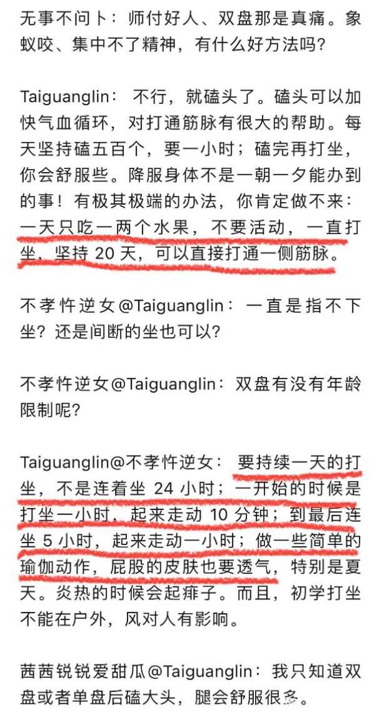
Taiguanglin
有人问20天内快速打通身体的办法，我个人是不太建议做的。因为这个都是在寺院里，有人在旁边护持的情况下做的。你要自己一个人找个地方，20天那么一蹲，万一出了事儿怎么办？
还有更重要的是，修行是整个把不好的执着舍弃的这个过程。你光是20天一下打通身体，但是你那些坏毛病，坏执着都没有舍弃掉的话，打通了马上又会堵上，你该吃的还得吃，该睡还得睡，该玩的还得玩，你这么一玩，打通了之后也很快就会堵上，没什么用的。
这就像武侠小说里给人强行注入内力一样，你的身体接受不了那个内力，你无法把它吸收化解的话，那注入进去的也只是能帮你吊一时的命而已，很快就会散去的，这没有用，所以还是建议你一步步来。
富贵行者
2024-02-28 17:38
是否功德足够了腿疼关过的快。
Taiguanglin
富贵行者，腿疼，你这个是其他病的痛的话，你靠功德有帮助。如果是健康情况下，普通人打坐的时候腿疼，这气不通的，那你还是多磕头，然后多放松身体。磕头、放松、念佛，这些都做到了，一般来说两三年吧，我也不敢说半年到一年，有些人是很快的。但是一般要想放松的话，可能两三年时间，身体就松开，然后就可以不痛了。但是呢，饮食很有关系的，你得少吃，吃多了就不通。
赵文龙
2024-3-18
顶礼师父。请问通过某种方法，提前打通奇经八脉对减少熬腿有用吗？
Taiguanglin
赵文龙，有点用，但是我是不建议做那种求速度的方法。这种急速的短期内冲刺般的修行这种事，当下看是有用，但是放松一段时间又会退回来，因为修行是一个持续的过程，把你的意识层面上的妄想执着给灭掉了，这样你的身体才能维持在那个状态。否则你只是单纯的把身体练上去，但是你的文字妄想、淫欲这些全在的话，上去了也没有用，过不了多久，你只要不修行全给下来。而且有可能这种冲刺式的修行会把习气种子翻出来，变得更痛苦。所以我是不建议这种方法的，理论上是可以的，但是我不建议。
青骢踏露行
2024-4-23
顶礼师父！向师父请教，万行大和尚您认识吗，可否搭配他的东华禅动功和他常用的那种六字大明咒的念法，来帮助打通经脉？
Taiguanglin
青骢踏露行，我还是建议每个人修自己适合的法门，并不要求所有人都一定要修观佛、思佛这个法门。你觉得万行上师的方法适合你，尤其是打通经脉这方面，动功更适合，那你就先做动功，这个没有问题。我只讲义理，重点是义理，你义理上所有的都明白了，具体修什么法门自己再来定。
松
2024-7-16
顶礼师父，请您开示: 《坐禅》里您教过激活脖子神经方法和放松身体僵硬的方法:没有枕头躺着发呆。躺一会后脑玉枕穴就疼，这个时候用身根持续觉知这个疼痛可以吗？还是说忽略这个疼痛，尽量避免觉知任何身体部位？
Taiguanglin
松，放松身体，你可以垫一个稍微软一点的东西，你别在硬地上直接把头往后躺着，这样会压到一些血管，然后就会麻。不用枕头，那就找一个薄被之类的，稍微垫一下，这个感觉就会明显减少的。
还有，你要想尽快恢复这种不好的地方的时候，哪里疼你就把注意力放到哪里，那样的话血液会更多地流向那里，会更快地修复。过一阵子之后，你会慢慢感觉那里又不痛了或者通了，身体就通了。
太师父的小粉丝
2024-09-11
18：39
3、您说打坐不能出声念佛因为漏气，但熬腿时可以看手机。可以熬腿看手机的原理是什么？六根没关闭散乱的为什么也能通气脉？谢谢师父！
Taiguanglin
然后你说打坐不能出声念佛因为漏气大，熬腿时可以看手机的原理是什么？熬腿时看手机的原理是什么，就是注意力移开，你腿疼吗，腿疼的很疼，那就看点别的东西，不要老想着腿疼，把注意力移到别处，稍微就不那么疼了呗。
六根没有关闭，散乱的，为什么也能通气脉？没关闭，散乱的，通气脉和六根是不相关的，最多和六根中的身根相关，维持这种双盘的姿势，它是让气正常的、有序的运转的姿势。在这个姿势下维持足够长时间的话，气会回到原来的正常运转上，所以会打通气脉的。
这和注意力散乱没什么关系，你只要维持这种状态两个小时，哪怕注意力再散乱，你打坐的时候坚持两个小时气还是会有所运转，虽然这个（和）没有注意力的状态相比还是差一些，但是对于正常的凡夫，没有修行的普通人来说，你只要坚持双盘两个小时的话，注意力放到哪里都无所谓，气还是会慢慢的会往这个方向走的，只不过两个小时以后你还这么搞的话，就会注意力一会儿放那儿，一会儿放这儿，这样会开始出问题。
两个小时以内还是可以的，所以看看手机也无所谓，你先把这个腿熬开了，能两个小时你就双盘坐着，能坚持看两个小时手机那也不错了已经是。
虔诚的行者
024-09-12
13:25
顶礼Tai师。
双盘熬疼期间，有时双腿为了通堵的地方，会不由自主的肌肉紧张充血方便通过去。但有的观法说，把注意力放在疼痛的地方放松更好。二者就矛盾了，为了更好的疏通瘀堵，减少疼痛，是任其肌肉紧张充血疏通好？还是意念观疼痛处放松好？
Taiguanglin
虔诚的行者，双盘熬疼期间，有时双腿为了通堵的地方，会不由自主的肌肉紧张充血方便通过去。但有的观法说，把注意力放在疼痛的地方放松更好……，我也说过了啊，哪里痛的话你就把注意力放到那里，血液就会流到那里，然后更快的打通，这个很正常。
二者就有矛盾了，为了更好的疏通淤堵减少疼痛，任肌肉紧张充血疏通好，还是意念？就是因为你没有办法把注意力熄灭，如果你已经修到没有注意力的程度，可以突然熄灭注意力的话，那没有注意力更好，如果你真的修到这个程度的话，身体早就已经通了。
但是注意力还在，你哪里痛的话，注意力自然会升起来，然后你为了熬更长的时间，故意把注意力放到别的地方，专注地去想别的事情，或者专注到一个其它地方上，暂时把注意力专注到一点，然后就忘记了疼痛，这是一个修法。
但是，我建议你好好观察那个疼痛之处，把注意力放到那里，一直观察这个痛处，这样更容易打通。我们哪里痛的话，我们第一个目标是先把这个痛的地方打通，所以就先把注意力放到那里，这样更好一些。
程荣华正骨
2025-2-13
师父好！双盘打坐与练呼吸哪种对打通经更有促进作用？之前看到有说练呼吸是打通经络的关键，又有说双盘两小时后才能打通经络。身边有一位同修只是每天晚上双盘打坐念佛一个小时，两年多后也基本打通了经络。
Taiguanglin
程荣华正骨，双盘才是打通经脉的主要方法，也能说只有双盘这一个方法才能让你打通经脉，其他所有办法都是辅助。练呼吸也是辅助，让你加速打通经脉的过程而已。
你不双盘的情况，只练呼吸，你把腹式呼吸练好了，那你比正常人，呼吸变得更好，吸收的氧气量更多，所以身体会健康一些，然后精力会旺盛一些，仅此而已。但不能打通全身经脉，只是把呼吸练好，并不能打通全身经脉。
要打通全身经脉是必须要双盘的。而且要打通的话，在双盘的状态下，慢慢也会改变呼吸方式，最后也会变成腹式呼吸，只不过这个时间会变得很慢。靠身体的自我改变，不是刻意地去改变的话，它会变得很慢，只是这个关系而已。
所以你要现在做的是，一边练腹式呼吸一边打坐。但不是要同时做，打坐的时候就不要练呼吸，就让身体自己呼吸。每天早晨起来十分钟、二十分钟、三十分钟这样站着桩，站着练腹式呼吸，然后晚上打坐，这样就好了。
通经脉的效果/时间
Ella1987011
2024-02-27 11:33
太师，请问是打通中脉之后才能进入禪定吗？
Taiguanglin
Ella，打通中脉之后进入禅定？对。你先把10年前的书看一遍，基本都说得很清楚了。
毛塵水
15-07-2024
2、关于《打坐满三小时，最快120坐，慢者200坐能通脉》，请问是指降魔或莲花各自独立计算还是可以合计呢？还有就是对于两边未通的人，我有时因为时间没能连续每天坐三小时有时两个小时，间断了有影响吗？应该是选择先坐通降魔一边好，或是每天轮换左右好呢 (抱歉师父，请为我弟子解惑)？
Taiguanglin
毛塵水，关于打坐的问题，我建议是每天，一天你只能打坐一座的话，那就一天降魔坐，第二天换莲花坐这样。如果一天可以两座的话，早晨空腹的时候就用莲花坐，然后就中午吃完饭下午或者到晚上消化差不多了，再降魔坐，这样比较好。我看你的意思是一天可能只坐一座吧，那就一天一个换着来。
还有能不能打通，每个人状况不一样，有些时候还得靠佛菩萨加持，单靠自己有点难度，有些时候佛菩萨那么点一下就可以打通了。所以说引发佛菩萨加持的条件也都讲过了，每个人都不一样。
至于单纯的靠自己的打坐来冲时间来坐的话，理论上一般一天能坐三个小时的话，四五个月不到六个月差不多了，一百二十座就是，满三个小时，最快一百二十座，那就是四个月呗，基本也能做得到，可以的。
但是我不建议你以这种方式修行，就是给自己定个目标，然后每天到几个月内一定要达到什么境界，这样反而给自己造成压力，更不太好。还不如就每天打坐三小时，把时间坐满就可以了，不用管什么进步不进步的，你只要坚持就够了。
S N Z Y L G
2024-9-10
Tai师父好！
1、目前双盘前一百二十分钟左右在入静中，基本身体感觉不到疼痛，但一百二十分钟后出静以后，脚踝会突然特别疼，大概到一百五十分钟左右到了疼痛峰值。 前天强忍疼痛到一百八十分钟时，突然脚踝不怎么疼了，然后一口气坐到两百多分钟，是否这是腿通了一次？ 但第二天双盘到一百五十分钟左右时，脚踝还是很疼，是否腿还是没通？ 我目前是先双盘入静两小时，后面苦熬的方式，连续坐过疼痛峰值，直到不疼再下坐的方法，这种方法是否合适？ 大概连续坐多少坐，腿才能真通不疼？ 或者真通不疼是否还有其它好的训练方法？
Taiguanglin
S N Z Y L G，打坐的时候，有一阵痛，痛感过去之后就可以坐比较长的时间了，但是第二天坐的时候，差不多那个时间点又开始痛。但是呢，你每次坚持的话，痛的强度会一点一点减弱的。这个通身体它不是一下子直接通了，然后全身马上就发生变化，那不可能的，又不是什么超人，什么变成超级赛亚人，瞬间能变。
而要慢慢来变的话，慢慢修复的话，每天都这样坚持下来。到了一定时间，就会哪个地方特别痛，然后熬过去的话就舒服了。那一天就舒服了，然后第二天打坐的时候又会痛，但是这个强度会一点一点减弱的。所以每天坚持就行，这个没有什么特别方法的。只要坚持下来，三五年这样坚持的话，基本都可以打通。
S N Z Y L G
2024-11-12
Tai师父好，躺在床上睡梦中进入类似入定的状态，和双盘打坐入定有什么区别？
Taiguanglin
还有睡梦中的入定和打坐双盘入定有什么区别？睡梦中只能算是0.5禅吧，不是完全的入定，只是暂时进入那种类似于禅定的状态。真正双盘入定，初禅是下三根要暂时熄灭的。
睡梦中你要躺着舒服的话，暂时类似于这种感觉，但是里边还是想法很多，妄想很多的，因为身体还没有完全气运转开来。还有躺着的时候，身体的某些地方接触面也大，感觉也多、也强烈，虽然你自己感觉不到，但这都会影响到入定的状态、入定的深度，所以打坐双盘才能真正入定，躺着那个只能是一种预演，入定之前的一种预演，如果你现在能做到睡觉的时候有类似入定的状态的话，那差不多了，可能半年一年后，白天也好，晚上也好，双盘有可能就入定了。
最主要是这个要稳定下来，你的饮食，还有平时的作息，都得配合好，你要一直维持入定的状态的话，人要不该做的就不要做，不该想的不好的想法也尽量都去掉，这个还是要求有点高的，每天打坐四个小时以上，要一直维持下去的话还是有点难度的，总之还是加油，我还是挺恭喜你的。
人有过这样的感觉之后，信心就上来了。最怕就是没有信心，修了很多年都没有任何感应，身体也没什么感应，意识层面也没什么感应，这样的话慢慢就产生怀疑，越怀疑就越进步不了，所以修行还是以信念为主，信念的前提，就是有这样的好的感应，就最好了。
光影
2024-12-13
1、师父如果要是双盘这样打坐，每天两个多小时，大概多久可以打通任督二脉，就是可以自发的从会阴开始气就走督脉再走任脉。
Taiguanglin
光影，如果你吃的，饮食啊，呼吸啊，睡眠啊，这些都很正常的话，每天坚持打坐两个小时，怎么说也得半年到一年时间吧，半年到一年基本身体会有改善。完全通不好说，看每个人不同情况，有些人是硬打坐三个月，就是强迫自己一直坐着超过两个小时到三四个小时，这样一直坐着，两个月到三个月就可以打通，硬打坐的话。
但是他的身体和意识层面都没有跟上变化的话，后面一懈怠又会退步了，通了也会慢慢堵回去的。
所以我是不建议这种短时间内疯狂打坐的行为，修行还是慢慢来，意识层面上的修为也要跟上才好。
休养生息1
2025-01-16 20:14
顶礼师父！
1、打通全身筋脉，炼精化气，是否有年龄限制，比如男人六十绝精后，女人五十绝经后就很难达到了？
Taiguanglin
休养生息1，炼精化气，理论上是没有年龄限制的，男人没有绝精这一说，就是到了七、八十岁也能生育，男人是可以做到的。就是不能再勃起的时候，基本是精枯竭了，但是保养的好的话，七、八十岁都能生育。所以对于男人没有绝精之说，但是女人有。
不过过了这个年龄段，六、七十岁之后打坐，如果想要入初禅的话，就得重新生出来精，然后再把它化掉，这样可能比年轻人要花更长时间。尤其是女性绝经之后，想打坐，再进入初禅的话，因为月经还会来，然后再重新把它化掉，这样才行。但是一般女性真的，能练到初禅以上的人相当少。当然在这个贴吧里，在这里听我讲法的人当中倒是有。
煜啟
2025-2-13
师父，已经坚持每天双盘两小时有快两个月了，还是会有点酸胀痛。有时候痛的不行就哭的不行，觉得众生好苦，人好苦，生下来就苦，还是自讨苦吃。大概一个小时后就坐不下去了，动来动去，忍着痛熬过两小时，最近这几天会稍微好点了。痛起来就想到身痛心不痛，保持一心，去住空心的感觉，但是一会儿又坚持不了了。请问师父这样的话，大概要多久才可以打通经脉不痛了啊？谢谢师父。
Taiguanglin
煜啟，要双盘达到两个小时，身体全部不痛这个程度需要多长时间？一般来说，你要稳定的进入欲界定，没个三、五年的功夫不行的。要彻底戒肉，书上说是戒肉五到七年，然后天人们开始来护持，不再讨厌了，这样的说法。
然后你不吃肉之后，至少也得三年以上吧，双盘能稳定的在两个小时的状态。当然每个人身体情况都不一样，有些人从小开始练，十几岁，甚至十岁以下就开始练的人，身体没有那么堵，或者没有那么多的坏习气导致身体有病痛，这样的话更容易通。
只不过我们成年人想再修的话，身体都已经僵硬又僵直，又有很多病痛，加上软骨磨损的程度也大，这种情况下会很痛。这个很正常，所以修行的时间需要更长。
所以这是一个漫长的长期战斗，不是你想两个月，或者半年左右就彻底解决这个问题，不太可能的。所以坚持打坐、磕头、念佛，坚持做就可以了；不要想着到几岁的时候一定要达到什么境界，这都是给自己制造更多的烦恼而已。
你就坚持每天打坐两个小时，已经很好了。作为初学来说，这已经是很精进的，所以加油就行了，不用想那么多。
Tai师父的小粉丝
2025-03-12 16:00
2、Tai师父您好，我记得您在书中有提到打开窍穴了修罗会从头上冲进来。我想问打坐不是就会“打开”窍穴么？不“打开”那如何吸收外界的能量呢？还是您说打开和打通也有区别。很多冥想还说要想象光从中脉进来呢。是不是不要想负面的就不会有您说的那种情况了吧？
Taiguanglin
下一个问题，打开窍穴这个问题，以前我也讲过，佛法修行是不讲什么能量的，也不指望从外边吸收能量。
我们是不搞什么从外边吸收能量这样的修法，所有能量是从自身里产生的，并不是靠从外部吸收来的。
只要你打坐让气在内部循环，不去消耗气，让气全部在内部循环的话，就可以达到恢复身体的效果。我们平时看啊、听啊、手啊这些地方，都在向外消耗气，尤其是费神的时候，专注地干点什么的时候，都在消耗气。
打坐就是把注意力暂时熄灭，让身体处在那种循环的状态，让气回到体内正常的循环，达到修复身体的效果。并不是从外界吸收什么东西，你这样想的话就不是正常的佛法了。
打开是因为你把注意力放在外边，外边就会形成引力点，然后气开始往外流，就有可能被打开。所以打坐的时候注意力散乱，一会放到这里，一会放到那里，尤其是放到外边的时候，更容易打开。
打通是只要静静的坐着，内部窍穴，脉，穴位，各种大的穴位打开打通，然后就气就下来了，每个穴都会疼一段时间，然后就打通了。打通之后气就顺畅了，就不那么疼了。
冥想还说想象光从中脉进来……，以前也说过，天台宗的一种修法是，观想阿弥陀佛的光芒，从你的鼻子里进来，进入丹田，有这样的想法。但是这里明确是要有阿弥陀佛或者什么佛的，它不是从外界吸收什么光芒。你这样想的话，就又落入到其他心外求法的那种错误认知当中，我们是不讲究从外边吸收能量的，这个你要清楚。
通经脉的特征
清净2024
2024-02-13 17:42
师父，稳定如意坐，降魔坐都能坐2小时后且后面半小时腿也不太痛了，是否这种状态已经快接近通中脉了？
Taiguanglin
清净2024，那就往三个小时以上努力就可以了，你不用管什么通不通这些问题。通就通，不通就不通，别人判断有什么用，你自己能打坐三个小时、四个小时就可以了。
明舒（Tai）
2024-02-15 09:13
顶礼师父！有人双盘三小时后脚底涌泉穴开了，整个腿部脚趾都很灵活，坐多久都不痛，后来到肚脐，心，喉咙都通了，想问一下师父这样是正确的打通筋脉吗？还是说这种会漏气？感恩师父慈悲开
Taiguanglin
明舒（Tai），双盘两个小时的时候就应该都通了，双盘三个小时后就是第二次激活的状态，第二次修复身体，让身体感觉消失。第一次修复是让痛觉消失，但是身体的感觉还在，第二次修复之后就感觉都消失了。
所以第二次修复的时候，每个人的感受都不一样，所以，不要和别人比，你自己观察自己就可以了，只要时间能堆到三个小时四个小时，而且你自己不感到痛，身体有明显的开始修复的感觉，这就对了。
果慧
2024-03-05 15:30
坐禅书上别人的说，打坐有没有效果，就看打坐时有没有口水，多不多？然后您回复，唾液要督脉通的时候才会有。那请问，我只有出声念经，念佛，念咒之类的，口里就会有口水，这是属于督脉打通的前兆吗？
Taiguanglin
还有唾液，打通了的话，你不说话的时候嘴里也会有唾液一直出来，所以时不时地要往下咽。你真的通了的话，它就一直出来，没有通的话，可能说几分钟的话就口干舌燥了。
无名皈依
2024-03-23 13:58
Tai师父！1、我发现有同修单盘就能感觉督脉任脉气流通畅流动，也有同修双盘三、四个小时还是没动静，主要原因是什么呢？
Taiguanglin
无名皈依，有些人单盘有气感，有些人双盘三四个小时没有动静，他是已经过去了，三四个小时的话，如果按照正常的修行方式，正法的修行方式 ，能做到双盘三个小时，他那个有感觉的过程已经过去了，过去之后就没有感觉了，感受不到这才是正常的，你一直有气感的话，那是功夫还没到的程度。
掌南飞
2024-03-25 23:12
Tai师父好，1、请问为什么我双盘没有达到两小时热流就进入任督二脉了，还进入中脉了呢？是因为我本来吃肉不多，后来吃素还是因为在海南氧气含量高的原因？
Taiguanglin
掌南飞，“双盘没达到两个小时，但是任督二脉打通了”，你在这个地方说这些，有点炫耀的嫌疑吧？只能说你是万中无一的武学奇才嘛，骨骼清奇，下面有人说了，骨骼清奇。每个人因缘不同，身体情况也不同，有些人一上来就身体很好的。
我在网上看那个杨宁，那个大妈，她说她第一次打坐就入定了，然后在定中出现很多人教她各种东西，有中医的，有佛法的各种东西，有十几个人教她，看人家有这样的因缘，那没办法。我也看过她不少视频，讲佛法的部分，挑不出什么毛病来。佛法部分在她讲的程度上都是对的，那还能怎么说呢？每个人因缘不同嘛。
SNZYLG
2024-5-20
太师父好！我降魔、莲花都能坐2小时，最近双盘通督脉时经历过会阴震动，大椎穴、脖子、玉枕穴剧烈疼痛，汗如雨下，印堂穴聚气，鼻子通，嗅觉变灵敏等现象。
1、但通任脉没太大感觉，只是舌抵上颚时舌头酥酥麻麻，两牙膛间挂钩疼过一会，有过几分钟胸闷喘不过气，然后就感觉热流从上到下涌入丹田。请问太师父，这样的现象算任脉通了吗？任脉打通的标准是什么？
2、如果任督打通应该会水生火降，但我最近刚吃完饭后，如果说话过多或运动，就会气血上涌，表现是后背发热脑袋出汗，脑袋出汗后就会脑袋轻微疼痛，以前无这现象，请问太师父这是什么原因？应该如何解决？感谢太师父！
Taiguanglin
SNZYLG，通脉每个人感觉都不一样，有些人都没有什么明显的感觉就通了。所以最好坐到两个多小时的时候，身体没有什么特别的感受，只是感觉很舒服，有身体存在的感觉，这就可以了。不需要什么通脉的感觉一直在，最后身体的感觉慢慢都会消失。一开始只是痛感消失，到后面身体的感觉都会消失。所以你不需要管中间的什么过程怎么样。
本来吃完饭后气不那么通，这个时候说话过多和运动就会出现这种状态，所以你不做就可以了。你吃完饭后漫步一段时间，然后该干嘛干嘛。
SNZYLG
2024-5-21
Tai师父好，十年前书中提到最后通中脉，中脉应该不是指任督二脉吧？通脉的顺序是督脉，任脉，双手经脉，双脚经脉，最后中脉吗？中脉通后头顶莲花开智慧生，对应是欲界禅定还是四禅境界？
Taiguanglin
SNZYLG，十年前书都好好看了吗？中脉就是任督二脉，通脉的顺序是先通左右两侧，像一个八字一样，两边交叉的这种状态，两边都通了之后中间是任督二脉。
第一次升级的时候是对应欲界定，第二次升级的时候对应初禅，初禅之后就没有身体的感受了，纯粹意识层面上的状态，没有身体感觉，所以后面就没有了。只有在初禅之前，也就是前面初禅那个音频里讲的，双盘大概三个小时以后，会出现第二次升级的感受，后腰开始发热，有一种热流上爬的感觉。
S N Z Y L G
17-06-2024
Tai师父好，
1、督脉和任脉打通后，不舌抵上颚，督脉的气也会流到任脉吗？是通过上下额之间的挂钩附近流下来吗？
Taiguanglin
S N Z Y L G，督脉和任脉打通之后，打坐会自然而然地舌抵上颚，身体会自己调整最佳的姿势，所以舌抵上颚是自然而然形成的，一开始你有可能要强行的贴，但是坐到一定程度它就会自己上去，你不用管。
S N Z Y L G
15-07-2024
1、Tai师父好！双盘第一次通督脉后，感觉后脖子左侧像是有根血管还没完全通开，但玉枕穴先打通了，后面双盘上坐后，气就直接走督脉了，没有之前气脉通脖子左侧时哪种剧烈的疼痛了，请问师父，后脖子左侧没完全通开的地方，什么时候或满足什么条件，会开始再次疼痛疏通？
Taiguanglin
S N Z Y L G，双盘哪个穴位什么时候会通，这个是你自己的事情，我怎么好判断。但是如果你问我，我是通常通了一个穴之后再过三个月到四五个月，基本不到半年就会通下个穴，因为我是比较精进的，那个时候打坐比较精进，所以通的还算快。但是都有一个过程，有时候就会梦见观音菩萨来碰一下之类的，也有这样的梦境，然后很快就通了。
可以说有些时候通是靠自己通，有些时候是在佛菩萨加持下通，所以自力和他力两个都得用好，不要只想着靠自己拼命，你的大愿到了，你有大菩提心的话，菩萨真的会帮，该通的时候给你直接打通，这个是没有什么，对他来说是最简单不过的事了。所以对我们来说还是发愿最重要。至于我们的身体，你越不关心它身体通得越快，所以尽量不要去管那个通不通的问题，你只要每天打坐，把时间坐满就行了，把时间一点一点往上加，能加到哪里就加到哪里。
我在树下
2024-08-12 00:29
师父，是否有方法量化测量经脉的打通程度，像身高体重一样测试一下就出结果。
Taiguanglin
我在树下，经脉打通程度，这个不是很简单吗？你能双盘两个小时不疼就行了，只要双盘两个小时，坚持下来腿不疼，浑身都不那么疼，但是呢，你坐不住，情绪起来了坐不住，这个和身体是另一回事，身体是身体，情绪是心理层面上的。
有些心理层面上不行，但是身体能达到这个程度的人也有，有些人心理是很静，但是身体痛的实在坐不了了，这肯定是没有通的，所以你就把这两个，一个心理层面上能坚持两个小时，一个是身体层面上两个小时不动，这样就够了，这也没有什么好量化计算的。
龙华莲池会上人
2024-11-12
问：中脉一定得在任督开完才能开的吗？ 我看老参们苦坐三十年，也没有开督脉的，但是都能坐一整天，弟子也是没开，冬天最长双盘十八小时，但是淫欲心特别重，大悲咒大礼拜，拜八十八佛……。
Taiguanglin
下一个问题。龙华莲池会上人，中脉一定得在任督开完才能开吗？中脉不就是任督二脉吗，我们不是这么看的吗，不知道你是怎么看的。
你说的老参们苦坐三十年也没有开督脉，他说的应该是他修佛三十年了，但是没有开督脉，没打坐呗。如果真的打坐，每天坚持两个小时，你别说三十年了，每天坚持两个小时，坚持十年，三五年都能打通，正常人三五年都可以有明显进步的，哪有打坐三十年，每天十八个小时都打不通的，实际上没有这么身体不好的人。很多人跟人说话的时候，就说自己学佛多少年了，但实际上，学佛是，他接触佛教的时间的确这么长，但是真正拿来修行打坐的时间根本没多少，所以才那样，所以不要管这些说法。
还有尤其是那些喜欢拿修行说事儿的人，说自己修行多少年，念多少遍经，这样的人，我个人是觉得修为还没到一定程度，老把修行多长时间念多少遍经，把这个当做什么成绩来炫耀。这都没必要，谁关心你那个问题。你是菩萨就是菩萨，你是凡夫就是凡夫，你念的再多那也是凡夫。如果你把这个当做一种炫耀的资本来看的话，永远是凡夫，都解脱不了的。
普度众生，我们菩萨都是以度人为己任的，但是菩萨从来都没有成就感这一说。做了多大事他也不说，也不会拿来说事，也不觉得这个很了不起，他只是默默的做而已。所以喜欢说自己成就的这些人，还是少接触，接触了你就把它当做耳边风听一听就可以了。
道法自然00
2025-02-11 16:29
顶礼师父，看到有人在打坐吧说很多人打通任督二脉只是沿着身体中线的表层通了，但沿途骨头等没有被修复，我觉得他说的不对。_x000B_ 我个人感受是双盘两小时打通任督二脉，不只是沿着身体中间的一条线，而是整个面，也就是从整个后背，途经脖子，后脑，面部等的整个面，沿途的筋骨大穴都会被疏通修复，这样理解是否正确？
Taiguanglin
道法自然00，你说的对，任督二脉不是在表层的，是在里边儿的。后边儿这个脉，就是脊椎里边儿，随着脊椎里边儿的骨髓，这里往上走的。前面这个是因为没有那种东西，前面算是皮肤下边儿，感觉这样。但是胸口下去的时候，它也不是在皮肤下边儿，而是骨头下边的，肋骨下边，有这个感觉。可不是全靠表面的。
道法自然00
2025-02-12 19:26
师父吉祥，打通任督二脉后，丹田会有什么反应？比如丹田是否就会容纳比常人更多血液一直有热流涌动？丹田腹部可以像青蛙那样大幅度呼吸吸入更多氧气？
Taiguanglin
道法自然，打通任督二脉后丹田会有什么反应？比如丹田是否就会容纳比常人更多血液一直有热流……，一直有热流的话，你通的还不彻底，热了之后就没有感觉了，回归到平静，最后是身体整个感觉都消失，所以应该是没有感觉的方向发展才是正确的。
像青蛙那样大幅度呼吸吸入更多氧气？没有必要刻意地鼓起来。当然前面练的时候，有段时间是要故意吸气用力撑开的。但是之后，你只要打坐的时候，已经没有什么特别不适的感觉，呼吸困难这种不好的状态的话，就不要再控制呼吸，大幅度呼吸，你就正常坐着，让身体自己呼吸就可以了。
锋
2025-3-10
2、通督脉打通尾闾关顺序，是先从双肾，到会阴，再到尾闾的顺序打通吗？打通尾闾穴的哪八个骶后孔，也是从下到上一个一个打通吗？打通过程中会疼吗？
Taiguanglin
下一个问题，气通的顺序是：从双肾开始，汇到中间，然后开始往上走——不是往下走会阴，而是先往上走；然后一直到头顶，再往下走，通过胸口；然后通过丹田；然后到会阴穴；再回到后背中心，是这样的。不是从后背往下走，所以你要认为尾巴骨的这个穴位没通，那得绕一圈之后才能打通，不是直接往下通的。
穴位打通的过程中，每个人感觉都不一样，有些人是真的会感受到痛，所以有点疼很正常，不要太担心。而且有正常的气感，就是全身开始通气了，然后穴位不通的地方很痛，这说明你打坐的方向正确。如果长时间打坐都没有任何感觉的话，除非是你全身已经全通了，要么就是修的方法错了。
一般情况下，除非是从十几岁开始打坐的人，一般人是成年后开始打坐，多数都是不通的，都要经过这些痛的感觉。
如善
2025-3-12
顶礼师父_x0001_！弟子打坐俩年半了，上俩小时有三十多坐了，最近开始有通任督二脉的现象出现了，又不确定，毕竟弟子以前身体不好，2017年做了剖腹产，2019年切除胆囊和2020年切了左甲状腺手术，现在也四十二岁了，所以特来问师父。
起初是会阴钝痛一下，接着丹田发热连接着腰俩侧，然后背部发热来到后脑勺，后脑勺紧张一会儿，就头顶发胀，来到人中，后面任脉就没什么感觉，就是发现在快速拜完四百三十二个大拜后，胸口如山谷清泉一样舒畅，没有滞感。
过了俩天后，脖子和大脑又比原来堵了更久，这是为什么？今天凌晨三点多，我仰躺着，手置于肚脐俩侧，丹田又开始发热，走俩侧腰，上脊柱，大椎穴，喉腔鼓动后就来到手臂回到丹田。通小臂凉丝丝的。这次很明显是通了，后面任脉也没什么特别感觉。请问师父，如果是开始通任督二脉了，以后弟子应该注意什么？怎么努力？感恩师父！
Taiguanglin
如善，通任督二脉，你说的感觉应该是对的，通了就通了，这个没有什么特别要怎么样的。主要是你的饮食问题。你想让气通的状态一直维持着，那最好是控制饮食，不该吃的不要吃，尤其是油腻的。我相信能通的人基本都是戒肉的，一般吃肉的情况下很难通。
那么戒肉就不用提了，油腻的问题。还有晚上少吃点，晚上吃多了又会发困，又不会通，本来通的也会变堵，吃的多胃里食物多的话。所以晚上尽量少吃就可以了。然后每天正常的打坐、磕头、念佛，只要过一段时间，这种痛的感觉也会消失，然后坐着的时候就越来越舒服，然后身体的感觉就会慢慢消失，这就正常的修行了。
金刚葫芦娃1
2025-03-14 20:01
顶礼Tai师！
打通任督二脉起点如果从海底轮会阴开始走，第二站是尾闾关吗？然后再两肾，再到后背夹脊穴？
Taiguanglin
金刚葫芦娃1，任督二脉，基本上正常人应该都是从双肾开始，肾里先有感觉，然后有股热流汇集到脊椎处往上走，正常的都是这样的。没有人是从海底轮会阴处开始升起的，因为这不是产生气的地方，人的气是从双肾开始升起的。
我不知道你是什么情况，你可以去看穴位图，这一圈都有什么穴位。都是从后边上来，然后在前面下去，中脉就是这个顺序，不可能是倒过来的，所以你就按照中脉轮转的这个顺序来看就可以了。你会阴之后往上是哪里，会阴前面就是肚脐这了，就是丹田。从后边上去，前面下来，都是这个顺序来的，没有别的方式。
金刚葫芦娃 1
2025-03-15 19:52
顶礼 Tai 师， 按照师父昨天开示打通任督二脉的顺序， 哪么尾闾关是否是最后一个大关口？
从两肾出发经后背和任脉， 过会阴然后到达尾闾， 尾闾关通了是不才代表任督二脉彻底打通？
尾闾关听说是很难打通的， 打通尾闾关， 那八个骶后孔是一个孔一个孔疼的感觉吗？
Taiguanglin
金刚葫芦娃 1， 打通任督二脉之后应该算是， 你说的那个吧。 就是从会阴到双肾中间的这个位置， 就是肛门到屁股尾巴， 然后到双肾中间这个位置， 这里是最后一段。
但是每个人的感受都不一样， 不能说谁的感受痛、谁的感受不痛，这个来判断， 有些人就不怎么痛。 我个人是没怎么痛过的， 没什么特别痛的感觉， 但是后背有几个大穴是痛的。 所以根据不同的人， 看不同的情况吧。
你说后孔是一个孔一个孔痛的感觉吗？ 这个我没有经历过， 我不好说， 我没有这种痛感。
还有一种说法是， 打坐要把尾巴骨给坐到拉直为止， 有些人的尾巴骨是往里勾的。 就像横着行走的动物， 它尾巴是耷拉着的。 那它最后的尾巴骨， 从脊椎上看肯定是九十度往下耷拉着， 是不是这样。
那也有些人的尾巴骨是最后一根往里边凹进去的， 往里边弯进去的， 说是这样的尾巴骨堵住了某个穴位， 所以打坐要把尾巴骨给坐到拉直为止， 也有这样的说法。 但是我个人是没有经历这种事的， 我摸了自己的， 我自己是本来就是直的， 就没有弯的那种状态。
打通后的维护
鱼鱼老人
2024-02-13 18:59
2.通筋脉这件事情 我这里的一个女师兄有练功 经常通了又堵通了又堵 您说快速通完筋脉也会容易不注意就堵回去 那么如果花几年时间熬通筋脉 也会很容易就堵住吗 还是说有哪里不一样呢
恳请师父开示 感恩师父
Taiguanglin
还有通脉之后又会堵，这个是通了之后，要继续维持一定的时间每天的那个量，要保持通的状态。还有是你吃的，饮食，呼吸，还有想法，这些都会有影响。你的修行要跟上，整个心态都变化，执着都得少下来，然后才能达到一直通的状态。如果长时间不修的话，又还会堵的。
如善
2024-3-27
请问师父，一直坚持打坐，通了地方还是会堵回去是吗？弟子开始不垫垫子打坐了，最近打坐时，降魔坐又出现了身体大幅度往左，或莲花坐往右倒，摆正了姿势还是又倒回去，这是我身体左右俩侧经络不通的节奏还是骨架不平衡啊？要多久才能通啊？
Taiguanglin
如善，身体往一侧倾斜，这是身体不通的表现。身体某一处不通的话，就会往某一处倒，这个很正常，坐着坐着多坚持一段时间，慢慢就转过来了。这个骨架不是问题，如果骨架不平衡，靠五体投地磕大头，一段时间骨架左右不对称的，都能掰回来，不是靠打坐的。
然后你说的身体姿势往前倒也好，往左右倒也好，这都是气不足的原因。还有某些地方，内脏还没有到完全健康的程度，你要说多长时间吧，到欲界定就肯定能好了吧。那长则十年，短则两三年。
云
2025-1-16
顶礼师父！如果我坚持打坐到了全身筋脉都通了，到年纪很老了筋脉还是会塌陷的对吗？那么那个时候的筋脉是通的状态还是又堵上了？
Taiguanglin
云，年轻时候打坐全身通了，你要继续打坐才能维持通的状态，如果两三个星期不打坐的话，它就会慢慢堵的。
所以老年的时候经脉塌不塌、堵不堵这个问题，就看你怎么坚持了。你每天坚持修行至少两个小时以上，到了一定境界之后，每天要坚持四个小时以上的打坐时间，这样的话就持续保持状态，哪怕年纪大了也可以。但是如果你中间几个月不打坐了，半个月以上，身体就开始有点不一样了，自己都能感觉得到。
雲水散人
2025-3-11
师父您好，请教能疗师用秘法给打通中脉后自己用能量时随时可以做到开关和自己坐禅打通中脉有什么不同吗
Taiguanglin
雲水散人，你这句话都没有标点符号。我就理解为你是靠别人的某种方式来帮你打通中脉，这个和自己打通有什么不同，是这个意思吧？一般来说，这种外力强行打通的，不是你自己打通的话它慢慢会堵。只要你正常生活的话它慢慢会堵，哪怕是正常打通的人，靠自己打通的人，不坚持修行的话还慢慢会堵；更何况是外人用某些方法帮你打通的，那肯定是不坚持修的话，都慢慢会堵的。
而且这种靠外人打通的方法，不知道是怎么打通的。如果用强行的外力来打通，就像武侠电影里的那种，给身体注入内力；看电影、小说里好像是注入的，好像人都很正常，但是这个东西一旦到了你体内，会快速地消散，不会留住的。因为所谓的内力，现实里的内力是你的五脏六腑健康的状态下产生的一种能量，但是你的身体不是那么健康的状态下，别人给的能量它无法在脏腑当中存留，所以都会消散掉。所以说别人帮你打通的很快都会堵掉，这个是没有办法的。
除非你再借着他打通的那个劲儿，那个时间段，加速赶紧修行，赶紧打坐，让自己身体更快的发生好的转变，这样或许还有些用。
还有，现在好像也没什么人做这种事，帮人打通脉的，基本都是骗人的。我是这么看的，很少有这种事。因为要想用自己的气来打通别人不通畅的经脉，消耗得非常之巨大。一般修行人都把自己的好不容易修出一点的能量、气，当成宝贝来看，谁会愿意给别人做这个事，你给多少钱都不愿意做的。